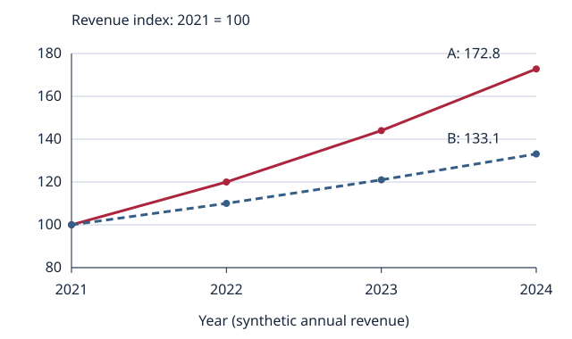
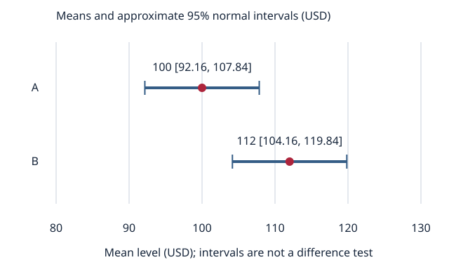

44 available chapters from a planned 18-volume mastery library.
Edition boundary: 6 October 2026.
This print edition contains the actual manuscripts currently available. It does not include planned chapters as if they were written. Draft status remains visible. Solutions are expanded when printing.
Volume 01 · Chapter 01
Scarcity, choice and opportunity cost
Foundation Author-reviewed · Prerequisites: None — begin here
By the endIdentify the best forgone alternative and compare choices using relevant incremental consequences.
The problem economics begins with
You have one evening. You can work for pay, study, spend time with family, or rest. Each option uses the same limited hours. The problem is not necessarily a shortage of money; it is that you cannot simultaneously do everything you value. Economics studies choices made under constraints, the interactions among those choices, and their consequences.
A constraint describes what is feasible. A household faces time, income, borrowing and information constraints. A firm faces technology, capacity, financing and contractual constraints. A government faces resources, administrative capabilities, political commitments and legal constraints. Start an analysis by identifying the decision maker, the available actions, the constraints, and the objective.
An objective is what the decision maker values. It might be consumption, profit, health, learning, reliability, or a combination. A financial return is one possible component. It is not a universal measure of wellbeing. When important outcomes cannot be expressed credibly in money, keep them explicit rather than assigning invented dollar values.
Opportunity cost is an alternative
The opportunity cost of a choice is the value of the best feasible alternative forgone. It is not necessarily an invoice or cash payment. Using a building you already own can have an opportunity cost because you could rent it out. Studying for three hours can have an opportunity cost because you could work or rest. The best alternative must be realistic and available.
Suppose you can choose only one of three activities with net benefits of 100, 70 and 40 measured in the same units. If you choose the first, its opportunity cost is 70. Adding 70 and 40 would pretend you could undertake both forgone alternatives even though the constraint permits only one. The advantage of the first choice over the best alternative is 30.
Be clear about the accounting convention. If you have already subtracted the forgone alternative's value when calculating an economic net benefit, subtracting it again would double count it. A useful approach is to calculate the future benefits and costs of each feasible action consistently, then compare their net values.
Relevant costs and sunk costs
A cost is sunk at the time of a decision when it has already been incurred and cannot be recovered through any currently available action. A past payment does not automatically qualify: if you can obtain a refund or sell what you purchased, the recoverable value affects the decision.
Compare consequences that differ among the actions from the decision time forward. Suppose a business spent $40,000 developing a product. Launching now would generate $30,000 of revenue and require another $20,000 of cost. Abandoning would generate no future revenue or expense. With no other consequences, launching has a $10,000 advantage. The unrecoverable $40,000 affects the historical project's total return, but it does not reverse the current comparison.
Historical accountability and current decision quality answer different questions. Managers should learn why the development money was spent and whether the original decision was justified. They should also choose the best remaining action. Continuing a bad project merely to make the past expenditure feel worthwhile can destroy more value.
Past choices can still matter through their present consequences. A signed contract can impose a future cancellation charge. An acquired skill can improve a future benefit. A reputation can influence demand. Count these consequences if they differ between the actions; do not label all history irrelevant.
Think at the margin
An average describes a total divided by a quantity. A marginal quantity describes the change caused by an additional unit. A firm deciding whether to make one more item needs the additional revenue and additional cost, rather than the average historical profit of all items.
For discrete actions, write the comparison explicitly:
Incremental net benefit = incremental benefit − incremental cost
An additional unit is worth taking when this quantity is positive, given the constraints and the consequences already included. When benefits decrease and costs increase with quantity, this often means expanding until the next unit is no longer worthwhile. Without those conditions, a local comparison need not find the best overall decision; compare the feasible alternatives directly.
Later, calculus will formalize marginal changes with derivatives. The familiar condition “marginal benefit equals marginal cost” applies to particular interior, differentiable optimization problems. It is not a rule that every optimum must satisfy. Capacity constraints, indivisible choices and corner solutions often produce an optimum where equality fails.
A decision procedure you can reuse
First specify the choice and the decision time. List realistic alternatives, including doing nothing when it is feasible. Then describe the consequences that differ among them. Put money on a common date when timing matters; Chapter 5 develops that calculation. Identify uncertain outcomes rather than silently treating them as certain; Chapter 8 develops scenarios.
Check for double counting. A lost wage can appear as the alternative's benefit or as an opportunity cost of the chosen action, but it should not appear twice in the same comparison. An expense already deducted from profit should not be subtracted again. Nonmonetary outcomes should remain visible when monetary equivalents are unreliable.
Finally state a conditional conclusion: which action is best under the assumptions, which assumptions matter most, and what new information could change the result. A disciplined decision is transparent about its limits. It need not pretend that uncertain personal values or future outcomes have been measured precisely.
Common errors
Counting only cash: overlooks the best use of time, owned assets, or scarce capacity.
Adding incompatible alternatives: inflates opportunity cost beyond what was feasible.
Counting the same loss twice: mixes a net-value comparison with an opportunity-cost adjustment inconsistently.
Letting a sunk payment decide: confuses historical performance with the best current action.
Using averages for additional decisions: ignores the consequences of the next unit.
Inventing certainty: converts uncertain or nonmonetary values into precise-looking numbers without justification.
Exercises
Attempt each problem before opening the solutions. State your assumptions and units.
You can work for five hours at $18 per hour with a $15 transportation cost, study for an estimated value of $95, or rest for an estimated value of $65. The choices are exclusive. Which is best, what is its opportunity cost, and what is its advantage?
An owned office can be rented out for $900 per month after rental expenses. Using it for your own business requires $150 per month in additional cleaning costs. What monthly cost should the business compare with the benefits of occupying it? Explain why the historical purchase price is not enough information.
A nonrefundable $120 ticket has already been purchased. Attending provides a benefit of $90 and costs $20 in transportation. An alternative activity provides $80 net. Compare the current choices. How does the result change if the ticket can be resold for $30 after fees?
A project already cost $8,000. Completing it requires $2,000 and produces $2,700 of future revenue. Abandonment has no future consequence. Calculate the best current decision and the total project profit if completed. Explain why these can point to different judgments.
The net benefits of three mutually exclusive actions are 160, 120 and 90. Someone says the first action's opportunity cost is 210. Identify the error and calculate the relevant comparison.
A seller can produce up to four units. Additional-unit benefits are 30, 25, 18 and 10; additional-unit costs are 12, 15, 17 and 20. Assuming these are the complete consequences, how many units should be produced? Calculate the total net benefit.
A student says, “I must finish this course because I have already spent 100 hours on it.” Give a case where continuing is rational and one where stopping is rational. Identify which future consequences would decide the comparison.
Write a decision memo of no more than 150 words about a real choice. Identify the decision time, two feasible alternatives, the opportunity cost, a potentially sunk cost, uncertainty, and a fact that could change your decision. Do not invent monetary values for outcomes you cannot credibly price.
Solutions and evaluation criteria
Work is worth 5 × 18 − 15 = $75. Study is best at $95; its opportunity cost is $75, and its advantage is $20. Rest is not added to work because the forgone alternatives are exclusive.
The relevant monthly cost is $900 forgone net rent plus $150 additional cleaning, or $1,050, assuming those consequences are distinct and complete. Historical purchase price does not describe the current best alternative. If selling is also feasible, compare its future consequences on a consistent horizon.
Attendance is worth 90 − 20 = $70; the alternative is $80. Choose the alternative by $10. With resale available only if you do not attend, the alternative is worth $110 and is better by $40. The resale opportunity changes the current comparison.
Complete: 2,700 − 2,000 = $700 more future value than abandonment. Total project profit is 2,700 − 8,000 − 2,000 = −$7,300. The original project lost money, yet completion minimizes the remaining loss under these assumptions.
The analyst added alternatives that cannot both be taken. The best forgone alternative is 120; the first action's advantage is 160 − 120 = 40.
Marginal net benefits are 18, 10, 1 and −10. Produce three units for a total net benefit of 29. The complete quantity comparison gives totals 0, 18, 28, 29 and 19, confirming the choice.
Continuing is rational if its expected future benefits exceed those of the best alternative after remaining costs. Stopping is rational if an alternative has higher future net value. The 100 unrecoverable hours are sunk, but skills already acquired, remaining fees, completion requirements and future opportunities can affect the comparison.
A strong memo compares genuinely feasible choices, uses a consistent time horizon, separates recoverable from sunk costs, avoids double counting, preserves important nonmonetary outcomes, and gives a conditional recommendation. There is no universal correct personal choice; the quality of the reasoning is assessable.
Teach-back and retention
Teach-back: explain opportunity cost to someone without economic training using an owned asset and a time allocation. Explain why a disappointing past investment can still rationally receive more spending.
Delayed check: a month later, revisit an actual choice. Reconstruct the alternatives without reading this chapter. Can you distinguish the best forgone alternative, sunk costs, and future consequences that genuinely differ?
Where this leads
Later chapters formalize constraints and objectives with algebra, optimization, probability and dynamic models. Welfare economics asks whose benefits and costs are counted; information economics asks how knowledge changes choice; institutional analysis asks which choices are actually available. The discipline begins with a correct comparison.
Foundation Author-reviewed · Prerequisites: v01-c01
By the endCalculate rates and changes without confusing levels, units, bases or percentage points.
Numbers need a meaning
A number without a unit, time period or denominator can mislead. Revenue of “50” could mean $50, $50 million, fifty units sold, or an index reading. Growth of “5” could mean five dollars, five percent or five percentage points. Before calculating, identify what each quantity measures and the population or period to which it applies.
Write quantities in forms such as “$50 million per year,” “12 unemployed people per 100 labor-force participants,” or “$30 per item.” Units discipline the calculation. Dividing dollars by dollars yields a ratio. Dividing dollars by units yields dollars per unit. Adding a monthly rate to a yearly rate without conversion is a mistake even if a calculator accepts it.
Fractions, ratios and decimals
A fraction expresses a part relative to a whole: 3/4 means three parts when the whole is divided into four equal parts. A ratio compares quantities. Debt of $60 and equity of $40 produce a debt-to-equity ratio of 60/40 = 1.5, while debt's share of total financing is 60/(60 + 40) = 0.6. These answer different questions.
A percentage is a ratio multiplied by 100. The decimal 0.06 equals 6%; 1.06 equals 106%; 0.006 equals 0.6%. When using a formula, translate percentages into decimal rates unless the formula explicitly expects percentage units. Multiplying $1,000 by 6 yields $6,000, whereas multiplying it by a 6% rate gives $60.
Financial quantities can be negative. A loss of $20 relative to a $100 initial investment is a −20% return. However, percentage changes from zero are undefined, and changes from a negative base require careful interpretation. A business's profit moving from −$10 to +$10 is a $20 improvement; describing it as an ordinary −200% growth rate would obscure the economic meaning.
Levels, changes and growth rates
The absolute change is the new level minus the old level. The ordinary percentage change uses the old level as the denominator:
Absolute change = new − old
Percentage change = 100 × (new − old) / old
This definition requires a nonzero base and is most straightforward for positive levels. An increase from 80 to 100 is 20 units and 25%. Reversing the move from 100 to 80 is −20 units and −20%. Percentage changes are asymmetric because their denominators differ.
The fraction remaining after a loss matters for recovery. A 50% loss leaves half the original value. Doubling the remaining half requires a 100% gain. More generally, after a fractional loss L with 0 ≤ L < 1, recovering to the original level requires a gain of L/(1 − L). A complete loss cannot be recovered by applying a finite percentage return to the zero remaining balance.
Percentages and percentage points
When the measured quantity is itself a percentage, distinguish an absolute difference in percentage units from a relative percentage change. If an interest rate rises from 4% to 6%, it rises by two percentage points. Relative to the original 4% rate, it rises by (6 − 4)/4 = 50%.
A basis point is one hundredth of a percentage point. One percentage point is 100 basis points. A rate increase from 4.00% to 4.25% is 0.25 percentage points, 25 basis points, and a 6.25% relative increase in the rate. The phrases are not interchangeable.
Suppose a quoted unemployment rate falls from 10% to 9%. That is a decline of one percentage point or 10% relative to its previous rate. It does not establish that the number of unemployed people fell by 10%, because the labor-force denominator may also have changed. Reconstruct the counts when that is the question.
Weighted averages
An ordinary average gives each observation equal weight. A weighted average assigns specified weights that sum to one:
Weighted average = w₁x₁ + w₂x₂ + … + wₙxₙ
with w₁ + w₂ + … + wₙ = 1
To combine a rate across groups, the relevant weights typically correspond to the rate's denominator. Combining employment shares uses group populations in the applicable population measure. Combining profit margins uses revenues. A large and a small division should not receive equal weights merely because each is one division.
For a portfolio measured over one common period with no intermediate flows, the simple portfolio return is the initial-value-weighted average of component simple returns. This statement does not imply that averaging yearly returns gives compound growth. Chapter 5 develops the distinction between growth over time and aggregation across assets.
Rates across time and measurement conventions
A rate needs its period. A monthly 1% return and an annual 1% return do not describe the same growth. Multiplying a monthly rate by 12 gives a simple annualized convention, not the exact effective annual growth when monthly gains compound. At 1% each month, that growth is (1.01)12 − 1, approximately 12.68%.
When reading a number, ask whether it is a level, an annual total, a monthly flow, a seasonally adjusted rate, or an index. A flow observed for one period cannot automatically be treated as a forecast for the next. A quarter's sales multiplied by four is an annualized representation, not necessarily the year's realized sales.
Unit conversions must preserve the quantity. One million dollars equals 1,000 thousand dollars. If a dataset reports money in thousands and you treat it as dollars, the result will be off by a factor of 1,000. When dividing two monetary quantities, check both scales before forming a ratio.
Precision, rounding and plausibility
Do not round every intermediate calculation unless the contract or measurement convention requires it. Preserve sufficient precision, then round the displayed answer to a level justified by the inputs and the purpose. A forecast based on rough assumptions does not become more reliable when shown to eight decimal places.
Use plausibility checks. A margin combining positive revenues should fall between the individual margins if all relevant profits and revenues are aggregated consistently. A 10% increase followed by a 10% decrease should leave slightly less than the initial amount: 1.10 × 0.90 = 0.99. If a conversion makes an ordinary household budget equal to national income, inspect the scale before advancing to a complicated model.
Numerical competence is largely disciplined interpretation. The formula is often simple; the challenge is identifying the correct base, denominator, period, population and unit.
Exercises
A wage rises from $20 to $23 per hour. Calculate its absolute and percentage change. Then calculate the percentage reduction required to return from $23 to $20.
A rate rises from 3.50% to 4.10%. Express the change in percentage points, basis points and relative percentage terms.
An asset worth $200 loses 30% and then gains 30%. Find the final value and total percentage change. What gain after the initial loss would restore the original value?
Division X has revenue of $400 and profit of $40. Division Y has revenue of $600 and profit of $120. Find the divisions' margins, the equal-weight mean margin and the combined margin.
A portfolio begins with $300 in asset A and $700 in asset B. During one common period, A returns 10% and B returns −5%, with no external cash flows. Calculate the portfolio's ending value and simple return.
A dataset lists debt as 2,400 in thousands of dollars and GDP as 3 in millions of dollars. Calculate debt in dollars and the debt-to-GDP ratio. Explain the unit correction.
At time 0, a labor force of 1,000 includes 100 unemployed people. At time 1, a labor force of 1,200 includes 108 unemployed people. Calculate both unemployment rates, their percentage-point change, and the percentage change in the unemployed count.
A report states, “Profit increased from −$5 million to $10 million, so profit grew −300%.” Explain the arithmetic behind that expression, why it misleads, and how you would report the result. Add a rule for reporting changes when the original level is zero.
Solutions and evaluation criteria
The wage rises $3 per hour, or 3/20 = 15%. The reverse change is −3/23, approximately −13.04%. The denominators differ.
The increase is 0.60 percentage points or 60 basis points. Relative to 3.50%, it is 0.60/3.50, approximately 17.14%.
The ending value is 200 × 0.70 × 1.30 = $182, a −9% total change. Recovery from the $140 remaining value requires 60/140 = 42.857…%, approximately 42.86%.
X's margin is 10%; Y's is 20%. The equal-weight mean is 15%. Combined profit is $160 on $1,000 revenue, giving a 16% margin. Revenue weighting produces 0.4 × 10% + 0.6 × 20% = 16%.
A ends at $330 and B at $665. Total is $995, a −0.5% return on $1,000. Initial-value weighting gives 0.3 × 10% + 0.7 × (−5%) = −0.5%.
Debt is 2,400 × $1,000 = $2.4 million. GDP is $3 million. The ratio is 2.4/3 = 0.8 or 80%. Dividing the unconverted displayed values would mix scales.
The initial rate is 100/1,000 = 10%; the later rate is 108/1,200 = 9%. The rate falls one percentage point even though the unemployed count rises by 8%. A changing denominator explains the difference.
The ordinary formula gives (10 − (−5))/(−5) = −3. Reporting −300% conceals the improvement because the base is negative. State that the business moved from a $5 million loss to a $10 million profit, a $15 million improvement. With a zero initial level, ordinary percentage growth is undefined; report the absolute change and relevant context.
Teach-back and retention
Teach-back: explain why “the rate rose 50%” and “the rate rose two percentage points” can both describe the same event. Give your own numbers and identify the denominator.
Delayed check: reconstruct the return after a 20% loss followed by a 20% gain, and explain the result without a memorized formula.
Where this leads
Algebra will express these relationships symbolically. Accounting will make denominator choices more consequential. Statistics will formalize sampling weights and uncertainty. Asset pricing will distinguish simple returns, logarithmic returns, compound growth and cash-flow-sensitive performance measures. Accurate units and bases remain essential at every level.
Foundation Author-reviewed · Prerequisites: v01-c02
By the endTranslate a verbal economic relationship into an equation and interpret its graph.
Turn a verbal claim into a relationship
A model becomes easier to examine when its quantities and relationships are explicit. Suppose a taxi fare consists of a $4 starting charge plus $2 per kilometer. Let x be kilometers traveled and y be dollars charged. The rule is y = 4 + 2x. It makes a testable prediction, specifies units, and exposes an assumption: the per-kilometer charge is constant over the trip.
A variable can take different values. A parameter is treated as fixed for a particular exercise. Here x varies; the numbers 4 and 2 are parameters. A parameter can change between scenarios: a new tariff could change the starting charge. Always distinguish a quantity chosen by an actor, a quantity determined within the model, and an input taken as given.
An equation says two expressions are equal. An identity holds by the definitions involved, such as total spending equaling the sum of spending categories. A behavioral equation describes how an actor responds, such as a proposed relationship between price and quantity demanded. The mathematical equality sign does not make a behavioral relationship an accounting truth.
Solve equations while preserving equality
Perform the same legitimate operation on both sides. To solve 4 + 2x = 18, subtract 4 from both sides to obtain 2x = 14, then divide both sides by 2 to obtain x = 7. Substitute 7 into the original expression: 4 + 2 × 7 = 18. Substitution checks the answer and can detect algebraic mistakes.
Division requires a nonzero divisor. Multiplying both sides by zero destroys information. Squaring both sides can introduce solutions that did not satisfy the original equation, so check candidates afterward. If an equation represents an economic problem, mathematical solutions must also satisfy its domain and constraints. A negative number of purchased books may solve a rearranged expression but still be infeasible.
An inequality describes a feasible range. A budget of $20 with books priced at $5 and meals at $2 permits nonnegative quantities x and y satisfying:
5x + 2y ≤ 20
x ≥ 0, y ≥ 0
Equality identifies bundles that spend the entire budget. Inequality also permits unspent money. Multiplying or dividing an inequality by a negative number reverses its direction: −2x ≤ 6 implies x ≥ −3. The reversal follows from the ordering of negative numbers, not from an arbitrary convention.
Functions, domains and slopes
A function assigns one output to each input in its domain. The notation y = f(x) means that y is the output associated with x. For f(x) = 4 + 2x, f(3) = 10. Domain restrictions describe allowed inputs: distance is nonnegative, and a fare rule might apply only within a service area.
A linear function has the form y = a + bx. The intercept a is the output when x = 0. The slope b is the change in output per additional unit of input. More generally, the slope between two points is:
Slope = (y₂ − y₁) / (x₂ − x₁), for x₂ ≠ x₁
The slope carries units. A fare slope of 2 means $2 per kilometer. A budget slope describing meals against books means meals forgone per additional book. Changing units changes the numerical slope without changing the underlying relationship. A distance measured in meters rather than kilometers gives a fare slope of $0.002 per meter.
A positive slope means the modeled quantities move in the same direction; a negative slope means they move in opposite directions. Neither sign establishes causation in observed data. A model specifying a causal mechanism and a graph of an observed association are different objects.
Graphs and inverse relationships
A graph labels an input-output relationship on axes. Always inspect the labels, units and ranges before interpreting it. The same relationship can look very different when an axis is truncated or its scale is changed. A vertical line can describe an equation in two variables, but it is not an ordinary function y = f(x) because one input would correspond to many outputs.
An invertible relationship can be rewritten with the other variable as the output. If quantity demanded is Q = 120 − 2P, solving for price gives P = 60 − Q/2. The slope of quantity with respect to price is −2 units per dollar; the slope of price with respect to quantity is −0.5 dollars per unit. These are different units and correspond to different axis arrangements.
Economics often places price on the vertical axis and quantity on the horizontal axis even when a demand equation is written as Q(P). State the inverse form when interpreting that graph. Do not assume that the displayed graph's slope is the coefficient in the original equation.
Nonlinear relationships
Not every relationship has a constant slope. If total cost is C(q) = 10 + q2, increasing output from 1 to 2 raises cost from 11 to 14, an additional 3. Increasing output from 2 to 3 raises cost from 14 to 19, an additional 5. The same output increment has a different cost consequence at a different starting point.
Compounding uses powers. An amount growing at rate r for n periods becomes its initial amount multiplied by (1 + r)n. A logarithm reverses exponentiation: if ax = b with appropriate positive values and a ≠ 1, then x = loga(b). Logarithms will help solve growth and timing problems. They do not permit the real logarithm of a negative quantity.
Piecewise functions describe rules that change across ranges. A cost can be $5 per unit up to capacity and $8 per extra unit afterward. Write the ranges explicitly. Ignoring a threshold can produce an incorrect optimum even when the arithmetic within each range is correct.
Check the economic interpretation
After solving, verify equality or inequality in the original expressions. Then check the units, domain, constraints and meaning. Ask which parameters were fixed and whether their values are plausible. A mathematical result is conditional on the specification.
The equation is a language for reasoning, not a substitute for it. A precise model can expose a mistaken claim, but it can also produce a precise answer to the wrong question. Tie each symbol back to a measured or conceptual economic quantity.
Exercises
A service charges $6 plus $3 per hour. Write its charge as a function of hours, calculate the charge for four hours, and solve for the hours corresponding to a $27 charge. State the units of its slope.
A $60 budget purchases goods x at $10 each and y at $5 each. Write the feasible set and full-spending boundary. Find both intercepts and the slope of y against x. Is (4, 5) feasible?
Solve 7 + 4x = 31 and verify your answer by substitution. Then solve −3x ≤ 12 and explain why the inequality direction changes.
Demand is Qd = 150 − 3P and supply is Qs = 30 + 2P. Find equilibrium price and quantity. Calculate excess demand at P = 20.
Rewrite Q = 80 − 4P with P as a function of Q. Give the slope and units for each representation. State a nonnegative-quantity domain for P.
For C(q) = 20 + 2q + q2, calculate costs at q = 0, 1, 2 and 3 and the additional cost of each unit. Does a constant additional cost describe this rule?
A $100 amount grows by 10% per period. Write the amount after n periods and calculate it after two periods. Solve 100 × 1.1n = 121 by recognizing the power. Explain why n is a period count.
A graph shows sales and advertising moving together. Explain what its slope could describe and why that relationship alone does not show that more advertising causes the observed sales increase. Propose one alternative explanation.
Solutions and evaluation criteria
Charge f(h) = 6 + 3h dollars. Four hours costs $18. Set 6 + 3h = 27 to obtain h = 7 hours. The slope is $3 per hour.
The set is 10x + 5y ≤ 60 with x,y ≥ 0. The boundary is y = 12 − 2x, with intercepts (0,12) and (6,0). The slope is −2 y-units per x-unit. Bundle (4,5) costs $65 and is infeasible.
4x = 24, so x = 6; 7 + 4 × 6 = 31. Dividing the inequality by −3 gives x ≥ −4. Values at or above −4 satisfy the original inequality.
150 − 3P = 30 + 2P implies 120 = 5P, hence P = 24 and Q = 78. At P = 20, demand is 90 and supply is 70, giving excess demand of 20.
P = 20 − Q/4. The Q-on-P slope is −4 quantity units per dollar; the P-on-Q slope is −0.25 dollars per quantity unit. For nonnegative prices and quantities, 0 ≤ P ≤ 20.
Costs are 20, 23, 28 and 35. Additional costs are 3, 5 and 7. The function is nonlinear and its additional cost increases over these quantities.
The amount is 100 × 1.1n. After two periods it is $121, so n = 2 solves the equation. The base is the per-period growth factor; the exponent counts applications of that factor.
The slope describes an association given the graph's measurement and scales. Firms may advertise more when they expect unusually high demand, or seasonal factors may increase both advertising and sales. A causal claim needs a credible counterfactual and a design that handles confounding. Several explanations are acceptable if their mechanisms are clear.
Teach-back and retention
Teach-back: explain the budget diagram without using the word “slope” until you have described what one more book requires giving up. Then connect that description to the equation.
Delayed check: invent a new two-good budget and market-clearing problem, solve each from scratch, and verify your results in the original equations.
Where this leads
Calculus studies nonlinear marginal changes and optimization. Linear algebra handles many equations simultaneously. Econometrics estimates relationships from data and examines their interpretation. Throughout these developments, the essential habit is to state the variables, units, domain, assumptions and question before solving.
Foundation Author-reviewed · Prerequisites: v01-c03
By the endReconcile changes in a stock with the flows that cause them.
A snapshot is different from a rate of activity
A stock is measured at a point in time. Examples include cash held at the end of a day, outstanding debt on a reporting date, inventory in a warehouse, and the population living in a country. A flow is measured over an interval. Examples include wages earned during a month, purchases made during a quarter, interest charged during a year, and births during a period.
Units often expose the distinction. A stock might be $10,000 at 31 December. A flow might be $1,000 per month or $12,000 earned over a year. Comparing a debt stock with annual income is meaningful if the ratio is described as debt relative to one year's income. It is not a statement that debt and income are the same kind of quantity.
A frequent mistake is to treat income as wealth. A household can have a high income flow and little net wealth because it spends heavily or owes large debts. Another can have modest current income and substantial wealth from prior savings or asset ownership. Similarly, a government's annual deficit and its outstanding debt measure different objects.
Reconcile the opening and closing stock
A stock changes through transactions and other changes during the period. A general reconciliation is:
For physical inventory, additions can be purchases or production; reductions can be sales, use or spoilage. For cash, additions and reductions are cash receipts and payments. For the measured value of an asset, other changes can include price movements even when no transaction occurs.
The categories depend on what the stock measures. Interest capitalized into a loan increases outstanding debt. A payment reduces the obligation according to the contract's allocation rules. When all interest and borrowing are added to a modeled balance and all payments are subtracted from that same balance, the reconciliation must preserve those conventions consistently.
If a stock does not reconcile, possibilities include a missing transaction, a valuation change, inconsistent reporting dates, mismatched units, or an error. Identify the difference rather than hiding it in an unexplained “other” category. A reconciliation is an analytical check and often the start of an investigation.
Assets, liabilities and equity
An asset is a resource or claim held by an entity. A liability is an obligation of that entity. Equity, or net worth in a simplified household balance sheet, is the residual after liabilities are subtracted from assets. The core identity is:
The identity does not say that equity can always be realized at its recorded amount. Asset values may be uncertain; selling can incur costs; liabilities may have contractual and legal complexities. Later accounting and valuation chapters examine measurement. For now, use a consistent specified basis and reporting date.
Borrowing money increases cash and liabilities by the same amount at origination in a simple transaction. It does not by itself create income or equity. Spending cash on an asset exchanges one asset for another. Paying down loan principal reduces cash and debt equally. Earning profit can increase equity, while an owner's capital contribution increases equity without being revenue.
These distinctions prevent serious errors in business and policy reasoning. Cash inflow is not synonymous with revenue. Cash outflow is not synonymous with expense. A transaction's classification depends on what happened economically and on the specified accounting rules.
Profit and cash flow
Profit summarizes revenues minus recognized expenses for a period. Cash flow summarizes receipts and payments. Under accrual accounting, revenue can be recorded before a customer pays, and expenses can reflect resources consumed at a different time from the related cash payment.
A company that sells $100 of goods on credit can record revenue while receiving no immediate cash. It holds a receivable instead. Purchasing a durable machine is an immediate cash outflow, but its cost is generally allocated across periods through depreciation under the applicable accounting method. A business can therefore be profitable while facing a cash shortage.
Likewise, raising a loan can improve cash liquidity while leaving profit unchanged at origination. Interest affects later earnings and cash according to timing; repaying principal reduces the obligation. Keep the income statement, balance sheet and cash-flow statement distinct, then reconcile their connections.
The same claim has two sides
A financial claim can be an asset for one party and a liability for another. A bank deposit is an asset of the depositor and an obligation of the bank. A loan is an asset of the lender and a liability of the borrower. When combining entities' balance sheets, do not count an internal claim as an external net asset of the combined group.
Consider two entities where A lends B $100. A records a $100 claim; B records a $100 liability. Consolidating them eliminates the internal claim and obligation. This does not mean the transaction has no significance: contracts affect incentives, liquidity and risk within the group. It means the consolidated group's external net financial position must not count both sides as new net wealth.
For an economy, the interpretation becomes more complex because domestic financial claims, real assets and claims on foreign parties differ. National accounting formalizes those boundaries. The general habit remains valuable: specify the entity or group, the date, the valuation convention and whether the claim is internal or external.
Build an auditable reconciliation
Begin with an opening statement whose identity balances. Record each transaction with effects on both assets and financing claims. Distinguish a transaction from a valuation change and from an estimate. Recompute the closing statement and explain any difference. Keep the original records so another analyst can follow the steps.
A spreadsheet that balances only because an unexplained financing item absorbs every mistake is unreliable. Some forecasting models intentionally use a specified funding policy to close a cash gap; that is acceptable when the policy is explicit. An unexplained balancing plug is not equivalent to a realistic financing decision.
Exercises
Classify each quantity as a stock or flow and give a suitable time description: outstanding mortgage debt, annual wages, cash on hand, quarterly equipment purchases, inventory, and interest paid during a month.
Inventory begins at 80 units. The business buys 50 units, sells 90 and loses 5 to spoilage. Find closing inventory. If the count instead shows 40, calculate the unexplained difference.
A household has cash of $2,000, investments valued at $8,000 and debt of $3,000. Find equity. Then show the balance-sheet effects of borrowing another $1,000 and keeping the cash.
Using the household after the borrowing in Exercise 3, repay $500 of loan principal with cash. Show closing assets, debt and equity. Explain why the principal payment is not by itself a $500 loss of net worth.
A business earns $1,200 of revenue from a sale on credit but receives no cash yet. The sold inventory cost $700 and was already paid for. Ignoring all other expenses, what happens to receivables, inventory, profit, equity and current cash?
A business's opening cash is $100. During the period it collects $900 from customers, pays $600 of operating costs, buys $200 of equipment, borrows $300 and repays $150 of principal. Calculate operating, investing and financing cash flows and closing cash.
A shareholding is valued at $5,000 at the beginning of a period and $5,400 at the end. There are no purchases, sales or dividends. Explain the $400 stock change and why it is not a transaction inflow to cash.
Entity A has $500 cash and a $200 loan claim on B. Entity B has $300 cash and owes A $200. There are no other assets or liabilities. Calculate each entity's net worth and the consolidated group's cash, external liabilities and net worth. Explain the elimination.
Solutions and evaluation criteria
Mortgage debt, cash and inventory are stocks at a date. Wages, purchases and interest payments are flows over intervals. The units and reporting dates must match the classification.
Closing inventory is 80 + 50 − 90 − 5 = 35 units. A count of 40 exceeds the reconciliation by 5. Investigate records, timing and counting rather than assuming an unrecorded purchase.
Opening equity is 2,000 + 8,000 − 3,000 = $7,000. Borrowing increases cash to $3,000 and debt to $4,000, leaving assets of $11,000 and equity of $7,000.
Cash becomes $2,500, investments remain $8,000 and debt becomes $3,500. Assets are $10,500 and equity remains $7,000. Cash and principal owed decline together. Interest, fees or other consequences would require additional entries.
Receivables rise $1,200; inventory falls $700. Profit and equity rise $500. Current cash does not change on this credit sale. Future collection converts the receivable into cash without recording the sale a second time.
Operating flow is 900 − 600 = $300. Investing flow is −$200. Financing flow is 300 − 150 = $150. Net cash change is $250; closing cash is $350. Borrowing is financing, not operating revenue.
The holding has a $400 valuation increase. It changes measured asset value and, under an appropriately specified measurement basis, net worth; it does not add cash. Accounting recognition of the gain depends on the applicable classification and rules.
A's net worth is $700. B's is $300 − $200 = $100. Combined cash is $800; there is no external liability in the stated case. Consolidated net worth is $800. Remove A's internal $200 claim and B's matching $200 obligation; summing the individual net worths also gives $800.
Teach-back and retention
Teach-back: explain why receiving loan proceeds can increase cash without increasing profit or net worth, and why earning revenue can increase profit without immediately increasing cash.
Delayed check: record five original business transactions and reconstruct their effects on cash, other assets, liabilities and equity. The closing identity must balance without an unexplained plug.
Where this leads
Financial accounting develops formal recognition and measurement. Corporate finance converts forecasts into value. Macroeconomics connects income flows, capital stocks and sector balances. Banking and crises require balance-sheet reasoning because financing claims transmit obligations, liquidity demands and losses across institutions.
Foundation Author-reviewed · Prerequisites: v01-c04
By the endCompare dated cash flows on a common valuation date with explicit timing and rate assumptions.
Put cash flows on the same date
A dollar available today and a dollar promised a year from now differ in timing, risk and purchasing power. To compare choices, specify when each payment occurs and bring the payments to one valuation date. Start with a simple setting: certain cash flows, a constant per-period rate, and a feasible opportunity to borrow or invest at that rate without fees or restrictions.
These assumptions make the timing arithmetic transparent. Real decisions may require different rates, credit adjustments, taxes, currency conventions or borrowing constraints. Later finance chapters develop those issues. A correct present-value calculation still needs an economically justified discount rate.
Let V0 be an amount at time 0 and r the rate per period expressed as a decimal. If interest stays invested, the amount after one period is V0(1 + r). After two periods, interest also accrues on the previous period's interest. Repeating the rule gives:
Future value after n periods = V₀(1 + r)ⁿ
Specify what a period means. If r is a monthly rate, n counts months. If r is an annual rate, n counts years. A rate of 5% enters as 0.05. For standard positive discount factors, require 1 + r > 0. Negative rates above −100% are mathematically possible, although their economic interpretation and feasibility must be examined.
Compounding and effective rates
Simple interest on the original principal alone yields V0(1 + nr). Compound interest yields V0(1 + r)n. At $100 and 10% per year for two years, simple interest produces $120; annual compounding produces $121. The additional dollar reflects interest earned on the first year's interest.
If a nominal annual rate j is compounded m times per year, the specified periodic rate is j/m and its effective annual rate is (1 + j/m)m − 1. That is a rate convention, not a universal interpretation of any quoted number. A 12% nominal rate compounded monthly gives a 1% monthly rate and approximately 12.68% effective annual growth.
Fees, interest-calculation conventions and cash-flow timing can make a quoted rate differ from an all-in borrowing cost. Read the specified terms and calculate using the actual payments. Do not assume an illustrative mathematical rate equals a jurisdiction's legally defined disclosure measure.
Discounting reverses compounding
If an amount C is available n periods from now, the present value is the amount that would grow to C under the specified rate:
Present value = C / (1 + r)ⁿ
At a 10% annual rate, $1,000 due in two years has a present value of 1,000/1.12, approximately $826.45. Check by compounding the unrounded result forward two years. A higher positive discount rate gives a lower present value for the same positive future payment because less initial money is needed to grow to that payment.
For several dated cash flows, discount each to the same date and add:
Present value = Σ Cₜ / (1 + r)ᵗ
Net present value = −initial cost + present value of later net cash flows
The symbol Σ means “sum over the listed periods.” Use net cash flows that include the relevant benefits and costs. Do not subtract an expense again if it was already deducted in constructing a net cash flow. Cash at time 0 has no period of discounting: (1 + r)0 = 1.
Annuities and repeated payments
An ordinary annuity pays the same amount A at the end of each period for n periods. Let d = 1/(1 + r). Its present value is A(d + d2 + … + dn). Multiplying the sum by d shifts every term one period. Subtracting the shifted sum from the original cancels the middle terms:
S = d + d² + … + dⁿ
dS = d² + d³ + … + dⁿ⁺¹
(1 − d)S = d − dⁿ⁺¹
For r ≠ 0, rearranging yields the annuity formula:
PV = A × [1 − (1 + r)⁻ⁿ] / r
If r = 0, use PV = nA directly. An annuity paid at the beginning of each period is an annuity due; with identical rates and n payments, it has the ordinary annuity's value multiplied by (1 + r), because each payment arrives one period earlier. Draw the timeline before choosing a formula.
A perpetual constant end-of-period payment A has PV = A/r if r > 0 and the payments truly continue indefinitely. This mathematical limit is useful, but a finite business, contract or investment need not actually pay forever. Terminal-value models must justify their assumptions.
Nominal and real cash flows
A nominal amount is expressed in the money units of its date. A real amount is adjusted to a specified purchasing-power basis. If a nominal investment return is r and the applicable price index grows at rate π over the same period, the purchasing-power growth factor is (1 + r)/(1 + π). The exact real return is that factor minus one.
A 10% nominal gain with 5% inflation gives 1.10/1.05 − 1, approximately 4.76% real growth, rather than exactly 5%. Subtracting inflation from the nominal return is an approximation that can be useful for small rates. It is not the exact relation. Chapter 7 examines the measurement and interpretation of price indices.
Use nominal cash flows with nominal rates and real cash flows with corresponding real rates. Consistency also applies to currency, tax treatment and compounding frequency. A technically correct formula with incompatible inputs produces an economically incorrect comparison.
What present value does not decide by itself
The calculation does not identify the correct cash-flow forecast, measure every nonmonetary consequence, or determine which risk-adjusted rate fits a real investment. A borrower who cannot finance an attractive project faces a constraint absent from the simple example. Liquidity, default risk and the distribution of outcomes can matter even when expected NPV is positive.
Use the timeline and formulas to make assumptions visible. Then ask what could change: payment dates, inflation, reinvestment opportunities, borrowing costs, risk, fees and feasible alternatives. The value of discounting is that it disciplines comparison rather than making uncertainty disappear.
Solving for an unknown rate can require a nonlinear equation. For the two-payment loan in Exercise 8, substituting x = 1 + r produces a quadratic. For ax2 + bx + c = 0 with a ≠ 0, the quadratic formula is x = [−b ± √(b2 − 4ac)]/(2a). The expression under the square root must be nonnegative for real roots. Check candidates in the original equation and retain only values satisfying the model's domain, including x > 0 for a positive discount factor.
Exercises
Calculate the future value of $500 after three annual periods at 8% compounded annually. Compare it with simple interest at 8% over the same horizon.
Find the present value of $2,000 due three years from now at a 5% annual rate. Verify the answer by compounding it forward.
A project costs $900 now and pays $500 at the end of each of the next two years. At a 10% rate, calculate NPV and state the conditional decision.
Calculate the present value of three end-of-year payments of $200 at 10% both by summing the payments and by the annuity formula. What is the value if the rate is zero?
A contract promises three $100 payments: one immediately, one in a year and one in two years. Calculate its value at a 10% annual rate. Explain why the ordinary three-period annuity formula alone has the wrong timing.
A nominal 6% annual rate is compounded monthly. Find the monthly rate and effective annual rate. State why this calculation alone does not measure the cost of a loan that also has fees.
An investment gains 8% nominally while the applicable price index rises 3%. Calculate the exact real return and compare it with the subtraction approximation.
A loan advances $1,000 now and requires two end-of-year payments of $600. Derive the equation for the effective annual financing rate, express it as a quadratic in x = 1 + r, and solve for the economically admissible positive x. Ignore fees and default.
Solutions and evaluation criteria
Compound value is 500 × 1.083 = $629.856, or $629.86. Simple-interest value is 500 × (1 + 3 × 0.08) = $620. The $9.856 difference comes from compounding.
PV = 2,000/1.053 = $1,727.675… approximately $1,727.68. Multiplying the unrounded value by 1.053 restores $2,000.
NPV = −900 + 500/1.1 + 500/1.12 = −$32.2314… approximately −$32.23. Under the stated opportunity rate, certain payments and complete consequences, reject the project in favor of the specified alternative.
The sum is 200/1.1 + 200/1.12 + 200/1.13 = $497.370… approximately $497.37. The annuity expression gives the same answer. At zero interest, PV is 3 × 200 = $600.
PV = 100 + 100/1.1 + 100/1.12 = $273.5537… approximately $273.55. The payments occur at times 0,1,2 rather than 1,2,3. It is a three-payment annuity due.
The monthly rate is 0.06/12 = 0.005, or 0.5%. Effective annual growth is 1.00512 − 1, approximately 6.17%. Fees alter the borrower's actual advance or payments, so calculate from the full cash-flow schedule.
The exact return is 1.08/1.03 − 1, approximately 4.85%. Subtraction gives 5%; it is an approximation.
1,000 = 600/x + 600/x2, hence 1,000x2 − 600x − 600 = 0. The positive root is x = (600 + √2,760,000)/2,000 ≈ 1.130662386. Thus r ≈ 13.0662%. The negative root is inadmissible for the positive discount-factor convention. Substitution verifies the two payments' present value equals the advance.
Teach-back and retention
Teach-back: draw a three-payment timeline and explain why moving a payment one period earlier changes its present value. Derive the ordinary annuity formula by showing which terms cancel.
Delayed check: construct a loan balance schedule using the recurrence, verify its final balance, and explain the difference between a quoted periodic rate and an all-in cost based on actual payments.
Where this leads
Corporate finance evaluates project and business cash flows. Bond valuation discounts contractual payments using a term structure. Asset pricing determines how uncertain payments are valued across states. The simple formulas here establish timing discipline; advanced valuation adds the economics of risk, information and market constraints.
Foundation Author-reviewed · Prerequisites: v01-c05
By the endPredict responses to incentives and distinguish individual optimization from market equilibrium.
Actions respond to consequences
An incentive changes the consequences of an action. A higher wage can make working an additional hour more attractive. A price increase can make conserving a good more attractive. A penalty for late delivery can encourage timeliness. Predicting the response requires knowing the alternatives, constraints, information and objectives; the existence of an incentive does not determine its magnitude automatically.
A person can respond on several margins. A consumer facing a higher fuel price may drive less, buy a more efficient vehicle, move closer to work, or reduce other spending. Those responses take different amounts of time and may be constrained. A short-run response need not equal a long-run response.
Incentives can also change reporting instead of the underlying activity. Paying employees for a measured target may encourage real improvement, manipulation of the measurement, or neglect of unmeasured tasks. Good analysis asks what actions are rewarded and what the metric fails to capture.
Private choice and social consequences
A privately attractive action may impose costs on others. A firm may gain by producing more while its emissions affect neighboring residents. Conversely, a person who improves public health can create benefits beyond their own. These consequences are called external effects when they are not fully accounted for through the relevant decision's prices or arrangements.
Separate the decision maker's calculation from the evaluation of everyone's consequences. To predict behavior, ask what the actor faces. To evaluate a policy, specify whose outcomes count, the feasible alternatives and any distributional concerns. A statement that an actor optimized does not prove that the outcome is socially desirable.
Rules and institutions shape the feasible choices. Property rights, contracts, enforcement, professional norms and information systems can change the incentive structure. When a policy fails, examine the mechanism and implementation rather than assuming that a stated intention became the actual incentive.
Optimization and equilibrium are different ideas
Optimization describes an actor choosing the best feasible action under a specified objective. Equilibrium describes a set of choices or prices that are mutually consistent under a model. A competitive market model often requires each buyer and seller to choose appropriately given prices and the quantities supplied and demanded to balance.
A point where supply equals demand is a market-clearing condition. It does not show by itself that choices are optimal, that adjustment reaches the point, or that the outcome is fair. A game-theoretic equilibrium uses a different consistency condition: strategies must be best responses to one another. Later chapters formalize both concepts.
A model can have multiple equilibria or none under its assumptions. Equilibrium is an analytical concept; observed markets can contain rationing, queues, inventories, delayed contracts or price rules. Use a model's conditions to examine reality rather than assuming reality must satisfy every condition.
Movements along a curve and shifts of a curve
A demand relationship specifies quantities buyers would choose at different prices while other specified influences are held fixed. Changing price under that fixed relationship produces a movement along the curve. Changing income, preferences, expectations or another relevant input can change the relationship itself, producing a shift.
A supply relationship similarly connects price and offered quantity while fixing technology, input costs and other relevant conditions. Cheaper inputs can shift supply even if the final product's price has not changed. To analyze a new equilibrium, identify which relationship changed, write the new rule and solve the consistency condition.
These are conditional statements, not universal signs. A simple demand curve often slopes downward; exceptions and aggregation complications require more careful models. Holding other variables fixed is especially important when observed price and quantity both change because their equilibrium responds to several forces.
Adjustment and institutions
If price is below a model's market-clearing price, quantity demanded can exceed quantity supplied. Calling this excess demand is a statement about the model's planned quantities. It does not tell you which buyer receives the available good. Queues, priority rules, lotteries, contracts or other mechanisms can allocate the supply.
If price is above the clearing value, planned supply can exceed demand. Sellers might accumulate inventory or revise future production. Whether they cut prices depends on contracts, coordination, information and the relevant market structure. An explicit adjustment rule is needed to make a prediction about speed or stability.
A price floor or ceiling changes feasible prices under a policy. If a ceiling lies below the unconstrained clearing price and the simple curves remain applicable, excess demand arises. The policy's actual effect depends on enforcement, quality changes, rationing and other responses. Describe these margins rather than stopping after naming a shortage.
Elasticity measures responsiveness
A slope measures change in units; an elasticity measures a proportional response. For a finite comparison from a positive base, a simple elasticity calculation divides the percentage change in quantity by the percentage change in price. The base convention must be stated. Later calculus gives point elasticity, and midpoint formulas offer a symmetric finite-change convention.
Elasticity is useful because units such as dollars versus cents no longer change its value when the ratio is constructed consistently. It still depends on the starting point, range, time horizon and which other influences are held fixed. “Demand is inelastic” is incomplete without explaining where and over what horizon.
In the tax model, the relatively more responsive supply side adjusts quantity more readily and bears less of the price wedge. This is a mechanism to analyze under stated competitive conditions. Incidence in settings with market power, incomplete contracts or dynamic responses can require a different model.
Evaluate claims by tracing a mechanism
For an incentive claim, identify the affected action, the changed consequence and the constraint. For an equilibrium claim, identify the consistency conditions. For a welfare claim, identify whose consequences are included. Then ask what evidence would support the proposed mechanism or distinguish it from alternatives.
A policy can achieve one goal while creating another problem. That is a reason to compare the full consequences and feasible alternatives, not a reason to assume every intervention fails. Transparent analysis states trade-offs, uncertainty and the assumptions on which a recommendation rests.
Exercises
A producer sells at $12 per unit. The first four incremental-unit costs are $4, $8, $11 and $15. Find the best additional output and total incremental net benefit. Repeat at a $9 price.
Demand is Qd = 100 − 2P and supply is Qs = 10 + P. Find the equilibrium. Then income changes demand to 130 − 2P while supply stays fixed. Find the new equilibrium and distinguish the shift from the movement along the unchanged supply curve.
Using the original demand and supply from Exercise 2, impose a $6 per-unit tax with Pb = Ps + 6. Find buyer price, seller price, quantity, buyer and seller shares of the price wedge, and tax receipts.
Using the original untaxed model in Exercise 2, set a binding price ceiling of $20. Find planned demand, planned supply and excess demand. Explain why the model does not identify who gets the goods.
Price rises from $10 to $12 while quantity demanded falls from 50 to 45 along a fixed relationship. Calculate the percentage changes using the original bases and their ratio. Why would a different finite-change convention need to be stated?
A school rewards teachers for a single test score. Describe a response that improves learning and a response that improves the score while harming another educational objective. Identify the relevant measurement limitation.
A firm chooses output optimally given prices, but its emissions harm neighbors and are unpriced. Explain why private optimization alone does not establish social efficiency. Identify what a policy comparison would need to include.
A commentator observes price and quantity increasing together and concludes that demand curves slope upward. Give a demand-shift explanation consistent with downward-sloping demand. State what additional information is needed to estimate a demand response.
Solutions and evaluation criteria
At $12, net increments are 8,4,1,−3; produce three for $13. At $9, increments are 5,1,−2,−6; produce two for $6. Compare the cumulative alternatives as a check.
100 − 2P = 10 + P gives P = 30 and Q = 40. After the demand shift, 130 − 2P = 10 + P gives P = 40 and Q = 50. Demand's rule changed; suppliers move along their unchanged relationship as price rises.
100 − 2(Ps + 6) = 10 + Ps gives Ps = 26, Pb = 32 and Q = 36. Buyers pay $2 more than 30 and sellers receive $4 less, giving one-third and two-thirds of the $6 wedge. Tax receipts are 6 × 36 = $216.
At 20, planned demand is 60 and supply is 30, leaving excess demand of 30. Allocation requires a rationing or trading institution; the two equations alone do not specify it.
Price rises 20%; quantity falls 10%; the ratio is −0.5. Original-base and midpoint conventions can differ for finite changes, so an analyst must identify the convention. The ratio describes the stipulated fixed relationship, not an arbitrary observational association.
Teachers may improve comprehension through better instruction. They may also narrow instruction to tested items or manipulate reporting. Evaluate actual learning across relevant objectives, not only the rewarded measure. Several coherent mechanisms are acceptable.
The firm compares private benefits and costs while omitting the neighbors' harm. A policy analysis must consider that harm, changes in production and consumption, implementation costs, distribution, and feasible alternatives. Private optimality under incomplete prices is insufficient to establish efficiency.
An outward demand shift can raise both clearing price and quantity while each demand curve slopes downward. Estimating movement along demand requires separating supply-driven price variation from demand shifts and addressing confounding. Observation of equilibrium changes alone cannot identify the curve.
Teach-back and retention
Teach-back: explain the difference between an actor's optimum, market clearing, and a socially desirable outcome. Use a tax wedge to explain why the remitting party need not bear the whole economic burden.
Delayed check: invent a supply-demand model with a price rule or tax, solve its conditions, and describe an institutional detail that could change the real-world response.
Where this leads
Microeconomics formalizes preferences, technology, competition and strategic behavior. Public economics analyzes incidence, externalities and distribution. Institutional analysis examines implementation. Econometrics asks whether a mechanism is supported by credible evidence. Incentive and equilibrium reasoning connects those fields.
Foundation Author-reviewed · Prerequisites: v01-c06
By the endDeflate nominal values and explain what a price index does and does not measure.
Separate money amounts from purchasing power
A higher salary does not necessarily buy more goods and services. If money income rises by 5% while the prices relevant to a household rise by 8%, the household's purchasing power falls. To analyze this, distinguish a nominal amount, a price level or index, and a real amount expressed on a specified purchasing-power basis.
The price of a good is the money required per unit of that good. A relative price compares its price with another price. An economy contains many prices, so a general price index summarizes selected movements using specified items and weights. It is a measurement construction, not a price that every household literally pays.
Inflation is the percentage increase in a specified price index over a specified interval. State which index, which population or activity it represents, the interval, and whether the comparison uses adjusted or unadjusted values. A statement that “prices rose 4%” leaves important measurement choices unstated.
Construct a simple fixed-basket index
Choose a basket of quantities qi,0 in a base period, and price that same basket in each comparison period. Let pi,t be the price of item i in period t. An illustrative fixed-basket index is:
Basket cost at time t = Σ pᵢ,ₜ qᵢ,₀
Price index Iₜ = 100 × basket cost at t / basket cost in the base period
The base period's index is 100 by construction. An index of 120 means the specified basket costs 20% more than in the base period. It does not mean that every item rose 20%, that every household's expenditures rose 20%, or that inflation during the latest period was 20%.
Inflation between two dates uses their ratio:
Inflation from s to t = Iₜ / Iₛ − 1
If an index moves from 120 to 126, inflation is 126/120 − 1 = 5%, not 6%. The six-index-point increase is a difference in index levels. The preceding chapter's denominator discipline applies directly.
Deflate a nominal amount
To express a nominal amount Nt in the base period's purchasing power when the index is based at 100, divide by It/100:
Real amount in base-period money = Nₜ / (Iₜ / 100)
More generally, to express an amount at time t in the price basis of period b, multiply by Ib/It. An income of $63,000 when the index is 126 equals $50,000 in the price basis of an index at 100. The calculation is conditional on the chosen index being appropriate for the question.
For growth between two dates, use nominal growth factor divided by the price growth factor. A nominal wage increase of 6% with 8% inflation produces a real growth factor of 1.06/1.08, or approximately −1.85% real growth. Simply subtracting the rates gives a −2% approximation.
Comparisons also need consistent populations and hours. An increase in average annual earnings can reflect more hours or a changing worker composition. A real hourly wage for comparable work answers a different question from average annual nominal earnings across a changing population.
Inflation, disinflation and deflation
Inflation describes a rising price index. Disinflation describes a reduction in its positive rate of increase: for example, annual inflation dropping from 8% to 3%. The index can continue rising. Deflation describes a fall in the index, meaning a negative inflation rate over the relevant interval.
If an index starts at 100, rises 8%, then rises 3%, it becomes 100 × 1.08 × 1.03 = 111.24. Inflation slowed, but the final price level is 11.24% above the starting level. A slowing increase is different from a reversal.
A single good becoming cheaper is not necessarily general deflation. Likewise, an increase in one highly visible price does not establish the inflation rate of a broad basket. Relative price changes can be large even when the general price level changes little.
Measurement limits and appropriate indices
An index must define the population, items, weights, measurement timing and treatment of changing products. A fixed basket is transparent, but people can substitute between goods when relative prices change. Quality can improve or deteriorate; new goods appear; the relevant basket can evolve. A complete cost-of-living comparison asks how much spending would maintain a specified level of wellbeing, which is more demanding than repricing an unchanged basket.
The U.S. Bureau of Labor Statistics explains that CPI averages need not match an individual household's experience and that its index is not a complete measure of every factor affecting living standards. Use its documentation for the actual index's scope and methodology. Our two-item calculations are teaching models, not replicas of its full statistical process. BLS CPI documentation.
Consumer-price, producer-price and output-price indices answer different questions. A measure designed for household consumption is not automatically the best deflator for a firm's output or a national production aggregate. Choose the index for the conceptual quantity being analyzed and document the match.
Index bases and comparisons
Rebasing an index changes its scale without changing proportional movements. If the current series is 100, 110 and 121, rebasing the middle date to 100 produces 90.909…, 100 and 110. Both series imply a 10% increase in each interval. Differences in displayed index levels across series do not establish differences in their current purchasing power.
Comparing places is another question. An inflation index tracks changes through time within its defined setting; it does not by itself provide a cross-country price-level comparison. Exchange rates convert currencies but can differ from purchasing-power comparisons. Later international economics develops those distinctions.
When comparing data releases, distinguish the reference period from the release date. Some series are revised or seasonally adjusted. Record the exact version used in an analysis. This chapter makes no claim about the latest inflation reading; it teaches how to interpret a documented series.
Why this matters for decisions
Real and nominal consistency affects wages, budgets, investment returns and contract values. A fixed nominal payment can lose purchasing power when prices rise. A nominal debt obligation and a variable-rate debt contract respond differently to inflation and rate changes. The effects also depend on expectations and contractual terms, so a general statement that “inflation helps borrowers” needs qualifications.
For analysis, state the price basis of every real number, keep the time period consistent, and preserve the distinction between money gains and purchasing-power gains. The arithmetic is simple enough to audit independently. The harder step is choosing the appropriate economic measure.
Exercises
A fixed basket contains four units of A and one unit of B. Base prices are $5 and $20; later prices are $6 and $22. Calculate both basket costs, the later base-100 index and inflation.
An index rises from 125 to 130. Calculate the index-point increase and the percentage change. Explain why they differ.
A salary is $60,000 when the price index is 120. Express it in the purchasing-power basis where the index is 100. If nominal salary rises to $63,000 while the index rises to 126, calculate real salary growth.
An asset gains 12% nominally over a period in which the relevant price index rises 7%. Calculate its exact real return.
A price index starts at 100 and rises 10%, then 2%. Find the final level. Explain whether the second period has inflation, disinflation or deflation.
Rebase the index series 80, 100, 120 so that the first period equals 100. Show that the final-to-middle percentage change is unchanged.
A household spends 80% of its base budget on category X and 20% on Y. X prices rise 5% and Y prices rise 20%, with the fixed basket otherwise unchanged. Calculate its basket inflation. Compare with a household whose weights are reversed.
A report concludes that every household became 4% worse off because a consumer-price index rose 4%. Identify at least four missing pieces of information or conceptual problems. Give a more defensible statement.
Solutions and evaluation criteria
Base cost is 4 × 5 + 20 = $40. Later cost is 4 × 6 + 22 = $46. The index is 115 and inflation is 15%.
The increase is 5 index points. Percentage growth is 5/125 = 4%. The index-point difference uses the scale; the percentage comparison uses the earlier level as denominator.
The first salary is 60,000/1.20 = $50,000 in base purchasing power. The later one is 63,000/1.26 = $50,000. Real growth is zero: nominal salary and the index both rise 5%.
Real return is 1.12/1.07 − 1 ≈ 4.67%. The five-percentage-point subtraction is only an approximation.
The final index is 100 × 1.10 × 1.02 = 112.2. The second period has 2% inflation and disinflation relative to the earlier 10% rate. It does not have deflation.
Multiply all values by 100/80 = 1.25 to obtain 100,125,150. The final-to-middle change is 120/100 − 1 = 20% in the original series and 150/125 − 1 = 20% in the rebased series.
First basket inflation is 0.8 × 5% + 0.2 × 20% = 8%. Reversed weights produce 17%. This uses fixed quantities and base expenditure weights; the two households have different exposure.
Needed information includes nominal income changes, household-specific expenditure patterns, taxes, household composition, relevant nonmarket outcomes and what “worse off” means. A defensible statement is that the specified index's measured price level rose 4% over the identified interval. Individual purchasing power and wellbeing require further analysis.
Teach-back and retention
Teach-back: explain why inflation falling does not mean prices have fallen. Demonstrate with three index levels and distinguish a relative price from a general price index.
Delayed check: construct a new fixed basket, compute its inflation, rebase its index, and deflate a nominal income without changing the underlying economic comparison.
Where this leads
Macroeconomics explains inflation mechanisms and policy. Statistics develops index measurement. Finance requires real-nominal consistency in valuation and returns. Distributional analysis asks how different households experience the same set of price changes. Accurate interpretation precedes any policy conclusion.
Foundation Author-reviewed · Prerequisites: v01-c07
By the endOrganize uncertain outcomes and distinguish an expectation from a guaranteed outcome.
A decision can be good before its outcome is known
Some choices have uncertain consequences. A business expansion can succeed or fail; a forecast can be wrong; an apparently safe receipt can arrive late. Evaluating a decision requires distinguishing the information available when the choice was made from the outcome that eventually occurred.
A sound decision can lead to a disappointing realization, and a poorly reasoned gamble can happen to succeed. Evaluate the process using the probabilities, alternatives, constraints and information that were reasonably available at the decision time. Then use the realized outcome to improve future beliefs where it genuinely contains information.
Define the outcomes before assigning probabilities. A scenario set should identify distinct possibilities and avoid overlap or omitted cases when it is presented as complete. “Revenue rises,” “revenue doubles,” and “revenue falls” are not three exclusive cases if doubling is included in rising. Make their definitions precise.
Probabilities and expectations
A probability lies between zero and one. Probabilities assigned to a complete set of mutually exclusive outcomes sum to one. Probabilities can arise from a specified chance mechanism, repeated observations under suitable conditions, or informed judgments. State their basis. Historical frequencies do not automatically apply to a changed environment.
The expected value of a quantity is its probability-weighted average across outcomes:
Expected value = Σ probability of outcome i × value in outcome i
An expectation is not a guaranteed outcome and may not itself be one of the possible outcomes. If a project pays either $100 or −$50, an expected value of $55 does not mean the project literally pays $55 in a third scenario.
Use expectations carefully. Expected revenue minus expected expense equals expected profit when the quantities are defined consistently, but a nonlinear function of an expectation generally differs from the expectation of that function. Later probability and decision theory formalize these distinctions. For now, compute each scenario's consequence first when the rule is nonlinear.
Risk, uncertainty and ambiguity
Usage differs across fields, but a useful distinction is between outcomes modeled with a specified probability distribution and uncertainty about the distribution itself. The latter is often called ambiguity. Knowing that profits can be +100 or −50 does not establish their probabilities.
Where probabilities are poorly supported, present scenarios and sensitivity rather than assigning precision without evidence. For the project above, examine p across a plausible range. If all plausible values imply the same decision, the comparison is robust to that uncertainty. If the threshold lies inside the plausible range, additional information may be valuable.
Different risks can interact. A household may lose income precisely when its investment performs badly. Treating the outcomes as independent can understate the bad combined scenario. Later covariance and dependence models quantify such relationships. At this stage, explicitly list which joint outcomes are feasible and why their probabilities are assigned.
Downside and capacity to absorb loss
Expected value averages across outcomes. It does not describe the worst case, the probability of a cash shortage, the size of losses when they occur, or whether an actor survives to benefit from favorable outcomes. A project with a high expected payoff can be infeasible if a required payment cannot be financed in a bad state.
Describe the distribution and constraints relevant to the decision. Useful questions include: How much could be lost? When would cash be needed? Which obligations still fall due? What outcomes would violate a constraint? Can the actor delay, hedge, insure, reduce the position or obtain committed financing?
The value of an outcome need not equal its money amount. Losing a small sum from a large buffer may have a different consequence from losing the same sum when it prevents essential spending. Expected-utility models later formalize preferences over uncertain outcomes. They do not eliminate the need to state whose objective and circumstances are being analyzed.
Information can change a decision
Information is valuable when it can improve the choice under the specified objective. Perfect information tells the relevant state before acting. Imperfect information changes beliefs without resolving all uncertainty. More information does not automatically justify a cost: it may not change the best action, or it may arrive after the decision.
For an expected-money objective, compute expected payoff when decisions can respond to the signal, then subtract the best expected payoff without the signal. This is the gross value of information under the model. Its net value subtracts the cost of obtaining and using it. Later Bayesian decision theory develops the general calculation.
Be careful about hindsight. Information acquired after a loss may explain what happened, but it could not guide a prior decision unless it was available then. Retrospective evaluations should reconstruct the information set at the decision time.
Evidence and confidence
Separate a claim from the observation offered to support it. An isolated success, an average from selected survivors, and a controlled comparison have different evidential value. Ask who was observed, who was omitted, how quantities were measured, and which alternative explanations remain possible.
A large dataset can measure an association precisely while leaving its causal interpretation unresolved. A complicated forecast can be overfit. An impressive backtest can use information that was unavailable at the supposed decision time. Evidence needs a credible design and a transparent workflow, not only many observations or advanced terminology.
Use uncertainty statements that identify what is uncertain: the outcome, the probability, the measured data, the causal effect, or the model itself. “We are uncertain” is less useful than explaining which assumption changes the conclusion and what evidence would resolve it.
Exercises
A project returns net profit of $200 with probability 0.4 and a net loss of $100 with probability 0.6. Calculate its expectation. Compare it with a certain $10 profit under an expected-money objective, and state a reason another objective could change the decision.
A payoff is +$200 with probability p and −$100 otherwise. Find the success-probability threshold for positive expected profit. Evaluate the expectation at p = 0.3 and p = 0.5.
Scenarios labeled “growth,” “growth above 10%,” and “decline” receive probabilities 0.5, 0.3 and 0.2. Explain why summing to one does not make them a valid exclusive scenario set. Rewrite categories that could be valid.
In a population of 1,000, 10% have a specified condition. A signal detects 80% of those cases and falsely flags 10% of those without it. Find the probability of the condition among flagged cases using a count table.
A loss of $100 occurs with probability 0.05; otherwise the loss is zero. Full insurance costs $6 and pays the $100 loss if it occurs. Calculate expected net monetary outcomes without and with insurance, ignoring all other consequences. Explain why the expected-money comparison does not decide every person's preference.
A project yields +$80 in a favorable state with probability 0.6 and −$40 otherwise. Not undertaking it yields zero. Compute the best expected payoff without information, the expected payoff with perfect information before choosing, and the gross value of perfect information.
You have only $30 available, no ability to borrow, and a project may require a $50 payment in a bad state. It has a positive expected profit. Explain why feasibility must be examined separately from expected profitability.
A fund reports the performance of ten surviving strategies but excludes fifty discontinued strategies. Write a short critique identifying what evidence is missing, which inference is threatened, and what a better evaluation would require. Do not assume that all discontinued strategies lost money.
Solutions and evaluation criteria
The expectation is 0.4 × 200 − 0.6 × 100 = $20. It exceeds the certain $10 by $10 for the stated objective. A downside constraint or preference over risk can favor the certain alternative; identify the particular condition instead of asserting a universal preference.
Expectation is 200p − 100(1 − p) = 300p − 100. It is positive for p > 1/3 and zero at p = 1/3. At 0.3 it is −$10; at 0.5 it is $50.
“Growth above 10%” is included within “growth,” so the events overlap; unchanged output is also omitted unless assigned somewhere. A valid partition could be growth above 10%, growth from 0% through 10%, and negative growth, with zero explicitly in the middle category. Assign justified probabilities to those revised events.
There are 100 cases, of which 80 are flagged, and 900 noncases, of which 90 are flagged. Of 170 flagged observations, 80 are cases: 80/170 ≈ 47.06%. Detection rate and the probability conditional on a flag are different.
Without insurance, the expected net outcome is −$5. With full insurance and a certain premium, it is −$6 in either state. A risk-neutral expected-money objective favors being uninsured by $1. Loss aversion, risk aversion or a cash constraint can create a preference for insurance. Actual policies can also have exclusions and counterparty risk absent here.
Expected project payoff is 0.6 × 80 − 0.4 × 40 = $32, exceeding zero. With perfect information, undertake it only in the favorable state: 0.6 × 80 + 0.4 × 0 = $48. Gross information value is $16 under the objective and assumptions.
The bad-state obligation exceeds available cash by $20. Unless the contract or another feasible arrangement avoids or finances it, the project violates the stated constraint. Averaging across states does not produce cash in the bad state.
The omitted strategies create selection and survivorship concerns. Ask for the full defined population, launch/closure dates, returns, costs, benchmarks and closure reasons. Reconstruct evaluation using the information available at each date. The critique should identify the threat without inventing the missing performance.
Teach-back and retention
Teach-back: explain why a high detection rate does not imply a high probability of the condition after a positive signal. Use counts to make the denominator visible.
Delayed check: reconstruct a two-state decision, vary the success probability, and identify the threshold at which the recommendation changes. Then add a cash constraint and explain its separate role.
Where this leads
Probability formalizes distributions and conditioning. Statistics quantifies sampling uncertainty. Econometrics evaluates identification. Finance analyzes risk-bearing, hedging and asset prices. Decision theory connects evidence to actions through objectives and losses. The foundational habit is to keep outcomes, beliefs, evidence and constraints distinct.
Foundation Author-reviewed · Prerequisites: v01-c08
By the endTrace a payment and a credit contract through the parties' balance sheets.
Trace the claims before telling the story
Money and credit become easier to understand when you identify who holds an asset and who owes the corresponding obligation. A household's deposit is its claim on a bank. A bank's loan is its claim on a borrower. These relationships do not become clearer when described only as money “moving around.” Write the parties' balance-sheet changes.
Money commonly serves as a means of payment, a unit in which prices and obligations are stated, and a way to carry purchasing power across time. These functions need not be perfectly fulfilled by every instrument. Inflation changes purchasing power; a payment arrangement can impose access or settlement constraints; an asset may be valuable without being routinely accepted for payment.
A loan is a credit contract. It specifies an advance or borrowing right, repayment obligations, timing, interest and other terms. The borrowing is an asset acquisition and obligation at origination, not earned income. The lender's expected economic value depends on repayment, default, costs and discounting, not only the face amount promised.
Deposits and reserves are different claims
In a simplified two-tier banking model, customers hold commercial-bank deposits, while banks hold reserve balances used to settle with one another through the central bank's accounts. A customer's balance and the bank's reserve balance are different instruments held by different entities.
A deposit liability is not automatically matched by an equal quantity of cash held aside for that specific depositor. A bank holds a portfolio of assets and finances it with deposits, other liabilities and equity. Its ability to meet payments depends on available liquidity and funding, while its solvency depends on the value of its assets relative to obligations.
The Bank of England's 2014 account explains that commercial-bank lending can create deposits and that a simple story of banks mechanically multiplying a fixed quantity of central-bank money is misleading. The discussion is a conceptual source, not an assertion about every jurisdiction's current operating rules. Bank of England, Money creation in the modern economy.
A loan can create a deposit
Consider a modeled bank granting a loan and crediting the borrower's deposit at that same bank. The bank records a loan asset and a matching deposit liability. The borrower records a deposit asset and a loan liability. Neither party gains equity merely from recording equal new claims at the same initial amount.
This accounting possibility does not imply unlimited profitable lending. The bank must assess repayment risk, expected income and costs, capital, liquidity, funding, contractual obligations and applicable rules. Borrowers must want and qualify for credit. Subsequent payments can require settlement resources. An accounting entry is not the complete economics of a sustainable banking business.
Paying loan principal using a deposit at the same bank can reduce both the loan asset and the deposit liability. Interest has a different effect because it is a payment for financing under the contract and can affect income and equity. Record the allocation between principal, interest and fees explicitly.
Payments, settlement and liquidity
A payment instruction, the customer's balance change, and final settlement are conceptually distinct steps. An instruction might be authorized before the receiving party has an unconditional settled claim. A payment arrangement defines how obligations are transferred or discharged and what happens if a participant cannot meet them.
Liquidity is the ability to obtain the resources needed to meet obligations when due at acceptable cost. An institution can own valuable assets and still have difficulty obtaining cash quickly. Selling a long-horizon asset immediately may require a discount; borrowing can require collateral and willing counterparties.
Solvency concerns whether assets adequately cover obligations under an appropriate economic valuation. A shortfall of immediate cash is not identical to negative net worth. They can interact: distress sales can reduce asset values, and doubts about solvency can make funding harder to obtain. Later banking and crisis chapters analyze the feedback.
Other financial institutions and securities
A bond represents a specified debt claim. Equity represents an ownership claim whose payoff depends on the entity and the rights attached to the instrument. Funds pool investments under a mandate. Insurers combine underwriting, investment and contractual payout obligations. Exchanges and intermediaries support trading and transfer of claims.
The labels do not remove risk. A debt promise can default. An ownership claim can lose value. An investment vehicle can have redemption constraints and fees. To understand an instrument, identify cash flows, claim priority, contingencies, timing, liquidity and governance. Later volumes develop valuation and specific structures.
Intermediation can provide useful services: collecting information, monitoring borrowers, matching financial needs, pooling risks and facilitating payments. It can also create incentive conflicts and fragility. Evaluate the actual mechanism rather than assuming that every intermediary performs the same function.
Central-bank roles and limits of a simple story
A central bank can occupy roles involving currency, settlement, monetary policy and financial stability, with responsibilities depending on its legal and institutional setting. Commercial banks and a central bank have different balance sheets, objectives and powers. A central-bank asset purchase exchanges claims; understanding its effects requires tracing the counterparties and payment mechanism.
Do not infer that expanding one monetary quantity guarantees a fixed increase in lending, prices or output. The consequences depend on behavior, constraints, expectations and the policy framework. Monetary economics later connects these mechanisms to equilibrium and evidence.
For any current institutional claim, identify the jurisdiction and date and use the relevant official source. This introductory model does not state current reserve requirements, deposit-insurance limits, policy rates or emergency lending terms. Those are dated facts, while the paired-entry reasoning is a reusable analytical tool.
Exercises
A bank has $80 reserves, $320 loans, $350 deposits and $50 equity. It grants a $40 loan by crediting a deposit. Write its new balance sheet and the borrower's paired entries. What happens to equity at origination?
Following Exercise 1, the borrower pays $25 to a customer at another bank, settled by transferring reserves. Show the first bank's new reserves, loans, deposits and equity. Show the receiving bank's transaction changes.
Following Exercise 2, $15 of loan principal is repaid from a deposit at the first bank. Show the balance-sheet changes and closing identity, excluding interest and fees.
A bank has assets of $600, liabilities of $540 and equity of $60. It recognizes a $75 asset-value loss. Find closing assets and equity with liabilities unchanged. Explain why borrowing $20 at face value does not fix the net-worth shortfall by itself.
An institution has valuable assets of $200 due next year, $10 cash, and a $25 payment due today. Assume it has positive net worth. Identify the immediate liquidity problem and two possible responses whose feasibility would need checking.
A household borrows $500 and immediately buys equipment for $500. Ignoring fees and valuation differences, trace its cash, equipment, debt and net-worth changes. Explain why the borrowing is not $500 of income.
Someone says, “If banks can create deposits when lending, they can lend profitably without limits.” Identify at least five omitted economic or institutional constraints.
Compare a deposit, a bond and an equity claim using holder, issuer obligation, contingent payoff, timing and liquidity. Explain why neither the name nor the promised face value proves safety.
Solutions and evaluation criteria
The bank has reserves 80, loans 360, deposits 390 and equity 50: 440 = 390 + 50. The borrower gains a $40 deposit asset and a $40 loan obligation. Equity is unchanged at initial equal values.
The first bank has reserves 55, loans 360, deposits 365 and equity 50: 415 = 365 + 50. The receiving bank gains $25 reserves and a matching $25 customer deposit liability, with no equity change from the transfer alone.
Loans become 345 and deposits 350; reserves remain 55 and equity 50. Assets are 400 = 350 + 50. Principal repayment reduces both loan asset and deposit liability.
Assets fall to 525, so equity is 525 − 540 = −$15. Borrowing $20 raises both assets and liabilities by $20, leaving equity −$15 absent other consequences.
The institution lacks $15 of immediately usable resources. It might sell or pledge an asset, obtain a loan, secure a capital contribution or renegotiate timing. Each option has costs and conditions; positive net worth does not guarantee immediate access.
Loan origination raises cash and debt by $500. The purchase exchanges the $500 cash for $500 equipment. Net worth remains unchanged in the specified initial-value accounting. Income arises from earning or relevant subsequent gains, not the equal borrowing entries.
Relevant constraints include borrower demand, creditworthiness, expected losses, funding costs, capital, liquidity and settlement, regulation, collateral, competition and risk appetite. The answer should explain how several affect feasible or profitable lending.
Identify the actual contract and parties. A deposit is a claim on a bank, a bond has specified debt terms, and equity has ownership rights and contingent residual outcomes. Liquidity and repayment depend on the instrument and setting. Do not invent universal insurance or legal guarantees.
Teach-back and retention
Teach-back: trace a loan, an interbank payment, and a principal repayment on both sides of the transactions. Explain the distinction between reserve resources and a customer's deposit.
Delayed check: construct a balance-sheet case with a payment shortage but positive net worth, then one with enough immediate cash but negative economic net worth. Explain why the remedies differ.
Where this leads
Accounting formalizes measurement. Corporate finance studies financing claims. Banking develops intermediation, capital and liquidity. Monetary economics examines policy transmission. Crisis analysis studies how claims, funding and asset values interact under stress. All depend on tracing who owes what to whom.
Foundation Author-reviewed · Prerequisites: v01-c09
By the endIdentify assumptions, mechanisms and identification requirements in an economic claim.
Four kinds of statement
An economic argument can contain definitions, accounting identities, behavioral models, and empirical claims. Confusing them allows weak reasoning to appear stronger than it is. Ask what kind of statement is being made and what would establish it.
A definition specifies how a concept is used. An identity follows from the defined components, such as assets equaling liabilities plus equity. A behavioral model describes how choices or outcomes depend on assumptions. An empirical claim concerns the world and requires evidence from an appropriate measurement and research design.
A policy recommendation adds values and a choice among alternatives. Evidence that a policy raises total output does not alone establish that it should be adopted: distribution, costs, rights, feasibility and other objectives may matter. Separate the positive claim about consequences from the normative judgment about which consequences are desirable.
Models isolate mechanisms
A model deliberately abstracts from some features to examine others. It should define the actors, objectives, constraints, information, sequence of events and consistency conditions. Its conclusion follows conditionally from those choices. The question is whether the abstraction clarifies the mechanism relevant to the problem.
“Holding other things fixed” makes a conditional comparison. A demand response to price with income fixed differs from a historical change in which price, income, product quality and expectations all moved. A model can help interpret that historical change, but the data do not automatically isolate the model's particular response.
Assess a model by its logic, its relevance and its confrontation with evidence. An unrealistic assumption can still help isolate a useful mechanism, but a conclusion that depends critically on a false institutional feature can mislead. State which assumptions are essential and test how the conclusion changes when they are relaxed.
Causation requires a counterfactual
A causal effect compares what happens under an intervention with what would happen without that intervention for the relevant units and setting. The unobserved alternative is the counterfactual. Observing an outcome after an action does not reveal the counterfactual by itself.
If a company trains workers and productivity later rises, possible explanations include training, improving demand, new equipment, worker selection or measurement changes. A causal claim needs a way to distinguish those mechanisms. Naming plausible alternatives is a useful start, but not an estimate of their magnitudes.
Identification concerns whether the target causal or structural quantity can be recovered under the stated information and assumptions. Estimation then calculates it from finite data. A precisely estimated association can remain causally unidentified. Large sample size addresses some sampling uncertainty; it does not automatically repair confounding.
Randomization and comparisons
Random assignment can make treatment and control groups comparable in expectation before the intervention, helping distinguish its effect from systematic selection. The intervention must be implemented and measured consistently. Attrition, noncompliance, interference across participants and chance imbalance can still complicate interpretation.
Random assignment is different from random sampling. Assignment concerns who receives an intervention and can support internal causal comparisons. Sampling concerns who enters a study and influences how results generalize to a larger population. A randomized intervention among volunteers does not automatically identify effects for everyone elsewhere.
Observational studies can also support causal reasoning when their design and assumptions are credible. Potential strategies include using a documented assignment threshold, an external source of variation or a carefully justified comparison. Each has conditions and limitations. The label attached to a method cannot substitute for examining them.
Prediction answers a different question
A predictor aims to forecast an outcome using information available before the forecast target is realized. A causal analysis asks what would happen if an action were changed. A variable can be highly predictive without being a useful intervention.
An umbrella can predict rain because people carry one when they expect rain. Giving everyone an umbrella does not create rainfall. In an economic setting, a company's expansion announcement may predict future sales because management already knows demand is improving. Changing the announcement alone need not generate the sales increase.
Predictive evaluation must respect timing. If a backtest uses next month's information in a supposed decision today, it benefits from leakage. If a model is repeatedly modified until it fits the test period, that period is no longer an independent test. Later computation and econometrics provide disciplined evaluation procedures.
Falsifiability and competing explanations
A useful claim states what observations would be consistent with it and what would count against it. “The policy always works, except whenever it does not” provides no meaningful test. A model can specify conditional predictions whose validity depends on measurable conditions.
Do not treat failure to reject a claim as proof that it is true. Evidence can be insufficient, measurement weak, or the study underpowered. Likewise, a statistically detectable association can be economically small or irrelevant to the decision. Distinguish correctness, precision, magnitude and practical consequence.
Compare explanations through different predicted observations or designs that separate them. If both a supply shock and a demand shock could explain a price increase, examine the quantity change, input costs, institutional details and credible sources of variation. Several mechanisms can operate together; a forced single-cause story can be wrong.
Make the argument auditable
A strong argument names the question, defines the target quantity, states the model or design, presents the evidence and explains uncertainty. It separates observed facts from inference and gives the alternatives that remain plausible. A reader should be able to follow why each step supports the next.
Sources should support the associated claim, not merely discuss the same topic. Dates and units matter. An opinion article, a dataset release, a theoretical paper and a causal study have different roles. Use each for what it actually establishes.
Economic reasoning remains useful even before advanced methods are learned. The essential discipline is to avoid moving from identity to behavior, from correlation to causation, from prediction to intervention, or from one valued outcome to an entire policy conclusion without explaining the additional assumptions.
Exercises
Classify these statements as definition, identity, behavioral hypothesis, empirical claim or recommendation: “Equity equals assets minus liabilities”; “Consumers buy less when price rises, other relevant influences fixed”; “The observed program group earned 12% more”; “The government should adopt the program”; “A stock is measured at a point in time.”
A firm reports sales rising from $500 to $650 after a pricing change. An untreated comparison rises from $400 to $500. Calculate both changes and their difference. State the assumption required for the difference to represent the pricing change's causal effect.
In a randomized illustrative study, 100 of 500 treated participants and 150 of 500 controls experience an adverse outcome. Calculate both rates, their percentage-point difference and the relative reduction. Explain why uncertainty still matters.
A survey finds that people with more schooling have higher income. Identify three possible explanations for the association and explain what a causal effect of additional schooling would compare.
Explain the difference between random sampling and random assignment. Give a setting with assignment but a limited sampled population.
A prediction model for defaults uses a field recorded only after a borrower defaults. Explain the evaluation error and how an honest forecasting dataset should be constructed.
A researcher finds no statistically significant effect and concludes that the intervention has no effect. Identify missing information and give a more careful interpretation.
Write a causal claim about an economic choice. State its counterfactual, one confounder, a possible design, an assumption that design needs, and one limit to generalizing the result.
Solutions and evaluation criteria
Respectively: identity; behavioral hypothesis; empirical descriptive claim; normative recommendation; definition. The reported group difference alone is not necessarily causal.
The treated change is $150 and comparison change $100, leaving $50. Causal interpretation requires the comparison's change to represent the treated firm's counterfactual trend without its pricing change, with relevant spillovers or differential shocks addressed.
The rates are 20% and 30%, a −10 percentage-point treated-minus-control difference and approximately 33.33% relative reduction. These are realized sample rates; inference is needed for uncertainty about the target effect, and external validity is separate.
Schooling may increase skills; family resources may affect both schooling and income; ability, location or selection may contribute. A causal effect compares the same relevant person's or population's income under differing schooling interventions, with other design conditions specified.
Sampling determines study inclusion; assignment determines treatment among included units. Randomized assignment within a volunteer group can support an internal comparison without establishing that the group represents all possible recipients.
The model uses post-outcome information unavailable at forecast time, causing leakage. Freeze features according to their actual availability at each decision date, preserve a genuinely held-out evaluation, and document timing.
Needed information includes the effect estimate, interval, study size, power, design, measurement and relevant effect magnitude. A nonsignificant result can be consistent with small, zero or sizable effects depending on the uncertainty. State what the evidence can and cannot exclude.
A strong answer defines an intervention and outcome, identifies the counterfactual, explains the confounding mechanism, gives a feasible design and its identifying assumptions, and recognizes a population or institutional limit. Several well-supported designs are possible.
Teach-back and retention
Teach-back: explain how an identity can be true without identifying the response to an intervention. Then explain why a highly predictive variable might be a poor policy lever.
Delayed check: find an economic causal claim in a public discussion. Reconstruct its counterfactual, evidence, assumptions and feasible competing explanation without appealing to the speaker's status.
Where this leads
Economic theory clarifies mechanisms and consistency. Econometrics formalizes identification and inference. Research practice evaluates contribution and reproducibility. Teaching and leadership require communicating those distinctions clearly when decisions must be made despite incomplete evidence.
Foundation Author-reviewed · Prerequisites: v01-c10
By the endWrite a concise, reproducible analytical memo with an auditable chain of reasoning.
Make reasoning visible to another person
Analysis has limited value if another person cannot determine what was asked, what was measured, how the conclusion follows, and what could change it. Good communication is part of technical competence. It forces the analyst to identify hidden assumptions and separate a defensible inference from an attractive story.
Begin with the question. “Describe unemployment” is broad; “Did the unemployment rate fall because employment rose or because participation changed?” directs attention to particular counts and mechanisms. “Should we expand?” requires a comparison among feasible actions, not just a forecast of revenue.
Write the conclusion early, with the condition that matters most. Then present the evidence and reasoning needed to assess it. A reader should not have to search through computations to discover whether the project was recommended, which alternative was considered, or which assumption makes the difference.
A reusable analytical memo
A concise memo can follow five elements: the question and decision; the recommendation or finding; the mechanism and calculation; uncertainty and alternatives; and the action or evidence needed next. The arrangement can change with the audience, but the chain of reasoning must remain clear.
For an executive, a central risk and its consequence can matter more than the derivation's intermediate lines. For a technical reviewer, the derivation and identification assumptions must be accessible. Keep supporting detail in a table or appendix rather than replacing it with unexplained authority.
State who benefits, who bears costs and which objective guides the recommendation. “This is optimal” is incomplete without specifying the objective and constraints. An economically positive project may conflict with another institutional priority, face financing constraints, or distribute costs unequally.
Distinguish facts, assumptions and inference
A measured fact might be the observed sale count in a supplied dataset. An assumption might be that its reporting coverage is consistent through time. An inference might be that demand changed. A recommendation might be to increase capacity. Label the transitions rather than presenting all four as equally established facts.
Use language that matches the evidence. “The supplied records show,” “under the stated assumption,” “this is consistent with,” and “the design identifies” have different meanings. Avoid changing “associated with” to “caused by” during a summary. Concision should preserve the epistemic status of the claim.
Quantify an assumption's relevance when possible. “Results are sensitive” is vague. “The recommendation switches when the success probability falls below 60%” identifies a decision threshold. “The effect's plausible range includes outcomes that would reverse the decision” explains why uncertainty matters.
Tables and graphs are arguments
A table should make comparisons easy to inspect. Put like quantities in the same column, give units in headers, identify the time period, and include denominators when rates matter. Totals and subtotals should reconcile. A note should explain missing values, rounding and relevant measurement choices.
A graph must label axes and scales and identify the data or model it represents. A bar chart with a truncated axis can exaggerate differences; a time-series plot can use a narrower range appropriately if its purpose and scale are explicit. The issue is whether the presentation makes the comparison understandable rather than manipulating its impression.
A plotted line connecting observations can suggest continuous measurement or a trend model. A diagram of a theoretical relationship is different from a graph of observed data. Label it as a model or illustrative example when that is what it is. Do not add fabricated empirical observations for visual polish.
Source provenance and reproducibility
A citation should let a reader locate the material supporting a claim. Record the source, dataset or series identifier, date or version, measurement units, and transformations. For a hypothetical example, say that its numbers are constructed. A reader should never have to guess whether a figure is observed or invented for teaching.
Reproducibility means another person can follow the documented inputs and procedure to obtain the stated output, within explained numerical differences. For an early manual calculation, supply the original values and steps. For later computational work, provide the code, data access instructions, environment and relevant settings.
Reproducing a result is important but does not prove that its interpretation is correct. A biased analysis can reproduce perfectly. Keep computational reliability, measurement validity and causal interpretation as distinct review questions.
Explain a mechanism before its vocabulary
Technical vocabulary is efficient once a concept is understood. Introduce the idea first: an extra book requires giving up some meals under a budget. Then name the opportunity cost and slope. If the learner can recite the term but cannot reason through a new example, the instruction has not achieved transfer.
Use multiple representations carefully. An intuitive story, a balance-sheet table, an equation and a graph can describe the same mechanism. Check that they agree. An analogy helps when its relevant mapping is explicit; it misleads when an irrelevant feature of the analogy becomes part of the argument.
Ask learners to reconstruct a result rather than merely recognize it. “Explain why principal repayment leaves initial-value net worth unchanged” is more diagnostic than “Is principal repayment an expense?” Follow with a case containing interest or fees to see whether the distinction survives a changed problem.
Read actively and fairly
When reading an argument, reconstruct its strongest defensible version before criticizing it. Identify its question, definitions, assumptions, evidence and conclusion. Determine whether the objection concerns mathematical correctness, measurement, identification, generalization or the objective being optimized.
A disagreement about values should not be disguised as a false arithmetic claim. A disagreement about causal identification should not be dismissed as a difference in taste. Precise criticism helps the author revise the part that actually needs work.
Keep a record of questions rather than copying every sentence into notes. For each important result, write its mechanism, conditions and one counterexample or boundary case. Return later and derive it without looking. This practice creates a testable record of understanding.
Editing for clarity
Remove repetition, unsupported adjectives and claims of importance that do not explain a consequence. Replace “it is obvious” with the reasoning. Replace an unexplained acronym with a definition where it first appears. Use units and concrete verbs. A sentence should contribute a fact, a logical step, a condition or a decision-relevant implication.
Keep essential qualifications near the claim they limit. Hiding all assumptions at the end of a long document can allow the main text to overstate its conclusion. The aim is readable rigor: enough detail to examine the reasoning, organized so the reader can find it.
Exercises
Rewrite: “Profit grew 200%, proving the strategy worked.” Specify the missing base, period, population, costs and causal evidence. Give a version that reports only what the supplied statement could establish.
A project costs $500 now and pays a certain $600 in one year. At a 10% opportunity rate, calculate NPV and write a 75-word memo including timing, assumptions and the financing question.
Build a table for two divisions: A has $200 revenue and $50 profit; B has $800 revenue and $40 profit. Include revenues, profits and margins and calculate the consolidated margin. Write one sentence explaining why an equal-weight average answers a different question.
Rewrite: “Inflation fell from 6% to 2%, so prices became cheaper.” State the correct inference and give an illustrative two-period index path starting at 100.
Read an economic claim and classify each supporting item as measured evidence, assumption, calculation, inference or recommendation. Identify a transition that would need additional justification.
Design a provenance note for a hypothetical chart of annual real wages. Specify the information a reader needs, including how “real” is defined. Explain what changes if the numbers are constructed for teaching.
Prepare a two-minute explanation of why a loan can increase cash without increasing equity at origination. Use one table and one everyday explanation, then ask a question that tests transfer.
Give a fair critique of this claim: “Our randomized study among 100 volunteers identifies the effect of the program everywhere.” Separate the possible internal validity from external validity and list further evidence needed.
Solutions and evaluation criteria
A 200% increase requires a defined positive base and comparable period. Even if measured correctly, it is a descriptive result, not proof of causation. A careful rewrite states the specific observed profit change, its accounting basis and period, then says the strategy's causal contribution remains to be established.
NPV is −500 + 600/1.1 = $45.4545… approximately $45.45. A strong memo gives a conditional recommendation, identifies the assumed complete certain net payment, names the 10% alternative and checks whether financing is feasible. Its word count should not force omission of the decisive assumptions.
A's margin is 25%; B's is 5%. Total profit is $90 on $1,000 revenue, so the consolidated margin is 9%. Equal weighting gives 15% for a typical two-division average, while consolidated performance requires revenue weights.
The positive inflation rate slowed. An index rises from 100 to 106, then to 108.12. Prices in that index continue rising in the second period; they do not fall.
Assess whether categories are separated accurately and whether the chosen transition needs an additional measurement, identifying assumption or normative criterion. The content of the selected claim determines the answer.
Record the wage source/series, population, hours basis, period, currency, nominal measure, price index, base year, vintage and transformation. If constructed, label the chart illustrative and supply the invented values without presenting them as observations.
The table should add equal cash and debt at initial equal values, leaving equity unchanged. A good transfer question adds a fee, interest or asset purchase and asks which entries differ. Evaluate the learner's reconstruction, not their recognition of a slogan.
Random assignment can support a causal comparison among participants under implementation, measurement and interference assumptions. Generalization to other populations and institutions needs evidence about representativeness, mechanisms, treatment differences and context. The sample size also affects precision; it does not alone invalidate randomization.
Teach-back and retention
Teach-back: present a finding in 30 seconds, then defend it for five minutes. The short version must preserve the principal assumption and uncertainty; the long version must expose the reasoning.
Delayed check: revisit an old memo and reconstruct its calculations from the documented inputs alone. Identify one claim whose wording is stronger than its evidence, if any, and revise it.
Where this leads
Research papers require an explicit contribution and auditable methods. Teaching requires diagnosing understanding. Institutional leadership requires decisions and accountability. Clear communication is the bridge between analysis and those responsibilities.
Foundation Author-reviewed · Prerequisites: v01-c11
By the endSolve an integrated unfamiliar case and identify prerequisite gaps before quantitative study.
Integrate the foundations before moving ahead
The earlier chapters taught separate habits: compare feasible alternatives, preserve units and denominators, express relationships, reconcile stocks and flows, discount dated cash flows, trace incentives, deflate money amounts, reason under uncertainty, identify financial claims, evaluate causal arguments and communicate clearly. This chapter puts those habits into one case.
Integration is a test of whether you can decide which tool applies. A formula named in a question is easier to recognize than a method hidden inside a realistic narrative. Begin by organizing the case into entities, dates, units, decisions and assumptions. Then perform calculations in a sequence that allows independent checks.
Every number below is constructed for instruction. The case is deliberately simplified: it excludes taxes, depreciation and many contract details so the relevant relationships can be seen. Those exclusions must remain visible. Later volumes add the omitted economics and accounting rather than pretending the simplified case is a complete business model.
The business case
An owner contributes $1,800 to a newly formed business. The business borrows $1,200, purchases equipment for $1,000 cash and inventory for $800 cash, and sells the entire inventory for $1,200 cash. It pays $60 interest during the illustrative period. No principal is repaid. There are no other transactions, expenses or valuation changes.
The questions are: What happened to cash and equity? Did the business earn its borrowing as revenue? Can its future investment proposal be judged from revenue alone? Which conclusions follow by accounting, and which need behavioral or empirical evidence?
A future investment proposal
For the next one-year period, the business can spend $800 immediately on a separate project. Its end-of-year net receipt is $1,200 in a favorable state and $700 in an unfavorable state. The assigned favorable-state probability is 0.6. Assume these receipts already include all subsequent project costs; the initial $800 is not included in them.
The expected receipt is 0.6 × 1,200 + 0.4 × 700 = $1,000. At a specified 10% discount benchmark, the discounted expectation minus the initial expenditure is 1,000/1.1 − 800 ≈ $109.09. This is a transparent benchmark calculation, not a proof that 10% properly prices the project's risk.
At the same benchmark, the favorable-state NPV is 1,200/1.1 − 800 ≈ $290.91. The unfavorable-state NPV is 700/1.1 − 800 ≈ −$163.64. The expected calculation does not remove the 40% unfavorable-state probability or tell us whether the owner can absorb it.
Let p be the favorable-state probability. The expected receipt is 700 + 500p. The benchmark NPV is positive when (700 + 500p)/1.1 > 800, or p > 0.36. A probability estimate near that threshold is decision-relevant; an unexamined point estimate is insufficient evidence.
The household financing case
A different prospective owner has only $500 of cash available for the same $800 project. A loan of $300 is offered with a $330 end-of-year repayment. Keeping and investing the $500 instead produces $550 in one year under a specified certain 10% opportunity. The project receipts are as above, and the new loan repayment must be deducted separately.
Add purchasing power and evidence
If the applicable price index rises 5% over the year, final cash amounts expressed in initial purchasing power are divided by 1.05. The project expectation becomes 670/1.05 ≈ $638.10 and the alternative 550/1.05 ≈ $523.81. This common deflation preserves their comparison but clarifies the units.
The favorable-state probability needs support. Was it estimated from comparable projects? Were failed projects omitted? Did the economic environment change? Is the receipt forecast genuinely net of all future costs? These questions concern measurement and evidence, not the arithmetic of a supplied probability.
Suppose the business's sales rose after buying the equipment. The rise is not by itself a causal estimate of the equipment's effect. Demand, staffing, prices and seasonality can also change. A comparison design needs an explicit counterfactual. Accounting can document sales; it cannot independently establish the causal contribution of the equipment.
Use an integration checklist
Entity: distinguish business, owner, borrower, bank and economy. Time: identify the valuation date and every payment date. Units: separate money, rates, percentages, percentage points and real price bases. Accounting: reconcile all stocks and flows.
Decision: name the best feasible alternative and incremental consequences. Uncertainty: specify outcomes, probabilities and constraints. Mechanism: identify incentives and consistency conditions. Evidence: separate constructed inputs, measured facts and causal inference. Communication: state a conclusion with the assumptions that could change it.
A mistake found during integration often points to a specific prerequisite. Incorrect rate bases lead back to Chapter 2. Unreconciled financing leads to Chapter 4 or 9. Discounting inconsistency leads to Chapter 5. Unsupported probabilities lead to Chapter 8. Causal overstatement leads to Chapter 10. Use this map for targeted remediation.
Exercises
Reconstruct the business's balance sheet and profit from the case without looking at Worked Example 1. Then suppose it pays another $100 of principal from cash. Show the new cash, assets, liabilities and equity.
For the business case, add a $100 depreciation expense and a corresponding $100 reduction in equipment carrying value. Keep the actual cash transactions unchanged. Recompute profit, cash, assets and equity and reconcile the identity.
Calculate the project's expected receipt and 10%-benchmark NPV when the favorable-state probability is 0.3 and when it is 0.5. Verify the probability threshold for positive benchmark NPV.
For the household financing case, change the year-end loan repayment from $330 to $360. Recompute both final-cash outcomes, expected final cash and the expected advantage over the $550 alternative.
In the original household financing case, vary the favorable-state probability p. Derive expected final cash and the threshold at which it exceeds the $550 alternative.
With a 5% price-index increase, express the original project's favorable and unfavorable household final cash and the alternative in initial purchasing power. Explain why a common deflator does not settle a preference over risk.
A promoter reports a 60% favorable-state rate based only on businesses still operating after five years. Write a critique identifying selection, comparability, timing and the data needed to assess the estimate.
Write a 200-word investment memo using the household financing case. Include a conditional decision, figures that reconcile, the alternative, probability sensitivity, risk and interim liquidity, a price basis, and a fact that could change the decision. Present no guaranteed outcome.
Solutions and evaluation criteria
Before repayment, cash is 2,340, equipment 1,000, assets 3,340, debt 1,200 and equity 2,140; profit is 340. Principal repayment reduces cash to 2,240 and debt to 1,100. Assets become 3,240 and equity remains 2,140: 3,240 = 1,100 + 2,140.
Profit becomes 240; cash remains 2,340 because this entry is not another cash payment. Equipment becomes 900, assets 3,240, liabilities 1,200 and equity 2,040: 3,240 = 1,200 + 2,040. This assumes the specified depreciation treatment and no tax effect.
Expected receipt is 700 + 500p. At 0.3 it is 850, giving NPV 850/1.1 − 800 ≈ −$27.27. At 0.5 it is 950, giving approximately $63.64. Solving 700 + 500p = 880 gives p = 0.36. A risk-appropriate valuation still requires more than this benchmark.
Final cash is 840 or 340. Expectation is 0.6 × 840 + 0.4 × 340 = 640. Expected advantage is 640 − 550 = $90, reduced by the additional $30 repayment.
Expected final cash is 870p + 370(1 − p) = 370 + 500p. It exceeds 550 when p > 0.36. At the threshold it matches the alternative in expectation, while their outcome distributions remain different.
Real amounts are 870/1.05 ≈ 828.57, 370/1.05 ≈ 352.38 and 550/1.05 ≈ 523.81. The common price basis does not remove uncertain states or establish the owner's utility, constraints or risk preference.
Surviving businesses can be a selected subset, and the data may omit failures or differ from the proposed project. Seek a defined original cohort, all outcomes, start dates, industry and conditions, costs, reasons for exit and the information available at the forecast date. Do not assume the survivor rate equals the proposal's success probability.
Evaluate consistency and conditional reasoning. The memo should distinguish expectation from a guarantee, give the relevant comparison, expose the liquidity constraint and data weakness, use a stated price basis and avoid double counting. A justified decision to proceed, reduce scale, seek more information or decline can be defensible under explicit additional assumptions.
Teach-back and retention
Teach-back: explain the complete case to a beginner, then defend its accounting and uncertainty treatment to a technical reader. Both explanations must describe the same mechanism and assumptions.
Delayed check: change the case's prices, loan terms and probabilities and reconstruct the analysis from the transaction list and timelines. Diagnose the first point of failure if your statements or comparisons do not reconcile.
Readiness for the next volume
You are ready for the mathematical toolkit when you can translate relationships into equations, preserve units, solve basic systems, compare dated amounts, distinguish probabilities from outcomes, and explain assumptions. Use the volume diagnostic and cumulative assessments to identify gaps. Advancing with an unresolved error in these foundations makes later sophisticated calculations less reliable.
The next volume develops proof, calculus, linear algebra and optimization. Those tools will strengthen the same reasoning rather than replace it. The aim is to derive and evaluate unfamiliar results with confidence grounded in explicit steps.
Use a diagnostic, cumulative examination, integrative project and delayed reassessment to test whether the foundations transfer to unfamiliar problems.
These are original author-designed assessments. They are not Harvard examinations or externally validated credentials. Use the stated rubrics and obtain independent feedback where possible.
Prerequisite diagnostic
Before studying the volume, attempt these without the chapter solutions. Allow 30–45 minutes. Use a basic calculator if needed. The diagnostic locates gaps; it does not require a passing score before learning the foundations.
Choose between two mutually exclusive actions worth 80 and 60 after their relevant future costs. What is the first action's opportunity cost and advantage?
A quantity rises from 50 to 60. Find the percentage change. A rate rises from 2% to 3%; find its percentage-point and relative percentage changes.
Solve 5 + 3x = 20 and state the slope and intercept of y = 5 + 3x.
An entity has assets of 900 and liabilities of 400. Find equity. It borrows 100 and keeps the cash; what changes?
Find the present value of 110 due in one period at a 10% rate.
Demand is 60 − P and supply is P. Find the market-clearing price and quantity.
A salary rises 5% while its relevant price index rises 10%. Does purchasing power rise or fall? Calculate the real growth factor.
A payoff is 100 with probability 0.5 and zero otherwise. What is its expectation, and is that outcome guaranteed?
A bank grants a loan and credits a deposit by the same initial amount. Identify its paired entries.
Sales rise after an advertisement. Why is the observed increase alone not a causal effect?
Name three pieces of information a reader needs to reproduce a numerical claim.
Give an example where positive expected profit does not guarantee that a decision is feasible.
Diagnostic answers and remediation
Opportunity cost is 60; advantage is 20. Review Chapter 1 if incompatible alternatives or sunk costs are confused.
The quantity rises 20%. The rate rises one percentage point and 50% relative to 2%. Review Chapter 2.
x = 5. The slope is 3 and intercept 5; their units depend on the variables. Review Chapter 3.
Equity is 500. Assets and liabilities each rise 100, leaving equity 500. Review Chapter 4.
PV = 110/1.1 = 100. Review Chapter 5 for timing and rate consistency.
60 − P = P gives P = 30 and Q = 30. Review Chapter 6 for the distinction between clearing and welfare.
Real growth factor is 1.05/1.10 ≈ 0.9545; purchasing power falls about 4.55%. Review Chapter 7.
Expectation is 50, although the outcomes are 100 or 0. Review Chapter 8.
Loan asset and deposit liability both rise. Review Chapter 9.
The counterfactual without advertising is unobserved; other changes may explain the result. Review Chapter 10.
Examples include inputs and source/version, units, time horizon, transformations and calculation steps. Review Chapter 11.
A required bad-state payment can exceed available cash without feasible financing. Review Chapters 8 and 12.
Cumulative examination — Form A
Conditions: 120 minutes, closed chapter text, basic calculator, no solution access. Show steps, units and assumptions. Total: 100 points. Minor rounding differences are acceptable when the method is correct.
Rates and denominators — 15 points. Revenue rises from 80 to 100 and then falls to 90. Calculate each period's percentage change and the total change from 80 to 90 (9 points). A rate rises from 3% to 3.6%; express its change in percentage points, basis points and relative percentage terms (6 points).
Business reconciliation — 20 points. A new business receives an owner contribution of 1,500 and a loan of 900, buys equipment for 700 cash and inventory for 500 cash, sells all inventory for 750 cash, pays interest of 45 and repays 100 of principal. Exclude depreciation, taxes and other transactions. Find cash (4), profit (4), assets/liabilities/equity (6), and a balanced identity (2). Explain why borrowing and principal repayment are not sales revenue and operating expense respectively (4).
Dated value — 15 points. A project costs 700 now and pays certain net amounts of 400 at each of the next two year-ends. At a 10% annual opportunity rate, compute each discounted payment and NPV (9). State the conditional decision (3) and three assumptions needed for that comparison (3).
Uncertainty and signals — 20 points. A project pays +120 with probability 0.6 and −80 otherwise; a certain alternative pays 20. Find expectation and advantage (6) and the success-probability threshold for preferring the project under an expected-money objective (6). In 1,000 applicants, 2% will default; a signal flags 90% of defaulters and 5% of nondefaulters. Use counts to calculate the default probability among flagged applicants (8).
Incentives and tax — 15 points. Demand is 90 − 2Pb and supply is 15 + Ps. Without tax, Pb = Ps. Find clearing price/quantity (4). Add a tax of 3 with Pb = Ps + 3; find both prices and quantity (6), buyer/seller incidence (3), and receipts (2).
Evidence and memo — 15 points. After an intervention, a treated shop's sales rise from 800 to 1,040; an untreated comparison rises from 600 to 780. Find the difference in changes (5), state its identifying assumption and one threat (5), and write a 100-word memo that keeps observed arithmetic, causal inference and the next evidence step distinct (5).
Form A solutions and scoring
Changes: 25%, −10%, and 12.5% overall; 1.25 × 0.90 = 1.125. Award 3 points each. Rate change is 0.6 percentage points, 60 basis points and 20% relative to 3%; award 2 each.
Cash is 1,500 + 900 − 700 − 500 + 750 − 45 − 100 = 1,805. Profit is 750 − 500 − 45 = 205. Assets are cash 1,805 plus equipment 700 = 2,505; debt is 800; equity is 1,705. The identity is 2,505 = 800 + 1,705. Borrowing creates a cash asset and obligation; principal repayment reduces both. Award method credit for consistent carried errors, but a conceptual classification error requires remediation.
Discounted payments are 400/1.1 ≈ 363.64 and 400/1.21 ≈ 330.58. NPV ≈ −5.79. Under the stipulated certain complete net payments, opportunity rate and feasible alternative, reject. Assumptions may include complete cash flows, correct timing, rate consistency, certainty, no omitted fees and feasible financing/opportunity.
Expected profit is 72 − 32 = 40, exceeding 20 by 20. At success probability p, expectation is 200p − 80; it exceeds 20 when p > 0.5. Of 20 defaulters, 18 are flagged; of 980 nondefaulters, 49 are flagged. Default probability among flags is 18/67 ≈ 26.87%. Give count and denominator credit separately; a 90% conditional answer is a critical conditioning error.
Untaxed: 90 − 2P = 15 + P gives P = 25, Q = 40. Taxed: Ps = 23, Pb = 26, Q = 38. Buyers pay 1 more and sellers receive 2 less, bearing one-third and two-thirds of the wedge. Receipts are 3 × 38 = 114.
Changes are 240 and 180, leaving 60. Causality needs the comparison's change to represent the treated shop's counterfactual trend, with differential shocks/spillovers addressed. The memo must identify the assumption, avoid claiming automatic proof and request evidence relevant to its credibility. Several threats and careful recommendations are acceptable.
Cumulative examination — Form B
Use after remediation or as a distinct reassessment. Apply the same conditions and 100-point total.
Rates and populations — 15 points. A labor force changes from 1,000 with 100 unemployed to 1,250 with 110 unemployed. Calculate both unemployment rates, their percentage-point change and the change in the unemployed count (10). An asset gains 20% then loses 20%; find total return (5).
Accrual and cash — 20 points. A business receives owner capital of 2,000 and debt of 1,000, buys equipment for 1,200 and inventory for 600, sells all inventory for 1,000 but collects only 600 immediately, pays interest of 80 and repays 200 principal. No other expenses or changes apply. Find cash (4), profit (4), receivables and the remaining balance-sheet entries (8), and explain why cash differs from profit (4).
Timing and boundaries — 15 points. A project costs 600 now and pays 220 at each of three year-ends. At 10%, find NPV (8). Move the first 220 payment to today while leaving the others at years 2 and 3; find the change in value and new NPV (4). Find NPV at a zero rate under the original timing (3).
Decisions and information — 20 points. A project pays +150 with probability 0.5 and −50 otherwise, while a certain alternative pays 30. Find its expectation and probability threshold for exceeding the alternative (8). If instead the only alternative is doing nothing for zero, calculate gross perfect-information value (8). Explain why a possible immediate 50 payment may be infeasible for someone with only 40 cash and no funding access (4).
Market mechanism — 15 points. Demand is 140 − 2Pb and supply is 20 + 4Ps. Find the untaxed clearing outcome (4). Add a 6-unit tax wedge and solve both prices and quantity (6), price incidence (3) and tax receipts (2).
Experiment and communication — 15 points. In an illustrative randomized program among volunteers, 18 of 100 treated and 27 of 100 controls have an adverse outcome. Calculate rates and differences (6). State a condition for internal causal interpretation and a limit to generalization (5). Write a concise finding preserving uncertainty (4).
Form B solutions and scoring
Rates are 10% and 8.8%, falling 1.2 percentage points. The unemployed count rises 10%. Sequential asset factors are 1.2 × 0.8 = 0.96, giving −4% total return. A falling rate with a rising count is not contradictory.
Cash is 2,000 + 1,000 − 1,200 − 600 + 600 − 80 − 200 = 1,520. Profit is 1,000 − 600 − 80 = 320. Receivables are 400; assets are 1,520 + 1,200 + 400 = 3,120. Debt is 800 and equity 2,320. Identity: 3,120 = 800 + 2,320. Uncollected revenue, capital expenditure and financing transactions explain differences between cash and earnings.
Original PV is 220/1.1 + 220/1.1² + 220/1.1³ ≈ 547.11; NPV ≈ −52.89. Advancing the first payment raises PV by 220 − 220/1.1 = 20, giving NPV ≈ −32.89. At zero rate, NPV = −600 + 660 = 60. The original three payments become a partially advanced schedule, not a full annuity due.
Expectation is 50. For comparison with 30, 200p − 50 > 30 implies p > 0.4. With the zero alternative, the best no-information expected value is 50; perfect information chooses the project only in the favorable state, giving 0.5 × 150 = 75. Gross information value is 25. The immediate adverse-state payment exceeds available cash by 10 and violates the stated constraint unless another feasible arrangement exists.
Untaxed P = 20, Q = 100. Taxed Ps = 18, Pb = 24, Q = 92. Buyers bear 4 and sellers 2 of the 6 wedge, or two-thirds and one-third. Receipts are 6 × 92 = 552.
Rates are 18% and 27%; treated-minus-control difference is −9 percentage points, with one-third relative reduction. Internal interpretation requires credible implemented randomization and relevant measurement/noninterference conditions. Volunteers and context limit generalization. The finding should describe sample rates, avoid an exact universal claim and recognize uncertainty.
Integrative project — A small repair business
Format: open chapter text and calculator/spreadsheet; approximately 4–8 hours. All inputs are synthetic. No customer or market data are asserted. Submit calculations and a 400-word memo; a manual solution is acceptable.
A new repair business receives 1,500 owner capital and a 1,000 loan. It purchases equipment for 800. Inventory costs 30 per unit. All sales are collected immediately at 50 per unit. It buys 30 units initially, then 10 more in month 2. It sells 12, 15 and 10 units in months 1–3. Other cash operating expenses are 80, 90 and 70. Interest is 2% of each month's opening debt balance; principal payments of 100 occur at the ends of months 2 and 3. Exclude depreciation, tax, inventory losses and other transactions.
After month 3, a separate project costs 600 immediately and pays a net amount in 12 months: 900 with probability 0.5, 600 with probability 0.3, or 300 with probability 0.2. A specified opportunity rate is 10% annually. The owner requires at least 1,000 cash remaining immediately after any project initiation. A contemplated owner withdrawal is 400. An illustrative price index rises 10% from the business's starting period to month 3.
Prepare a monthly schedule of cash, inventory units/value, loan balance, interest, revenue, cost of goods sold and profit.
Reconcile the closing balance sheet and cumulative profit. Explain cash versus profit and owner capital versus revenue.
Calculate the expected future project receipt, benchmark NPV and each scenario's NPV. Explain the limits of discounting a risky expectation at an assumed rate.
Check the immediate cash-buffer constraint with the project alone and with both the project and proposed owner withdrawal.
Express month-3 cash in starting-period purchasing power. Explain the difference between this deflation and a causal inference about inflation's effects.
Identify evidence needed to assess success probabilities, omitted project costs and the effect of equipment on sales. Write a conditional decision memo.
Project benchmark and instructor guide
Month
Closing cash
Inventory units
Debt
Interest
Revenue
COGS
Profit
1
1,300
18
1,000
20
600
360
140
2
1,540
13
900
20
750
450
190
3
1,852
3
800
18
500
300
112
Closing inventory is 90; equipment is 800. Assets are 1,852 + 90 + 800 = 2,742. Liabilities are 800 and equity is 1,500 + cumulative profit 442 = 1,942. The identity balances. Sales total 1,850, COGS 1,110, other operating expenses 240 and interest 58; profit is 442.
The expected project receipt is 690; benchmark NPV is 690/1.1 − 600 ≈ 27.27. Scenario NPVs are approximately 218.18, −54.55 and −327.27. An assumed rate does not establish an appropriate risk valuation or a preference over the outcomes.
After spending 600, cash is 1,252, satisfying the 1,000 minimum by 252. Adding the 400 withdrawal leaves 852, violating the minimum by 148. Do not recommend both under the stated constraint. Month-3 cash in starting purchasing power is 1,852/1.1 ≈ 1,683.64.
Rubric, 100 points: accounting schedules and reconciliation 30; timing/valuation 20; risk and liquidity 15; evidence and causal reasoning 15; memo clarity 10; auditable reconstruction 10. A strong memo can recommend further evidence, altered scale or a conditional investment; there is no universal choice independent of risk preferences and evidence. Invented evidence, unexplained balancing entries or a recommendation that ignores the explicit cash constraint require correction.
Instructor prompts: ask why purchase cost differs from COGS, why month-3 interest changes, why loan principal does not reduce profit, and how a credit sale rather than a cash sale would alter the schedule. Require the learner to reconstruct at least one change rather than recite the benchmark.
Notation reference
Symbols describe a particular model; a letter has no universal economic meaning. Record its definition, units and date before calculating. The references below return to the chapters that introduce each convention.
Notation
Meaning and condition
Chapter
Δx; Δx/x₀
Change x₁ − x₀; proportional change relative to a nonzero starting value. A percentage multiplies the ratio by 100.
Do the different representations of this decision agree?
Synthesis and the next tools
The volume's recurring method is to define the choice, reconcile quantities, align timing, model responses and evaluate evidence. Volume 2 turns slopes, systems and marginal comparisons into formal mathematical tools. Probability and data analysis then refine uncertainty and identification; subsequent economics and finance volumes apply these foundations to households, firms, markets and institutions. Revisit the index after a project: explain each relevant concept using your own changed example rather than copying a definition.
Delayed retention and oral examination
After at least two weeks, without rereading solutions, change one exam's numerical inputs and reconstruct its method. Explain a stock-flow reconciliation, a discounting timeline, a conditional probability and an identification assumption. Use 20–30 minutes of oral explanation plus a 45-minute written check. Evaluate correctness and transfer, not memorized wording.
For advancement, use the library's proposed examination criteria: at least 85% overall, no essential domain below 75%, a successful unfamiliar transfer problem, and a clear teach-back. Domains are units/rates, accounting, dated value, uncertainty, mechanisms, and evidence/communication. Project scoring is separate; require at least 85% and resolution of critical errors. These thresholds are internal design choices and may be refined with real learner evaluation.
Remediation: map errors back to their corresponding chapter, explain the error, solve a different problem, then use Form B or a fresh reassessment. A correct aggregate score cannot compensate for a persistent confusion between borrowing and income, expectation and guarantee, or association and causation.
By the endConstruct valid arguments using sets, functions, quantifiers and proof methods.
Why an economist needs proof
A calculation answers a particular question with particular inputs. A proof establishes what follows throughout a stated domain. If you claim that every affordable plan remains affordable after income rises, three successful numerical trials are insufficient. The claim concerns all plans and all eligible income changes. Conversely, one valid counterexample defeats a universal claim that every positive-profit business has enough cash to pay its bills.
Mathematical discipline begins before advanced formulas. Define the objects, specify the domain, state what is assumed, and distinguish the conclusion from what you would like it to mean economically. A logically valid theorem about a model does not establish that the model describes observed behavior. Theoretical validity and empirical relevance are separate questions, both necessary for good research.
This chapter supplies the language used throughout the library. You should be able to read an unfamiliar proposition, identify its exact logical burden, construct an argument, and explain which step fails when an assumption changes. The examples are original simplified economic models; none is an empirical claim.
Objects, sets and feasible alternatives
A set is a collection of distinct objects called elements. Write x ∈ A when x belongs to A, and x ∉ A otherwise. The empty set ∅ has no elements. Here ℕ = {1, 2, 3, …}, ℕ₀ = {0, 1, 2, …}, ℤ denotes the integers, ℚ the rational numbers, and ℝ the real numbers. A rational number is a ratio of integers with a nonzero denominator. Real numbers also include irrational values such as √2.
A ⊆ B means every element of A also belongs to B. Equality A = B requires both inclusions. A proper subset is written A ⊊ B. Distinguish an element from a subset: 2 ∈ {1, 2}, while {2} ⊆ {1, 2}. Repetition and order do not change a set, although they matter in a sequence or an ordered pair.
A ∪ B contains elements in at least one of the two sets; A ∩ B contains elements in both. The difference A \ B contains elements in A but outside B. A complement Aᶜ means U \ A relative to a specified universe U. Without U, “everyone outside the eligible group” is ambiguous: everyone in the applicant pool, population, or world?
Interval notation records boundaries. [a, b] includes both endpoints, (a, b) excludes both, and [a, b) includes only a. Thus [0, ∞) is the set of nonnegative real numbers; infinity is not an included real endpoint. Set-builder notation {x ∈ ℝ : x ≥ 0} describes that same set through a condition.
The Cartesian product A × B contains ordered pairs (a, b) with a ∈ A and b ∈ B. Consequently ℝ² represents two real coordinates, and ℝⁿ represents n coordinates. Coordinates have an interpretation and order: a bundle (food, housing) cannot be swapped silently. A feasible set collects all choices satisfying the constraints, not merely the choice somebody eventually makes.
For nonnegative quantities x and y, positive prices p and q, and income m ≥ 0, define B(m) = {(x, y) ∈ [0, ∞)² : px + qy ≤ m}. This one expression specifies dimensions, signs, and the budget restriction. It includes unspent income. Replacing ≤ by = would define a different set, excluding bundles that leave money unused.
Statements, implication and quantifiers
A proposition is a statement with a truth value. “x is affordable” becomes a proposition after x, prices and income are specified; before that it is a condition depending on inputs. P ∧ Q means both statements hold, P ∨ Q means at least one holds, and ¬P means P is false. The “or” used here is inclusive.
P ⇒ Q means there is no case in which P is true and Q is false. P is sufficient for Q; Q is necessary for P. The converse Q ⇒ P is a separate assertion. The contrapositive ¬Q ⇒ ¬P is equivalent to the original implication, whereas the inverse ¬P ⇒ ¬Q generally is not. To establish P ⇔ Q, or “if and only if,” prove both directions.
For example, with a real number r, r > 2 implies r > 0. Exceeding 2 is sufficient for positivity; positivity is necessary for exceeding 2. Positivity alone is insufficient: r = 1 is a counterexample to the converse. A necessary condition can narrow the candidates without selecting the answer. Later, a zero derivative will often be a necessary condition for an interior optimum, and it will need additional conditions to be sufficient.
The symbol ∀ means “for every”; ∃ means “there exists”; ∃! means “there exists exactly one.” State their domains. “∀x ∈ B, P(x)” requires P for every feasible x. Its negation is “∃x ∈ B such that ¬P(x).” Negating “∃x ∈ B, P(x)” gives “∀x ∈ B, ¬P(x).” Negation exchanges the quantifier as well as the condition.
Order changes meaning. “For every positive tolerance ε, there exists a sufficiently large sample size n” permits n to depend on ε. “There exists n that works for every positive ε” demands one n for arbitrarily severe tolerances. The first may be true when the second is false. Limits in the next chapter depend on precisely this distinction.
Universal statements over ∅ are true in the logical sense because there is no violating element. An existence claim over ∅ is false. Thus “every optimal plan is affordable” provides no evidence that an optimal plan exists. A proof of existence must supply an object or use a theorem whose hypotheses ensure one.
Relations, functions and identification
A binary relation on A specifies which ordered pairs in A × A satisfy a condition. It is reflexive if x relates to itself for every x, symmetric if xRy implies yRx, and transitive if xRy and yRz imply xRz. An equivalence relation has all three properties. For example, “has the same account balance as” is an equivalence relation on a fixed collection of accounts at a fixed date. The accounts need not be identical.
A weak ordering can instead be reflexive, transitive and complete: every pair is comparable in at least one direction. It need not be symmetric. A partial order is reflexive, transitive and antisymmetric, meaning xRy and yRx require x = y. Coordinatewise ≤ on bundles is a partial order: (1, 3) and (2, 2) are incomparable. Do not assume that every mathematically defined comparison yields a complete ranking.
A function f: A → B assigns exactly one output in B to each input in its domain A. B is the codomain; the image f(A) consists of outputs actually reached. A rule and its domain jointly define the function. f(x) = x² on ℝ and the same rule on [0, ∞) have different invertibility properties.
Injectivity means distinct inputs have distinct outputs: f(x) = f(y) ⇒ x = y. Surjectivity means every element of the codomain is reached. A bijection has both properties and admits an inverse f⁻¹: B → A. x²: ℝ → [0, ∞) is surjective but not injective because 2 and −2 both give 4. Restricting the domain to [0, ∞) makes it a bijection with inverse √x.
This is an early form of identification reasoning. If several parameter values produce the same observed prediction, the prediction alone cannot determine which parameter generated it. More data may help only if the enlarged mapping distinguishes the relevant alternatives. A numerical solver returning one answer is not a proof of uniqueness.
Choosing and writing a proof
A direct proof starts from the hypotheses and established definitions and reaches the conclusion. To prove a set inclusion, take an arbitrary element of the first set. To prove equality of sets, prove both inclusions. To prove existence, construct a witness when possible. To prove uniqueness, suppose two objects meet the conditions and show they must coincide.
A contrapositive proof is useful when failure of the conclusion reveals failure of a hypothesis. If a product ab is nonzero, both a and b are nonzero: prove the contrapositive by observing that a zero factor makes the product zero. A contradiction proof assumes the hypotheses and the negation of the desired conclusion, then derives an impossibility. The contradiction must come from those assumptions, not from an unsupported claim.
For a classical example, suppose √2 = a/b for relatively prime positive integers a and b. Squaring gives a² = 2b², so a² is even. An odd integer has form 2k + 1 and an odd square, so a must be even. Write a = 2c. Substitution gives b² = 2c², so b is also even. Both being even contradicts their being relatively prime. Therefore √2 is irrational. The proof covers every rational representation, unlike decimal inspection.
A proof by cases partitions the domain into exhaustive possibilities. If you divide an equation by x, separate x = 0 from x ≠ 0 first. Squaring can introduce extraneous candidates; applying a logarithm requires a positive argument; multiplying an inequality by a negative value reverses it. Every transformation should preserve the asserted implication or explicitly narrow the remaining candidates.
A counterexample must satisfy the hypotheses and violate the conclusion. If a theorem assumes positive prices, setting a price to zero may illustrate why that assumption matters but cannot disprove the theorem as stated. Counterexamples to overbroad claims are often more informative than additional confirming cases.
Induction and repeated financial relationships
Induction proves statements indexed by integers. First prove the base case P(0), or whichever first index applies. Then for arbitrary k in the domain assume P(k) and prove P(k + 1). The assumption is local to that step; it is not permission to assume the desired result for all k. Together the base and step reach every subsequent integer.
Why does this work? If any index failed, the nonempty set of failing nonnegative integers would have a least element. It could not be the proved base. Its predecessor would therefore satisfy the statement, and the induction step would imply that the supposedly failing index satisfies it too—a contradiction. This uses the well-ordering property of nonnegative integers. An argument of the same form does not automatically establish a statement for all real times.
A practical proof audit
Before accepting an argument, read its conclusion without the prose surrounding it. Ask what is quantified, what is fixed, and what may depend on what. Then annotate each substantive step with a definition, a hypothesis, or an already established result. A step that depends on the conclusion is circular. A string of equalities that assumes nonzero denominators without checking them is incomplete.
Existence, uniqueness and construction are different achievements. Showing at most one solution does not show there is a solution. Finding one solution does not show there are no others. Deriving a candidate from an equation requires checking that candidate in the original equation and domain. Good explanations make these burdens visible and use the least machinery that settles them.
Exercises
Let U = {1, 2, 3, 4, 5, 6}, A = {1, 2, 4} and B = {2, 3, 4}. Find A ∪ B, A ∩ B, A \ B and (A ∪ B)ᶜ. Prove, for arbitrary subsets of a fixed universe, (A ∪ B)ᶜ = Aᶜ ∩ Bᶜ.
Compare the statements ∀ε > 0, ∃n ∈ ℕ such that 1/n < ε and ∃n ∈ ℕ, ∀ε > 0 such that 1/n < ε. Explain which is true, using the fact that integers can exceed any given real number. Write the exact negation of the first statement.
On ℝ define xRy when |x − y| ≤ 1. Test reflexivity, symmetry and transitivity. Supply a counterexample for each property that fails.
For f: ℝ → [0, ∞) defined by f(x) = (x − 3)², test injectivity and surjectivity. Restrict the domain to [3, ∞), obtain a bijection, and derive its inverse including the inverse's domain.
Prove that under fixed positive prices, B(m₁) = B(m₂) if and only if m₁ = m₂, for nonnegative incomes. Identify which implication needs a constructed bundle.
A loan balance obeys Lₙ₊₁ = 1.05Lₙ − 30 with L₀ = 200. Derive and prove by induction a closed form while this recurrence is applied without truncation. Compute L₁ and L₂. Explain why an actual payoff rule would eventually require a changed recurrence.
For a ≥ −1 and integer n ≥ 1, prove (1 + a)ⁿ ≥ 1 + na by induction. Identify why the sign restriction is needed in the induction step. Find an a outside the restriction and an n for which the inequality fails.
A researcher claims that a model has a unique parameter because f(θ) = θ² = 9 has the solution θ = 3. Audit the claim on ℝ and on [0, ∞). Give separate proofs of existence and uniqueness on the restricted domain. Explain the logical gap in treating one solver output as uniqueness.
Solutions and proof guidance
The sets are {1, 2, 3, 4}, {2, 4}, {1}, and {5, 6}. For any x ∈ U, x ∈ (A ∪ B)ᶜ exactly when x is in neither A nor B, exactly when x ∈ Aᶜ and x ∈ Bᶜ. Thus membership in the two sides is equivalent, proving both inclusions. The shared universe is essential to the complement notation.
The first is true: for each chosen ε > 0 choose an integer n > 1/ε. The second is false: after any proposed n choose ε = 1/(2n), so 1/n is not less than ε. The first statement's negation is ∃ε > 0, ∀n ∈ ℕ, 1/n ≥ ε. The example illustrates dependence on tolerance, not a single universal n.
Reflexive because |x − x| = 0 ≤ 1; symmetric because |x − y| = |y − x|. Not transitive: 0R1 and 1R2 but not 0R2. Approximate equality under a fixed tolerance therefore need not form equivalence classes.
Not injective: f(2) = f(4) = 1. Surjective: for every z ≥ 0, x = 3 + √z is a real input with f(x) = z. On [3, ∞), x − 3 is nonnegative; equality of squares forces equality of those differences and hence of inputs. The inverse is f⁻¹(z) = 3 + √z for z ∈ [0, ∞), with values in [3, ∞).
If incomes equal, the definitions coincide. For the reverse implication, suppose they differ and, after relabeling, m₂ > m₁. The bundle (m₂/p, 0) is feasible only at m₂, so the sets differ. This contradicts equality. The constructed bundle establishes the reverse direction; fixed prices prevent changing the definition between comparisons.
The form is Lₙ = 200(1.05)ⁿ − 30[(1.05)ⁿ − 1]/0.05 = 600 − 400(1.05)ⁿ. Base n = 0 gives 200. If true at k, then 1.05[600 − 400(1.05)ᵏ] − 30 = 600 − 400(1.05)ᵏ⁺¹, proving the step. L₁ = 180 and L₂ = 159. Eventually the expression becomes negative; an actual debt paid off with a smaller final payment would cease following this unrestricted recurrence. No negative debt balance is being asserted.
At n = 1 equality holds. Given the bound at k, multiply by 1 + a ≥ 0 to obtain (1 + a)ᵏ⁺¹ ≥ (1 + ka)(1 + a) = 1 + (k + 1)a + ka² ≥ 1 + (k + 1)a. A negative factor would reverse the first inequality. For a = −4 and n = 3, the left side is −27 and the right side is −11, so the claimed inequality fails outside the restriction.
On ℝ, both 3 and −3 solve the equation, so uniqueness is false. On [0, ∞), 3 is a permitted solution, proving existence. If θ ≥ 0 and θ² = 9, (θ − 3)(θ + 3) = 0 and θ + 3 > 0, so θ = 3. This proves uniqueness. A solver reports a found solution; it does not eliminate other permissible solutions or establish the parameter domain.
Teach-back and retention
Teach-back: explain necessity, sufficiency, existence and uniqueness using a single budget or parameter example. Then defend the induction proof of recurring balances without skipping its base case or timing assumption.
Delayed check: after a week, negate a nested quantified statement, prove a new feasible-set inclusion, and construct a valid counterexample to its overbroad economic interpretation. Reconstruct the recurring-balance proof with g = 1 treated separately.
Further study and scope
For independent mathematical study, MIT's 18.100A lecture-note collection covers proof, sets and functions before developing analysis. Use Lectures 1–2 for additional practice. This chapter's economic constructions and exercises are original; the reference is a further-study route, not an empirical justification for the models.
These are working foundations rather than an axiomatic construction of all mathematics. Later chapters add precise convergence, continuity and optimization conditions. Maintain a proof notebook: statement, domain, hypotheses, argument, counterexample when a hypothesis is dropped, and economic interpretation.
By the endDetermine limiting behavior and distinguish continuity from differentiability.
What does “arbitrarily close” mean?
A finite decimal display cannot tell you whether a sequence converges. A graph that looks smooth cannot establish continuity, and two price observations with opposite excess-demand signs do not guarantee a clearing price unless the behavior between them satisfies the appropriate condition. Limits turn such visual impressions into statements that can be defended.
The essential idea is control: specify an acceptable output error, then show how an input restriction or sufficiently late sequence index guarantees that error. The order of these choices matters. This chapter develops that language and uses it to prove existence, diagnose jumps, and bound a numerical search. Its functions and market quantities are synthetic instructional examples.
Domains, composition and basic function shapes
A function needs a domain, a rule, and a codomain. For f(x) = 1/(x − 2), the natural real domain excludes 2. For √x it is [0, ∞), and for ln x it is (0, ∞). A formula for a mathematical function can allow inputs that the model does not: a demand equation defined algebraically for negative prices may have an economic domain restricted to nonnegative prices and quantities.
If f: A → B and g: B → C, their composition g ∘ f maps x to g(f(x)). More generally, the composition is defined only for x where the intermediate value f(x) is in g's domain. For ln(1 − x²), this requires 1 − x² > 0, hence −1 < x < 1. Evaluating the outer function without checking this condition gives an undefined real expression.
A function is increasing if x < y implies f(x) ≤ f(y), and strictly increasing if the output inequality is strict. Decreasing has the opposite output inequality. Monotonicity is a statement over the whole stated interval; checking two endpoints is insufficient. For a ≥ 0, powers xᵃ on positive x, exponentials and logarithms provide useful shapes, while negative powers decrease. The natural logarithm is the inverse of eˣ on positive outputs; ln(eˣ) = x and e^(ln x) = x for x > 0.
Ordinary real exponentials and logarithms are continuous on their domains. We use their established real-number definitions here; a later integration chapter connects ln x with the accumulated integral of 1/x. For limits, the relevant fact is domain-aware continuity, not a decimal approximation to e. Piecewise rules require special attention where their formulas change.
Sequences and their limits
A sequence is a function from integer indices to values; write (aₙ) with n ∈ ℕ or ℕ₀ as specified. The notation aₙ → L means: for every ε > 0, there exists an integer N such that for every n ≥ N, |aₙ − L| < ε. Absolute value measures distance. N may depend on ε, but cannot then depend on which n ≥ N you inspect.
For aₙ = 1/n, choose an integer N > 1/ε. Then n ≥ N gives |aₙ − 0| = 1/n ≤ 1/N < ε. This proves convergence to zero. It does not say a term ever equals zero. For 3 + 2/n the same reasoning with N > 2/ε proves convergence to 3.
A limit is unique. If a sequence converged to distinct L and M, choose ε = |L − M|/3. Beyond the larger of the two required indices, both distances would be less than ε. The triangle inequality would give |L − M| ≤ |L − aₙ| + |aₙ − M| < 2|L − M|/3, an impossibility. This proof uses one index that satisfies both bounds.
Convergent sequences are bounded: after some index their terms lie within 1 of the limit, and a finite number of earlier terms has a finite maximum absolute value. Boundedness alone is insufficient. The bounded sequence (−1)ⁿ alternates between −1 and 1 and has no limit, since its even and odd terms approach different values.
If aₙ → A and bₙ → B, then their sum approaches A + B and their product approaches AB. A quotient approaches A/B if B ≠ 0. For the sum, bound the error by |aₙ − A| + |bₙ − B| and give each term half the tolerance. Products additionally use boundedness of one factor. The nonzero denominator condition keeps bₙ eventually away from zero; it cannot be omitted.
The squeeze principle says that if lₙ ≤ aₙ ≤ uₙ eventually, and both bounds converge to L, then aₙ also converges to L. For example, −1/n ≤ sin(n)/n ≤ 1/n proves convergence to zero without requiring sin(n) to settle down. A statement need only hold from some sufficiently late index; finitely many initial terms cannot change a limit.
A nondecreasing sequence bounded above converges to its least upper bound in ℝ. Briefly, if L is that bound, every ε > 0 admits a term greater than L − ε; otherwise L − ε would itself be an upper bound. All later terms remain between that term and L. Thus their distance from L is less than ε. The real numbers' least-upper-bound property is called completeness and is examined more deeply in Chapter 10.
Infinite sums are limits of partial sums, not an instruction to add endlessly without a criterion. For |g| < 1, gⁿ → 0: if 0 < |g| < 1, put c = 1/|g| − 1 > 0 and use the preceding chapter's bound (1 + c)ⁿ ≥ 1 + nc, giving |g|ⁿ ≤ 1/(1 + nc) → 0; g = 0 is immediate. Multiplying the finite sum S = 1 + g + … + gⁿ by 1 − g cancels its interior terms, yielding S = (1 − gⁿ⁺¹)/(1 − g). Its limit is therefore 1/(1 − g). For g ≥ 1 this infinite sum does not have that finite limit. A perpetuity formula needs its convergence condition as well as its payment timing.
Limits of functions
Write limx→a f(x) = L when: for every ε > 0 there exists δ > 0 such that x in the domain and 0 < |x − a| < δ imply |f(x) − L| < ε. The point a must be approachable by distinct domain points. The exclusion of x = a means the limit does not require f(a) to be defined or equal to L.
The input tolerance δ may depend on ε and the point a. It must work for every domain input in that punctured neighborhood. Testing one trajectory or a handful of small distances is evidence about those inputs, not proof of the universal bound.
Limits from the right restrict x > a; limits from the left restrict x < a. At an interior point approachable from both sides, a two-sided finite limit exists exactly when both one-sided limits exist and coincide. At a boundary of the domain, continuity is interpreted using only domain inputs. For example, √x is continuous at 0 relative to its nonnegative domain.
The same algebraic rules for sums, products and quotients apply to function limits, with a nonzero limiting denominator for division. If x² − 4 is divided by x − 2, canceling gives x + 2 only for x ≠ 2. That is enough to compute the limit at 2, but it does not fill the missing function value unless a new definition explicitly does so.
Continuity and what it buys you
A function is continuous at a point a in its domain if input closeness guarantees output closeness including the value at a. At an approachable point this says limx→a f(x) = f(a). Polynomials are continuous on ℝ; rational functions are continuous where their denominators are nonzero. Sums and products of continuous functions are continuous, and their quotients are continuous at points with nonzero denominators. Compositions are continuous wherever the component functions are continuous at the relevant inputs.
Continuity does not mean an output change is small under any specified input perturbation. A continuous function can be steep, and its required δ can be very small. Nor does continuity imply a finite slope everywhere: |x| is continuous at zero but has left slope −1 and right slope 1. A derivative requires those local slopes to agree, as the next chapter shows.
The intermediate value theorem says a real-valued continuous function on [a, b] takes every value between f(a) and f(b). In particular, if f(a) < 0 < f(b), it has at least one zero inside the interval. Continuity rules out jumping over the desired value. The theorem gives existence, not uniqueness or a closed formula.
One proof outline uses repeated halving: retain a closed half-interval whose endpoint values bracket the target. Its lengths tend to zero and its nested endpoints approach a common real point. Continuity at that point forces its value to be the target. Completeness of ℝ and closed endpoints ensure the limiting point remains in the interval. Chapter 10 supplies the more general convergence machinery.
The extreme value theorem says a continuous function on a closed bounded interval attains a maximum and a minimum. “Attains” means there is an actual input realizing each extreme, not only an upper or lower bound. Domain conditions matter: f(x) = x on (0, 1) has supremum 1 but no maximum; 1/x on (0, 1] is unbounded above. An optimization routine should not be asked to discover an optimum whose existence has not been established.
A discontinuity may be removable, a finite jump, or an unbounded singularity. For a fixed participation fee, C(q) = 0 at q = 0 and C(q) = 10 + 2q at q > 0 jumps at zero. The limit from the right is 10, not C(0). Treating that cost as continuous would erase a discrete decision: whether to participate at all.
Limits and modeling decisions
A small numerical residual does not always imply a small error in the underlying parameter. If a function is almost flat near its zero, a substantial input error can produce little output error. Bisection's bracket gives an input error bound; evaluating |z(p)| alone gives an output mismatch. Keep the criterion aligned with what the decision requires.
At discontinuities, a limit from one side may represent a meaningful scenario but should be named explicitly. When a rule changes at a tax threshold or transaction size, specify whether the threshold itself uses the old or new rule. An algebraic equality established for x ≠ a cannot justify the value at a without an additional argument.
Exercises
Find the real domains of ln(4 − x²), √(x − 1)/(x − 3), and h(x) = ln(√x). State each as a set or interval and explain the excluded endpoints.
Prove that aₙ = 5 − 3/n converges to 5. Give an explicit N ensuring an error strictly less than 0.01. Explain why convergence does not require a term equal to 5.
Determine whether (−1)ⁿ + 1/n converges. Then prove sin(n)/n² → 0 using a bound. Distinguish a bounded sequence from a convergent one.
For f(x) = (x² − 9)/(x − 3), x ≠ 3, compute the limit at 3 and choose f(3) for continuity. Prove directly that x² → 9 as x → 3 using a δ depending on ε.
Define T(x) = 2x for x < 1 and T(x) = x + c for x ≥ 1. Find c making T continuous at 1. Determine whether the function with that c has a derivative at 1 using its left and right slopes.
Let z(p) = 30/(1 + p) − 3p on [0, 10]. Establish existence and uniqueness of a zero without relying on the quadratic formula. Then compute the permissible root. How many bisection halvings from [0, 10] suffice to guarantee midpoint error at most 0.01?
Construct a function on [0, 2] with a negative value at 0, a positive value at 2, and no zero. Explain exactly which hypothesis of the intermediate value theorem fails. Contrast this with f(x) = x on (0, 1), which has no maximum.
A sequence of truncated discounted receipts is Pₙ = Σt=1n 12/(1.2)ᵗ. Derive Pₙ, its limit, and the exact omitted tail. Find the smallest positive integer n making the tail less than 1. Explain what fails if the gross discount factor is 1.
Solutions and proof guidance
The logarithm requires 4 − x² > 0, so (−2, 2). The square root requires x ≥ 1 and the denominator excludes 3, giving [1, 3) ∪ (3, ∞). For ln(√x), the intermediate square root must be strictly positive, so x > 0. Zero is allowed for a square root alone but excluded by the outer logarithm.
The error is 3/n. For any ε > 0 choose an integer N > 3/ε; then n ≥ N implies 3/n < ε. For 0.01 take N = 301, since at 300 the error equals rather than falls below 0.01. Each finite term is below 5, consistently with convergence to it.
The even subsequence approaches 1 and the odd subsequence approaches −1, so no common limit exists. Every subsequence of a convergent sequence must share its limit, directly from the “all sufficiently late indices” condition. For the second sequence, |sin(n)/n²| ≤ 1/n²; for each ε > 0 choose N > 1/√ε. Boundedness of the oscillating numerator supplies a bound, not its own convergence.
For x ≠ 3 cancel to x + 3; the limit is 6 and the continuous extension sets f(3) = 6. To prove the quadratic limit, if |x − 3| < 1 then |x + 3| < 7. Choose δ = min{1, ε/7}; |x² − 9| = |x − 3||x + 3| < ε. The proof does not divide by an expression that could be zero.
The left limit is 2; the right limit and value are 1 + c, so c = 1. With that choice the left slope is 2 and the right slope is 1. Continuity holds but a common two-sided derivative does not.
Continuity holds on the domain. z(0) = 30 > 0 and z(10) = 30/11 − 30 < 0, so a zero exists. Strictly decreasing demand minus strictly increasing supply gives uniqueness. The equation p² + p − 10 = 0 gives p = (−1 + √41)/2 ≈ 2.701562; the other root is negative. After k halvings the midpoint bound is 10/2ᵏ⁺¹. Requiring it ≤ 0.01 gives 2ᵏ ≥ 500, hence k = 9 suffices; k = 8 does not.
Let f(x) = −1 for x < 1 and f(x) = 1 for x ≥ 1. It jumps at 1 and never equals zero. Continuity on the whole closed interval fails. For x on (0, 1), continuity holds, but the domain is not closed: every candidate value can be exceeded by moving toward 1, and 1 is absent. The missing maximum is not a failure of the extreme value theorem.
With v = 1/1.2 = 5/6, Pₙ = 12v(1 − vⁿ)/(1 − v) = 60(1 − (5/6)ⁿ). The limit is 60 and the omitted tail is 60(5/6)ⁿ. At n = 22 the tail is about 1.08684; at 23 it is about 0.90570, so 23 is smallest. With gross factor 1, each term is 12 and Pₙ = 12n diverges rather than approaching a finite value. The question fixes a discount benchmark and constant receipts; it does not price uncertain risk.
Teach-back and retention
Teach-back: explain the order of ε and N, then the order of ε and δ, using a concrete error requirement. Explain why opposite endpoint signs need continuity for existence and why strict monotonicity supplies a different conclusion.
Delayed check: prove a new polynomial limit with an explicit neighborhood bound, classify a piecewise threshold, and rebuild a bisection error guarantee. Derive a discounted tail rather than relying on the rounded infinite-sum value.
Further study and scope
MIT 18.100A's lecture collection provides independent study of sequences, function limits and continuity; Lectures 6–10 and 13–16 are relevant. More general compactness and interchange-of-limits issues return in Chapter 10. The examples here require only single-variable real functions, not yet multidimensional equilibrium theory.
The immediate successor is differentiation. A derivative adds a precise first-order response to the continuity framework. Keep existence of a function value, existence of its limit, continuity and differentiability as separate questions.
By the endDerive marginal quantities and elasticities using differentiation rules.
From changes over intervals to local responses
A marginal cost measures how total cost responds locally to output. A price elasticity measures a proportional response rather than an absolute one. A bond's rate sensitivity measures how its value changes when a discount-rate input changes under specified assumptions. These quantities share one mathematical tool: the derivative.
A derivative is not merely a symbol produced by rules. It is a limit of changes divided by input changes, and it describes a local approximation. Keep the domain, units, held-fixed inputs and size of the contemplated change visible. A derivative in a model is not automatically a causal effect in data; the model's relationship must first be justified.
The definition and its approximation meaning
For an interior domain point a, define f′(a) = limh→0 [f(a + h) − f(a)]/h when the limit exists and is finite. The numerator is the output change; h is the input change. A two-sided derivative requires the same limiting ratio for positive and negative h. At a boundary, specify a one-sided derivative rather than implying movement beyond the feasible domain.
The derivative of f(x) = x² follows directly: [(a + h)² − a²]/h = 2a + h for h ≠ 0, which approaches 2a. For f(x) = c, the numerator is zero, so the derivative is zero. For f(x) = mx + b, it is mh, giving derivative m. These computations connect constant and linear functions to the familiar slope.
Writing the limit as an approximation gives f(a + h) = f(a) + f′(a)h + r(h), where r(h)/h → 0 as h → 0. The remainder is of smaller order than the input change. The notation r(h) = o(h) records that ratio condition; it does not mean the remainder is zero. For x² the remainder is exactly h².
If a derivative exists, continuity follows. The output difference equals h times a difference quotient that approaches a finite value, so it approaches zero. The converse fails: f(x) = |x| is continuous at zero, but its difference quotient is 1 for h > 0 and −1 for h < 0. A participation fee can cause discontinuity, while a change in marginal pricing can leave continuity with a kink. Neither should be smoothed away merely to use differentiation.
If output is dollars and input is units of goods, f′ has dollars-per-unit dimensions. If output is a price and input is a rate expressed as a decimal, the derivative measures dollars per unit change in that decimal. A 1 percentage point rate increase is Δr = 0.01. Multiplying by 1 would instead analyze a 100 percentage point change.
Rules, their derivation and their domains
For differentiable functions, linearity gives (af + bg)′ = af′ + bg′ for constants a and b. The product rule is (fg)′ = f′g + fg′. To see why, insert and subtract f(a + h)g(a) in the output difference. Dividing by h yields g(a)[f(a + h) − f(a)]/h + f(a + h)[g(a + h) − g(a)]/h. Taking limits uses continuity of f and produces the two terms. Differentiating a product by multiplying derivatives would omit both correct contributions.
The chain rule says (f ∘ g)′(x) = f′(g(x))g′(x), provided g is differentiable at x and f is differentiable at g(x). The inner input first changes by g′(x)h + o(h); the outer output then changes by f′(g(x)) times that change plus a smaller remainder. This derivation works even when the inner change is zero on some inputs, unlike an informal cancellation that divides by it.
For example, d[(3x + 1)²]/dx = 2(3x + 1) × 3. The outer derivative is evaluated at the inner value. When a composite function has several layers, work from the outside inward and multiply the layer responses. Write intermediate variables if this helps preserve the dependence structure.
Integer powers satisfy d(xⁿ)/dx = nxⁿ⁻¹, obtained by repeatedly using the product rule. Differentiating 1 = xⁿx⁻ⁿ where x ≠ 0 extends the rule to negative integer powers. For general real powers on x > 0, the same formula follows from xᵃ = e^(a ln x). Square roots require separate boundary care: d√x/dx = 1/(2√x) for x > 0, with no finite right derivative at zero.
The standard exponential satisfies d(eˣ)/dx = eˣ; equivalently its defining local normalization is limh→0 (eʰ − 1)/h = 1. The inverse-function relationship then gives d(ln x)/dx = 1/x for x > 0. For a positive constant b, d(bx)/dx = bx ln b. The sine and cosine rules are d(sin x)/dx = cos x and d(cos x)/dx = −sin x, with angles in radians. These standard elementary-function results can be justified from their constructions; the present economic applications chiefly use powers, exponentials and logarithms.
The reciprocal and product rules give the quotient rule: (f/g)′ = (f′g − fg′)/g² where g ≠ 0. One can derive the reciprocal rule directly by subtracting 1/g(a + h) and 1/g(a), putting them over a common denominator, and taking the limit. A valid symbolic derivative is usable only where both the original function and the required differentiability conditions hold.
Higher derivatives apply differentiation again: f″ is the second derivative and f‴ the third. A positive f″ means the first derivative is increasing on an interval under the usual continuity/differentiability conditions; it does not imply the function's level is positive or increasing. For f(x) = x² − 10x, f″ = 2 but f′ = 2x − 10 is negative for x < 5.
The mean value theorem and slope claims
If f is continuous on [a, b] and differentiable on (a, b), with a < b, the mean value theorem ensures some c ∈ (a, b) has f′(c) = [f(b) − f(a)]/(b − a). The average slope over the interval equals a local slope somewhere inside. It does not identify c or assert that the slope is constant.
The result follows by subtracting the straight line through the two endpoint values. The resulting function has equal endpoint values. If it is nonconstant, its attained maximum or minimum is interior, where its derivative is zero; if constant, its derivative is zero everywhere. This is Rolle's theorem. Adding the straight-line slope back yields the stated result. The interior zero-slope condition itself follows from the opposing signs required of right and left difference quotients at a differentiable local extremum.
Consequently f′ > 0 throughout an interval implies strict increase there. If |f′| ≤ M, then |f(b) − f(a)| ≤ M|b − a|. The derivative at just one point cannot establish either assertion over an interval. Also, a zero derivative is not a sufficient optimality condition: x³ has f′(0) = 0 and no local extremum there, while x² has a minimum rather than a maximum. Constrained and global optimization are developed in Chapters 8–9.
Elasticity and logarithmic change
For a positive differentiable y = f(x) with x > 0, elasticity is εy,x = (dy/dx)(x/y). It is dimensionless and equals d ln y/d ln x through the chain rule. This makes proportional comparisons independent of a change from dollars to thousands of dollars or units to thousands of units.
For y = Axᵏ with A > 0, elasticity is k everywhere on x > 0. Taking logs gives ln y = ln A + k ln x, so log changes satisfy Δ ln y = k Δ ln x exactly. Ordinary percentage changes satisfy y₂/y₁ = (x₂/x₁)ᵏ; replacing them by k times the input percentage change is usually only a local approximation.
Demand elasticity is often negative; some economic discussions report its absolute magnitude. State the convention. A zero or negative level does not permit a real natural logarithm, and elasticity at a zero denominator is undefined. Near zero, large calculated elasticities may reflect the base as much as the economically relevant absolute response.
Implicit differentiation
Sometimes x and y are related by an equation F(x, y) = 0 rather than an explicit y = f(x). If there is a differentiable solution branch y(x), differentiate the equation while remembering that y depends on x. This produces Fx + Fyy′ = 0 and hence y′ = −Fx/Fy when Fy ≠ 0. The subscripts mean derivatives with respect to one coordinate holding the other fixed; Chapter 7 formalizes these partial derivatives.
The calculation alone does not prove that the branch exists. A continuously differentiable F with nonzero Fy at a solution has a local differentiable branch under the implicit-function theorem. At a zero denominator, inspect the original relationship rather than treating an infinite symbolic ratio as an ordinary derivative.
For x² + y² = 25, differentiating gives 2x + 2yy′ = 0, so y′ = −x/y where y ≠ 0. At (3, 4), the upper branch has slope −3/4. The lower branch y = −√(25 − x²) has the opposite sign at x = 3. The equation defines more than one branch; the chosen point and domain determine the local response.
Taylor approximation and disciplined error claims
If f has continuous second derivative near a, the quadratic expansion is f(a + h) = f(a) + f′(a)h + ½f″(a)h² + o(h²). Under stronger regularity, Taylor's theorem supplies an explicit bound: with continuous third derivative on the interval between a and a + h and |f‴| ≤ M there, the second-order remainder has absolute value at most M|h|³/6. A first-order expansion similarly has error at most K|h|²/2 if |f″| ≤ K on that interval.
A higher-order approximation may improve accuracy without settling model error. A bond formula evaluated to ten decimals can still be economically unsuitable if the payment is uncertain or the discount assumptions are wrong. Separate truncation error, arithmetic rounding and uncertainty in the relationship itself.
For ln(1 + h) around zero, the quadratic approximation is h − h²/2. It requires h > −1 and is locally accurate; for h = 0.1 it gives 0.095 versus ln(1.1) ≈ 0.09531018. Saying “log growth equals percentage growth” without the approximation qualifier would be false.
Exercises
Derive the derivative of f(x) = 3x² + 2x − 7 directly from its difference quotient. At x = 2 and h = 0.05, compare the exact output change with the first-order estimate and state the exact remainder.
Differentiate (x² + 1)e−x, ln(2x + 3), and (3x + 1)/(x − 2). Give the relevant real domains and identify which rules are used.
For C(q) = 25 + 4q + 2q² with q ≥ 0, compute total, marginal and average cost at q = 5. Compute the total-cost elasticity there and the derivative of average cost. Interpret their units and signs.
Synthetic demand is Q(p) = 80p−1.5 for p > 0. Find the signed elasticity. For a price increase of 10%, compare the elasticity-based local prediction for quantity change with its exact proportional change.
For x² + xy + y² = 7, calculate the local y′ at (1, 2). State the denominator condition. Find the two solutions for y at x = 1 and explain why specifying the branch matters.
Use a quadratic Taylor expansion at zero to approximate e0.2. Bound its error using |f‴| ≤ e0.2 < 1.222 on [0, 0.2]. Compare with the exact exponential and explain whether the estimate is above or below it.
Explain why f′(a) = 0 does not establish a maximum, using x², −x² and x³ at zero. Explain why |x| at zero has a minimum without a two-sided derivative, and why an endpoint optimum need not satisfy an interior condition.
A payment of 110 at date 1 has P(r) = 110/(1 + r), r > −1. At r = 0.10, compute P, P′ and P″. Estimate the price at 0.12 using first- and second-order Taylor expansions and compare with the exact price. State the decimal rate change and the assumptions held fixed.
Solutions and derivations
The quotient is 3[(x + h)² − x²]/h + 2 = 6x + 3h + 2, approaching 6x + 2. At 2 the slope is 14; the linear change is 0.7. The exact change is 0.7 + 3(0.05)² = 0.7075, and the remainder is 0.0075. The constant cancels.
The derivatives are e−x[2x − (x² + 1)] on ℝ, 2/(2x + 3) for x > −1.5, and [3(x − 2) − (3x + 1)]/(x − 2)² = −7/(x − 2)² for x ≠ 2. They use product plus chain, logarithm plus chain, and quotient respectively. None acquires a value at an excluded domain point by differentiation.
C(5) = 95 dollars, C′(5) = 24 dollars per unit, and C(5)/5 = 19 dollars per unit. Elasticity is 24 × 5/95 = 24/19 ≈ 1.263158, dimensionless. Average cost is 25/q + 4 + 2q; its derivative at 5 is −25/25 + 2 = 1 dollar per squared unit. Both total cost and average cost increase locally there.
Q′ = −120p−2.5 and pQ′/Q = −1.5. A 10% price rise predicts approximately −15% quantity change. Exactly Q₂/Q₁ = 1.1−1.5 ≈ 0.866784, so quantity falls about 13.3216%. Constant elasticity makes the relation between log changes exact, not the finite ordinary percentage approximation.
Differentiate to get 2x + y + (x + 2y)y′ = 0, hence y′ = −(2x + y)/(x + 2y), requiring x + 2y ≠ 0. At (1, 2), slope is −4/5. At x = 1, y² + y − 6 = 0 gives y = 2 or −3; the latter has slope −1/5. Each solution is on a different local branch, so the relation alone does not specify which response is intended.
The quadratic value is 1 + 0.2 + 0.2²/2 = 1.22. The error bound is 1.222 × 0.2³/6 ≈ 0.001629333. The exact value is about 1.221402758, giving error about −0.001402758, within the bound. All higher exponential derivatives are positive, so the quadratic expansion is below the exact value for this positive increment; Taylor's third-order remainder has positive sign.
x² has a minimum, −x² has a maximum, and x³ has neither at zero, despite all three derivatives being zero. |x| has a minimum at its nondifferentiable kink. On [0, 1], f(x) = x has a maximum at 1 with slope 1; the interior first-order condition does not apply at that boundary. A condition can be necessary under particular hypotheses without being sufficient or universally necessary.
At 0.10, P = 100, P′ = −110/1.1² ≈ −90.909091, and P″ = 220/1.1³ ≈ 165.289256. h = 0.02, a 2 percentage point increase. Linear price is 98.181818; quadratic price is 98.214876. The exact price 110/1.12 is about 98.214286, so respective errors are approximately −0.032468 and +0.000590. Payment certainty, date, amount and the single-rate discount model are fixed.
Teach-back and retention
Teach-back: derive a product rule rather than merely naming it. Explain why marginal and average cost differ, translate an elasticity into a local proportional response, and state the assumptions behind a Taylor error bound.
Delayed check: differentiate a new composite function, compute a response with correct units, diagnose a kink, and construct a stationary point that is not an optimum. Recompute the rate-sensitivity example with a decrease and compare predicted and exact prices.
Further study and scope
MIT's Single Variable Calculus course supplies further derivative instruction and independent practice. This chapter is an original economic application of standard calculus, not a reproduction of its problems.
For proof-oriented extensions, MIT 18.100A Lectures 17–20 cover derivative definitions, differentiation rules, the mean value theorem and Taylor's theorem. Multivariable responses and existence of implicit branches receive fuller treatment in Chapter 7; optimization conditions follow in Chapters 8–9.
By the endRecover totals from marginal quantities and evaluate definite integrals.
Recovering totals from rates of change
A marginal cost curve tells you how total cost changes with output, but it does not reveal the initial fixed cost. A flow of dollars per year does not equal a dollar stock without accumulation over time. A stream of discounted receipts requires both a timing model and a rule for adding contributions. Integration makes these relationships precise.
The simplest picture is many narrow rectangles: each has height equal to a rate and width equal to a small amount of the input. Their summed area approximates accumulated output. The integral is the limiting total when the partition becomes arbitrarily fine. Its units are the rate's units multiplied by the input's units. This chapter focuses on real single-variable Riemann integration, sufficient for the continuous models here; probability and more general integration come later.
Definite integrals and signed accumulation
Partition [a, b] into ordered endpoints a = x₀ < x₁ < … < xₙ = b. In each interval choose a tag ξᵢ and width Δxᵢ = xᵢ − xᵢ₋₁. A Riemann sum is Σᵢ f(ξᵢ)Δxᵢ. The largest interval width is the partition's mesh. A bounded function is Riemann integrable if these sums approach the same finite number as the mesh approaches zero, regardless of the tags and partitions. Write that number ∫ab f(x) dx.
The “regardless” clause matters: one selected sequence of rectangles is not the whole definition. Continuous functions on closed bounded intervals are integrable. Many piecewise continuous functions with finitely many jumps are also integrable: narrow intervals around the jumps contribute arbitrarily little area, while continuity controls the rest. A point's value can affect continuity without changing the integral.
An integral is signed accumulation. Where f is negative, its contribution is negative. The geometric area between a curve and the horizontal axis instead uses ∫|f|. For example ∫−11 x dx = 0, while ∫−11 |x| dx = 1. Positive and negative contributions cancel in the first, not in the second.
Integration is linear: ∫(αf + βg) = α∫f + β∫g over the same interval for constants α and β and integrable functions. It is additive over adjacent intervals: ∫ac f = ∫ab f + ∫bc f. Reversing endpoints changes the sign, and equal endpoints give zero. If f ≥ g, then ∫f ≥ ∫g for an interval oriented from smaller to larger input.
If |f| ≤ M on [a, b], the integral's absolute value is at most M(b − a). This inequality explains how a small input interval limits accumulation for a bounded rate, and it supports error analysis. If the rate is unbounded near an endpoint, this bound is unavailable; an improper integral needs a separate limit.
Antiderivatives and the fundamental theorem
An antiderivative F of f on an interval satisfies F′ = f there. The indefinite integral notation ∫f(x) dx = F(x) + K describes a family differing by a constant K. If F and G have the same derivative on an interval, their difference has zero derivative and is constant by the mean value theorem. Disconnected domains can require different constants on separate components.
The fundamental theorem of calculus links the limiting sum definition to derivatives. First, if f is continuous on [a, b] and A(x) = ∫ax f(t) dt, then A′(x) = f(x) for interior x. Its difference quotient is the average value of f over the small interval between x and x + h. Continuity makes that average approach f(x).
More precisely, A(x + h) − A(x) = ∫xx+h f(t) dt. Subtract f(x)h and divide by h. For sufficiently small nonzero h, continuity makes |f(t) − f(x)| less than ε throughout the relevant interval, so the resulting average error has absolute value less than ε. The reasoning works for either sign of h through oriented integrals.
Second, if f is continuous on [a, b], F is continuous on [a, b], and F′ = f on (a, b), then ∫ab f(x) dx = F(b) − F(a). To justify it, A and F have the same derivative in the interior, hence differ by a constant; compare their endpoint values using continuity. This evaluation rule is often written [F(x)]ab.
Thus a differentiable total with continuous marginal rate obeys C(q) = C(0) + ∫0q C′(s) ds. An initial condition sets the constant. If a total has a jump, integrating its ordinary derivative alone omits that jump; fixed participation costs require a separate term. Calculus must reflect the actual piecewise relationship.
A small antiderivative toolkit
For n ≠ −1, ∫xⁿ dx = xⁿ⁺¹/(n + 1) + K where the real power is defined and differentiable. On x > 0 this holds for any real n except −1. The exceptional case is ∫1/x dx = ln|x| + K on intervals excluding zero. The absolute value accommodates the negative component without making a logarithm of a negative number.
For constant k ≠ 0, ∫ekx dx = ekx/k + K; when k = 0, the integrand is 1 and its antiderivative is x. Also ∫cos x dx = sin x + K and ∫sin x dx = −cos x + K. Verify each candidate by differentiation. Integration generally has no product rule that simply multiplies antiderivatives.
The logarithm can also be constructed by ln x = ∫1x (1/t) dt for x > 0. The fundamental theorem then gives its derivative 1/x. A substitution t = au establishes ln(ab) = ln a + ln b for positive a and b, connecting its accumulated-rate definition to multiplicative growth. Its inverse is the exponential.
Substitution: undo a chain rule
If u = g(x), the differential notation du = g′(x) dx records the change-of-variable rule. For a continuously differentiable g and continuous f on the relevant image, ∫ab f(g(x))g′(x) dx = ∫g(a)g(b) f(u) du. This follows by composing an antiderivative of f with g and applying the chain rule and fundamental theorem.
For ∫02 2x/(1 + x²) dx, set u = 1 + x² and du = 2x dx. The endpoints become 1 and 5, giving ∫15 du/u = ln 5. Either evaluate entirely in u with transformed endpoints or convert the antiderivative back to x before using the original endpoints. Mixing these conventions produces wrong values.
Substitution does not require g to be increasing for this antiderivative identity. Its endpoint order handles a decreasing map. More general changes of variables for domains and probability densities require additional attention to one-to-one mappings and absolute Jacobians; those are taught where needed rather than imported silently here.
Integration by parts: undo a product rule
The product rule (uv)′ = u′v + uv′ yields ∫ab u(x)v′(x) dx = [u(x)v(x)]ab − ∫ab u′(x)v(x) dx, for continuously differentiable functions on the interval. The abbreviated notation is ∫u dv = uv − ∫v du. Choose u so differentiating it simplifies the remaining integral, and choose dv so it has a known antiderivative.
For ∫0T t e−rt dt with r > 0, choose u = t and dv = e−rtdt, giving v = −e−rt/r. The result is [−te−rt/r]0T + (1/r)∫0T e−rtdt = [1 − (1 + rT)e−rT]/r². Differentiate the indefinite version −te−rt/r − e−rt/r² to check the cancellation.
For ∫ln x dx on x > 0, take u = ln x and dv = dx. This gives x ln x − ∫1 dx = x ln x − x + K. A rule choice should reduce the unresolved problem. If it makes the new integral harder, reconsider the decomposition.
Improper integrals and convergence
An improper integral replaces an infinite endpoint or an unbounded endpoint integrand by a limit of ordinary integrals. Define ∫a∞ f(x) dx = limT→∞ ∫aT f(x) dx when that limit is finite. A lower-endpoint singularity uses limε↓0 ∫εb f(x) dx. If there are multiple problematic endpoints, require each separately to converge. Cancellation under one specially coupled truncation is not ordinary improper convergence.
For p ≠ 1, ∫1T x⁻ᵖ dx = (T¹⁻ᵖ − 1)/(1 − p). As T → ∞ this is finite exactly when p > 1, then equal to 1/(p − 1). At p = 1 it is ln T and diverges. Near zero, ∫ε1 x⁻ᵖ dx is finite exactly when p < 1, then equal to 1/(1 − p). The same exponent can therefore be harmless at one boundary and problematic at another.
For nonnegative integrands, comparison provides a useful convergence argument: if 0 ≤ f ≤ g eventually and ∫g converges, then ∫f converges; if f ≥ g ≥ 0 and ∫g diverges, ∫f diverges. The first conclusion uses monotone bounded accumulation. Sign-changing integrands need more care, and absolute convergence is stronger than convergence with cancellations.
Accumulation, surplus and limits of interpretation
If an inverse-demand curve p(q) is interpreted as marginal willingness to pay, ∫0Q p(q) dq gives the corresponding gross willingness-to-pay area, and subtracting price times Q gives a surplus area. This economic interpretation needs assumptions about preferences, money and whose curve is represented. The integral itself is a mathematical total, not proof of a complete social-welfare measure.
For p(q) = 12 − q on [0, 12] and a price of 4, demand is Q = 8 and the area above price is ∫08 (8 − q) dq = 32. If demand was inferred from selected observations or money has materially changing marginal value, stronger welfare claims require additional economics and evidence. Later microeconomics develops those distinctions.
When an antiderivative is unavailable, approximate the definite integral numerically with a specified error criterion. Chapter 12 develops quadrature methods. Never treat an arbitrary sum of samples as an integral without including interval widths, endpoint conventions and enough control of the approximation.
Exercises
Recover C(q) from C′(q) = 4 + 3q² and C(0) = 15. Compute C(2) and the cost change from q = 1 to q = 2. Explain what would remain unidentified without the initial condition.
Evaluate ∫−22 x dx and ∫−22 |x| dx. Interpret the difference. Explain whether changing the integrand's value only at zero alters either Riemann integral.
Use substitution to evaluate ∫01 3x²ex³ dx. Show the transformed endpoints and independently differentiate the resulting antiderivative.
Use integration by parts to evaluate ∫1e ln x dx and ∫01 x ex dx. State u, dv and the endpoint terms for each.
Determine convergence and values, when finite, of ∫1∞ x⁻² dx, ∫01 x−1/2 dx, and ∫01 x⁻¹ dx. Express each as an endpoint limit rather than substituting infinity or zero into an undefined expression.
A constant continuous receipt flow is 80 dollars per year, discounted continuously at 0.04 per year. Compute its present value over ten years and over an infinite horizon, and its remaining present value after year ten. Find the horizon T making the remaining value less than 100.
For marginal willingness to pay p(q) = 20 − 2q on [0, 10] and a posted price of 8, compute demanded quantity, expenditure, gross area and the surplus area. State an assumption needed to interpret the last area economically.
Let C(0) = 0 and C(q) = 30 + 5q for q > 0. A student integrates the ordinary marginal rate 5 from zero and reports C(4) = 20. Diagnose the omission. Also evaluate ∫02 (6 + 2q) dq using n equal left and right rectangles, and give a guaranteed error bound for each.
Solutions and endpoint checks
C(q) = 15 + 4q + q³ for q ≥ 0. C(2) = 31, C(1) = 20, so the increase is 11. Without C(0), all functions K + 4q + q³ have the same marginal rate; the level K is unidentified. A difference between two quantities remains identified.
The signed integral is [x²/2]−22 = 0. The absolute-area integral is twice ∫02 x dx = 4. Positive and negative accumulation cancels only in the signed case. A finite changed value at a single point affects neither integral, since that point can be enclosed in intervals of arbitrarily small width.
Set u = x³ and du = 3x²dx; endpoints are 0 and 1. The integral is ∫01 eudu = e − 1. Differentiating ex³ gives 3x²ex³, confirming the antiderivative on the stated domain.
For ln x, take u = ln x, dv = dx, v = x. The value is [x ln x − x]1e = 0 − (−1) = 1. For xex, take u = x, dv = exdx, v = ex. The antiderivative is xex − ex and its endpoint difference is 0 − (−1) = 1.
The first is limT→∞ (1 − 1/T) = 1. The second is limε↓0 2(1 − √ε) = 2. The third is limε↓0 (−ln ε), which grows without bound, so it has no finite improper value. A finite truncated answer is not evidence of convergence.
PV₁₀ = 80(1 − e−0.4)/0.04 = 2,000(1 − e−0.4) ≈ 659.359908. PV∞ = 2,000. The tail is 2,000e−0.4 ≈ 1,340.640092. Require 2,000e−0.04T < 100, hence T > ln(20)/0.04 ≈ 74.893307 years; equality at that horizon gives exactly 100, not less. This long horizon follows from the stipulated persistent flow and rate.
20 − 2Q = 8 gives Q = 6. Expenditure is 48; gross area ∫06 (20 − 2q) dq = 120 − 36 = 84; surplus area is 84 − 48 = 36. One sufficient interpretation assumes utility equals unspent money plus a benefit u(q), with u′(q) = p(q), so each dollar has a constant utility contribution. This is called a quasi-linear preference model. The geometric area alone does not establish distributional or complete social-welfare conclusions.
For positive q there is an initial participation jump of 30, so C(4) = 50. The ordinary derivative on q > 0 is 5 and its integral recovers only the variable increment, not the discontinuity at zero. For the separate linear rate on [0, 2], the integral is 16. With width 2/n, the left sum is 16 − 4/n and right sum is 16 + 4/n, each with exact absolute error 4/n in this case. Increasing-rate ordering establishes which is below and above.
Teach-back and retention
Teach-back: explain an integral through units and narrow rectangles, then derive the evaluation rule from accumulation and differentiation. Show how an initial condition, a participation jump and a tail-convergence condition answer three different questions.
Delayed check: recover a new total from a marginal curve, evaluate one substitution and one integration-by-parts problem, and assess an infinite horizon before computing its value. Include the exact truncated-tail expression in the answer.
Further study and scope
MIT's Single Variable Calculus course offers independent integration practice, including definite integrals and standard techniques. The receipt streams and cost cases here are original constructions with explicitly stated conventions.
For a proof-oriented treatment, MIT 18.100A Lectures 20–22 develop Riemann sums, integrability, the fundamental theorem, change of variables and integration by parts. Later probability instruction adds expectations and densities; advanced analysis distinguishes broader integration concepts when the applications require them.
By the endSolve linear systems and diagnose rank and identification.
Several equations do not necessarily provide several answers
A firm may face several resource constraints, an analyst may observe several financial outcomes, and a researcher may estimate several coefficients. Counting equations is insufficient. Some equations can duplicate others, some can contradict them, and some can leave economically important directions unresolved. Linear algebra identifies these possibilities before a solver's output is mistaken for a uniquely determined decision.
This chapter develops vectors, matrices, elimination, rank and the spaces that describe solutions. The examples are synthetic and exact. Statistical noise, inference and numerical error are separate issues developed later, but the underlying algebra already reveals what information a system can and cannot supply.
Vectors, coordinates and units
A vector x ∈ ℝⁿ is an ordered collection of n real coordinates. Unless stated otherwise, vectors are columns; xᵀ is the corresponding row, and T denotes transpose. Coordinatewise addition and scalar multiplication give x + y and cx. A linear combination c₁v₁ + … + cₖvₖ adds specified multiples of vectors of the same dimension.
The dot product xᵀy = Σᵢ xᵢyᵢ is a scalar. For a price vector p and quantity vector q in matching order, pᵀq is total expenditure. With p = (3, 5)ᵀ and q = (4, 2)ᵀ, expenditure is 3 × 4 + 5 × 2 = 22. Each product must have a common output unit. Swapping one vector's order without swapping the other changes the meaning.
The Euclidean norm ‖x‖₂ = √(xᵀx) measures geometric length. It is useful for errors measured in comparable coordinates. Squaring and adding quantities in dollars and percentages without scaling is not a neutral measurement choice. A norm can be mathematically well defined while economically inappropriate for the task.
The standard coordinate vectors e₁, …, eₙ each have a single coordinate equal to 1 and the rest zero. Every x is Σᵢ xᵢeᵢ. This representation is unique because each coefficient determines one separate coordinate. Alternative coordinate systems can be useful, but their meaning and units must also be stated.
Matrices are linear mappings
An m × n matrix A has m rows and n columns, with entry aᵢⱼ in row i and column j. It maps an n-coordinate input x to an m-coordinate output Ax. The ith output is (Ax)ᵢ = Σⱼ aᵢⱼxⱼ. Equivalently, Ax is the linear combination of A's columns using x's coordinates as coefficients. The row view describes equations; the column view describes attainable outputs.
Matrix addition requires matching dimensions. If A is m × n and B is n × k, their product AB is m × k with (AB)ᵢⱼ = Σₗ aᵢₗbₗⱼ. B acts first on an input, then A acts on the result. The shared inner dimension makes composition possible. For mismatched dimensions the product is undefined, not zero.
Multiplication is associative and distributes over addition, but is generally not commutative. Even when both AB and BA exist and have the same size, their entries may differ. For A = [[1, 2], [0, 1]] and B = [[2, 0], [1, 3]], AB = [[4, 6], [1, 3]], while BA = [[2, 4], [1, 5]]. Here double brackets list rows. Always preserve the order of transformations.
The identity matrix Iₙ has ones on its diagonal and zero elsewhere, giving Iₙx = x. The zero matrix maps every input to zero. Transpose exchanges rows and columns, and (AB)ᵀ = BᵀAᵀ: the entry formula gives the same sum on both sides. This reversed order will matter when deriving least-squares equations.
A mapping is linear when it preserves addition and scalar multiplication: A(x + y) = Ax + Ay and A(cx) = cAx. A rule Ax + b with b ≠ 0 is affine, rather than linear, because it does not map the zero vector to zero. Intercepts can be represented through an extra constant coordinate, but that is a modeling representation, not a change in the underlying definition.
Solving Ax = b by elimination
Write the coefficients and outcomes as an augmented matrix [A | b]. Elementary row operations swap two equations, multiply one by a nonzero constant, or add a multiple of one equation to another. Each is reversible, so it preserves the solution set when applied to both coefficients and outcomes.
Gaussian elimination successively creates zeros below chosen nonzero entries called pivots. If a proposed pivot is zero, swap in a row with a nonzero entry in that column if possible; otherwise move to a later column. A zero pivot encountered in one ordering does not itself establish singularity. Back substitution then recovers pivot variables from an upper-triangular system.
In reduced row-echelon form, each pivot is 1 and the only nonzero entry in its column, pivots move rightward down the rows, and zero rows are last. A row [0, …, 0 | c] with c ≠ 0 asserts 0 = c and proves inconsistency. A row of zeros on both sides supplies no additional restriction. Columns without pivots correspond to free variables, provided the system is consistent.
For a consistent system, choose values for the free variables and solve the pivot variables from the reduced equations. The choices can range over real numbers in pure algebra. Economic constraints such as nonnegative quantities must then be intersected with this solution family. An algebraically unique solution can be economically infeasible, and an algebraically nonunique family can become unique under additional restrictions: x + y = 0 has infinitely many real solutions but only (0, 0) when both coordinates must be nonnegative.
Subspaces, span and independence
A subspace of ℝⁿ contains zero and is closed under addition and scalar multiplication. The span of vectors v₁, …, vₖ is the set of all their real linear combinations and is a subspace. A nonnegative orthant is not a subspace because multiplying a nonzero nonnegative vector by −1 leaves it. An affordable set with a finite budget is generally not a subspace either.
Vectors are linearly independent if c₁v₁ + … + cₖvₖ = 0 implies every cᵢ = 0. Otherwise a nonzero coefficient combination produces zero, revealing redundancy. This is stronger than merely requiring the vectors to be different. For example (1, 0)ᵀ, (0, 1)ᵀ and (1, 1)ᵀ are different but dependent: the third is the sum of the first two.
A basis of a subspace is an independent spanning set. It supplies every vector in the space with a unique coordinate representation. Spanning establishes existence of a representation; independence establishes uniqueness, since subtracting two representations would give a nonzero dependence if their coefficients differed.
The number of basis vectors is the subspace's dimension. In finite dimensions, all bases of the same subspace have the same size. One way to see the restriction is that independent vectors expressed using a spanning set cannot outnumber that set: elimination of their coordinate columns would otherwise leave a free coefficient in a zero combination. Applying this argument in both directions gives equal basis sizes.
A vector can be independent of a particular list while still belonging to a larger space. Specify the list and ambient space. Independence is an exact algebraic property; vectors very close to dependence can remain independent and still create unstable numerical calculations.
The spaces describing solvability
The column space Col(A) is the span of A's columns in ℝᵐ. By the column interpretation of Ax, Ax = b has a solution exactly when b ∈ Col(A). The null space Null(A) = {z ∈ ℝⁿ : Az = 0} is a subspace containing input directions invisible to the mapping. The row space is the span of A's rows, viewed as vectors in ℝⁿ.
The rank of A is the dimension of its column space and also of its row space, equal to the number of pivots in elimination. Row operations preserve dependencies among columns and the row span; in reduced form the independent pivot columns and nonzero rows each count the same pivots. To obtain a column-space basis from elimination, use the corresponding pivot columns of the original A. Row operations can change the actual column space as a subset of ℝᵐ.
The rank-nullity relationship is rank(A) + dim Null(A) = n, where n is the number of input coordinates. In reduced form each nonpivot variable can be freely chosen; its associated special solution forms one null-space basis vector. There are n minus rank(A) such variables. Output dimension m does not replace n in this relationship.
If xₚ solves Ax = b, every solution is xₚ + z for some z ∈ Null(A). Indeed A(xₚ + z) = b, and any other solution x gives A(x − xₚ) = 0. Thus consistency and uniqueness can be diagnosed separately: existence needs b in the column space; a consistent system is unique exactly when the null space contains only zero.
Full column rank means rank(A) = n, so a solution, when it exists, is unique. Full row rank means rank(A) = m, so every b ∈ ℝᵐ is attainable. A tall matrix with more rows than columns may have unique solutions for attainable outcomes but fail to fit other outcomes exactly. A wide matrix with more columns than rows cannot have full column rank and therefore cannot uniquely determine unrestricted inputs.
Inverse matrices and when to use them
A square n × n matrix is invertible if there is an A⁻¹ satisfying A⁻¹A = AA⁻¹ = Iₙ. Then Ax = b has the unique solution x = A⁻¹b for every b. Conversely, a square matrix with rank n maps every outcome uniquely and has an inverse obtained by solving for the inputs corresponding to each identity column.
To compute that inverse by elimination, reduce [A | Iₙ] to [Iₙ | A⁻¹]. If the left side cannot be reduced to the identity because rank is deficient, no ordinary inverse exists. For A = [[a, b], [c, d]], determinant ad − bc is nonzero exactly when it is invertible, and A⁻¹ = (ad − bc)⁻¹[[d, −b], [−c, a]]. Multiplying verifies both identity products. The determinant of a square matrix more generally is a scalar detecting whether its columns span the full space; higher-dimensional computation is better handled by elimination than expansion by hand.
For the resource matrix above, det A = 5 and A⁻¹ = (1/5)[[3, −1], [−1, 2]], which reproduces (5, 4)ᵀ from (14, 17)ᵀ. An inverse is a useful theoretical expression, but solving a system numerically does not usually require explicitly forming one. Factorization and substitution can be more efficient and more stable.
Exact rank and numerical reliability differ. With equations x + y = 2 and x + (1 + ε)y = 2 + ε, ε ≠ 0 determines x = y = 1. A perturbation δ to the second outcome changes y by δ/ε and x by −δ/ε. When ε is tiny, a small data discrepancy is amplified. An invertible matrix can therefore leave practical estimates poorly determined even though their exact mathematical solution is unique.
Exercises
For prices p = (2, 7, 4)ᵀ and quantities q = (3, 2, 5)ᵀ, compute expenditure, q + (1, 0, −2)ᵀ and ‖q‖₂. Explain why the expenditure has economic units while a norm over goods of different units needs a scaling convention.
For A = [[1, 2], [0, 1]] and B = [[2, 0], [1, 3]], compute AB and BA and verify (AB)ᵀ = BᵀAᵀ. Explain the order of operations represented by AB.
Solve x + y + z = 6, 2x + y + 3z = 13, and x − y + z = 2 by row elimination. Display the intermediate equations and check the result in all original equations.
For A = [[1, 2, −1], [2, 4, −2]], find rank and bases for the column, row and null spaces. Describe all solutions for b = (6, 12)ᵀ. Determine whether b = (6, 13)ᵀ has a solution.
Let u = (1, 1, 0)ᵀ, v = (0, 1, 1)ᵀ and w = (1, 2, 1)ᵀ. Determine independence of the three-vector list, give a basis for its span, and express (2, 3, 1)ᵀ in that basis. Prove uniqueness of the two basis coefficients.
Find the inverse of A = [[3, 1], [2, 1]] and verify it by multiplication. Solve Ax = (11, 8)ᵀ. State the rank and nullity.
A parameter mapping gives observations (α + β, 2α + 2β)ᵀ = (4, 8)ᵀ. Describe all real parameter pairs that fit. If a new observation α − β = 2 is added, determine the pair and explain why the new equation identifies the previous invisible direction.
For x + y = 2 and x + 1.001y = 2.001, solve the system. Then change only the second outcome to 2.011 and solve again. Derive the response for arbitrary ε ≠ 0 and perturbation δ. Explain how setting ε = 0 changes the rank and why negative solutions might be disallowed by an economic model.
Solutions and space calculations
Expenditure is 6 + 14 + 20 = 40. The changed quantity vector is (4, 2, 3)ᵀ, and the norm is √(9 + 4 + 25) = √38. Each price-times-quantity term contributes currency. A raw norm mixes squared goods coordinates; a meaningful distance should specify comparable units or explicit weights/scales.
AB = [[4, 6], [1, 3]] and BA = [[2, 4], [1, 5]]. (AB)ᵀ = [[4, 1], [6, 3]]. BᵀAᵀ = [[2, 1], [0, 3]][[1, 0], [2, 1]] gives that same matrix. AB applies B first and A second; the differing BA demonstrates that reversing the transformations changes the result.
Subtract twice equation 1 from equation 2 to obtain −y + z = 1. Subtract equation 1 from equation 3 to obtain −2y = −4. Thus y = 2, z = 3, and x = 1. Checks: 1 + 2 + 3 = 6; 2 + 2 + 9 = 13; 1 − 2 + 3 = 2. All three columns are pivots, giving rank 3 and a unique solution.
Rank is 1. A column basis is {(1, 2)ᵀ}, a row basis is {(1, 2, −1)}, and a null basis is {(−2, 1, 0)ᵀ, (1, 0, 1)ᵀ}. All consistent solutions are (6 − 2s + t, s, t)ᵀ with s, t ∈ ℝ. For (6, 13)ᵀ the second equation minus twice the first gives 0 = 1, so no exact solution exists.
w = u + v, so the list is dependent. u and v are independent: au + bv = 0 forces a = 0 from coordinate 1 and b = 0 from coordinate 3. They span the list, so form a basis. The target is 2u + v; any representation must have coefficient 2 in coordinate 1 and coefficient 1 in coordinate 3, proving uniqueness.
det A = 3 − 2 = 1, giving A⁻¹ = [[1, −1], [−2, 3]]. Both identity products can be checked directly. x = (11 − 8, −22 + 24)ᵀ = (3, 2)ᵀ, and A(3, 2)ᵀ = (11, 8)ᵀ. Rank is 2 and nullity is 0.
All pairs are (α, β) = (4 − t, t) for real t. The null direction of the original mapping is (1, −1)ᵀ. Combining α + β = 4 and α − β = 2 gives α = 3, β = 1. The new measurement changes along that null direction, so it removes the previous ambiguity; the augmented coefficient matrix has rank 2.
Initially subtracting the first equation gives 0.001y = 0.001, so y = x = 1. With the perturbation it gives 0.001y = 0.011, so y = 11 and x = −9. Generally y = 1 + δ/ε and x = 1 − δ/ε. At ε = 0, the two coefficient rows coincide: rank is 1, giving many solutions if their outcomes match and none if δ ≠ 0. If x and y represent nonnegative activities, the perturbed real solution is economically infeasible.
Teach-back and retention
Teach-back: explain existence using the column space and uniqueness using the null space. Demonstrate why a repeated observation does not supply new identification and why an invertible system can still amplify measurement error.
Delayed check: reduce a new rectangular matrix, report the correct spaces and dimensions, and construct one attainable and one unattainable outcome when rank permits. Verify a general solution family in the original equations, not only in the reduced system.
Further study and scope
MIT's Column Space and Nullspace materials provide independent study of the geometry of exact systems. This chapter's resource and parameter cases are original and use no observed data.
MIT's Independence, Basis and Dimension materials offer further practice. The next chapter adds orthogonal projections, eigenvalues, quadratic forms and singular values; later empirical instruction supplies the statistical assumptions needed to interpret fitted parameters.
By the endInterpret stability, least squares and covariance geometry using linear algebra.
Geometry reveals what equations conceal
An inconsistent system can still have a well-defined closest fit. A matrix can stretch one direction strongly and another barely at all. A collection of risks can contain both a common movement and an offsetting movement. Orthogonal projections, eigenvalues and singular values describe these relationships in coordinates suited to the problem.
This chapter builds on exact systems and Euclidean norms. It develops least squares as a geometric calculation, symmetric quadratic forms as measures of curvature and dispersion, and eigenvectors as directions preserved by a mapping. The examples are original and synthetic. A mathematical fit does not establish causality, and a covariance calculation does not supply a complete investment decision.
Orthogonality and projection onto a line
Vectors u and v are orthogonal when uᵀv = 0. For orthogonal vectors, ‖u + v‖₂² = ‖u‖₂² + ‖v‖₂² because the cross term vanishes. This is the vector form of Pythagoras. An orthonormal list consists of mutually orthogonal vectors each of norm 1.
For a nonzero vector a, find the multiple ca closest to b. Expand ‖b − ca‖₂² = bᵀb − 2c aᵀb + c²aᵀa. Completing the square gives a unique minimizing coefficient c = (aᵀb)/(aᵀa). The projection is p = a(aᵀb)/(aᵀa), and the residual r = b − p is orthogonal to a.
The same conclusion follows without a derivative: for any other multiple p + ta, b − (p + ta) = r − ta, whose squared norm is ‖r‖₂² + t²‖a‖₂². Every nonzero t increases the error. The best approximation is therefore characterized by residual orthogonality, not by an exact equation b = ca.
If the columns of Q are orthonormal, the projection onto their span is QQᵀb. Its coordinates in that basis are Qᵀb. For a square orthogonal matrix Q, QᵀQ = QQᵀ = I; it preserves Euclidean lengths. For a rectangular matrix with orthonormal columns, QᵀQ = I still holds, but QQᵀ is generally a projection rather than the identity on the larger output space.
Least squares and the normal equations
For an m × n matrix A and observed b ∈ ℝᵐ, least squares minimizes ‖b − Ax‖₂² over real x. The fitted output Ax is constrained to lie in Col(A). A closest output exists because this finite-dimensional subspace admits an orthonormal basis and hence a projection. The fitted output is unique even when the coefficient x is not.
At a minimizing x̂, the residual r = b − Ax̂ must be orthogonal to each column of A. Otherwise moving along that column with a sufficiently small coefficient of the appropriate sign would reduce squared error. Algebraically, the change for a candidate x̂ + th is −2t rᵀAh + t²‖Ah‖₂²; if the linear coefficient were nonzero, one sign of small t would reduce it.
Thus Aᵀr = 0, giving the normal equations AᵀA x̂ = Aᵀb. Conversely, if these equations hold, then for any h, ‖b − A(x̂ + h)‖₂² = ‖r‖₂² + ‖Ah‖₂² ≥ ‖r‖₂². This proves global optimality, rather than merely identifying a stationary candidate.
If A has independent columns, AᵀA is invertible: hᵀAᵀAh = ‖Ah‖₂² > 0 for nonzero h, so its null space is trivial. Then x̂ = (AᵀA)⁻¹Aᵀb is unique, and the projection matrix P = A(AᵀA)⁻¹Aᵀ gives the fitted output Pb.
P is symmetric, Pᵀ = P, and idempotent, P² = P. The first follows from the symmetry of AᵀA and its inverse; the second cancels the middle AᵀA. Projecting a fitted output again leaves it unchanged. Residuals lie in the orthogonal complement of the column space, meaning the set of vectors orthogonal to every member of that space.
If columns are dependent, several coefficients can generate the same fitted output; adding a null-space vector preserves it. A chosen minimum-length coefficient or a regularized coefficient is then an additional selection rule, not evidence that the observations identified the original parameters.
Constructing orthonormal coordinates
Gram–Schmidt converts an independent list v₁, …, vₖ into an orthonormal basis of the same span. Normalize v₁ to obtain q₁. Subtract from v₂ its projection q₁(q₁ᵀv₂), then normalize the nonzero remainder to obtain q₂. At step j subtract every previous component Σi<j qᵢ(qᵢᵀvⱼ), where the sum runs over i < j, and normalize what remains.
Independence ensures the remainder is nonzero in exact arithmetic; a zero remainder identifies dependence. Every new remainder is orthogonal to the preceding basis vectors because their inner products cancel. The span is preserved since the original vector equals the remainder plus previously represented components.
For a full-column-rank A this construction gives A = QR, with orthonormal columns in Q and an upper-triangular square R. Least squares can then be solved by R x̂ = Qᵀb. This avoids forming AᵀA, which can worsen sensitivity to rounding. Practical algorithms use numerically stable orthogonal transformations or modified procedures; the conceptual construction here is not a claim that naive Gram–Schmidt is always a robust implementation.
Eigenvalues and directions preserved by a mapping
For a square matrix M, an eigenvector v ≠ 0 and eigenvalue λ satisfy Mv = λv. The zero vector is excluded because it would satisfy the equation for every λ. Multiplying v by a nonzero scalar yields another vector in the same eigendirection. For a given λ, the eigenspace is Null(M − λI).
Eigenvalues satisfy det(M − λI) = 0. For a 2 × 2 matrix, the characteristic equation is λ² − tr(M)λ + det(M) = 0, where trace tr(M) is the sum of diagonal entries. Its roots sum to the trace and multiply to the determinant. After finding a root, solve the homogeneous system to obtain its eigenvectors and normalize when useful.
Eigenvectors associated with distinct eigenvalues are independent. For two, if v₂ were a multiple of v₁, applying M would require its nonzero direction to have both eigenvalues, impossible. The general result follows by applying M − λI to a dependence and reducing the number of distinct eigenvalues inductively.
If M has n independent eigenvectors, put them into the invertible matrix V and their eigenvalues on diagonal D. Then MV = VD, hence M = VDV⁻¹ and Mᵗ = VDᵗV⁻¹ for nonnegative integer t. The mapping becomes coordinatewise scaling in its eigenbasis.
A real matrix need not have real eigenvalues or a complete eigenbasis. [[0, −1], [1, 0]] rotates vectors and has roots ±i, with i² = −1. [[1, 1], [0, 1]] has repeated eigenvalue 1 but only one independent eigenvector; its tth power is [[1, t], [0, 1]], not the identity. The real symmetric case has substantially stronger structure.
Symmetry and quadratic forms
A real symmetric matrix S satisfies Sᵀ = S. Its eigenvalues are real and it has an orthonormal eigenbasis: S = QΛQᵀ with Q orthogonal and Λ real diagonal. This is the spectral theorem for real symmetric matrices. We use that standard theorem here; Chapter 10 supplies its full existence proof through compactness, extrema on the unit sphere and induction on an invariant orthogonal complement.
Orthogonality of distinct-eigenvalue directions follows directly. If Su = λu and Sv = μv, then uᵀSv = μuᵀv but also (Su)ᵀv = λuᵀv because S is symmetric. Thus (λ − μ)uᵀv = 0, so uᵀv = 0 when λ ≠ μ. Within a repeated-eigenvalue eigenspace, an orthonormal basis can be chosen using Gram–Schmidt.
A quadratic form is xᵀSx. In eigen-coordinates z = Qᵀx it becomes Σᵢ λᵢzᵢ². S is positive definite if this is positive for every nonzero x, positive semidefinite if nonnegative for every x, negative definite if negative for every nonzero x, and indefinite if it takes both positive and negative values. These conditions correspond respectively to all eigenvalues positive, all nonnegative, all negative, or a mixture of positive and negative eigenvalues.
For a nonsymmetric matrix M, xᵀMx equals xᵀ[(M + Mᵀ)/2]x, since its antisymmetric part contributes zero. Use the symmetric part for quadratic-form curvature. Positive diagonal entries alone do not prove positive definiteness: S = [[1, 2], [2, 1]] gives (1, −1)S(1, −1)ᵀ = −2 while its value on (1, 1)ᵀ is positive.
For symmetric S = [[a, b], [b, c]], positive definiteness is equivalent to a > 0 and ac − b² > 0. Complete the square: xᵀSx = a(x₁ + (b/a)x₂)² + (c − b²/a)x₂² when a > 0. Both coefficients must be positive. Positive semidefiniteness instead requires a ≥ 0, c ≥ 0 and ac − b² ≥ 0, including boundary cases such as a = 0, which then forces b = 0.
Dynamic interpretation in an eigenbasis
For a linear recurrence xₜ₊₁ = Mxₜ, xₜ = Mᵗx₀. If M is diagonalizable, each eigen-coordinate evolves as its initial coefficient times λᵗ. An absolute eigenvalue less than 1 makes that component decay; greater than 1 amplifies it; equal to 1 requires more careful analysis. Negative eigenvalues alternate sign, and complex ones can represent rotations.
For M = [[0.8, 0.1], [0.1, 0.8]], the common direction (1, 1)ᵀ has eigenvalue 0.9 and the difference direction (1, −1)ᵀ has eigenvalue 0.7. Both components decay, though at different rates. This describes the stipulated linear recurrence; nonlinear systems require a local linearization and additional conditions, developed in Chapter 11.
Singular values and weakly measured directions
Eigenvectors require a square mapping. A singular value decomposition works for any real m × n A of rank r: A = UᵣDᵣVᵣᵀ, where Uᵣ and Vᵣ have r orthonormal columns and Dᵣ has positive diagonal entries σ₁ ≥ … ≥ σᵣ > 0. These are the thin factors; full orthogonal bases can add zero directions when needed.
To derive the construction, AᵀA is symmetric positive semidefinite, since xᵀAᵀAx = ‖Ax‖₂². Choose orthonormal eigenvectors vᵢ for its positive eigenvalues σᵢ² and set uᵢ = Avᵢ/σᵢ. Their pairwise inner products are vᵢᵀAᵀAvⱼ/(σᵢσⱼ), equal to 1 for i = j and 0 otherwise. Thus A maps a right singular direction vᵢ into σᵢ times the left direction uᵢ; vectors in its null space map to zero.
A small σ means large input movement in that direction produces little output movement. For square invertible A, its Euclidean condition number is κ₂(A) = σ₁/σₙ. It is a worst-direction amplification ratio, not the error realized under every perturbation. Forming AᵀA squares this ratio, explaining why normal-equation calculations can lose precision compared with orthogonal-factor methods.
The pseudoinverse A⁺ = VᵣDᵣ⁻¹Uᵣᵀ provides the least-squares coefficient with smallest Euclidean norm. It reciprocates positive singular values while assigning zero to unseen directions. Other coefficients can have the same fitted output by adding a null-space vector; choosing the smallest norm is a convention about inputs, not identification from outcomes.
For A = [[3, 0], [0, 1], [0, 0]], singular values are 3 and 1, right directions are the two coordinate vectors, and left directions are the first two coordinates of ℝ³. With b = (6, 2, 5)ᵀ, the minimum-norm fit has x = (2, 2)ᵀ, fitted output (6, 2, 0)ᵀ and residual (0, 0, 5)ᵀ. The third output direction is unattainable; no inverse manipulation can eliminate that mismatch.
Exercises
Project b = (3, 0)ᵀ onto the span of a = (1, 2)ᵀ. Compute the coefficient, projection, residual and residual squared norm. Verify orthogonality and the decomposition of ‖b‖₂².
Fit y ≈ α + βt by equal-weight least squares to t = 0, 1, 2 and y = 1, 2, 2. Compute AᵀA, Aᵀy, coefficients, fitted values and residuals. Check both orthogonality conditions and the residual sum of squares.
Find eigenvalues and orthonormal eigenvectors of S = [[3, 1], [1, 3]]. Reconstruct S from its spectral factors and evaluate xᵀSx at x = (1, −1)ᵀ in both original and eigen-coordinates.
Classify [[2, 1], [1, 2]], [[1, 1], [1, 1]], [[1, 2], [2, 1]], and [[−2, 0], [0, −1]] by definiteness. For the semidefinite matrix give a nonzero zero-value vector; for the indefinite matrix give positive- and negative-value vectors.
Using Σ = [[4, 2], [2, 4]], compute variance for weights (3/4, 1/4)ᵀ and (1, −1)ᵀ. Compare with equal fully invested weights and explain why the offsetting exposure is not another fully invested long-only allocation.
For xₜ₊₁ = [[0.8, 0.1], [0.1, 0.8]]xₜ and x₀ = (3, 1)ᵀ, derive xₜ in common and difference directions. Compute x₁ and x₂ and determine the limit. Explain why a particular coordinate can initially rise despite decay in every eigen-coordinate.
For A = [[3, 0], [0, 0.01]], give its singular values and condition number. Solve Ax = (3, 0.01)ᵀ and then Ax = (3, 0.02)ᵀ. Describe the weakly measured direction and why exact invertibility does not guarantee small input errors.
Apply Gram–Schmidt to v₁ = (1, 1, 0)ᵀ and v₂ = (0, 1, 1)ᵀ. Give the two orthonormal vectors, check their inner products, and write a thin QR factorization for A = [v₁ v₂].
Solutions and geometric checks
aᵀb = 3 and aᵀa = 5, so c = 3/5. Projection is (3/5, 6/5)ᵀ and residual is (12/5, −6/5)ᵀ. Their dot product with a is 12/5 − 12/5 = 0. Residual squared norm is 180/25 = 36/5; projection squared norm is 45/25 = 9/5. Their sum is 9 = ‖b‖₂².
A = [[1, 0], [1, 1], [1, 2]], AᵀA = [[3, 3], [3, 5]], Aᵀy = (5, 6)ᵀ. The inverse Gram matrix is (1/6)[[5, −3], [−3, 3]], giving α̂ = 7/6 and β̂ = 1/2. Fitted values are (7/6, 5/3, 13/6)ᵀ; residuals are (−1/6, 1/3, −1/6)ᵀ. They sum to zero and their weighted sum with t is 1/3 − 2/6 = 0. Squared residual norm is 1/6. These are fitting conditions, not causal identification.
Eigenvalues are 4 and 2, with q₊ = (1, 1)ᵀ/√2 and q₋ = (1, −1)ᵀ/√2. S = 4q₊q₊ᵀ + 2q₋q₋ᵀ. For x = (1, −1)ᵀ, q₊ᵀx = 0 and q₋ᵀx = √2, so the quadratic value is 2 × 2 = 4. Directly Sx = (2, −2)ᵀ and xᵀSx = 4.
The first is positive definite with eigenvalues 3 and 1. The second is positive semidefinite with eigenvalues 2 and 0; x = (1, −1)ᵀ gives zero. The third is indefinite with eigenvalues 3 and −1; (1, 1)ᵀ gives 6 and (1, −1)ᵀ gives −2. The fourth is negative definite with eigenvalues −2 and −1. Zero eigenvalues distinguish semidefinite from definite behavior.
Variance for (3/4, 1/4)ᵀ is 4(9/16) + 4(3/16) + 4(1/16) = 13/4 = 3.25, versus 3 for equal weights. For (1, −1)ᵀ it is 4 − 4 + 4 = 4, in squared percentage points. The latter weights sum to zero and include a negative exposure, so they are not a fully invested long-only portfolio. Comparing the numbers without matching exposure constraints would misstate the decision.
x₀ = 2(1, 1)ᵀ + (1, −1)ᵀ, giving xₜ = 2(0.9)ᵗ(1, 1)ᵀ + (0.7)ᵗ(1, −1)ᵀ. x₁ = (2.5, 1.1)ᵀ and x₂ = (2.11, 1.13)ᵀ. Both eigen-coefficients tend to zero, so the vector limit is zero. The second original coordinate subtracts the faster-decaying difference component; that subtraction initially shrinks fast enough to let the coordinate rise.
The singular values are 3 and 0.01 with coordinate directions on each side; κ₂ = 300. Initial x is (1, 1)ᵀ and perturbed x is (1, 2)ᵀ. The second output changes by only 0.01 while its inferred input changes by 1. The second direction is weakly measured because the mapping scales it down by 0.01.
q₁ = (1, 1, 0)ᵀ/√2. Subtract q₁(q₁ᵀv₂) = (1/2, 1/2, 0)ᵀ from v₂, leaving (−1/2, 1/2, 1)ᵀ of norm √(3/2). Thus q₂ = (−1, 1, 2)ᵀ/√6. Both have unit norm and their dot product is zero. With Q = [q₁ q₂], R = [[√2, 1/√2], [0, √(3/2)]], the product QR reconstructs both original columns.
Teach-back and retention
Teach-back: derive the normal equations through residual geometry and prove their sufficiency. Explain the distinct roles of eigenvalues, singular values and rank; demonstrate why fitting, identification and causal interpretation require different evidence.
Delayed check: solve a fresh projection and least-squares problem, classify a symmetric quadratic form with an explicit witness for each failed sign condition, and describe one weak singular direction. Reconstruct an eigenbasis recurrence and verify its first two steps directly.
Further study and scope
MIT's Projection Matrices and Least Squares materials provide further geometric study. The fitted datasets here are original, and the exercise solutions do not reuse that course's problem bank.
MIT's Symmetric Matrices and Positive Definiteness materials offer further study of the spectral theorem and quadratic geometry.
MIT's Singular Value Decomposition materials provide deeper matrix-factorization instruction. The next chapters combine this geometry with multivariable derivatives and constrained decisions; statistical and financial applications later add their own empirical assumptions.
By the endCalculate gradients, Hessians and total derivatives in economic models.
A marginal response must say what is held fixed
Output can depend on labor, capital and technology at once. Cost can depend on quantity, capacity and input prices. An equilibrium price and quantity can change together when a parameter changes. A single-variable derivative cannot represent all these dependencies without first specifying which inputs move and which remain fixed.
Multivariable calculus turns local changes into linear mappings and curvature into quadratic forms. The linear algebra already developed tells us when those mappings are invertible and which directions they measure. This chapter develops the derivative objects needed for optimization and comparative statics; its economic examples are synthetic rather than estimates from observed data.
Domains, contours and multivariable limits
A scalar-valued function f: D ⊆ ℝⁿ → ℝ assigns one value to each permitted input vector. A vector-valued function F: D → ℝᵐ assigns m outputs. A domain point is interior if a small open ball around it remains in D; an open ball of radius δ around a contains inputs whose Euclidean distance from a is less than δ.
A level set {x ∈ D : f(x) = c} collects inputs producing a fixed output c. In two dimensions it may look like a contour curve. A graph displays input and output together, whereas a level set remains in input space. Distinguishing these objects helps interpret a tangent direction: movement along a level curve changes the inputs while preserving the level locally.
The limit f(x) → L as x → a requires every permitted input sufficiently near a, except possibly a itself, to have output within a chosen tolerance of L. In symbols, for every ε > 0 there exists δ > 0 such that 0 < ‖x − a‖₂ < δ implies |f(x) − L| < ε. Checking only coordinate axes misses approaches along diagonals or curved paths.
For example, f(x, y) = xy/(x² + y²) away from the origin, with f(0, 0) = 0, is zero along both axes but equals 1/2 along y = x ≠ 0. It is not continuous at the origin. Partial derivatives there will still exist: holding the other coordinate at zero gives a constant zero function. Their existence alone cannot establish continuity or a valid total approximation.
Partial derivatives and the gradient
The partial derivative with respect to input i is fi(a) = limh→0 [f(a + heᵢ) − f(a)]/h, where eᵢ is the ith coordinate vector. It varies that coordinate alone. Treat other coordinates as constants while using the ordinary differentiation rules. Both the domain and the held-fixed inputs belong in the interpretation.
For f(x, y) = x²y + eʸ, fx = 2xy and fy = x² + eʸ. The first response holds y fixed; the second holds x fixed. If observed y changes with x, neither partial by itself describes the total observed response. A behavioral or equilibrium relationship must supply that other change.
The gradient ∇f(a) is the column vector of all partial derivatives. For a differentiable scalar function it packages the local response as df = ∇f(a)ᵀdx. Each derivative has output-per-corresponding-input units, so multiplying it by that input's change yields a common output unit. The coordinates of a gradient do not necessarily share a physical unit.
Total differentiability is stronger than a list of partials
f is differentiable at an interior point a if there is a linear approximation f(a + h) = f(a) + ∇f(a)ᵀh + r(h), with r(h)/‖h‖₂ → 0 as h → 0. The condition controls all small vector perturbations at once. Partial derivatives, when differentiability holds, determine the coefficients uniquely by choosing coordinate directions.
Continuous partial derivatives throughout a neighborhood are a sufficient condition for differentiability. To understand why, move from a to a + h one coordinate at a time. The single-variable mean value theorem expresses each increment as that coordinate change times a partial derivative at an intermediate point. Continuity makes each intermediate partial approach its value at a. The total error is then bounded by a small coefficient times Σᵢ|hᵢ| ≤ √n‖h‖₂.
Even existence of every directional derivative is insufficient without the linear structure and remainder control. Let g(x, y) = x³/(x² + y²) away from zero and g(0, 0) = 0. Since |g| ≤ |x|, it is continuous at zero. Its directional derivative along a nonzero vector (u, v) is u³/(u² + v²), obtained by substituting (tu, tv) and dividing by t. This is not linear in the direction.
Its coordinate partials are (1, 0), which would predict derivative 1 along direction (1, 1); the actual directional derivative is 1/2. Thus the function is not totally differentiable there. A vector of existing partials is only a candidate approximation until the stronger condition is justified.
Directional derivatives and local geometry
For differentiable f, the derivative along direction d is Ddf(a) = ∇f(a)ᵀd. If ‖d‖₂ = 1, this measures output response per unit movement in the chosen Euclidean coordinates. The Cauchy–Schwarz inequality |uᵀv| ≤ ‖u‖₂‖v‖₂ shows the largest such response is ‖∇f‖₂, attained along the normalized gradient when it is nonzero.
The inequality follows by expanding ‖u − tv‖₂² ≥ 0 and minimizing the quadratic over t; its minimum is ‖u‖₂² − (uᵀv)²/‖v‖₂² for nonzero v. This also identifies when equality holds: the vectors lie in the same line. The zero-vector case is immediate.
The gradient is orthogonal to tangent directions of a differentiable level curve. If x(t) remains on f(x(t)) = c, differentiation gives ∇f(x(t))ᵀx′(t) = 0. This does not make every orthogonal direction a globally feasible path; it describes the local tangent relationship under regularity.
“Steepest” depends on the distance convention. Measuring a coordinate in cents instead of dollars rescales its gradient component and changes the Euclidean unit sphere. When inputs have unlike units, specify scaling or a metric before turning the mathematical steepest direction into a resource-allocation recommendation.
The Jacobian and the multivariable chain rule
For a differentiable F: ℝⁿ → ℝᵐ, its Jacobian JF is m × n, with entry (i, j) equal to ∂Fᵢ/∂xⱼ. Each row contains one output's partial responses. The total first-order approximation is F(a + h) ≈ F(a) + JF(a)h, with a vector remainder small relative to ‖h‖₂.
If x = x(t) is a differentiable path, dF(x(t))/dt = JF(x(t))x′(t). If an outer mapping G has m inputs and k outputs, JG∘F(x) = JG(F(x))JF(x). The product is k × n and applies the inner response first. Multiplying in reverse order usually has wrong dimensions or meaning.
For a scalar cost C(q, k, t) whose inputs and explicit time argument all change, dC/dt = Cqq′(t) + Ckk′(t) + Ct. Omitting the last term assumes no direct time dependence; omitting another term assumes that input is fixed. Drawing a dependency diagram or naming intermediate variables can make such assumptions visible.
Hessians and second-order responses
The Hessian Hf collects second partial derivatives: entry (i, j) is ∂(∂f/∂xᵢ)/∂xⱼ. If second partials are continuous in a neighborhood, the mixed partials agree and H is symmetric. Existence without the continuity conditions is not enough to assume this interchange.
For f with continuous second partials near a, the second-order expansion is f(a + h) = f(a) + ∇f(a)ᵀh + ½hᵀHf(a)h + o(‖h‖₂²). Apply ordinary Taylor expansion to the path φ(t) = f(a + th): φ′(0) = ∇f(a)ᵀh and φ″(0) = hᵀHf(a)h. This reduces the vector approximation to the single-variable result.
More explicitly, the remaining error is ∫01 (1 − t)hᵀ[Hf(a + th) − Hf(a)]h dt. The largest entrywise Hessian difference on the small segment tends to zero by continuity. Bounding the quadratic form by that difference times (Σᵢ|hᵢ|)² ≤ n‖h‖₂² proves the required small remainder for all vector approaches, not merely one fixed direction.
Diagonal Hessian terms describe each input's own curvature, while mixed terms describe how one input changes another input's marginal response. For two inputs the quadratic term is ½fxxhₓ² + fxyhₓhᵧ + ½fyyhᵧ². The cross term has no extra 1/2 because it appears twice in the symmetric matrix product.
The implicit-function theorem
Suppose F(a, y) = 0 is a system of n equations, with parameter vector a ∈ ℝᵏ and unknown vector y ∈ ℝⁿ. Assume F is continuously differentiable on an open neighborhood of a solution (a₀, y₀), and the n × n unknown Jacobian Fy(a₀, y₀) is invertible. The implicit-function theorem ensures a unique continuously differentiable local branch y = φ(a) near that point.
Differentiating F(a, φ(a)) = 0 gives Fa + FyDφ = 0. Therefore Dφ = −Fy⁻¹Fa. The derivative is n × k, and all matrices must be evaluated on the chosen solution branch. The theorem supplies the local branch; the chain rule supplies its derivative. Formal differentiation alone cannot replace the existence hypotheses.
For one equation and one unknown, this reduces to dy/da = −Fa/Fy. For a square mapping G, apply the theorem to F(z, y) = G(y) − z. If JG is invertible at the point, G has a local differentiable inverse with derivative JG⁻¹ there. Neither conclusion establishes a global inverse or a unique equilibrium across the entire domain.
At F(a, y) = y² − a and (0, 0), Fy = 0. For positive a there are two real branches, for negative a none, and the positive-branch slope 1/(2√a) grows without bound as a approaches zero. The theorem's failed condition is informative; it should not be bypassed by dividing by zero.
Exercises
For f(x, y) = 3x² + 2xy + 4y² − 5x, compute its value, gradient and Hessian at (1, 2). Compute the derivative in unit direction (3/5, 4/5)ᵀ. For h = (0.1, −0.1)ᵀ, compare first- and second-order predicted changes with the exact change.
For f(x, y) = xy/(x² + y²) away from zero and f(0, 0) = 0, compute both coordinate partials at zero. Evaluate the function along y = x and explain why it is neither continuous nor totally differentiable at zero.
For production Y(K, L) = 2√(KL), with K, L > 0, compute both partial derivatives at (4, 9). Use the total differential to predict the output change for ΔK = 0.2, ΔL = −0.3 and compare with the exact new output.
For G(x, y) = (xy, x² + y²)ᵀ, calculate the Jacobian at (2, 1). Is a local inverse justified? Find the first-order input change corresponding to desired output change (0.03, 0)ᵀ. Check the actual output change at that predicted input.
For f(x, y) = x²y + eʸ, x(t) = 1 + t and y(t) = t², calculate d[f(x(t), y(t))]/dt at t = 1 using the chain rule. Check it by differentiating the fully substituted single-variable expression.
A model has q = 16 − p² and q = p + a. At a = 4, verify the positive solution and use the implicit-function system to calculate dp/da and dq/da. Confirm the derivatives from its explicit positive-price branch.
For f(x, y) = ln x + 2 ln y with positive inputs, compute the gradient at (2, 4). Change the first coordinate convention to x̃ = 100x and express the gradient in (x̃, y). Explain why a fixed physical input change has the same predicted output change even though the Euclidean steepest direction changes.
For F(a, y) = y² − a, check the implicit-function theorem's unknown derivative at (a, y) = (4, 2) and at (0, 0). Find the positive-branch derivative where it exists. Explain why neither a finite slope at zero nor a single real branch across negative and positive a follows.
Solutions and derivative checks
Value is 18; gradient is (6x + 2y − 5, 2x + 8y)ᵀ = (5, 18)ᵀ, and Hessian is [[6, 2], [2, 8]]. Directional derivative is 5(3/5) + 18(4/5) = 87/5 = 17.4. Linear change is −1.3; quadratic correction is 3(0.1)² + 2(0.1)(−0.1) + 4(−0.1)² = 0.05. The exact change is −1.25 and the new value is 16.75.
Both coordinate difference quotients are zero because the function vanishes on each axis. Along y = x ≠ 0, its value is 1/2, so approaching zero along that line does not give f(0, 0) = 0. Differentiability would imply continuity through the linear approximation and vanishing remainder, so it also fails.
YK = √(L/K) = 3/2 and YL = √(K/L) = 2/3. Initial output is 12. Predicted change is (3/2)(0.2) + (2/3)(−0.3) = 0.1. Exact output is 2√(4.2 × 8.7) = 2√36.54 ≈ 12.089665, so the actual increase is about 0.089665. Both perturbed inputs remain positive.
Jacobian is [[y, x], [2x, 2y]], giving [[1, 2], [4, 2]], determinant −6. G is continuously differentiable, so the inverse-function condition holds locally. Its inverse Jacobian is [[−1/3, 1/3], [2/3, −1/6]], giving h = (−0.01, 0.02)ᵀ. At (1.99, 1.02), outputs are (2.0298, 5.0005)ᵀ, changes (0.0298, 0.0005)ᵀ rather than exactly the desired values. The difference is second order.
At t = 1, x = 2, y = 1, x′ = 1 and y′ = 2. Partials are fx = 4 and fy = 4 + e, giving 4 + 2(4 + e) = 12 + 2e. Substitution yields (1 + t)²t² + eᵗ²; its derivative is 2(1 + t)t² + 2t(1 + t)² + 2teᵗ², with the same value at 1.
p = 3, q = 7 satisfies 16 − 9 = 3 + 4. Unknown Jacobian in (p, q) order is [[6, 1], [−1, 1]], determinant 7; parameter derivative is (0, −1)ᵀ. Multiplication gives (dp/da, dq/da) = (−1/7, 6/7). The positive branch is p(a) = [−1 + √(65 − 4a)]/2, q(a) = p(a) + a. Its derivatives at 4 are −1/7 and 1 − 1/7 = 6/7.
Original gradient is (1/2, 1/2)ᵀ. In new coordinates f = ln(x̃/100) + 2 ln y, and the point is (200, 4), giving gradient (1/200, 1/2)ᵀ. Since dx̃ = 100dx, the first-coordinate contribution is (1/200)(100dx) = (1/2)dx, unchanged. Unit Euclidean movements in the two coordinate systems represent different physical perturbations, so the steepest-coordinate direction changes.
Fy = 2y is 4 at (4, 2), hence nonzero, and the local derivative is −(−1)/4 = 1/4. For a > 0 the positive branch y = √a has derivative 1/(2√a). At zero the unknown derivative is zero, the positive-branch slope is unbounded from the right, and negative a has no real solution. Positive a also permits the distinct negative branch; a global uniqueness claim would be false.
Teach-back and retention
Teach-back: explain why partial derivatives need not produce a valid total approximation. Build a Jacobian with explicit input/output order, derive a chain rule, and distinguish a partial supply response from an equilibrium response.
Delayed check: compute a fresh gradient and Hessian, check a mixed term in a quadratic expansion, and reconstruct an implicit-system response with its regularity conditions. Include a function whose axis behavior conceals its multivariable limit failure.
Further study and scope
MIT's Multivariable Calculus course supplies independent study of tangent approximations, gradients, directional derivatives and constrained differentials. The examples and exercise sets in this chapter are original.
MIT's Calculus of Several Variables lecture on implicit functions provides a method-specific further-study route. The full local-existence theorem is stated and used here; formal differentiation is derived. Chapter 10 supplies the general local C¹ existence proof using contractions, uniform neighborhood bounds and parameter dependence.
The next chapter uses these derivatives to justify optimization conditions. A stationary point, a feasible point and a global optimum will remain distinct until the required curvature and constraint arguments are supplied.
By the endSolve constrained decisions and verify sufficient conditions rather than relying only on first-order conditions.
A candidate is not yet a best choice
Setting derivatives to zero finds candidates under particular conditions. It does not by itself prove feasibility, existence, local optimality, global optimality or uniqueness. Constrained decisions add boundaries and trade-offs: the best choice can sit at a corner, a resource can remain unused, and a binding restriction can have zero marginal value.
A complete optimization argument states the objective and domain, identifies feasible candidates, checks the conditions behind its method, and supplies a comparison or a curvature certificate. This chapter develops that workflow for smooth finite-dimensional problems. All allocations and benefits below are synthetic mathematical examples.
Define the problem before choosing a method
A maximization problem chooses x from a feasible set X to attain the highest f(x). A minimization chooses the lowest. A global optimum compares with every feasible alternative; a local optimum compares only with feasible alternatives in some neighborhood. A strict optimum requires a strict improvement over every different alternative in the comparison set.
Write X explicitly, including signs, equality versus inequality, and whether quantities are continuous or discrete. An equality budget requires exact expenditure; an inequality permits saving resources. A stationary calculation on real coordinates cannot settle an integer-choice problem without an additional discrete comparison.
Existence deserves its own argument. A continuous objective on a nonempty closed bounded subset of finite-dimensional Euclidean space attains a maximum and a minimum; this is the compact-set extreme value theorem, with compactness developed in Chapter 10. On an unbounded domain, a continuous coercive minimization objective—one tending to +∞ as ‖x‖₂ → ∞—also attains a minimum on a nonempty closed feasible set, because an appropriate sublevel set is closed and bounded.
Neither bounded values nor a numerical solver's termination proves attainment. Maximizing 1 − e⁻ˣ over x ≥ 0 has supremum 1 but never reaches it. Maximizing x on ℝ has no finite upper bound. Conversely, constructing a feasible point and proving it dominates every other feasible point establishes existence without needing a separate compactness argument.
Unconstrained first- and second-order conditions
At a differentiable interior local optimum, ∇f(x*) = 0. Each coordinate can move in either direction, so its directional derivative must be both nonpositive and nonnegative. At a boundary or nondifferentiable point that argument does not apply as stated.
For twice continuously differentiable f, an interior local minimum has positive semidefinite Hessian; a local maximum has negative semidefinite Hessian, meaning every directional quadratic form is nonpositive. A positive definite Hessian at a stationary point is sufficient for a strict local minimum; a negative definite Hessian is sufficient for a strict local maximum. The Taylor quadratic dominates the smaller-order remainder in a sufficiently small neighborhood.
An indefinite Hessian gives a saddle: nearby directions increase and decrease the objective. A semidefinite or zero Hessian can be inconclusive. At zero, x⁴ has a strict minimum, −x⁴ a strict maximum, and x³ neither, despite identical zero first and second derivatives there. Higher-order behavior or a direct comparison settles such cases.
Concavity gives a global argument
A set is convex if every segment between two of its points lies in the set. A function f is concave on a convex domain if f(θx + (1 − θ)y) ≥ θf(x) + (1 − θ)f(y) for 0 ≤ θ ≤ 1. Convexity of a function reverses that inequality. Strict concavity requires a strict inequality for distinct points and 0 < θ < 1.
For differentiable concave f, f(z) ≤ f(x) + ∇f(x)ᵀ(z − x). One justification restricts f to the segment: concavity makes its secant slope from x no greater than its derivative at x. A differentiable convex function instead lies above its tangent approximation.
Consequently a zero gradient of a concave function is a global maximum on its domain; a zero gradient of a convex function is a global minimum. Strict concavity on a convex feasible set allows at most one maximizer: two distinct maximizers would have a midpoint with a strictly higher value.
For a twice continuously differentiable function on an open convex domain, negative semidefinite Hessians everywhere imply concavity, since the second derivative along every segment is nonpositive. Negative definiteness everywhere is sufficient for strict concavity. A sign check at a single candidate provides a local result, not concavity over an entire domain. Nor is negative definiteness necessary for strict concavity; −x⁴ is strictly concave despite its zero second derivative at zero.
Equality constraints and Lagrange multipliers
For a smooth equality h(x) = 0, a regular point has ∇h(x*) ≠ 0. Feasible tangent directions satisfy ∇h(x*)ᵀd = 0. At a constrained local optimum, the objective's derivative vanishes along every such tangent direction. Its gradient therefore lies in the span of the constraint gradient: ∇f(x*) = λ∇h(x*).
With several equality constraints, the Jacobian must have independent rows for this regularity argument. The implicit-function theorem then supplies local feasible paths for tangent directions. The stationarity equation expresses the objective gradient as a combination of constraint gradients. Equality multipliers are unrestricted in sign; their economic meaning depends on how each equation is written.
For maximizing benefit B under a resource equality aᵀx = m, use ℒ = B(x) + λ(m − aᵀx). Stationarity is ∇B = λa. The multiplier equates marginal benefit per resource unit across interior activities. Multiplying a constraint equation by a constant rescales its multiplier, so its units and normalization must be reported.
Inequality constraints and the KKT system
Use one consistent convention. For minimizing f(x) subject to gᵢ(x) ≤ 0 and hⱼ(x) = 0, define L = f + Σᵢλᵢgᵢ + Σⱼνⱼhⱼ, with λᵢ ≥ 0 and unrestricted νⱼ. The Karush–Kuhn–Tucker, or KKT, conditions comprise four requirements:
Primal feasibility: every gᵢ ≤ 0 and every hⱼ = 0.
Dual feasibility: every inequality multiplier λᵢ ≥ 0.
Complementary slackness: λᵢgᵢ = 0 for each inequality.
Stationarity: ∇f + Σᵢλᵢ∇gᵢ + Σⱼνⱼ∇hⱼ = 0.
An active inequality has gᵢ = 0; an inactive one has gᵢ < 0. Complementary slackness forces the multiplier of an inactive constraint to zero. A positive multiplier therefore implies an active constraint, but an active constraint can have a zero multiplier. Equality constraints are always imposed; they do not use inequality sign restrictions or complementary slackness.
For maximization, minimize −B under the same constraints or equivalently use ℒ = B − Σᵢλᵢgᵢ − Σⱼνⱼhⱼ with λᵢ ≥ 0. Write the actual constraint functions before choosing signs. A memorized multiplier sign detached from minimization/maximization and ≤/≥ conventions is unreliable.
When KKT is necessary and when it is sufficient
For continuously differentiable constraints and objective near a local optimum, linear independence of all equality gradients and active inequality gradients is a sufficient constraint qualification for KKT necessity. It is called LICQ. This condition is sufficient rather than necessary for the theorem to work; other qualifications can apply, and a point can satisfy KKT even when LICQ fails.
Without a qualification, a genuine optimum may have no KKT multipliers. Minimize f(x) = x subject to g(x) = x² ≤ 0. The only feasible point is zero, hence it is the optimum. But stationarity would require 1 + λ × 0 = 0, which is impossible. The active constraint's gradient is zero, so LICQ fails.
For a convex minimization problem—convex f and gᵢ on a convex domain, affine equality constraints—any feasible KKT point is a global optimum. Proof: its Lagrangian is convex in x, so stationarity makes x* a global minimizer of L. Complementary slackness gives L(x*) = f(x*). For any feasible z, λ ≥ 0 and g(z) ≤ 0 give f(z) ≥ L(z) ≥ L(x*) = f(x*).
This sufficiency proof does not require a constraint qualification. A qualification is needed when arguing an optimum must admit multipliers. For differentiable convex objectives and inequalities on an open convex domain, a point satisfying every inequality strictly and all affine equalities supplies the familiar Slater condition. If a finite optimal value is attained, this condition ensures that optimal points admit KKT multipliers. General statements use relative interiors and refined conditions, developed with duality in the next chapter.
For a nonconvex problem, satisfying KKT generally identifies a candidate rather than a global optimum. Equality-constrained second-order tests inspect the Hessian of the Lagrangian on feasible tangent directions, not just the objective Hessian. Under equality-gradient independence, positive curvature on every nonzero tangent direction is sufficient for a strict local minimum; negative curvature gives the analogous maximum in a maximization formulation. Inequality versions need carefully defined critical directions, so the problems here use global convex certificates or direct feasible comparisons.
Envelope reasoning and shadow values
A value function reports the optimized objective as a parameter changes. When a regular optimum and its multipliers vary differentiably within a fixed constraint regime, the envelope relation is V′(m) = ∂ℒ/∂m in the chosen maximizing convention. The derivative includes direct parameter effects in the objective and constraint functions; it does not generally equal the derivative of the objective holding everything else fixed.
For the equality example, dU(x*(m), y*(m))/dm = ∇Uᵀ(x*′, y*′)ᵀ = λ(2x*′ + y*′) = λ because differentiated feasibility gives 2x*′ + y*′ = 1. The optimal-input responses enter the chain rule but cancel into the constraint's resource change.
In the quadratic allocation, differentiating each value regime gives 8 − 2m, 7 − m or 0, matching λ. The value slope happens to agree across the two transitions, while the allocation slopes change. Other problems can have nondifferentiable values, multiple optima or nonunique multipliers; use appropriate one-sided responses or explicit comparisons rather than assuming a smooth envelope everywhere.
A multiplier's units are objective units per constraint unit. Multiplying a benefit index by 10 multiplies its shadow value by 10 without changing the optimal choice. Rescaling a resource equation also rescales the corresponding multiplier. A modeled shadow value is a conditional local comparison, not a guaranteed market price or causal effect.
A reliable solution procedure
First establish the domain and feasibility. Then use derivatives to obtain candidates, including plausible active sets and boundary cases. Reject any candidate with a sign, domain or complementary-slackness violation. Supply a global concavity/convexity certificate when available; otherwise compare all relevant candidates and explain the scope of any local second-order test.
Finally, verify the original equations and evaluate the objective. Report parameter ranges for each regime and how results change at transitions. A solver can help find candidates, but an optimization claim must expose which feasibility, curvature and regularity conditions support it. Integer restrictions, nonsmooth costs and uncertain objectives require methods beyond simply reusing these smooth formulas.
Exercises
Classify the stationary point at (0, 0) for x² + y², −x² − y², x² − y² and (x² + y²)². Give the Hessian and a direct comparison where the second-order test is inconclusive.
Maximize B = 10x + 4y − x² − y² under nonnegativity and x + y ≤ m. Solve at m = 2 and at m = 5, including all KKT multipliers under the maximizing convention. Give a global uniqueness argument.
Minimize f(x, y) = x² + 3y² subject to x + y = m, where x and y are unrestricted real variables. Solve at m = 8 using L = f + ν(x + y − m), prove global uniqueness, and compute the derivative of optimized cost with respect to m.
Maximize ln x + ln y over positive inputs with x + 3y = 12. Solve the equality Lagrangian, prove global uniqueness and give the local value of an additional unit of the right-hand-side resource.
Minimize (x − 2)² subject to 0 ≤ x ≤ 1. Write the constraints as ≤ 0 functions, solve for both inequality multipliers, and explain how removing the upper bound changes the solution.
Minimize f(x, y) = x subject to x² + y² = 1. Find both equality-Lagrangian stationary points and multipliers, classify them using feasible tangent curvature, and verify their global values by a direct bound.
Minimize x subject to x² ≤ 0. Identify the optimum, check LICQ and Slater feasibility, and show why no multiplier solves KKT stationarity. Explain why this does not contradict convex KKT sufficiency.
In Worked example 2, resource rises from 0.9 to 1.1. Compute the exact optimized-value gain using the correct regimes, then compare with the local prediction at 0.9. Explain why the allocation's active set changes even though the value slope agrees at the transition.
Solutions and optimality certificates
The first has Hessian 2I and a unique global minimum; the second has −2I and a unique global maximum. The third has diagonal (2, −2) and a saddle, with opposing changes along the axes. The fourth has zero Hessian at zero, but (x² + y²)² > 0 at every nonzero point, proving a unique global minimum directly. All four gradients vanish there.
Stationarity is 10 − 2x − λ + μₓ = 0 and 4 − 2y − λ + μᵧ = 0. At m = 2, x = 2, y = 0, λ = 6, μₓ = 0 and μᵧ = 2; benefit is 16. At m = 5, both activities are positive and x − y = 3, giving x = 4, y = 1, λ = 2 and both lower-bound multipliers zero; benefit is 27. Feasibility, multiplier signs and complementary slackness all hold. Hessian −2I and convex affine constraints establish global uniqueness.
Stationarity gives 2x + ν = 0 and 6y + ν = 0, so x = 3y. With m = 8, x = 6, y = 2, ν = −12 and cost is 48. The objective is strictly convex and the feasible line is convex, so this feasible stationary point is the unique global minimum. Generally x = 3m/4, y = m/4 and V(m) = 3m²/4, so V′(8) = 12. Here Lm = −ν; a negative equality multiplier in this normalization corresponds to a positive cost of increasing the required total.
Use ℒ = ln x + ln y + λ(12 − x − 3y). Conditions 1/x = λ and 1/y = 3λ give x = 6, y = 2 and λ = 1/6. Value is ln 12. Strict concavity on the positive domain and the affine equality certify global uniqueness. The local optimized-value derivative with respect to the resource right-hand side is 1/6 in the specified benefit-index units.
Use g₁ = −x and g₂ = x − 1. At x = 1, the lower bound is inactive, so λ₁ = 0. Stationarity is 2(1 − 2) − λ₁ + λ₂ = 0, giving λ₂ = 2. All conditions hold; convexity gives the unique global minimum with value 1. Without the upper bound, x = 2 is feasible and achieves zero with the remaining multiplier zero.
L = x + ν(x² + y² − 1). Stationarity gives 1 + 2νx = 0 and 2νy = 0, so y = 0 and x = ±1. At (−1, 0), ν = 1/2 and HL = I, positive on the tangent directions (0, d); it is a strict local minimum. At (1, 0), ν = −1/2 and HL = −I, giving a maximum. Every feasible point has −1 ≤ x ≤ 1, so these are also the global extremes, with values −1 and 1. The objective Hessian alone is zero and misses the constrained curvature.
Only x = 0 is feasible, hence optimal. The active gradient g′(0) = 0 is not independent, so LICQ fails; no real x has x² < 0, so Slater fails. Stationarity 1 + 2λx = 0 becomes 1 = 0 at zero. Convex KKT sufficiency states that a feasible KKT point is optimal; it does not assert that every optimum has multipliers without the conditions for necessity.
V(0.9) = 8(0.9) − 0.9² = 6.39. V(1.1) = 7(1.1) − 1.1²/2 + 1/2 = 7.595, so the exact gain is 1.205. At 0.9, λ = 8 − 1.8 = 6.2 and the local prediction is 6.2 × 0.2 = 1.24, larger by 0.035. The second activity enters at m = 1 and its lower-bound multiplier reaches zero. The value derivatives from both regimes equal 6 there, although the optimal allocation's derivatives switch.
Teach-back and retention
Teach-back: distinguish a stationary candidate, a local optimum and a unique global optimum. Derive multiplier signs from the chosen Lagrangian convention, explain complementary slackness, and give an optimum at which KKT necessity fails because regularity is absent.
Delayed check: solve a fresh allocation across a corner and interior regime, verify every KKT condition, and compute a value derivative with correctly normalized units. Diagnose a binding constraint with zero multiplier and a case in which the objective Hessian alone is inadequate.
Further study and scope
MIT's Lagrange Multipliers and Constrained Differentials materials offer further equality-constrained practice. The allocations and solutions above are original.
Stanford's optimization review notes provide further study of constraint qualification and local optimality. The full inequality second-order theory is beyond the present examples and is not replaced by an unconstrained Hessian test.
The authors' Convex Optimization duality lecture supplies deeper study of KKT, Slater conditions and sensitivity. The next chapter develops convex sets, separating arguments, dual bounds and comparative statics more systematically.
By the endUse curvature and duality to establish optimization results and parameter responses.
Two routes to a defensible optimum
An optimization calculation can approach a decision from two sides. A feasible choice supplies an attainable objective. A dual calculation supplies a bound on what any feasible choice can achieve. When these agree, the decision is certified globally. When they differ, their difference measures the remaining uncertainty about optimality; it does not necessarily measure an algorithm's error.
This chapter develops convex geometry, Lagrange duality and parameter comparisons using the derivatives and KKT conditions already established. Distinguish three questions: how the best objective changes, how the chosen quantities change, and whether the model's predictions describe a causal effect in the world. Mathematical sensitivity answers the first two conditionally on the model. All numerical decisions here are original synthetic examples.
Convex geometry: combinations, domains and boundaries
A convex combination of points x₁, …, xₖ is Σθᵢxᵢ with θᵢ ≥ 0 and Σθᵢ = 1. A set is convex when it contains every such combination of its points. The two-point segment definition implies this finite version by induction: combine the first k − 1 points after normalizing their total weight, then combine their average with the last point. Zero weights can be omitted. The convex hull of a set contains all its finite convex combinations.
Intersections of convex sets are convex: a segment between two points in the intersection belongs to every component set. Affine maps preserve convex combinations, so their images and inverse images preserve convexity. Consequently affine equalities, halfspaces and their intersections give convex feasible regions. Nonnegative quantities with an upper resource budget form a convex region. Requiring each quantity to be an integer usually destroys this property.
A function f on a convex domain D is convex when f(θx + (1 − θ)y) ≤ θf(x) + (1 − θ)f(y). Its epigraph is the set of pairs (x, t) with x ∈ D and t ≥ f(x). The epigraph is convex exactly when f is convex: apply the definition to two points above the graph, and conversely use the graph heights as the two t coordinates. A convex function's sublevel set {x ∈ D: f(x) ≤ c} is convex by the same inequality. Its superlevel sets need not be convex.
Nonnegative sums and pointwise maxima of convex functions are convex. For a maximum, each component's value at the combination is bounded by the same combination of the two maximum values. Composition needs conditions: a convex nondecreasing outer function composed with a convex inner function is convex, by applying monotonicity and then convexity. A nonlinear equality f(x) = c is generally not a convex constraint, even when f itself is convex. For example, a circle is the boundary of a convex disk but is not a convex set.
The affine hull of D is the smallest affine set containing it. The relative interior, written relint D, consists of points with a neighborhood inside D when neighborhoods are measured within that affine hull. A line segment in the plane has empty ordinary interior but a nonempty relative interior consisting of the segment without its endpoints. Ordinary interior is therefore the wrong test for a domain intrinsically confined to a lower-dimensional affine space.
Separation: a price vector can certify exclusion
A hyperplane has equation aᵀx = b for nonzero a; a halfspace has aᵀx ≤ b. The vector a assigns linear weights to coordinates. A separation argument finds weights that place a point or set on one side and the feasible set on the other. In economics these weights can resemble prices, but their economic interpretation still depends on the model.
Here is a useful result with a proof. If C is a nonempty closed convex subset of finite-dimensional Euclidean space and z lies outside C, choose y ∈ C minimizing ‖z − y‖₂. Such a point exists: restrict the search to the closed bounded intersection with a ball about z large enough to contain an initial candidate; points outside that ball cannot improve its distance. The compact-set existence result used in Chapter 8 applies. Its full analysis foundation is supplied in Chapter 10.
For any x ∈ C, the segment y + t(x − y), 0 ≤ t ≤ 1, is feasible. Its squared distance to z is minimized at t = 0, so its right derivative there is nonnegative: −2(z − y)ᵀ(x − y) ≥ 0. Set a = z − y ≠ 0. Then aᵀx ≤ aᵀy for every x ∈ C, while aᵀz = aᵀy + ‖a‖₂² > aᵀy. The hyperplane with b = aᵀy strictly excludes z and supports C at y.
Closedness and the type of separation matter. If z is only a boundary point of an open set, positive distance and this strict exclusion proof may fail. More general supporting-hyperplane results are standard tools of convex analysis; this proof establishes the stated point-versus-closed-set result, not every version of separation.
Construct a dual problem with one sign convention
Consider the primal minimization p* = inf f(x), with x ∈ D, inequalities gᵢ(x) ≤ 0 and equalities hⱼ(x) = 0. The symbol inf allows a best lower value even when no choice attains it. Use L(x, λ, ν) = f(x) + Σλᵢgᵢ(x) + Σνⱼhⱼ(x), with λᵢ ≥ 0 and unrestricted equality multipliers νⱼ. Define the dual function d(λ, ν) = inf over x ∈ D of L(x, λ, ν). The dual problem maximizes d over the permitted multipliers.
The infimum defining d removes the explicit g and h restrictions. Restrictions retained in D remain in the minimization. Forgetting which restrictions were relaxed changes the dual function. A finite stationary point of L is enough to compute its infimum only when a global argument makes it a minimizer. Otherwise d can equal −∞ despite the existence of stationary points.
Weak duality: for every primal-feasible x and permitted multipliers, d(λ, ν) ≤ L(x, λ, ν) ≤ f(x). The second inequality follows from nonnegative λ times nonpositive g and from h = 0. Thus the largest dual lower bound d* satisfies d* ≤ p*. No convexity assumption was used. Maximization requires the corresponding reversed-bound convention or conversion to minimization of the negative objective.
The dual function is concave in its multipliers even if the primal problem is nonconvex. For each fixed x, L is affine in (λ, ν). At a combination of two multiplier vectors, every L value is at least the same combination of their separate infima. Taking the infimum again proves the concavity inequality. Some multipliers yield −∞ and are uninformative; the effective dual domain contains those with finite d.
If a feasible choice x and a finite dual value d are available, 0 ≤ f(x) − p* ≤ f(x) − d. Their difference is an optimality certificate in objective units. Equality certifies that x is optimal and that the multipliers are dual optimal. A small gap provides a bound on objective error, not automatically on the distance between quantities. With additional strong curvature, a distance bound can be derived, as an exercise below shows.
Strong duality, Slater and saddle certificates
Strong duality means d* = p*. It does not by itself say that either optimum is attained. A useful finite-dimensional Slater theorem is the following: let f and all gᵢ be convex on their common nonempty convex domain D, with affine equalities Ax = b. If some x̄ ∈ relint D satisfies Ax̄ = b and gᵢ(x̄) < 0 for every inequality, and the primal value is finite, then strong duality holds and a dual optimum is attained. This is a sufficient qualification; it is not a necessary condition in every problem. The theorem also admits refinements for affine inequalities, which are not needed for our applications.
When D is open and full dimensional, relative interior reduces to ordinary interior. For a lower-dimensional D, work in affine coordinates on its hull. Slater's domain requirement concerns D, not the interior of the equality-feasible region in the full ambient space. In the target example, D = ℝ and x̄ = b − 1 is strictly feasible for any b, including b = 3.
The geometry behind the theorem considers attainable upper bounds on constraint violations and objective value. Convexity makes this upper-bound region convex: combine two choices and use the convex-function inequalities. A supporting hyperplane at the best feasible value yields coefficients interpretable as multipliers. Strict feasibility prevents the objective coefficient from vanishing, allowing normalization into a dual certificate. This explains the theorem's role; a proof for general domains requires a general separation theorem beyond the point-separation result above. We use Slater as an explicitly stated theorem, rather than presenting this geometric explanation as its full proof.
For differentiable convex f and g on an open convex domain, affine h, a feasible stationary KKT tuple supplies an elementary certificate independently of Slater. The Lagrangian is convex in x, so ∇ₓL = 0 makes x* its global minimizer. Complementary slackness then gives d(λ*, ν*) = L(x*, λ*, ν*) = f(x*). Slater helps guarantee multipliers exist; it is unnecessary for checking a certificate already in hand. At a retained domain boundary, replace unconstrained stationarity by actual minimization over D or an appropriate boundary condition.
A primal-dual optimum with equality of values has a saddle property: L(x*, λ, ν) ≤ L(x*, λ*, ν*) ≤ L(x, λ*, ν*) for all x ∈ D and all permitted multipliers. Feasibility establishes the first side; minimizing L establishes the second. Conversely this property forces feasibility, since a violated inequality or equality could make the left side arbitrarily large. It also establishes global primal optimality by comparison with any feasible x.
Qualification failures can produce several different outcomes. In min x subject to x² ≤ 0, only x = 0 is feasible, so p* = 0. For λ > 0, minimizing x + λx² gives d(λ) = −1/(4λ); λ = 0 gives −∞. The dual supremum is zero but is never attained at finite λ. Strong duality holds without an optimal multiplier; KKT stationarity fails. Failure of Slater therefore does not logically imply a positive duality gap.
A positive gap is possible outside convexity. Minimize x with x ∈ D = {0, 1} and 1/2 − x ≤ 0. Only x = 1 is feasible, so p* = 1. Retaining the discrete domain, the dual function is d(λ) = min(λ/2, 1 − λ/2) for λ ≥ 0. Its maximum is 1/2 at λ = 1. Both optima are attained, but the gap is 1/2. This is a property of the relaxation, not a calculation error. Replacing D by its convex hull [0, 1] changes the primal problem and allows x = 1/2, exactly attaining that lower bound.
Value functions and global sensitivity bounds
Relax constraints to gᵢ(x) ≤ uᵢ and hⱼ(x) = vⱼ, holding the objective and D fixed. Let p(u, v) be the optimized cost. The dual function for this perturbation is d(λ, ν) − λᵀu − νᵀv. If the original problem has strong duality and optimal multipliers, weak duality at the new parameters gives p(u, v) ≥ p(0, 0) − λ*ᵀu − ν*ᵀv. It is a global supporting bound, even if the new problem's optimum or multipliers change.
For convex f and g and affine h, p is convex in these right-hand-side parameters wherever finite. To prove this without assuming attainment, take choices whose costs lie within ε of each parameter problem's infimum. Their convex combination is feasible at the combined parameters and its cost is at most the combined costs. Let ε decrease to zero. Infeasible parameters can be assigned value +∞. When only an inequality is relaxed, the feasible set expands, so its minimum cost cannot rise.
A subgradient s of a convex function p at w satisfies p(z) ≥ p(w) + sᵀ(z − w) throughout its domain. The multiplier bound therefore identifies (−λ*, −ν*) as a subgradient at the original parameters. If p is differentiable at an interior parameter point, applying the bound to positive and negative small changes forces ∇p = (−λ*, −ν*). Without differentiability, use supporting bounds and one-sided slopes rather than assign a single derivative.
For example, minimize x over x ≥ 0 and x ≥ −u. With g₁ = −x and g₂ = −x − u, the value is p(u) = max(0, −u). At u = 0, stationarity requires λ₁ + λ₂ = 1, with both nonnegative. All such pairs are optimal multipliers; slopes −λ₂ fill the subgradient interval [−1, 0]. The left derivative is −1 and the right derivative is 0. Nonunique multipliers are compatible with a unique primal choice x = 0 and a kinked value function.
Quantity responses need a separate argument
For an interior scalar maximum of a smooth benefit π(q, θ), the first-order equation is πq(q*, θ) = 0. If πqq ≠ 0 and the local branch is regular, the implicit-function formula gives dq*/dθ = −πqθ/πqq. Under strict negative curvature, the sign matches the cross partial. With vector quantities the response is −H⁻¹ times the parameter-gradient vector. Negative definite curvature does not make every entry of that vector response positive; interactions among quantities matter.
There is also a global comparison requiring no differentiability. Let π(q, θ) = θq − C(q) on a feasible set independent of θ. Take global optimal choices q₁ and q₂ at θ₁ < θ₂. Their two optimality inequalities are θ₁q₁ − C(q₁) ≥ θ₁q₂ − C(q₂) and θ₂q₂ − C(q₂) ≥ θ₂q₁ − C(q₁). Add them to obtain (θ₂ − θ₁)(q₂ − q₁) ≥ 0. Thus q₂ ≥ q₁. This result permits corners, nondifferentiable costs and multiple optima; existence is still required. A changing feasible set or additional θ-dependent costs invalidates this particular cancellation.
Exercises
Determine whether each positive-coordinate region is convex: x + y ≥ 2; xy ≥ 1; xy ≤ 1. Give a proof or two feasible points whose midpoint fails. Explain why convexity of an expression alone does not settle both inequality directions.
For the closed disk C = {(x, y): x² + y² ≤ 4} and outside point z = (3, 4), find its nearest feasible point and a strictly separating supporting line. Verify exclusion numerically.
Minimize (x − 5)² subject to x ≤ 2. Derive the dual function, both optima and the exact gap from feasible x = 1.5 and dual multiplier λ = 5. Explain the meaning of the gap.
Minimize x² + 2y² for unrestricted real x, y with x + y = m. Derive the equality dual, the unique primal solution and the value at m = 6. Find the cost derivative and relate its sign to your equality-multiplier convention.
For Worked example 1, move b from 2.5 to 3.5. Give the actual cost change, initial linear prediction and dual supporting bound. Explain what changes at b = 3.
For p(u) = max(0, −u), prove directly that every s ∈ [−1, 0] is a subgradient at zero. Find the optimal multipliers at u = −2 and u = 2, and explain why an ordinary derivative cannot be assigned at zero.
In Worked example 2 set k = 2. Solve at θ = −1, 3 and 6, including both bound multipliers. Give the value derivative and quantity derivative in each regime, and use the global comparison argument to explain monotonicity.
Suppose differentiable f is μ-strongly convex on an open convex domain: f(y) ≥ f(x) + ∇f(x)ᵀ(y − x) + (μ/2)‖y − x‖₂² for μ > 0. An optimum x* on a convex feasible set satisfies ∇f(x*)ᵀ(x − x*) ≥ 0 for feasible x. If a feasible x and dual lower bound d give gap ε = f(x) − d, derive a bound on ‖x − x*‖₂. Check it for f(x) = (x − 3)², capacity b = 1, x = 0.8 and d = 3.75. Distinguish this bound from the actual distance.
Solutions and certificates
The first is a halfspace intersected with the positive domain, hence convex. For the second, y ≥ 1/x with x > 0; the function 1/x has positive second derivative 2/x³, so its epigraph is convex. The third is not convex: (1, 1) and (3, 1/3) satisfy xy ≤ 1, but their midpoint (2, 2/3) has product 4/3 > 1. Reversing a convex-function sublevel inequality can destroy convexity.
The radius is 2 and ‖z‖₂ = 5. The nearest point is y = (6/5, 8/5), distance 3: the triangle inequality gives distance at least 5 − 2 and this radial choice attains it. The supporting line can be normalized as 3x + 4y = 10. Every point in C satisfies 3x + 4y ≤ 5‖(x, y)‖₂ ≤ 10 by Cauchy–Schwarz, while at z the left side is 25. This is strict exclusion.
L = (x − 5)² + λ(x − 2). Completing the square yields d(λ) = 3λ − λ²/4 for λ ≥ 0. Its unique maximum is λ* = 6 with d* = 9, attained in the Lagrangian at x = 2. Direct comparison certifies primal x* = 2, p* = 9. At λ = 5 the bound is 15 − 25/4 = 35/4 = 8.75. Feasible x = 1.5 has loss 49/4 = 12.25; the gap is 7/2 = 3.5. Its actual excess loss is 13/4 = 3.25, no greater than the certificate.
Use L = x² + 2y² + ν(x + y − m). Unrestricted minimization gives x = −ν/2, y = −ν/4 and d(ν; m) = −3ν²/8 − νm. The dual maximum is ν* = −4m/3. Thus x* = 2m/3, y* = m/3 and p(m) = 2m²/3; strict convexity gives uniqueness. At m = 6 the choice is (4, 2), ν* = −8 and cost is 24, equal to the dual value. Cost derivative p′(6) = 8 equals −ν*, because the constraint is x + y − m = 0.
Initial cost is 1/4, final cost zero; actual change is −1/4. The initial multiplier is 1, so the initial derivative predicts change −1. The global bound is p(3.5) ≥ 1/4 − 1 = −3/4, which is valid but weak; nonnegative squared loss gives the sharper bound zero. At b = 3, the bound remains binding with zero multiplier and the choice switches from capacity to target. Its slope changes from 1 to 0, while the cost slope joins continuously at zero.
For u ≥ 0, p(u) = 0 ≥ su because s ≤ 0. For u < 0, p(u) = −u ≥ su because s ≥ −1 and multiplication by negative u reverses the comparison. At u = −2, x* = 2: the first lower bound is slack, so λ₁ = 0 and λ₂ = 1. At u = 2, x* = 0: the second bound is slack, so λ₂ = 0 and λ₁ = 1. At zero both bind and λ₂ can be anywhere in [0, 1]. Unequal one-sided slopes rule out an ordinary derivative.
Stationarity is θ − 2q + α − β = 0. At θ = −1, q = 0, α = 1, β = 0, W = 0, W′ = 0 and q′ = 0. At θ = 3, q = 3/2, α = β = 0, W = 9/4, W′ = 3/2 and q′ = 1/2. At θ = 6, q = 2, α = 0, β = 2, W = 8, W′ = 2 and q′ = 0. The feasible interval stays fixed and the payoff is θq − C(q) with C(q) = q²; adding the two global optimality inequalities proves choices cannot decrease as θ rises.
Strong convexity and the stated feasible directional condition give f(x) − f(x*) ≥ (μ/2)‖x − x*‖₂². Weak duality gives f(x) − f(x*) ≤ ε. Hence ‖x − x*‖₂ ≤ √(2ε/μ). Here μ = 2, ε = 4.84 − 3.75 = 1.09, and the bound is √1.09 ≈ 1.044. The actual distance is 0.2. The bound is conservative because the supporting first-order term is positive and the chosen dual bound is below the optimum. Without positive strong curvature an objective-gap certificate alone supplies no such general distance bound.
Teach-back and Delayed check
Explain to a colleague why a feasible decision and a dual bound can certify a result without trusting the solver. Include the sign convention, the retained domain, and the difference between a shadow-value bound and a quantity response. Then explain a true optimum with no attained multiplier and a unique optimum whose value has a kink.
After several days, change the target and capacity in Worked example 1 and reconstruct both primal and dual without its formulas. Reverse the role of the changing parameter in Worked example 2. State the exact domain and regularity assumptions for every derivative you use.
Scope and further study
This chapter establishes elementary convex geometry, complete dual calculations, certificates and sensitivity reasoning. General convex separation, nonsmooth optimality, monotone comparative statics on lattices and market decentralization receive deeper treatment in graduate theory. Slater is a sufficient theorem used with its hypotheses, not a claim that every optimization problem is convex or has multipliers.
Stanford's authors' convex-optimization slides provide further study of convex sets, epigraphs and supporting geometry. The library's proofs and examples are original.
The Stanford duality lecture is a method reference for Slater's relative-domain qualification and perturbation bounds. Match its multiplier convention to the one displayed here before using a formula.
By the endProve convergence results and recognize when interchange of limits requires justification.
When an approximation has a legitimate destination
A sequence of computed quantities is useful only when its limit exists in the intended domain and represents the problem we meant to solve. Small successive changes alone do not prove convergence. Boundedness alone does not imply that a best choice is attained. Convergence at each input separately does not justify moving a limit through an integral or derivative.
This chapter supplies proofs and error bounds behind those distinctions. We work mainly in finite-dimensional Euclidean space, then introduce complete metric spaces for fixed-point iteration. The final two proofs close the existence arguments deferred in matrix geometry and multivariable calculus. Economic applications use these results to justify equilibria, optimal choices and numerical approximations; the mathematical conditions still require checking in each model.
Completeness and least upper bounds
An upper bound for S ⊂ ℝ is a number at least as large as every member of S. A supremum sup S is its least upper bound. An infimum is the greatest lower bound. A maximum is a member of S attaining its supremum; a supremum need not belong to S. For example, (0, 1) has supremum 1 and no maximum.
The completeness property of ℝ says every nonempty set bounded above has a real supremum. We take this as a defining property of the real-number system, rather than pretend to deduce it from algebra alone. It implies that a bounded nondecreasing sequence converges: if L is the supremum of its terms, for every ε > 0 some term exceeds L − ε and all later terms lie between that term and L. The decreasing case follows by changing signs.
The rational numbers have the usual arithmetic and order but lack this completeness. There is no rational number whose square is 2: if a reduced fraction p/q had that square, p² = 2q² would force p even; substitution then forces q even, contradicting reduction. Rational lower approximations to √2 can approach one another arbitrarily closely while having no rational limit. The distinction is about the domain, not the accuracy of the approximations.
Subsequences and bounded-sequence extraction
A subsequence xnₖ uses strictly increasing indices n₁ < n₂ < … . If a sequence converges to x, every subsequence converges to x, since its indices eventually exceed any convergence threshold. The reverse implication from just one convergent subsequence is false: (−1)ⁿ has constant positive and negative subsequences but does not converge.
Bolzano–Weierstrass in ℝ: every bounded sequence has a convergent subsequence. Put its terms in a closed interval. Bisect the interval and retain a half containing infinitely many terms; repeat, choosing closed halves. The nested intervals have lengths decreasing to zero. Their left endpoints increase to a supremum L; nesting ensures every right endpoint is at least L, so L lies in every interval. Select a term in the kth interval with index greater than the previous selected index. Its distance from L is at most that interval's length, proving convergence.
For a bounded sequence in ℝᵈ, first extract convergence of coordinate 1, then a subsequence of that subsequence for coordinate 2, continuing through the finite number of coordinates. The final subsequence converges coordinatewise and therefore in Euclidean norm: the sum of the d squared coordinate errors tends to zero. Finitely many coordinates matter; the same argument alone does not establish compactness in an infinite-dimensional function space.
Cauchy sequences and complete spaces
A sequence is Cauchy if for every ε > 0 there is N such that ‖xₙ − xₘ‖ < ε whenever m, n ≥ N. Unlike the limit definition, this compares terms without naming a proposed destination. Every convergent sequence is Cauchy by bounding each term's distance to the limit by ε/2.
Conversely every Cauchy sequence in ℝᵈ converges. It is bounded: beyond one threshold its terms lie within distance 1 of a particular term, and finitely many earlier terms enlarge the bound only finitely. Bolzano–Weierstrass gives a subsequence converging to x. Given ε, choose a Cauchy threshold with pairwise distance below ε/2, then a subsequence term beyond that threshold within ε/2 of x. Every sufficiently late term is within ε of x by the triangle inequality.
A metric d(x, y) is a nonnegative distance, zero exactly when x = y, symmetric and satisfying the triangle inequality. A metric space is complete if every Cauchy sequence converges to a point of that space. Euclidean space is complete by the proof above.
An open set contains a ball of positive radius about each of its points; a closed set has an open complement. Closedness is equivalent to containing every limit of a convergent sequence of its points. If a purported limit were in the open complement, a small complementary ball would exclude all sufficiently late terms. Conversely, if the complement is not open at an outside point, each ball of radius 1/n meets the set, supplying a sequence converging to that excluded point.
A closed subset of Euclidean space is complete: a Cauchy sequence has an ambient limit, and closedness keeps that limit in the subset. An open interval need not be complete; 1/n lies in (0, 1) for n ≥ 2 but its limit does not.
The condition ‖xₙ₊₁ − xₙ‖ → 0 is weaker than Cauchy convergence. Harmonic partial sums have increments 1/(n + 1) tending to zero, but the increase from n to 2n is at least n/(2n) = 1/2. Arbitrarily late terms therefore remain separated by at least 1/2. A reliable stopping rule needs a proved link between the observable change and total remaining error.
Compactness in finite dimensions
A set K is compact if every collection of open sets covering K has a finite subcollection covering K. In ℝᵈ, this is equivalent to being closed and bounded, and to every sequence in K having a subsequence converging to a point of K. We establish the equivalence rather than use it as an unexplained existence slogan.
Closed and bounded implies the sequence property by Bolzano–Weierstrass and closedness. The sequence property implies boundedness, because otherwise choices with norm greater than n would have no convergent subsequence. It implies closedness, because a sequence from K approaching a missing boundary point would have that same limit for every convergent subsequence.
To obtain the open-cover property from closedness and boundedness, enclose K in a closed box and suppose some open cover has no finite subcover. Divide the box into finitely many equal smaller boxes. At least one intersection with K still has no finite subcover, or their finite subcovers could be combined. Keep such a box and repeat. The boxes are nested and their diameters tend to zero. Coordinate completeness gives a common limiting point z; choose a point of K in each box to see that those points approach z and hence z ∈ K. One open member of the cover contains a ball about z. Eventually the entire selected box lies in that ball, so its intersection with K is covered by that single member, a contradiction.
Finally the open-cover property implies the sequence property. If a sequence had no convergent subsequence to a point of K, every z ∈ K would have a neighborhood containing only finitely many sequence indices; otherwise progressively smaller neighborhoods could supply a subsequence converging to z. These neighborhoods cover K. A finite subcover would contain only finitely many indices in total, contradicting that all infinitely many terms lie in K. This completes the finite-dimensional equivalences.
Complete does not mean compact: ℝ is complete but unbounded. Nor does bounded mean compact in all spaces. Infinite-dimensional problems require additional theorems and the correct topology; a finite-dimensional closed-and-bounded argument must not be silently exported to them.
Attained extrema and uniform continuity
A continuous real function on nonempty compact K is bounded. Otherwise choose points with |f(xₙ)| > n; a convergent subsequence in K would, by continuity, have finite limiting function values, a contradiction. Let M be the supremum of its values and choose xₙ with f(xₙ) > M − 1/n. A convergent subsequence approaches x* ∈ K, and continuity gives f(x*) = M. Apply this argument to −f for a minimum. This proves the extreme value theorem used earlier.
Continuity is uniform on compact K: for every ε > 0 a single δ > 0 works for all pairs of points in K. If not, there would be some ε and pairs xₙ, yₙ with ‖xₙ − yₙ‖ < 1/n but |f(xₙ) − f(yₙ)| ≥ ε. Extract a subsequence xₙₖ → x; the corresponding yₙₖ also approaches x, contradicting continuity. The common δ is why a sufficiently fine mesh can control approximation across the entire compact domain.
Complete proof: real symmetric spectral decomposition
Let A be a real symmetric d × d matrix. The unit sphere is nonempty, closed and bounded when d ≥ 1, so the continuous function R(u) = uᵀAu attains a maximum on it at a unit vector u. For any v perpendicular to u, consider the unit path w(t) = (u + tv)/‖u + tv‖₂. Its derivative at zero is v. At the maximum, differentiating R(w(t)) gives 2vᵀAu = 0, using symmetry of A.
Thus Au is perpendicular to every vector perpendicular to u, so Au = λu. Multiplication by uᵀ gives λ = uᵀAu, a real number. This constructs a first real eigenvector without assuming a polynomial's roots already supply one.
The orthogonal complement u⊥ is invariant under A: if v ⊥ u, then uᵀAv = (Au)ᵀv = λuᵀv = 0. Choose an orthonormal basis of this (d − 1)-dimensional space using the finite Gram–Schmidt procedure. The matrix of the restricted map in that basis is symmetric, since vᵀAw = (Av)ᵀw. Apply induction on dimension to this smaller symmetric map. Dimension 1 is immediate; adding u to the complement's orthonormal eigenbasis produces an orthonormal eigenbasis for A.
Putting those eigenvectors in columns of Q gives QᵀQ = I and A = QΛQᵀ with real diagonal Λ. Repeated eigenvalues are allowed; one may choose different orthonormal bases within their eigenspaces. For any x, xᵀAx = Σλᵢ(Qᵀx)ᵢ². Consequently positive semidefiniteness is equivalent to all λᵢ ≥ 0, and positive definiteness to all λᵢ > 0. This proves the existence and sign characterization used in Chapter 6 for real symmetric matrices.
Pointwise and uniform convergence of functions
Pointwise convergence fₙ(x) → f(x) permits the threshold N to depend on x: for each x and each ε, sufficiently late n have |fₙ(x) − f(x)| < ε. Uniform convergence on D requires one N for all x ∈ D. Equivalently the supremum error ‖fₙ − f‖∞ = sup over x ∈ D of |fₙ(x) − f(x)| tends to zero. A supremum can be used even when no input attains it.
A uniform limit of continuous functions is continuous. At a point x₀, choose one fₙ uniformly within ε/3 of f. Continuity of that fixed fₙ gives a neighborhood where |fₙ(x) − fₙ(x₀)| < ε/3. The two approximation errors and this middle difference sum to less than ε. Choosing n after x instead would fail to provide the common approximation needed for this argument.
On a finite closed interval [a, b], uniform convergence of continuous fₙ permits integration of the limit: |∫fₙ − ∫f| ≤ (b − a)‖fₙ − f‖∞ → 0. The limit is continuous and hence Riemann integrable. This bound does not by itself apply to an infinite interval. Pointwise convergence alone is insufficient, as concentrated spikes in the exercises show.
Uniform convergence of the functions alone also does not justify differentiating the limit. On [0, 1], fₙ(x) = sin(nx)/n converges uniformly to zero, yet fₙ′(0) = 1 for every n, while the limit's derivative is zero. A useful sufficient result is stronger: if each fₙ is continuously differentiable, fₙ(x₀) converges at one common point, and fₙ′ converges uniformly to g, then the fundamental theorem gives fₙ(x) = fₙ(x₀) + ∫ from x₀ to x of fₙ′. The uniform integral bound shows fₙ converges uniformly to f(x) = c + ∫g, and the continuous uniform limit g gives f′ = g.
For a function series Σaₜ(x), suppose |aₜ(x)| ≤ Mₜ for every x and the nonnegative numerical series ΣMₜ converges. Tails of the function series are uniformly bounded by corresponding numerical tails, making the partial sums uniformly Cauchy. Completeness of ℝ supplies the pointwise limits, and the same tail bound proves uniform convergence. This is the M-test. It allows termwise integration on finite intervals when the terms are continuous; termwise differentiation needs its own derivative-series conditions.
Contraction mappings: existence and an error certificate
Let X be a nonempty complete metric space and T: X → X satisfy d(Tx, Ty) ≤ k d(x, y) for all x, y ∈ X, with 0 ≤ k < 1. Starting at any x₀, iterate xₙ₊₁ = T(xₙ). Then d(xₙ₊₁, xₙ) ≤ kⁿd(x₁, x₀). For m > n, summing consecutive distances gives d(xₘ, xₙ) ≤ [kⁿ/(1 − k)]d(x₁, x₀). This tends to zero, so completeness gives a limit x* ∈ X.
The contraction inequality makes T continuous; taking limits in xₙ₊₁ = T(xₙ) yields x* = T(x*). If y* were another fixed point, its distance from x* would be at most k times itself, forcing equality of the points. This proves the contraction mapping theorem, including convergence from every starting point in X.
The same inequalities give an a priori bound d(xₙ, x*) ≤ [kⁿ/(1 − k)]d(x₁, x₀). For n ≥ 1, a bound using the latest step is d(xₙ, x*) ≤ [k/(1 − k)]d(xₙ, xₙ₋₁). More generally any x ∈ X satisfies the residual bound d(x, x*) ≤ d(x, T(x))/(1 − k), by comparing x to T(x) and then T(x) to T(x*). A numerical tolerance can therefore be connected to a proved total error.
Every hypothesis matters. T(x) = x/2 maps (0, 1) into itself and contracts distances but has no fixed point there because the space is incomplete. T(x) = x + 1 maps complete ℝ into itself with Lipschitz constant 1 and has no fixed point. Checking a derivative only near one candidate is not a contraction guarantee across an asserted global domain. In a differentiable scalar map on an interval, a uniform bound |T′| ≤ k < 1 supplies the distance inequality by the mean value theorem; mapping the interval into itself needs a separate check.
Contractions also control perturbations. If S has a fixed point y*, T has fixed point x*, and d(Tx, Sx) ≤ δ on their common domain, then d(x*, y*) ≤ k d(x*, y*) + δ, so d(x*, y*) ≤ δ/(1 − k). This requires the uniform discrepancy bound and a shared domain; it does not compare arbitrary models merely because their coefficients look close.
Completeness for uniform function approximation
For any nonempty domain D, bounded real functions have the norm ‖f‖∞ = sup |f(x)|. A sequence Cauchy in this norm is Cauchy at each point and hence has a pointwise real limit f. For a uniform Cauchy threshold, take the limit in |fₙ(x) − fₘ(x)| ≤ ε as m grows to obtain a bound holding for every x; using ε/2 in the initial choice gives the desired strict ε uniform error. One bounded fₙ plus this bound makes f bounded. Thus bounded functions form a complete normed space.
If D carries a metric and the functions are continuous, their uniform limit is continuous by the earlier proof. The bounded continuous functions therefore form a complete space as well. This supplies the setting for many functional fixed-point arguments. It does not assert that every operator on that space maps it into itself or contracts its norm; those checks remain necessary, including in the later introduction to Bellman equations.
Complete proof: local implicit-function existence
Let F: U → ℝᵐ be continuously differentiable on open U ⊂ ℝᵖ × ℝᵐ. Write a for the parameter and y for the unknown. Suppose F(a₀, y₀) = 0 and the square unknown Jacobian J = Fy(a₀, y₀) is invertible. We will prove that nearby parameters have a unique nearby solution y(a), that this solution is continuously differentiable, and that Dy(a) = −[Fy(a, y(a))]⁻¹Fa(a, y(a)).
1. Turn roots into fixed points on a complete ball
The Euclidean operator norm of a matrix M is sup of ‖Mv‖₂ over unit v. It gives ‖Mv‖₂ ≤ ‖M‖‖v‖₂ and ‖MN‖ ≤ ‖M‖‖N‖. These follow by normalizing a nonzero vector and then applying the bound twice. All matrix estimates in this proof use this norm.
Set B = J⁻¹ and Tₐ(y) = y − BF(a, y). Its fixed points are exactly the roots of F(a, ·), since B is invertible. At the base point, the y derivative of T is I − BJ = 0. Continuity of Fy lets us choose small closed parameter and unknown balls whose product lies in U and on which ‖I − BFy‖ ≤ k = 1/2 in Euclidean operator norm. The unknown ball has some radius r > 0 about y₀.
For points y, z in that ball, the vector fundamental theorem along their segment gives Tₐ(y) − Tₐ(z) = ∫ from 0 to 1 of [I − BFy(a, z + t(y − z))](y − z) dt. Thus its norm is at most k‖y − z‖. Shrink the parameter neighborhood so continuity of F(a, y₀) ensures ‖Tₐ(y₀) − y₀‖ < (1 − k)r/2. Then for ‖y − y₀‖ ≤ r, ‖Tₐ(y) − y₀‖ ≤ kr + (1 − k)r/2 < r.
Each Tₐ is therefore a contraction mapping this same closed, complete unknown ball into itself. The theorem produces exactly one root there. The fixed-point inequality also gives ‖y(a) − y₀‖ < r/2, so the roots lie in the interior. At a = a₀ the root is y₀. This establishes local existence and uniqueness, not merely a formal derivative formula.
2. Control parameter dependence before differentiating
On the chosen compact product, continuity bounds the operator norm of Fa by some finite M. For parameters a and b in the smaller convex neighborhood, integrating along their segment yields ‖Tₐ(y) − Tᵦ(y)‖ ≤ ‖B‖M‖a − b‖ uniformly over the unknown ball. Comparing the two roots gives ‖y(a) − y(b)‖ ≤ k‖y(a) − y(b)‖ + ‖B‖M‖a − b‖. Hence the branch is Lipschitz, with constant ‖B‖M/(1 − k), and in particular continuous.
3. Preserve invertibility and derive the derivative
For a nearby pair (a, y), let E = I − BFy(a, y). Since ‖E‖ ≤ k < 1, the matrix series Σ from j = 0 to infinity of Eʲ converges, with tails bounded by kᴺ⁺¹/(1 − k). Its finite partial sums multiply I − E to give I − Eᴺ⁺¹; taking limits shows the series is the inverse of I − E = BFy. Thus Fy is invertible and its inverse equals (ΣEʲ)B. Uniform geometric tails make this inverse continuous in the nearby matrix entries.
Fix an interior parameter a and write Δy = y(a + h) − y(a). Continuous differentiability of F gives 0 = F(a + h, y(a) + Δy) − F(a, y(a)) = Fah + FyΔy + o(‖h‖ + ‖Δy‖), with both Jacobians evaluated at (a, y(a)). The proved Lipschitz bound gives ‖Δy‖ = O(‖h‖), turning the remainder into o(‖h‖). Multiplication by the inverse yields Δy = −Fy⁻¹Fah + o(‖h‖), which is total differentiability with the stated derivative.
The derivative is continuous because Fa, Fy, the inverse operation and y(a) are continuous. We have proved the full local C¹ branch theorem. It allows other distant roots, says nothing about global continuation through a singular Jacobian, and does not prove numerical stability merely from a nonzero determinant. Apply it to F(a, y) = G(y) − a for a square C¹ map G with invertible base derivative. If A is the open parameter neighborhood and Bᵣ the open unknown ball, V = Bᵣ ∩ G⁻¹(A) is open, and existence plus local uniqueness makes G: V → A a bijection. Its C¹ inverse is the branch y(a), with derivative DG(y)⁻¹. This establishes the local inverse theorem as well.
Exercises
Let rₙ = floor(10ⁿ√2)/10ⁿ, where floor rounds down to an integer. Prove this rational sequence is Cauchy. Explain why it has a limit in ℝ but none in ℚ, and identify which definition of completeness fails in ℚ.
For harmonic partial sums Hₙ = Σ from j = 1 to n of 1/j, show the successive increments tend to zero while H₂ₙ − Hₙ ≥ 1/2. Use a fixed ε to prove the sequence is not Cauchy.
Decide whether (0, 1], ℝ, and the closed unit disk in ℝ² are complete and compact in Euclidean distance. Give a sequence or an open-cover obstruction when a property fails. Explain what the extreme value theorem would require for a real objective on each set.
For fₙ(x) = xⁿ on [0, 1], identify the pointwise limit and prove convergence is not uniform. On [0, ρ] for fixed 0 < ρ < 1, give the exact supremum error and prove uniform convergence.
For n ≥ 2, let hₙ(x) = n max(1 − |nx − 1|, 0) on [0, 1]. Prove pointwise convergence to zero, calculate each integral, and determine the supremum norm. Explain why moving the limit through the integral fails here.
Iterate T(q) = 2 + q/4 on [2, 3] starting at q₀ = 2. Verify the contraction hypotheses, solve the fixed point independently, and find the smallest n for which the displayed a priori bound guarantees error below 10⁻⁴. Give an exact expression for the actual error.
For A with rows (3, 1, 0), (1, 3, 0), (0, 0, 2), construct an orthonormal eigenbasis and spectral decomposition. Find the extreme Rayleigh values and explain how the invariant-complement step works despite a repeated eigenvalue.
Let F(a, y₁, y₂) = (y₁ + y₂ − a, y₁² + y₂ − 2). At a = 2 and (y₁, y₂) = (1, 1), verify the implicit-function hypotheses and compute the response derivative. Obtain the explicit nearby branch and its value at a = 2.1. Identify another root at a = 2 and the parameter where the two branches collide. Explain the scope of local uniqueness.
Solutions and proof details
0 ≤ √2 − rₙ < 10⁻ⁿ. For m, n ≥ N, |rₙ − rₘ| ≤ |rₙ − √2| + |rₘ − √2| < 2 × 10⁻ᴺ. Choose N with that bound below ε to prove Cauchy convergence. In ℝ it converges to √2 by its direct error bound. Uniqueness of limits and irrationality of √2 rule out a rational limit. Thus a Cauchy sequence in ℚ can lack a limit in that space, although it has a perfectly well-defined real limit.
Hₙ₊₁ − Hₙ = 1/(n + 1) → 0. The n terms from n + 1 through 2n are each at least 1/(2n), giving H₂ₙ − Hₙ ≥ 1/2. With ε = 1/4, every proposed Cauchy threshold is contradicted by choosing n beyond it and comparing n with 2n. Small local increments have not bounded the accumulated tail.
(0, 1] is incomplete: 1/n is Cauchy and tends to excluded zero. It is not compact; those same terms have no subsequence limiting in the set, or the open sets (1/j, 2), j ≥ 2, cover it with no finite subcover. ℝ is complete but not compact; the open intervals (−j, j) cover it without a finite subcover. The closed unit disk is closed and bounded, hence complete and compact. A continuous real objective is guaranteed to attain extremes on the disk. On the other two sets, continuity alone is insufficient; an additional model-specific existence argument is needed. Particular objectives there can still attain extrema.
The limit is zero for x < 1 and one for x = 1. At xₙ = (1/2)¹⁄ⁿ < 1, fₙ(xₙ) = 1/2 but the limiting function is zero. A single uniform threshold cannot bound errors below, for example, 1/4. Equivalently the limit is discontinuous and cannot be a uniform limit of the continuous fₙ. On [0, ρ], the limit is zero everywhere and the supremum error is ρⁿ → 0, so convergence is uniform.
At zero hₙ = 0. For each fixed x > 0, eventually nx > 2 and hₙ = 0. Its graph is a continuous triangle supported on [0, 2/n] with peak n at 1/n, so its integral is (1/2)(2/n)n = 1 and its supremum norm is n. The integral of the pointwise limit is zero, different from the constant integral sequence. Uniform convergence fails; the finite-interval uniform integral theorem's hypotheses are not met.
T sends [2, 3] into [5/2, 11/4], a subset of the same complete interval; its Lipschitz constant is 1/4. The unique fixed point solves 3q/4 = 2, giving q* = 8/3. Since the first step is 1/2, the bound is (2/3)4⁻ⁿ. At n = 6 it is approximately 0.000162760, too large; at n = 7 it is approximately 0.0000406901, below the target. Directly qₙ − q* = (q₀ − q*)4⁻ⁿ, so the actual error equals that bound in this affine example.
Use u₁ = (1, 1, 0)/√2 with eigenvalue 4, u₂ = (1, −1, 0)/√2 with eigenvalue 2, and u₃ = (0, 0, 1) with eigenvalue 2. They are orthonormal; Q formed from them gives A = Q diag(4, 2, 2)Qᵀ. For unit x, the quadratic value is 4c₁² + 2c₂² + 2c₃² with Σcᵢ² = 1, hence ranges from 2 to 4. The complement of u₁ is spanned by u₂ and u₃, is invariant under A, and the restriction acts as 2 times the identity. The repeated eigenvalue permits any orthonormal basis of this complement.
F = 0 at the specified base point. Fy has rows (1, 1) and (2, 1), determinant −1, and Fa = (−1, 0)ᵀ. Solving Fyy′ = (1, 0)ᵀ gives y₁′ = −1 and y₂′ = 2. Substitution y₂ = a − y₁ gives y₁² − y₁ + a − 2 = 0. The branch through (1, 1) is y₁(a) = [1 + √(9 − 4a)]/2, y₂(a) = a − y₁(a). At 2.1 it is approximately (0.887298335, 1.212701665). At a = 2 the other root is (0, 2), outside a sufficiently small neighborhood of (1, 1). At a = 9/4 the branches meet at (1/2, 7/4), where determinant 1 − 2y₁ is zero. For larger a no real roots exist. Local uniqueness near the regular base point neither excludes the distant branch nor extends through this singular collision.
Teach-back and Delayed check
Explain why completeness, compactness and uniform convergence answer different questions. Prove one attained-maximum result and derive a contraction stopping rule from the triangle inequality. Then reconstruct the two long proofs: why symmetry leaves an invariant complement, and why implicit differentiation must follow existence and parameter-continuity arguments.
After several days, rebuild a nested-interval subsequence proof, a spike counterexample and a nonlinear contraction with changed coefficients. Check its domain before iterating. For an unfamiliar implicit system, identify the invertible Jacobian block and say precisely which roots the local theorem compares.
Sources and extensions
MIT's completeness lecture provides an independent proof-oriented route for Cauchy sequences and series.
MIT's bounded-sequence lecture provides further study of subsequences and Bolzano–Weierstrass.
MIT's uniform-convergence lecture provides further practice with common error bounds and the M-test.
Jiří Lebl's author-hosted metric-space chapter extends completeness and compactness beyond Euclidean examples.
Lebl's author-hosted fixed-point section is further reading for contractions and functional applications.
Lebl's inverse/implicit-function section gives an independent theorem route. The proof here constructs the parameterized implicit branch directly; all exercises are original.
Measure-theoretic limit theorems, weak topologies and infinite-dimensional optimization require additional instruction. The chapter does not infer those results from its finite-interval Riemann arguments or finite-dimensional compactness proofs.
By the endSolve simple dynamic systems and classify local stability.
A steady state is a candidate path, not a forecast
A stock can accumulate, decay, oscillate or explode even when its governing rule has a steady state. To analyze a dynamic model, specify the time convention, initial condition, inputs and admissible state domain. Then solve the evolution equation and distinguish a trajectory from the equilibrium around which it moves.
A difference equation links observations at discrete dates, usually t = 0, 1, 2, … . An ordinary differential equation, or ODE, specifies an instantaneous time derivative. The same coefficient has different meanings in these settings: a per-period retention factor is dimensionless, while a continuous decay rate has units of inverse time. We develop both before introducing numerical approximations to them.
First-order affine recurrences
Consider xₜ₊₁ = axₜ + b, where a and b are constants and x₀ is given. Repeated substitution gives xₜ = aᵗx₀ + bΣ from j = 0 to t − 1 of aʲ. For a ≠ 1, the geometric identity gives xₜ = aᵗx₀ + b(1 − aᵗ)/(1 − a). A steady state x* satisfies x* = ax* + b, so x* = b/(1 − a), and the solution becomes xₜ = x* + aᵗ(x₀ − x*). Check the initial value and substitute this expression into the original rule.
At a = 1 the solution is xₜ = x₀ + tb. If b ≠ 0 there is no steady state; if b = 0 every state is constant. Division by 1 − a would conceal this exceptional case. At a = 0 all initial deviations disappear in one update.
For a ≠ 1, deviations decay when |a| < 1, grow when |a| > 1, and alternate signs when a < 0. At a = −1, deviations oscillate without decaying. A negative coefficient can describe corrective adjustment around a target; it need not be a valid retention factor for a physical stock. Check whether trajectories remain in the economic model's admissible domain.
Time-varying inputs xₜ₊₁ = axₜ + bₜ give xₜ = aᵗx₀ + Σ from j = 0 to t − 1 of aᵗ⁻¹⁻ʲbⱼ. An added input δ at date j first changes xⱼ₊₁ by δ and changes xₜ for t ≥ j + 1 by aᵗ⁻¹⁻ʲδ. This is an impulse response conditional on a fixed rule. It is not automatically an empirical causal estimate.
Define stability precisely
An equilibrium is stable in the Lyapunov sense if for every tolerance ε > 0, a sufficiently small initial deviation δ > 0 keeps the entire forward path within ε. It is asymptotically stable if it is stable and all sufficiently nearby paths converge to it. Global asymptotic stability adds convergence from every admissible initial state, with trajectories defined for all forward dates. An equilibrium can be stable without being attracting.
The affine scalar model with |a| < 1 is globally asymptotically stable on ℝ because |xₜ − x*| ≤ |x₀ − x*| and the geometric factor tends to zero. At a = −1 it is stable but not asymptotically stable: initial error never grows, but generally never vanishes. When |a| > 1, an arbitrarily small nonzero initial error eventually exceeds a fixed tolerance. Existence of x* has not established stability.
Linear systems, repeated eigenvalues and transient growth
For xₜ₊₁ = Axₜ + b, a steady state solves (I − A)x* = b. An invertible I − A gives one steady state; a singular matrix can give none or many, depending on b. Deviations zₜ = xₜ − x* satisfy zₜ = Aᵗz₀, where the superscript t is a power, not a transpose. We write transpose as ᵀ.
When A = PΛP⁻¹ is diagonalizable, zₜ = PΛᵗP⁻¹z₀. Each eigen-coordinate is multiplied by its eigenvalue each period. Complex conjugate eigenvalues re^{±iω} yield real oscillating components with envelope rᵗ. Here i² = −1, and e^{iω} = cos ω + i sin ω. Modulus r controls decay; angle ω controls rotation per update.
The general finite-dimensional linear stability criterion is that all eigenvalues have modulus below one for asymptotic stability. Repeated eigenvalues require more than simply counting eigenvectors. A generalized chain obeys (A − λI)v₁ = 0 and (A − λI)v₂ = v₁; it creates polynomial factors in t as well as λᵗ. In standard Jordan-block coordinates, a block λI + N with nilpotent N has powers Σ from j = 0 to m − 1 of binomial(t, j)λᵗ⁻ʲNʲ, with terms j > t omitted. For nonzero |λ| < 1 the polynomial factors still decay with the geometric term; a zero-eigenvalue block vanishes after finitely many powers.
A unit-modulus eigenvalue needs special care. The matrix with rows (1, 1) and (0, 1) has powers with rows (1, t) and (0, 1): an initial second-coordinate deviation causes unbounded first-coordinate drift. By contrast, a diagonal unit-modulus block can remain bounded without converging. For a linear discrete system, stability requires eigenvalues of modulus at most one and no nontrivial generalized chains at unit-modulus eigenvalues. The Jordan reduction used to express the general criterion is a standard linear-algebra theorem; the explicit cases here can be checked directly without computing a general reduction.
Asymptotic stability does not require every measured deviation to shrink at each date. For A with rows (1/2, 4) and (0, 1/2), start z₀ = (0, 1). Then z₁ = (4, 1/2), much larger in Euclidean norm, but zₜ = (4t(1/2)ᵗ⁻¹, (1/2)ᵗ) tends to zero. This nonnormal matrix has AAᵀ ≠ AᵀA, so orthogonal eigen-coordinate intuition is unavailable. Temporary amplification and eventual decay are compatible; both matter for short-run constraints.
Nonlinear recurrences and the scope of linearization
For xₜ₊₁ = G(xₜ), a fixed point satisfies G(x*) = x*. If G is continuously differentiable, G(x* + z) − x* = G′(x*)z + o(|z|). In one dimension, |G′(x*)| < 1 proves local asymptotic stability: continuity of the derivative supplies a small interval with |G′| ≤ k < 1, and the mean value theorem gives |G(x) − x*| ≤ k|x − x*|. The interval maps into itself and the geometric bound applies.
If |G′(x*)| > 1, choose a nearby interval on which the distance from the fixed point is expanded by a factor c > 1. The derivative definition or mean value theorem supplies this lower bound. Every small nonzero deviation eventually leaves that interval, proving instability. At |G′| = 1 the test is inconclusive. Near zero, G(x) = x − x³ makes absolute deviations strictly smaller for 0 < |x| < 1; they decrease to zero. G(x) = x + x³ expands every nonzero deviation and is unstable. Both have derivative 1 at zero.
For vector recurrences, the Jacobian replaces the scalar derivative. A uniform nearby operator-norm bound below one directly provides the same contraction argument. More general local linearization results use the spectrum: all eigenvalues strictly inside the unit circle give local asymptotic stability, and an eigenvalue outside gives instability. Unit-circle cases require further nonlinear analysis. These are local results for C¹ rules in a neighborhood; a derivative at one equilibrium does not settle a distant initial condition or a constrained boundary model.
ODEs and initial-value problems
An initial-value problem specifies x′(t) = f(t, x(t)) and x(t₀) = x₀. A solution is a differentiable path satisfying both, on a stated interval. An autonomous equation has no explicit t in f. Its equilibria satisfy f(x*) = 0, rather than G(x*) = x*. Write the units of x′ as state units per unit time.
Continuity of the right-hand side alone need not give uniqueness. For x′ = 3|x|^{2/3}, x(0) = 0, the zero path is a solution. So is the path that stays zero through any chosen c ≥ 0 and then follows (t − c)³. Both sides of the equation and the derivative agree at the joining time. The right-hand side is not locally Lipschitz at zero.
A local existence-and-uniqueness argument uses the contraction theorem from Chapter 10. Suppose f is continuous on a closed time-and-state neighborhood of (t₀, x₀), bounded there in norm by M, and uniformly Lipschitz in the state with constant L. Choose a closed time interval of half-length h within that neighborhood and a state radius r such that Mh ≤ r and hL < 1. Continuous paths on the interval staying in the closed radius-r state ball form a nonempty closed subset of a complete uniform-norm space.
Define the path operator (Pu)(t) = x₀ + ∫ from t₀ to t of f(s, u(s)) ds. The bound Mh keeps Pu in the state ball, and ‖Pu − Pv‖∞ ≤ hL‖u − v‖∞ makes it a contraction. Its unique fixed path solves the integral equation; continuity and the fundamental theorem make that path differentiable with derivative f(t, x(t)). Any sufficiently local solution staying in this ball is a fixed point, so uniqueness follows. Continuous state derivatives of f on a slightly larger neighborhood are a sufficient way to obtain the local Lipschitz bound.
Local existence is not global existence. The smooth equation x′ = x² with x(0) = 2 has solution x(t) = 2/(1 − 2t), which becomes unbounded at t = 1/2. A theorem guaranteeing a short path cannot be reported as a forever-defined solution. Global boundedness or appropriate growth conditions require their own argument.
Solving scalar differential equations
For x′ = ax + b with constant a ≠ 0, the equilibrium is x* = −b/a and x(t) = x* + e^{a(t − t₀)}(x₀ − x*). Negative a gives exponential decay and positive a gives growth. At a = 0 the path is x₀ + b(t − t₀). Unlike the discrete multiplier criterion |a| < 1, the continuous rate criterion is a < 0.
A time-varying linear equation x′ + p(t)x = b(t), with continuous coefficients, uses the integrating factor μ(t) = exp(∫ from t₀ to t of p(s) ds). The product rule gives (μx)′ = μb. Integrating yields x(t) = μ(t)⁻¹[x₀ + ∫ from t₀ to t of μ(s)b(s) ds]. This formula handles the initial condition and supplies a direct verification. It is not restricted to constant coefficients.
For a separable autonomous equation x′ = g(x), on a path region where g(x) ≠ 0, integrate dx/g(x) = dt to obtain an implicit path. Check the domain and restore equilibrium solutions lost by division by g. For logistic adjustment x′ = r x(1 − x/K), with r, K > 0 and positive x₀, separation gives x(t) = K/[1 + (K/x₀ − 1)e^{-r(t − t₀)}]. The constant zero path is an additional solution; the constant K path is included when x₀ = K. Positive paths approach K, while zero is unstable against small positive perturbations.
A phase line records the sign of g between its zeros. Positive g moves x to the right and negative g to the left. In a scalar C¹ equation, g′(x*) < 0 gives local attraction and stability; g′(x*) > 0 gives repulsion. The proof uses the sign of g(x)/(x − x*) near the root to bound the squared deviation's derivative. When the derivative is zero, higher-order terms or direct solution are needed.
Matrix exponentials and continuous stability
For a constant matrix A, define e^{At} = Σ from j = 0 to infinity of Aʲtʲ/j!, with the j = 0 term I. On any bounded time interval the terms are bounded by (‖A‖|t|)ʲ/j!, a convergent exponential series. The derivative series has a corresponding uniform bound. The uniform-convergence results of Chapter 10 therefore justify termwise differentiation, giving (e^{At})′ = Ae^{At} and e^{A0} = I. Thus z(t) = e^{A(t − t₀)}z₀ solves z′ = Az.
For a diagonalizable matrix A = PΛP⁻¹, this gives e^{At} = P diag(e^{λᵢt})P⁻¹. Generalized eigenvector blocks can contribute powers of t multiplying the exponentials. All eigenvalues with strictly negative real parts imply asymptotic stability; any with positive real part imply instability. Imaginary-axis eigenvalues can give bounded persistent oscillations or polynomial growth, depending on their generalized chains. In linear systems, bounded stability requires nonpositive real parts and no nontrivial chains for eigenvalues with zero real part.
For a real 2 × 2 matrix, eigenvalues solve λ² − Tλ + D = 0, where T is the trace and D the determinant. D < 0 gives opposing real signs, a saddle. D > 0 and T < 0 give a sink; D > 0 and T > 0 give a source. A negative discriminant T² − 4D produces a conjugate pair and spiral behavior; a positive one gives real directions. Zero determinant or zero real parts need separate boundary analysis.
A forcing path z′ = Az + b(t) has solution z(t) = e^{A(t − t₀)}z₀ + ∫ from t₀ to t of e^{A(t − s)}b(s) ds. Differentiating verifies the original equation and the initial value. This is the continuous analogue of the discrete weighted-input sum. Products e^{(A+B)t} = e^{At}e^{Bt} require commuting A and B; they cannot be assumed for arbitrary matrices.
Nonlinear ODE linearization and numerical time steps
For a C¹ autonomous system x′ = f(x), near f(x*) = 0 write z′ = Jz + o(‖z‖), with J = Df(x*). The standard local linearization stability theorem says strictly negative real parts of all eigenvalues imply local asymptotic stability; an eigenvalue with positive real part implies instability. A hyperbolic equilibrium has no eigenvalue with zero real part. Nonhyperbolic cases are not settled by the linearization alone. Full proofs of the general nonlinear-system theorem require additional dynamical-systems tools; the scalar proof and explicit systems here do not pretend to establish that general theorem.
For instance, x′ = −x³ and x′ = x³ both linearize to x′ = 0 at zero. The first attracts from both sides; the second repels and has finite-time blow-up for nonzero initial values. A vanishing linear term has discarded the very term that determines the behavior. The analogous discrete boundary is an eigenvalue on the unit circle, not an eigenvalue with zero real part.
An Euler approximation to x′ = −a x, a > 0, uses xₙ₊₁ = (1 − ah)xₙ for time step h > 0. Its discrete path decays only if |1 − ah| < 1, or 0 < h < 2/a. At h = 2/a it oscillates without decay; at larger h it explodes. The exact sampled solution instead has multiplier e^{-ah}, always between zero and one. A numerically unstable path can therefore be a property of the algorithm rather than of the differential equation.
Stability of an algorithm still does not certify accuracy at the chosen step. The next chapter connects discretization, residuals, conditioning and tolerances. Keep separate the economic adjustment rule, its continuous-time idealization and the numerical method used to calculate it.
Exercises
Solve xₜ₊₁ = 10 − xₜ/4 with x₀ = 4. Give the steady state, the first three updates, the exact initial-deviation path and the response at date t to an initial stock increase of one. Classify stability and oscillation.
A simplified debt rule is Bₜ₊₁ = 1.05Bₜ − 150, with fixed payment at each period end and no new borrowing. Starting at B₀ = 3,200, solve the path and its steady state. Explain why that steady state is unstable and why this rule must be adjusted when a below-target balance would reach repayment.
For A with rows (1/2, 4), (0, 1/2), derive Aᵗ directly by induction and solve from z₀ = (0, 1). Calculate the first three updates and explain why repeated eigenvalues and initial amplification do not contradict asymptotic stability.
Solve x′ + 2x = 6 + 2t with x(0) = 1 using an integrating factor. Verify the initial value and derivative equation. Does this forced path converge to a constant steady state?
Solve x′ = (2/5)x(1 − x/20) with x(0) = 5. Find when it first reaches 10, classify both nonnegative equilibria and explain which solution would be lost by dividing by x during separation.
Solve x′ = −x³ and x′ = x³ from a nonzero x₀, and classify zero. Give the forward domain for each path and explain why a zero Jacobian is inconclusive.
Solve z′ = Az for A with rows (−2, 1), (1, −2) and z(0) = (2, 0). Derive the solution from eigenvectors, classify stability, and verify both component equations.
For x′ = −4x and x(0) = 1, classify Euler iterations with h = 0.2, 0.5 and 0.6. Compare the Euler value at t = 1 using h = 0.2 with the exact value. Explain both the stability and accuracy conclusions.
Solutions and stability arguments
The steady state is 8, and xₜ = 8 − 4(−1/4)ᵗ. Updates are 9, 7.75 and 8.0625. The initial-deviation multiplier is (−1/4)ᵗ; an extra initial unit changes xₜ by exactly that amount. The sign alternates and its absolute magnitude tends to zero. On the real-state domain the fixed point is globally asymptotically stable; a restricted economic state domain requires its own invariance check.
B* = 150/0.05 = 3,000, and Bₜ = 3,000 + 200(1.05)ᵗ. Starting above the target, the initial payment is less than interest of 160, so the balance rises; the first next balance is 3,210. Perturbations about 3,000 grow as (1.05)ᵗ, proving instability. Starting below it gives a decreasing formula that eventually becomes negative if extended without modification. An actual outstanding-loan model must stop at repayment or reduce the last payment; allowing a negative debt under the unchanged rule would change its economic meaning.
For integer t ≥ 1, Aᵗ has rows ((1/2)ᵗ, 4t(1/2)ᵗ⁻¹), (0, (1/2)ᵗ). Multiplying by A advances the diagonal powers and adds the two upper-right terms into 4(t + 1)(1/2)ᵗ, proving induction; A⁰ = I handles the start. The path is zₜ = (4t(1/2)ᵗ⁻¹, (1/2)ᵗ). Its first three updates are (4, 1/2), (4, 1/4) and (3, 1/8). The polynomial factor t decays when multiplied by a geometric factor below one, so every initial deviation tends to zero. The repeated eigenvalue has a nontrivial generalized chain, explaining the t term and the temporary amplification.
Multiplying by e²ᵗ gives (e²ᵗx)′ = e²ᵗ(6 + 2t). Integration yields x(t) = t + 5/2 − (3/2)e⁻²ᵗ. At zero it equals 1. Its derivative is 1 + 3e⁻²ᵗ, while 6 + 2t − 2x is the same expression. The growing input means the solution does not converge to a constant: it approaches the moving path t + 5/2. A time-varying forced equation need not have an autonomous steady state.
The path is 20/[1 + 3e^{-2t/5}]. Setting x = 10 gives 3e^{-2t/5} = 1, so t = (5/2)ln 3 ≈ 2.746530722. Equilibria are 0 and 20. The derivative of the right-hand side is (2/5)(1 − x/10), positive at zero and negative at 20; zero is unstable to small positive states, and 20 is attracting and stable. The identically zero path is lost by division by x. Dividing by 1 − x/20 also excludes the constant 20 path, which must be restored.
For the negative cubic, x(t) = x₀/√(1 + 2x₀²t) exists for all t ≥ 0, preserves the sign, has nonincreasing absolute value and approaches zero. This proves global asymptotic stability on ℝ. For the positive cubic, x(t) = x₀/√(1 − 2x₀²t) exists forward only for 0 ≤ t < 1/(2x₀²); its magnitude grows and becomes unbounded at that boundary. Arbitrarily small nonzero initial values eventually exceed any fixed small tolerance, proving instability. Both derivatives at zero vanish, so their shared linearization cannot distinguish them.
Eigenvectors (1, 1) and (1, −1) have eigenvalues −1 and −3. The initial vector is their sum, giving z₁ = e⁻ᵗ + e⁻³ᵗ and z₂ = e⁻ᵗ − e⁻³ᵗ. Both initial coordinates match (2, 0), and both tend to zero. Differentiation gives z₁′ = −e⁻ᵗ − 3e⁻³ᵗ = −2z₁ + z₂ and z₂′ = −e⁻ᵗ + 3e⁻³ᵗ = z₁ − 2z₂. The linear equilibrium is globally asymptotically stable.
The respective Euler multipliers are 0.2, −1 and −1.4. The first decays without sign reversal, the second is stable but nondecaying and alternates, and the third is unstable with alternating growth. At t = 1, h = 0.2 uses five steps and gives 0.2⁵ = 0.00032. The exact value is e⁻⁴ ≈ 0.018315639, giving absolute error approximately 0.017995639. The small-step recurrence is stable but inaccurate by roughly 98.25% relative to that exact value. All three exact sampled multipliers e^{-4h} are stable; instability of the latter Euler recurrence is computational.
Teach-back and Delayed check
Explain the difference between a fixed point, a stable equilibrium and an attracting equilibrium. Use one persistent oscillation and one unstable debt path. Derive an affine recurrence and an integrating-factor solution, then explain why eigenvalue tests have different boundaries in discrete and continuous time.
After several days, change the stock's retention rate and inflow and recalculate its convergence date. Solve a different two-coordinate system and verify its path in the original equations. Give a nonlinear example where the linearization is inconclusive and an Euler step where a computational path misrepresents the exact equation.
Sources and extensions
MIT's first-order linear ODE materials provide independent practice with integrating factors and initial conditions.
MIT's exponential-matrix notes provide further study of matrix-series solutions and commuting decompositions.
MIT's nonlinear-system linearization materials explain the limits of borderline classifications. The general nonlinear stability theorem is stated here with its conditions; its full dynamical-systems proof is later study.
Lebl's author-hosted Picard section is a method reference for local Lipschitz conditions and the path-space existence argument. The chapter's stock, debt, systems and exercises are original.
Higher-order ODEs, boundary-value problems, bifurcations, delay equations and stochastic dynamics require additional methods. The later macroeconomic and research volumes develop the particular dynamic models needed there; an initial-value solution is not a complete theory of forward-looking equilibrium selection.
By the endImplement root finding and approximation with explicit accuracy criteria.
Compute an answer together with its accuracy
A displayed decimal is not an accuracy statement. A useful numerical result identifies the mathematical problem, domain, approximation rule, stopping criterion and sources of error. Separate inaccurate input data from approximation error, incomplete iteration and rounding. Solving an approximate problem very precisely does not recover an accurately specified original problem.
This chapter develops root finding, interpolation and quadrature, then combines dynamic reasoning with a finite deterministic Bellman problem. Programming syntax is not a prerequisite: first reconstruct the algorithms on paper. A small optional Python benchmark uses only the standard library and supplies implementations you can inspect and modify.
Bisection: preserve a bracket and halve uncertainty
Suppose f is continuous on [a, b] and its endpoint values have opposing signs. The intermediate value theorem guarantees at least one root. Evaluate the midpoint m. If its value is zero, it is a root in exact arithmetic. Otherwise retain the half interval whose endpoints have opposing signs. Continuity preserves existence inside the new interval; uniqueness requires an additional argument, such as strict monotonicity.
After N completed halvings, interval width is (b − a)/2ᴺ. Returning the midpoint of that final interval gives absolute root error at most (b − a)/2ᴺ⁺¹ relative to some bracketed root. To require this bound below ε, choose N with that inequality. Specify whether N counts function evaluations, updates or halvings; mixing those conventions causes off-by-one stopping errors.
A sign change without continuity is insufficient: 1/x has opposing signs at −1 and 1 but is undefined between them and has no zero. A repeated root can also have no sign change, as (x − 1/2)² shows. Bisection's sufficient conditions do not describe every possible root. Floating-point implementations must also detect a midpoint rounding to an endpoint; continued iteration then cannot shrink the represented interval.
Newton steps and why they can fail
At xₙ, solve the tangent equation f(xₙ) + f′(xₙ)(xₙ₊₁ − xₙ) = 0 to obtain xₙ₊₁ = xₙ − f(xₙ)/f′(xₙ). The derivative must be nonzero and the proposal must remain in the function's domain. Newton does not automatically preserve a sign bracket or approach the desired root from arbitrary starting points.
Its fast local convergence follows from Taylor's theorem. Let x* be a simple root, f twice continuously differentiable nearby, |f′| ≥ m > 0 and |f″| ≤ M there. Expanding f(x*) about xₙ and substituting the Newton step gives |xₙ₊₁ − x*| ≤ [M/(2m)]|xₙ − x*|² as long as both points lie in the stated neighborhood. A sufficiently small starting error makes the bound preserve that neighborhood and decrease the error. This is local quadratic convergence; it is not a global promise.
For f(x) = x³ − 2x + 2, the start x₀ = 0 produces x₁ = 1 and x₂ = 0, repeating forever. For f(x) = x², nonzero starts halve at each step rather than converge quadratically, because the root has zero derivative. Small steps can also reflect poor scaling or a flat objective. Verify the original residual and a valid error relationship.
A bracketed hybrid can use Newton only when its derivative is usable and its proposal lies safely inside the current bracket, otherwise bisect. Merely accepting every interior Newton proposal does not guarantee a uniform halving rate. Requiring the proposal to lie in the middle half of the bracket ensures each retained interval has at most three quarters of the previous width. It combines a global bracket argument with potentially faster local steps.
For a system F(x) = 0, solve DF(xₙ)Δx = −F(xₙ) and set xₙ₊₁ = xₙ + Δx. Solve the linear system rather than explicitly form an inverse in routine computation. Check Jacobian rank, domain and residuals; damping or a trust region can control proposals. The scalar bisection argument does not generalize into an automatic multi-dimensional bracket guarantee.
Conditioning and stable arithmetic
Conditioning asks how much the solution changes when the problem's input changes. For a differentiable scalar solution x = g(θ), |g′(θ)| measures local absolute sensitivity. When both θ and g(θ) are nonzero, |θg′(θ)/g(θ)| measures local relative sensitivity. These depend on scaling and units. A large absolute sensitivity need not mean a large relative sensitivity.
For Ax = b with invertible A, a right-hand-side perturbation gives Δx = A⁻¹Δb. Combining ‖Δx‖ ≤ ‖A⁻¹‖‖Δb‖ with ‖b‖ ≤ ‖A‖‖x‖ yields ‖Δx‖/‖x‖ ≤ κ(A)‖Δb‖/‖b‖, where κ(A) = ‖A‖‖A⁻¹‖ in the same norm, for nonzero b. In Euclidean norm it is the largest divided by the smallest singular value. Near-singular systems can magnify tiny data or residual errors. A small residual alone does not prove a small solution error.
Algorithmic stability asks whether computation introduces small errors relative to the intended input problem. A good algorithm cannot remove the intrinsic sensitivity of an ill-conditioned problem. Arithmetic rearrangement can nevertheless avoid unnecessary cancellation. For small x, computing √(1 + x) − 1 subtracts nearly equal numbers. The identical expression x/[√(1 + x) + 1] avoids that subtraction, for x ≥ −1. If 1 + x rounds to 1, the first expression can return zero even though the true result is positive.
Choose a tolerance commensurate with meaningful input precision and required decisions. Keep a record of units, derivative or curvature bounds and the norm used. Reporting ten decimal places cannot compensate for input quantities known only to the nearest tenth.
Interpolation: values between known nodes
Linear interpolation between distinct nodes a and b uses L(x) = [(b − x)/(b − a)]f(a) + [(x − a)/(b − a)]f(b). Inside the interval the weights are nonnegative and sum to one, so the interpolated value stays between the endpoint values. It is exact for affine functions; exact agreement at the nodes does not make the interior exact for a curved function.
For twice continuously differentiable f on [a, b], f(x) − L(x) = [f″(ξ)/2](x − a)(x − b) for some ξ in the interval when x is interior. To prove it, subtract from f − L a multiple of (t − a)(t − b) chosen to make the difference vanish at t = x. The difference has three distinct zeros, so applying Rolle's theorem twice gives a zero second derivative and identifies that multiple. At the nodes the error is directly zero.
If |f″| ≤ M₂, the error is at most M₂(b − a)²/8 because the product's absolute value is maximized at the midpoint. Piecewise linear interpolation on a grid inherits this bound using its largest cell width. Outside the node range, the weights can be negative; the same inside-interval certificate no longer applies without an extended smoothness domain and a suitable bound.
For distinct nodes x₀, …, xₙ, the Lagrange polynomial is P(x) = Σf(xⱼ)ℓⱼ(x), with ℓⱼ(x) = product over k ≠ j of (x − xₖ)/(xⱼ − xₖ). It has degree at most n and matches every node. It is unique: the difference of two such polynomials would have n + 1 distinct zeros while having degree at most n. Under Cⁿ⁺¹ smoothness over the nodes and x, the repeated-Rolle argument gives error f⁽ⁿ⁺¹⁾(ξ) product of (x − xⱼ)/(n + 1)!.
High degree alone does not establish accuracy: derivative sizes, node placement and amplification of noisy values all matter. Piecewise low-degree approximations can control error locally. When approximating a value function, also check shape restrictions and whether interpolation preserves feasibility; a mathematical fit is not a substitute for the decision model.
Quadrature: integrate the approximation with an error bound
Divide [a, b] into n equal cells of width h = (b − a)/n and let xⱼ = a + jh. The composite trapezoid rule is Tₕ = h[f(a)/2 + Σ from j = 1 to n − 1 of f(xⱼ) + f(b)/2]. It integrates the piecewise linear interpolant. Applying the interpolation error on each cell and integrating |(x − xⱼ)(x − xⱼ₊₁)| gives cell error at most M₂h³/12. Summing proves |∫f − Tₕ| ≤ M₂(b − a)h²/12 for f ∈ C².
The midpoint rule takes h times the sum of cell-midpoint values. Taylor expansion about each midpoint cancels the integrated odd linear term and bounds the cell error by M₂h³/24, giving composite error at most M₂(b − a)h²/24. These are global bounds over a fixed interval, not merely errors of individual samples.
For even n, Simpson's rule is Sₕ = (h/3)[f(a) + f(b) + 4Σ over odd j of f(xⱼ) + 2Σ over interior even j of f(xⱼ)]. It integrates quadratic interpolants over pairs of cells and is also exact for cubics because the odd cubic contribution cancels about each pair's midpoint. For f ∈ C⁴ and |f⁽⁴⁾| ≤ M₄, |∫f − Sₕ| ≤ M₄(b − a)h⁴/180.
Derive the Simpson error constant
Shift one pair to [−h, h]. Its error functional E(f) is the integral minus (h/3)[f(−h) + 4f(0) + f(h)]. It annihilates polynomials of degree at most three. The integral Taylor remainder about −h writes f(x) as such a polynomial plus ∫ from −h to x of f⁽⁴⁾(t)(x − t)³/6 dt. Integrating this remainder and the three weighted evaluations gives E(f) = ∫ from −h to h of f⁽⁴⁾(t)K(t) dt.
Direct evaluation of the kernel, or expansion separately on each half, gives K(t) = −(h − |t|)³(h + 3|t|)/72. For example, on 0 ≤ t ≤ h, it is (h − t)⁴/24 − h(h − t)³/18. Its absolute integral is 2h⁵/72 times ∫ from 0 to 1 of (1 − u)³(1 + 3u) du = h⁵/90. The pair error is at most M₄h⁵/90. There are n/2 pairs; using nh = b − a produces the displayed composite bound.
Halving h reduces these bounds by a factor of four for midpoint/trapezoid and sixteen for Simpson when the smoothness bounds remain valid. A comparison of coarse and fine answers is useful evidence, but it is not automatically a rigorous bound: nonsmoothness, singularities or shared bias can defeat the expected rate. Split known discontinuities and handle improper endpoints separately.
Discretization error over a time horizon
Euler uses xₙ₊₁ = xₙ + hf(tₙ, xₙ). Along a sufficiently smooth exact path, Taylor's theorem bounds the one-step truncation error by Ch². If f is Lipschitz in the state with constant L throughout a region containing both paths, the total error eₙ obeys eₙ₊₁ ≤ (1 + Lh)eₙ + Ch², with e₀ = 0 for an exact initial value.
Summing this recurrence gives eₙ ≤ (Ch/L)[(1 + Lh)ⁿ − 1] ≤ (Ch/L)(e^{LT} − 1) for L > 0 and nh ≤ T. When L = 0 the bound is ChT. Thus the fixed-horizon global error is order h under the stated uniform conditions. An order-h² one-step error has accumulated over roughly 1/h steps. This accuracy argument complements, rather than replaces, the step-stability analysis in Chapter 11.
The Bellman equation for a finite deterministic decision
Let S be a finite set of states. At state s choose an action a from a finite nonempty feasible set A(s), obtain bounded immediate reward r(s, a), and move deterministically to g(s, a) ∈ S. Rewards use a consistent objective unit. For discount factor 0 ≤ β < 1, evaluate a path by Σ from t = 0 to infinity of βᵗr(sₜ, aₜ). Bounded rewards make this sum absolutely convergent. A stationary policy selects one action for each state.
For a candidate value vector v, define (Tv)(s) = max over a ∈ A(s) of [r(s, a) + βv(g(s, a))]. This is the Bellman operator. For each action the continuation-value difference under v and w is at most β‖v − w‖∞. The absolute difference between two maxima is no larger than the maximum absolute difference of their components, so ‖Tv − Tw‖∞ ≤ β‖v − w‖∞. Finite-dimensional value space with the maximum norm is complete; the contraction theorem gives a unique fixed point v*.
Why is that fixed point the actual optimum? For any feasible path, the Bellman inequality gives r(sₜ, aₜ) + βv*(sₜ₊₁) ≤ v*(sₜ). Multiplying by βᵗ and summing through N − 1 yields Σβᵗr ≤ v*(s₀) − βᴺv*(sᴺ). The final term tends to zero since v* is bounded. Thus no path beats v*. Choose a maximizing action at every state, possible because the action sets are finite. Along that stationary greedy policy each inequality is equality, so its infinite-horizon value attains v*. This establishes both optimality and policy existence.
Iterate vₙ₊₁ = Tvₙ. Starting from v₀ = 0, vₙ is also the optimal n-period value with zero terminal payoff. For any current approximation v, its Bellman residual η = ‖Tv − v‖∞ supplies the value-error bound ‖v − v*‖∞ ≤ η/(1 − β). A small residual becomes less informative when β is close to one. An approximation to T itself introduces an additional operator-error term divided by 1 − β.
Value accuracy and action accuracy differ. If ‖v − v*‖∞ ≤ ε, each action score has error at most βε. Therefore a computed score gap greater than 2βε certifies the winning action also maximizes the true score. Smaller gaps allow ties or uncertain rankings even when values are accurate. An unchanged policy across several iterations does not alone certify value convergence.
An auditable numerical workflow
Write the original equation and admissible domain, choose a method whose conditions hold, and maintain the invariant behind its guarantee: a root bracket, a derivative bound, a smoothness bound or a contraction modulus. Record the stopping criterion in solution units. Recompute residuals in the original equations and compare with an independent method or benchmark when available.
Download the standard-library numerical benchmark. It implements bisection, quadrature and deterministic value iteration for the original examples. Read the returned error estimate and iteration count alongside the answer. Its floating-point calculations do not include an outward-rounded interval-arithmetic proof; mathematical bounds assume reliable evaluations and signs. The separate editorial verifier also uses exact fractions where the examples permit them.
For bisection, reconstruct the implementation as follows: validate an ordered finite bracket and positive tolerance; evaluate endpoints; return an endpoint if it is a root; otherwise require opposite signs. While the bracket midpoint error bound exceeds tolerance, evaluate its midpoint and retain the sign-changing half. Return the final midpoint, bracket and half-width. Enforce an iteration limit and detect a midpoint indistinguishable from an endpoint. A status of “iteration limit” is unfinished computation, not successful convergence.
Exercises
For Worked example 1, find the minimum number of completed bisection halvings guaranteeing midpoint error below 10⁻⁵. At q = 1.516 compute the exact residual and the derivative-based error bound. Explain what would change without monotonicity.
Apply Newton to x² − 3 starting at x₀ = 1, computing the first three updates exactly. Explain why the root is simple and why the start for x³ − 2x + 2 discussed above cycles instead of benefiting from local convergence.
For x(θ) = √θ, θ > 0, derive absolute and relative sensitivity. Evaluate them at θ = 10⁻⁸. Explain why a perturbation that could make θ negative cannot be treated by the same real-valued local approximation.
Linearly interpolate e⁻ˣ between nodes 0 and 1/2 at x = 1/4. Calculate the prediction and actual error, then give a rigorous error bound using the second derivative on this cell.
Approximate ∫ from 0 to 1 of x⁴ dx with two-cell trapezoid and Simpson rules. Compute exact errors and compare with the respective derivative bounds. Explain why Simpson requires an even number of cells.
For x′ = −x, x(0) = 1, calculate Euler values at t = 1 using n = 10 and 20 equal steps. Compare with e⁻¹ and discuss the observed error ratio. Supply a fixed-horizon global error bound using L = 1 and C = 1/2; identify its assumptions.
In the machine problem, take approximate values (8.88, 6.10). Compute its Bellman residual, a value-error bound, and a score-gap certificate for the action in W. Distinguish the bound from the actual error using the exact values.
Change servicing's net reward to −c while keeping the other machine inputs fixed. Determine the optimal stationary policy at c = 2 and find the threshold c ≥ 0 where servicing and operating tie. Check candidate values against both actions.
Solutions, error bounds and policy checks
The midpoint bound after N halvings is 2⁻ᴺ⁻¹. At N = 15 it is approximately 0.0000152588, too large; at N = 16 it is approximately 0.00000762939, below the target. The residual at 1.516 is 0.000156096 and dividing by 4 gives 0.000039024. Without monotonicity a sign bracket can contain multiple roots; the interval still guarantees one, but not a uniquely identified equilibrium. A lower absolute derivative bound throughout the bracket would itself exclude such multiplicity for a continuous derivative.
The update is (x + 3/x)/2. From 1 it gives 2, 7/4 and 97/56 ≈ 1.732142857. The root √3 has derivative 2√3 ≠ 0. Near it, the smoothness and nonzero-derivative hypotheses give quadratic convergence; the first jump is not justified by merely calling the method local. For the cubic cycle, f(0) = 2 and f′(0) = −2 give 1, while f(1) = 1 and f′(1) = 1 give 0. These iterates never enter the local neighborhood of a simple root.
x′(θ) = 1/(2√θ); the relative sensitivity is |θx′/x| = 1/2. At 10⁻⁸, x = 10⁻⁴ and the absolute sensitivity is 5,000 while the relative sensitivity remains 1/2. The real-valued domain is θ > 0; an input change comparable with θ can cross its boundary and invalidates a local derivative extrapolation. Small absolute θ does not alone imply large relative conditioning.
The prediction is (1 + e⁻¹ᐟ²)/2 ≈ 0.803265330. The actual value is e⁻¹ᐟ⁴ ≈ 0.778800783, so the overestimate is approximately 0.024464547. On [0, 1/2], |f″| = e⁻ˣ ≤ 1, so the bound is (1/2)²/8 = 1/32 = 0.03125. Convexity explains the sign of the interpolation error.
The integral is 1/5. With h = 1/2, T = (1/2)[0/2 + 1/16 + 1/2] = 9/32, error 13/160. Simpson gives (1/6)[0 + 4/16 + 1] = 5/24, error 1/120. Since max |f″| = 12, the trapezoid bound is 12h²/12 = 1/4, valid but conservative. Since |f⁽⁴⁾| = 24, the Simpson bound is 24h⁴/180 = 1/120, attained here. Simpson groups adjacent cells in pairs around a midpoint; an odd number cannot use that composite formula throughout without a separate final-cell treatment.
Euler gives (9/10)¹⁰ ≈ 0.348678440 and (19/20)²⁰ ≈ 0.358485922. The exact value is e⁻¹ ≈ 0.367879441, so absolute errors are approximately 0.019201001 and 0.009393519, with ratio about 2.04. This is consistent with first-order global accuracy, not a proof from two data points. The derived bound is (h/2)(e − 1), approximately 0.085914091 and 0.042957046. It uses the Lipschitz constant of f = −x, the exact path's second derivative bounded by 1 on [0, 1], an exact initial value and a region containing both paths. Both Euler steps also satisfy the stability condition h < 2.
T(8.88, 6.10) = (8.88, max(5.88, 6.104)) = (8.88, 6.104). The residual is 0.004; dividing by 1/5 gives value-error bound 0.02. Servicing's computed advantage is 6.104 − 5.88 = 0.224, greater than 2(4/5)(0.02) = 0.032, certifying that action. Actual value errors are 2/225 ≈ 0.008888889 in G and 1/90 ≈ 0.011111111 in W, so their maximum is below the conservative 0.02 certificate.
At c = 2, operating in W gives vW = 5 and vG = 8. Servicing's score is −2 + (4/5)8 = 4.4, below 5, so the no-service policy is optimal. A servicing candidate solves vW = (16/5 − c)/(9/25) and vG = 4 + (4/5)vW. Its Bellman consistency requires vW ≥ 1 + (4/5)vW, or vW ≥ 5, equivalent to c ≤ 7/5. At c = 7/5 the values are (8, 5) and both actions tie in W. For 0 ≤ c < 7/5 servicing is uniquely optimal there; above it operating is uniquely optimal. This threshold uses net reward, not an additional cost subtracted twice.
Teach-back and Delayed check
Explain why root residual, solution error, input sensitivity and policy-score error require different bounds. Derive one bisection stopping rule, one quadrature bound and the Bellman contraction. Describe what evidence would support an accuracy claim when the exact answer is unavailable.
After several days, change the equilibrium's right-hand side, the interpolation cell and the machine's servicing cost. Reconstruct the algorithms, evaluate their bounds and check whether the action changes. Deliberately try a Newton start that fails and explain the violated guarantee rather than merely changing the starting point until it works.
Sources and next steps
MIT's numerical-analysis nonlinear-equation notes provide further study of root iterations and their local limits.
MIT's interpolation notes provide an independent route to polynomial interpolation and quadrature.
MIT's numerical-integration notes provide further practice with grid spacing, Taylor bounds and numerical differentiation.
Sargent and Stachurski's author-led QuantEcon lecture extends dynamic programming to stochastic finite-state problems. This chapter's deterministic machine model, proofs and benchmark are original and require no external numerical package.
This completes the volume's chapter sequence, not its mastery assessment. The cumulative examinations and constrained-allocation project test whether these mathematical tools can be selected, combined and defended. Probability, data work and later economic theory extend the deterministic foundations.
Assessment, allocation laboratory and reference guide
Show that you can select a mathematical method, justify its conditions and check the answer. Correct arithmetic is one part of mathematical competence.
These original assessments cover all twelve chapters. They are this library's evaluation instruments, not university examinations or credentials. Attempt the questions before viewing solutions. Record where a theorem applies, where it does not, and which result is exact or approximate.
Prerequisite diagnostic
Before the volume, take 25 minutes without notes; a basic calculator is allowed. Eight questions worth four points each test foundations, algebra and units, not the advanced methods about to be taught. Award two points for the answer and two for its explanation. Aim for at least 28/32, with no unresolved domain or units error; remediate first rather than treating the score as a credential.
Simplify 3/4 + 2/3 and explain why adding denominators gives the wrong operation.
Solve 3x − 7 = 11. State why applying the same operation to both sides preserves the solution.
Solve x² = 9 over the reals. Why would keeping only the positive square root lose an answer?
A quantity rises from 80 to 100 and then falls to 80. Compute both percentage changes and the compounded change.
For y = 12 − 2x, calculate the slope, intercept and value at x = 3. Give the slope's units when y is money and x is units sold.
Simplify (1 − r)(1 + r + r² + r³). What changes at r = 1 if the sum is rewritten as a quotient?
An argument says “Every A is B; this item is B; therefore it is A.” Is the inference valid? Supply a concrete counterexample.
State the real domain of 1/(x − 2), and explain why an algebraic formula must be checked against its domain before use.
Diagnostic answers and remediation
17/12, using common denominator 12. The fractions denote parts of one unit; denominators identify partition sizes, not independently additive quantities.
x = 6. Adding 7 and dividing by nonzero 3 are reversible operations.
x = ±3. Squaring maps both signs to the same positive value.
+25%, then −20%, and net zero. The second percentage uses the new denominator; 1.25 × 0.8 = 1.
Slope −2 money units per unit sold, intercept 12 money units, and y(3) = 6. The slope is a signed change rate.
1 − r⁴. The sum equals (1 − r⁴)/(1 − r) only for r ≠ 1; the original sum equals 4 at r = 1.
Invalid converse. Every square is a rectangle; a nonsquare rectangle is B without being A. A necessary property is not automatically sufficient.
All reals except 2; division by zero is undefined. A manipulation that cancels a factor must not silently restore an excluded input.
For fractions and percentages return to Volume 1 Chapters 2 and 3. For units return to Chapter 4; for implication return to Chapter 10 and then Volume 2 Chapter 1. Algebra/domain errors require a short reconstruction of each reversible step before proceeding to limits. Repeat with changed numbers, not memorized answers.
Examination rules and domains
Each form is 100 points, 120 minutes, closed notes and closed solutions; a basic nonprogrammable calculator is allowed. Show derivations, not just decimals. Exact fractions or expressions are preferred when available. Each question is a 20-point essential domain: (1) proof and analysis, (2) calculus and local responses, (3) linear algebra and dynamics, (4) constrained optimization, (5) numerical guarantees and dynamic decisions.
Advancement requires at least 85/100 and at least 15/20 in every domain, followed by the project and oral transfer. These thresholds are author choices. A missing hypothesis that invalidates a conclusion must be corrected even if partial-credit arithmetic raises the total. For reassessment use Form B after targeted remediation, without practicing its solutions first.
Form A — Derive, certify and distinguish
Proof and analysis, 20. (a) Refute “every bounded real sequence converges” and distinguish convergence from having a convergent subsequence (6). (b) For f(x) = x² on (0, 1), identify its supremum and explain why no maximum exists (6). (c) Prove G(x) = 1 + x/3 is a contraction self-map of [1, 2], find its fixed point and give a residual-based error bound at x = 1.49 (8).
Calculus, 20. (a) For C(q) = q³ − 6q² + 15q on [0, 4], derive marginal cost, show it is positive, and integrate it from 0 to 3 (6). (b) For F(x, y) = x² + xy + y², calculate the gradient and Hessian at (1, 2), classify curvature, and give the exact change along (x, y) = (1, 2) + t(2, −1) (8). (c) For z² + θz = 6 near θ = 1, z = 2, compute dz/dθ and state the condition supporting that local branch (6).
Linear algebra and dynamics, 20. (a) Solve 3x + y = 7, x + 2y = 4 and verify (6). (b) For zₜ₊₁ = Azₜ, A with rows (0.6, 0.2), (0.2, 0.6), z₀ = (2, 0), derive both components and classify stability (8). (c) Solve x′ = −3x + 6, x(0) = 1, and classify Euler's deviation recurrence with h = 0.8. Distinguish exact and computational stability (6).
Optimization, 20. Maximize 8x + 6y − x² − y² with x, y ≥ 0 and x + y ≤ 5. (a) Derive and solve KKT conditions, including all signs (8). (b) Supply a matching dual upper bound and justify uniqueness (8). (c) Interpret the resource multiplier and calculate the exact value gain when capacity rises to 5.1, comparing it to the first-order estimate (4).
Numerics and dynamic decisions, 20. (a) For x² − 2 on [1, 2], find the minimum completed bisection halvings ensuring final midpoint error below 10⁻³; at x = 1.414 convert its residual into an error bound (8). (b) Calculate two-cell trapezoid and Simpson approximations to ∫₀¹x²dx and their actual errors (6). (c) One state yields reward 2 every period with β = 1/2. Find its Bellman value and compute the residual and value-error certificate at approximate value 3.9 (6).
Form A solutions and point allocation
(a) (−1)ⁿ is bounded but its even and odd subsequences approach different limits. Boundedness guarantees a convergent subsequence in ℝ, not convergence of the whole sequence (2 counterexample, 2 failure explanation, 2 distinction). (b) Supremum 1 is approached by (1 − 1/n)²; every admissible x has x² < 1. The set excludes the maximizing endpoint, so the extreme-value theorem's compact-domain hypothesis is absent (2 supremum, 2 nonattainment, 2 hypothesis). (c) G([1, 2]) = [4/3, 5/3] lies inside [1, 2]; |G(x) − G(y)| = |x − y|/3. This complete closed interval supports the contraction theorem. The root is 3/2. At 149/100, G(x) = 449/300 and residual 1/150; division by 1 − 1/3 gives bound 1/100, equal to actual error (2 self-map, 2 contraction/completeness, 2 fixed point, 2 bound).
(a) C′ = 3(q − 2)² + 3 > 0. Its integral is C(3) − C(0) = 18 (2 derivative, 2 sign, 2 integral). (b) Gradient (4, 5), Hessian rows (2, 1), (1, 2), eigenvalues 3 and 1, strictly convex. Directional derivative is 3 and the exact change is 3t + 3t²; the constant Hessian makes the quadratic Taylor expression exact (2 gradient, 2 Hessian, 2 curvature, 2 increment). (c) (2z + θ)z′ + z = 0 gives z′ = −2/5. The equation is C¹ and its unknown derivative 2z + θ = 5 is nonzero at the base point, permitting a local differentiable branch; this does not guarantee an unrestricted global branch (2 derivative equation, 2 value, 2 condition).
(a) x = 2, y = 1; determinant 5, so the solution is unique. Both equations match (2 elimination, 2 answer, 2 verification). (b) Eigenvectors (1, 1), (1, −1) have eigenvalues 0.8, 0.4. Initial vector is their sum; z₁ₜ = 0.8ᵗ + 0.4ᵗ and z₂ₜ = 0.8ᵗ − 0.4ᵗ. Both eigenvalues are inside the unit circle, yielding global asymptotic stability of the linear equilibrium (2 eigenstructure, 4 path, 2 criterion). (c) x(t) = 2 − e⁻³ᵗ, attracted to 2. Euler deviations have multiplier 1 − 3(0.8) = −1.4, hence oscillating growth. The exact sampled multiplier e⁻²⋅⁴ is below one (2 path, 2 Euler, 2 distinction).
(a) With resource multiplier λ ≥ 0, stationarity at positive activities gives 8 − 2x − λ = 0, 6 − 2y − λ = 0. The resource binds and gives λ = 2, x = 3, y = 2; nonnegativity multipliers are zero, and feasibility and complementarity hold (4 setup, 2 solution, 2 residual checks). (b) Completing squares gives the dual upper bound D(λ) = 5λ + (8 − λ)₊²/4 + (6 − λ)₊²/4. At 2 it is 23, matching the feasible objective 24 + 12 − 9 − 4 = 23. Strict concavity, Hessian −2I, gives uniqueness (4 bound, 2 equality, 2 uniqueness). (c) For nearby capacity B, λ = 7 − B and V(B) = 25 − (7 − B)²/2. At 5.1 the gain is 0.195, compared with λΔB = 0.2. The derivative is a local marginal objective value, not an exact finite-change formula (2 calculation, 2 interpretation).
(a) Midpoint bound is 2⁻ᴺ⁻¹: N = 8 gives 1/512 > 0.001, N = 9 gives 1/1024 < 0.001. At 707/500, residual is −151/250000 = −0.000604. On the bracket f′ ≥ 2, so error ≤ 0.000302, conditional on the candidate and root being in it (4 count convention and minimality, 2 residual, 2 derivative bound). (b) T = 3/8, giving error 1/24; S = 1/3, exact for this quadratic (3 each). (c) v = 2 + v/2 gives 4. At 3.9, Tv = 3.95; residual 0.05 and bound 0.05/(1/2) = 0.1, equal to actual error (2 value, 2 residual, 2 conversion).
Form B — Reassessment with changed structure
Proof and analysis, 20. (a) Explain why a continuous real function on a nonempty compact set attains its maximum, using a maximizing sequence and a convergent subsequence (6). (b) Prove H(x) = 1/2 + x/4 is a contraction self-map on [0, 1], find its fixed point and bound the error at x = 0.66 from its residual (8). (c) Find the pointwise limit of fₙ(x) = xⁿ on [0, 1] and prove convergence cannot be uniform (6).
Calculus, 20. (a) For F(x, y) = xy + 2x² + 3y² at (1, −1), calculate the gradient, Hessian, curvature and exact change along t(1, 2) (8). (b) Calculate ∫₀²(3t² + 2t)dt using an antiderivative (4). (c) For x + y = a, x² + y = 2 near (a, x, y) = (2, 1, 1), derive dx/da and dy/da. Locate the parameter and state at which the unknown Jacobian becomes singular, and explain the limit of the local conclusion (8).
Linear algebra and dynamics, 20. (a) Fit b = (1, 2, 2) by Aθ where A's rows are (1, 0), (1, 1), (1, 2). Derive normal equations, solve, and verify residual orthogonality and squared residual norm (10). (b) Solve z′ = Az from (0, 1), where A's rows are (−2, 3), (0, −1), and classify stability (6). (c) For discrete A with rows (1, 1), (0, 1), start (0, 1). Explain why its unit eigenvalues do not establish stability (4).
Optimization, 20. Minimize (x − 3)² + (y − 1)² with x, y ≥ 0 and x + y ≤ 2. (a) Solve KKT conditions, including the active nonnegativity constraint (8). (b) Justify global uniqueness and identify a strict feasible point; explain whether every active constraint must have a strictly positive multiplier (6). (c) Find the new optimum at capacity 2.1 and compare its objective change with the resource shadow derivative (6).
Numerics and decisions, 20. (a) For x³ − 3 on [1, 2], find the minimum completed halvings ensuring midpoint error below 10⁻⁴ and give the first Newton step from x = 1 (8). (b) Apply four-cell Simpson to ∫₀¹x⁴dx, giving its exact error and a fourth-derivative bound (6). (c) One state has actions yielding rewards 1 or 2, both returning to that state, with β = 3/4. At v = 7.98 compute the optimal value, residual, value-error bound and an action certificate (6).
Form B solutions and point allocation
(a) Continuity on compact K makes f bounded: otherwise a sequence of unbounded values would have a convergent input subsequence and a finite continuous limit, a contradiction. Let M = sup f(K) and choose inputs with values tending to M. Compactness supplies a subsequence converging inside K; continuity gives f(x*) = M (2 boundedness, 2 subsequence, 2 attainment). (b) H([0, 1]) = [1/2, 3/4] and contraction factor 1/4 on a complete interval. Fixed point 2/3. H(0.66) = 0.665, residual 0.005, and error bound 0.005/(3/4) = 1/150 ≈ 0.006666667 (2 self-map, 2 contraction, 2 root, 2 certificate). (c) Limit is zero for 0 ≤ x < 1 and one at x = 1, discontinuous there. Each fₙ is continuous; a uniform limit would be continuous, so this convergence is not uniform (3 limit, 3 theorem/hypothesis reasoning).
(a) Gradient (3, −5), Hessian rows (4, 1), (1, 6), positive definite because first pivot 4 and determinant 23 are positive. The exact change is −7t + 16t² (2 each component). (b) [t³ + t²]₀² = 12 (2 antiderivative, 2 evaluation). (c) Differentiate: x′ + y′ = 1, 2xx′ + y′ = 0. At x = 1 this gives x′ = −1, y′ = 2. The unknown Jacobian rows (1, 1), (2x, 1) has determinant 1 − 2x, vanishing at x = 1/2. Then y = 7/4 and a = 9/4. Equivalently x² − x + a − 2 = 0 has colliding roots there. The branch theorem applies near the nonsingular base point, not across this collision (2 equations, 2 response, 2 boundary, 2 interpretation).
(a) AᵀA has rows (3, 3), (3, 5) and Aᵀb = (5, 6). Solving gives θ = (7/6, 1/2). Fitted values (7/6, 5/3, 13/6); residual b − Aθ = (−1/6, 1/3, −1/6). Its sum and its dot product with (0, 1, 2) are zero; squared norm is 1/6 (4 normal equations/solution, 2 fits, 2 orthogonality, 2 norm). (b) z₂ = e⁻ᵗ and z₁ = 3(e⁻ᵗ − e⁻²ᵗ). Substitution verifies z₁′ = −2z₁ + 3z₂; eigenvalues −2, −1 give asymptotic stability despite initial growth of the first component (2 scalar path, 2 forced path, 2 criterion). (c) Aᵗ has rows (1, t), (0, 1), giving (t, 1). A generalized chain at eigenvalue 1 permits unbounded drift; arbitrary scaled nonzero second-coordinate errors can leave a fixed neighborhood (2 path, 2 instability reason).
(a) Use L = f + λ(x + y − 2) − μₓx − μᵧy with all multipliers nonnegative. At (2, 0), λ = 2, μₓ = μᵧ = 0; stationarity, feasibility and complementarity all hold. The y-bound is active with zero multiplier (4 setup, 2 solution, 2 checks). (b) The Hessian is 2I and the feasible set convex, so a KKT point is the unique global optimum. A strict point is (1/2, 1/2), with positive coordinates and sum below 2. Active constraints need not have positive multipliers: strict complementarity is additional, not a KKT requirement (2 uniqueness, 2 point, 2 distinction). (c) At 2.1 both activities are positive: stationarity gives x − y = 2 and binding resource x + y = 2.1, so (2.05, 0.05). Objective 1.805 versus 2, change −0.195. The capacity derivative of the minimum value is −λ = −2; its first-order prediction is −0.2 (2 new point, 2 value, 2 sign/interpretation).
(a) N = 12 gives 1/8192 > 10⁻⁴; N = 13 gives 1/16384 < 10⁻⁴. Newton gives 1 − (−2)/3 = 5/3. Continuity and opposing signs provide the bisection guarantee; strict increase gives uniqueness (4 count, 2 step, 2 hypotheses). (b) S = 77/384; subtract 1/5 to get 1/1920. With h = 1/4 and M₄ = 24, the bound 24h⁴/180 equals that error (2 rule evaluation, 2 error, 2 bound). (c) Reward 2 dominates at every value because successors coincide; v* = 8. At 7.98, Tv = 7.985, residual 0.005, and value bound 0.02. The computed score gap 1 exceeds 2βε = 0.03, certifying reward-2 action (2 value, 2 residual/error, 2 action argument). Floating decimal evaluations should retain the underlying exact fractions when grading.
Integrative project — A constrained allocation laboratory
Use the supplied original synthetic inputs. Allocate normalized activities x and y to maximize f = ax + by − (px² + qy²)/2, with x, y ≥ 0 and x + wy ≤ B. Baseline a = 12, b = 10, p = q = 2, w = 2, B = 10. The JSON documents units and provenance. These are educational model coefficients, not observed economic evidence. Work open-resource over approximately 6–10 hours; write an independent analysis before opening the standard-library instructor benchmark.
Deliverables. Submit (1) a concise derivation with conditions and all capacity regimes, (2) a reproducible results table for B = 0, 2, 3.5, 6, 10, 15, 16, 18, (3) numerical code or an auditable calculation sheet with stopping rules, residuals and dual certificates, (4) local versus finite-change sensitivity for B + 0.1 and b rising to 14, and (5) a two-page decision memo explaining model limitations, units and numerical uncertainty. Include input files, execution instructions and an error log. No paid data or external packages are needed.
First derive the strictly concave objective and convex feasible set. Show that for a proposed resource price λ ≥ 0, the separate maximizers are x(λ) = max[(a − λ)/p, 0] and y(λ) = max[(b − wλ)/q, 0]. Use these formulas to obtain the dual upper bound D(λ) = λB + (a − λ)₊²/(2p) + (b − wλ)₊²/(2q). Identify when λ = 0 is sufficient and otherwise bisect the monotone resource-demand equation. Return a feasible activity pair, not only a nearly zero residual.
For a feasible pair and nonnegative λ, D − f bounds objective suboptimality. Since f is strongly concave with modulus m = min(p, q), justify the allocation-distance bound ‖(x, y) − (x*, y*)‖₂ ≤ √[2(D − f)/m]. The constrained optimum's first-order feasible-direction inequality is needed here; merely setting its gradient to zero would fail at a boundary. Floating results are instructional approximations, not outward-rounded certificates; retain exact checks for this rational baseline.
Compare a multiplier tolerance of 10⁻³ with 10⁻¹⁰. Explain why an interval width in price units, a resource residual, an objective gap and an activity-distance bound are different accuracy measures. Test capacity zero, an inactive resource constraint and a zero activity. Check how computational stopping behaves near regime transitions. Verify the baseline by a separate analytic calculation.
Instructor guide, benchmark values and sensitivity
The unconstrained nonnegative optimum is (6, 5), using 16 resource units and giving value 61. For 0 ≤ B ≤ 3.5 the optimum is (B, 0), with λ = 12 − 2B, and V(B) = 12B − B². At B = 0 this is one valid supporting multiplier; it need not be unique. For 3.5 ≤ B ≤ 16, both formulas combine to give x = (14 + B)/5, y = (2B − 7)/5, λ = (32 − 2B)/5, and V(B) = 61 − (16 − B)²/5. For B ≥ 16, (6, 5), λ = 0 and V = 61. Formula endpoints agree; resource scarcity disappears after the constraint becomes slack.
B
x*
y*
λ*
V(B)
0
0
0
12 (one choice)
0
2
2
0
8
20
3.5
3.5
0
5
29.75
6
4
1
4
41
10
4.8
2.6
2.4
53.8
15
5.8
4.6
0.4
60.8
16
6
5
0
61
18
6
5
0
61
At baseline the objective and dual upper bound both equal 53.8; stationarity gives 12 − 2(4.8) − 2.4 = 0 and 10 − 2(2.6) − 2(2.4) = 0. Capacity 10.1 produces (4.82, 2.64), λ = 2.36, V = 54.038, a gain of 0.238 versus the derivative estimate 2.4 × 0.1 = 0.24. Raising b to 14 at capacity 10 instead gives (4, 3), λ = 4, V = 65. The gain 11.2 differs from the first-order payoff estimate y*Δb = 2.6 × 4 = 10.4 because the optimizing allocation changes.
For any feasible z, strong concavity gives f(z) ≤ f(z*) + ∇f(z*)·(z − z*) − m‖z − z*‖²/2. The middle term is nonpositive: a positive feasible directional derivative would improve the maximum along the convex segment. Thus f(z*) − f(z) ≥ m‖z − z*‖²/2; combine with f(z*) ≤ D to obtain the distance certificate. A numerical dual gap can be slightly negative through rounding; that is a computation artifact to investigate, not evidence that a feasible objective exceeds a valid exact bound.
The benchmark bisects λ on [0, max(a, b/w, 0)] when the resource binds, retaining the upper endpoint whose resource demand is feasible. Its output reports slack, objective, dual upper value, computed gap and the conditional distance estimate. Independently verify rather than grade by string equality. For the envelope integral ∫₀¹⁸λ(B)dB, split at 3.5 and 16; trapezoids integrate the affine pieces exactly, giving 61 = V(18) − V(0). A grid ignoring transition points need not reproduce that exact identity.
Project Rubric — 100 points
Mathematical derivation, 25: curvature and existence (5), valid KKT/dual signs (10), complete regimes and boundaries (10).
Reproducible implementation, 20: inputs and instructions (5), convergence/termination and feasible endpoints (10), independent checks (5).
Error analysis, 20: residual versus error distinction (5), dual and distance derivation (10), honest floating-point limits (5).
Sensitivity and transfer, 20: correct capacity/payoff results (10), local versus finite changes and regime changes (10).
Decision communication, 15: units/provenance (5), interpretable memo (5), scope and model limitations (5).
Pass at 85/100 with at least 75% in each category, rounded only after scoring. Correct an infeasible purported optimum, invalid dual sign, hidden copied work or unreported fabricated data before advancement regardless of score. Alternative correct algorithms are welcome; require mathematical and computational evidence. Open memos should explain what the specified model implies and which assumptions would require empirical investigation, rather than pretend synthetic inputs establish actual business policy.
Oral transfer and teach-back
In a 20-minute demonstration, derive one contraction error bound (5 points), explain one active-set transition without referring to the benchmark (5), diagnose a stable but inaccurate Euler path (5), and defend the project after a changed resource weight w (5). The examiner chooses the changed weight after the initial explanation. Score correct conditions, reasoning and response to counterexamples; aim for 17/20 and no unresolved invalid guarantee. An independently observing teacher is preferable; self-recording provides practice but is not independent assessment.
Delayed retention assessment
After two weeks without rehearsing these solutions, take 45 minutes closed notes. Each item is 20 points; use the same 85 overall and 15-per-domain standard. Reconstruct, then explain aloud.
Prove a contraction on a complete invariant domain has at most one fixed point, and derive the residual bound. Explain why a map on an open interval need not have a fixed point.
For f(x, y) = 2x² + y², give the gradient, Hessian and exact increment at (1, 1) in direction (−1, 2).
Solve xₜ₊₁ = (2/3)xₜ + 4 from x₀ = 3 and compare its deviation criterion with x′ = −2x + 24 from the same initial state.
Maximize 6x + 4y − x² − y² with x, y ≥ 0 and x + y ≤ 3; supply a global certificate.
For H(v) = 3 + 0.8v, compute its fixed point and residual-based error bound at v = 14.9; explain why an unchanged policy does not itself certify an accurate value.
Retention answers and grading
If x and y are fixed, d(x, y) ≤ kd(x, y), forcing zero distance for k < 1 (8). For current z and fixed x*, d(z, x*) ≤ d(z, Tz) + kd(z, x*), yielding residual/(1 − k) (8). Completeness and self-map support existence; e.g. x↦x/2 on (0, 1) is contracting but its missing fixed point is zero (4).
Gradient (4, 2), Hessian diag(4, 2). The increment is 0t + 6t², since gradient dot direction vanishes and the quadratic term equals 6t² (6 gradient, 6 Hessian, 8 increment).
Both steady states are 12. Discrete xₜ = 12 − 9(2/3)ᵗ, multiplier modulus below one; continuous x(t) = 12 − 9e⁻²ᵗ, rate −2 < 0 (8 each path, 4 distinction).
Positive optimum (2, 1) with λ = 2 and value 11. The dual upper bound at λ = 2 is 3(2) + (6 − 2)²/4 + (4 − 2)²/4 = 11, matching the feasible objective 12 + 4 − 4 − 1. Strict concavity ensures uniqueness (8 KKT, 8 matching value/certificate, 4 uniqueness).
Fixed point 15; H(14.9) = 14.92, residual 0.02, bound 0.1. Policy choices can settle long before the numerical value does, and their ranking supplies no general bound on remaining value iterations (6 root, 6 residual, 4 bound, 4 distinction).
For a missed domain, rebuild one derivation from its chapter and solve a changed transfer case. Logic/analysis → Chapters 1, 2, 10; calculus → 3, 4, 7; systems/dynamics → 5, 6, 11; optimization → 8, 9; accuracy/Bellman → 10, 12. Reassess the weak domain after several days; do not use repetition of an unchanged solved problem as evidence of transfer.
Notation index
Notation
Meaning and conditions
First main route
∀, ∃, ⇒, ⇔
For every, there exists, implication, equivalence; quantify domain explicitly.
Brackets, local Newton convergence, interpolation, quadrature, residual-to-error conversion and Bellman optimality.
Synthesis and successor connections
A useful mathematical argument begins with a domain and a quantified claim. Continuity and compactness give existence where their conditions hold; rank and curvature help determine uniqueness; derivatives provide local responses; convexity supplies global bounds; contractions connect existence, iteration and error. None of these substitutes for checking whether the economic model describes the intended decision.
The allocation project links calculus, matrix curvature, KKT, dual bounds, comparative statics and computation. The machine example connects recurrences, complete value spaces, contraction proofs and action certificates. Both illustrate the same habit: return a result with conditions and a way to detect its failure. Probability and statistics next add uncertainty, sampling and inference. Later microeconomics uses constrained choice and games; finance uses discounting, curvature and dynamic values; econometrics uses projections, derivatives and numerical diagnostics. Research eventually requires selecting and extending these methods rather than memorizing one menu of formulas.
By the endBuild coherent event probabilities and explain independence assumptions.
Specify what can happen before assigning probabilities
A risk calculation is only as clear as its experiment. Are you selecting a transaction from a fixed archive, forecasting one future period, or repeatedly drawing from a population? Are repeated selections allowed? Which distinctions does an outcome preserve? A statement such as “three of the four possibilities are unfavorable” is not a probability calculation until you explain why those four possibilities deserve equal weight.
Probability supplies rules for coherent uncertainty. It does not by itself choose a realistic economic model or estimate its inputs. This chapter builds the language of outcomes and events, derives useful consequences of the probability axioms, and shows how counting and independence enter a specified sampling design. All numerical business examples are synthetic.
Outcomes, events and event operations
The sample space Ω is a set of possible outcomes for the experiment. A particular outcome is ω ∈ Ω. An event A is a collection of outcomes: it occurs precisely when the realized ω belongs to A. An outcome can record several attributes, such as activity and funding conditions. Those attributes must not be mistaken for separate mutually exclusive outcomes.
For events A and B, their intersection A ∩ B means both occur; their union A ∪ B means at least one occurs, including both. The complement Aᶜ = Ω \ A means A does not occur. The difference A \ B means A occurs and B does not. Events are disjoint when their intersection is empty, ∅. A partition divides Ω into disjoint events whose union is Ω.
Membership logic gives De Morgan's rules: (A ∪ B)ᶜ = Aᶜ ∩ Bᶜ and (A ∩ B)ᶜ = Aᶜ ∪ Bᶜ. For example, “neither a delay nor a funding disruption” is the complement of their union, not the complement of their intersection. Prove such an identity by showing that an arbitrary outcome belongs to the left side if and only if it belongs to the right side.
A probability space is a triple (Ω, ℱ, P). Here ℱ is the collection of events on which probabilities are defined, and P assigns each event a number. On a finite sample space we may use every subset, called the power set. In general ℱ is a sigma-algebra: it contains Ω and is closed under complements and countable unions. This ensures that countably combined questions remain events. For continuous spaces, not every conceivable subset must be in ℱ; the measure foundations chapter develops this distinction rather than assuming it away.
The probability axioms and their consequences
The axioms are nonnegativity, P(A) ≥ 0; normalization, P(Ω) = 1; and countable additivity, P(∪Aⱼ) = ΣP(Aⱼ) for any countable sequence of pairwise disjoint events. Probability is dimensionless. Finite additivity is a special case. The disjointness condition matters: the same outcome cannot be counted twice merely because two descriptions include it.
First derive P(∅) = 0 by applying additivity to Ω and ∅. Since A and Aᶜ partition Ω, P(Aᶜ) = 1 − P(A). If A ⊆ B, then B is the disjoint union of A and B \ A, proving monotonicity P(A) ≤ P(B). In particular every event probability lies between zero and one.
Splitting A ∪ B into A \ B, B \ A and A ∩ B gives P(A ∪ B) = P(A) + P(B) − P(A ∩ B). For three events, subtract all three pair intersections and add the triple intersection: P(A ∪ B ∪ C) = P(A) + P(B) + P(C) − P(A ∩ B) − P(A ∩ C) − P(B ∩ C) + P(A ∩ B ∩ C). An outcome in one event is counted once; in two events, twice minus once; in all three, three times minus three plus once. This proves the formula by disjoint outcome categories.
The union bound is P(∪ from j = 1 to n of Aⱼ) ≤ ΣP(Aⱼ). One proof assigns each outcome to the first event in the list containing it. These assigned subsets are disjoint, each lies inside its associated Aⱼ, and together they form the union. Monotonicity and additivity give the inequality. It needs no independence assumption; when overlap is large, it can be conservative. A bound larger than one is valid but can be tightened to one.
Two marginal probabilities also restrict their possible intersection. Write p = P(A), q = P(B), r = P(A ∩ B). The four disjoint cells have probabilities r, p − r, q − r and 1 − p − q + r. Requiring all to be nonnegative gives max(0, p + q − 1) ≤ r ≤ min(p, q). Conversely every r in this interval gives a valid four-cell probability model with those marginals. Thus marginals alone generally do not identify joint risk.
Finite weights and the special case of equal likelihood
For finite Ω = {ω₁, …, ωₙ}, assign weights pᵢ ≥ 0 summing to one. Define P(A) = Σ over ωᵢ ∈ A of pᵢ. This construction satisfies the axioms. If and only if the outcomes have equal weights in this construction, each weight is 1/n and P(A) = |A|/|Ω|, where vertical bars denote the number of elements. Counting becomes probability only after the weighting assumption is justified.
Changing how outcomes are recorded changes their weights. Two independent fair binary observations have four equally likely ordered records, but the three possible totals 0, 1 and 2 have probabilities 1/4, 1/2 and 1/4. A coarse label's probability is the sum of the probabilities of the detailed outcomes mapping to it. Fewer labels do not imply equally likely labels.
A nonempty event can have probability zero. In a finite model this means all its outcome weights are zero; the empty event is logically impossible, whereas a nonempty zero-weight event is excluded by the chosen probability law. In a continuous uniform length model on [0, 1], any particular point lies in intervals of arbitrarily small length, so monotonicity makes its probability zero. Yet some point is realized. Countable additivity cannot be replaced by additivity over an uncountable collection of singleton points.
Counting without double counting
The addition principle counts alternatives that are disjoint. The product principle counts a sequence of choices: if the first step has n possibilities and every first choice leaves m possibilities for the second, there are nm complete records. The available second choices may depend on the first as long as their number is always m. If counts vary by branch, sum the branch counts instead of multiplying by an unqualified common number.
For an ordered list of k distinct objects selected from n, the count is n(n − 1)…(n − k + 1) = n!/(n − k)!, for integers 0 ≤ k ≤ n. The factorial n! is the product of integers 1 through n, with 0! = 1. If order does not matter, every k-object subset was counted k! times. Divide to obtain the binomial coefficient C(n, k), read “n choose k,” equal to n!/[k!(n − k)!]. Choosing none or all gives one subset. Set C(n, k) = 0 for integer k outside 0 through n when using a counting sum.
A particular distinguished object either belongs or does not belong to a k-subset. This partition proves C(n, k) = C(n − 1, k − 1) + C(n − 1, k). Counting every subset by size gives Σ from k = 0 to n of C(n, k) = 2ⁿ, since each object has two membership choices. Expanding (u + v)ⁿ by choosing a u or v term from each factor similarly gives ΣC(n, k)uᵏvⁿ⁻ᵏ.
Replacement changes the count. An ordered k-draw record from n labels, allowing repetition, has nᵏ possibilities. An unordered multiset of k selections has C(n + k − 1, k) possibilities for n ≥ 1: record the k selections as stars separated into n labeled categories by n − 1 bars, then choose the star positions among n + k − 1 positions. This counts records, not their probabilities. Under independent uniform draws, a multiset with category counts m₁, …, mₙ has k!/(m₁!…mₙ!) ordered versions, so different multisets need not be equally likely.
For two independent uniform draws from labels a and b, the ordered records aa, ab, ba, bb each have probability 1/4. The unordered records {a, a}, {a, b}, {b, b} have probabilities 1/4, 1/2, 1/4. Using a uniform law over these three multisets would describe a different experiment. The physical draw mechanism, rather than a convenient description, determines the law.
Independence is a property of a joint law
Events A and B are independent when P(A ∩ B) = P(A)P(B). This symmetric definition makes sense even when an event has probability zero. It is not the same as disjointness: two disjoint positive-probability events cannot be independent, because their intersection is zero while their product is positive.
For n events, mutual independence requires P(∩ over j ∈ J of Aⱼ) = product over j ∈ J of P(Aⱼ) for every nonempty subset J of their indices. Pairwise independence checks only subsets of size two; it can miss higher-order dependence. For two independent fair bits X and Y, take A = {X = 1}, B = {Y = 1}, C = {X ≠ Y}. Each event has probability 1/2 and each pair intersection has probability 1/4, but the triple intersection is empty. Thus these three events are pairwise independent without being mutually independent.
Independence extends to complements. From P(A ∩ Bᶜ) = P(A) − P(A ∩ B), independence gives P(A)[1 − P(B)]. Applying the same argument to Aᶜ proves all four combinations factor. Under mutual independence, the same subtraction argument replaces any selected event with its complement; repeated replacement yields the product law for complete success/failure patterns.
Independent repeated draws are a model assumption about how joint outcomes are generated. Drawing with replacement permits the same object to recur, but replacement alone does not establish independence: a sampler could deliberately repeat the previous selection or vary weights based on earlier choices. The familiar independent-with-replacement model also specifies fresh independent randomization and fixed selection probabilities.
Without replacement from a uniformly randomized finite population, ordered records of distinct labels are equally likely, but draws are dependent: removing one flagged item changes the remaining composition. Unordered subsets of a fixed size remain equally likely because each has the same number of possible orders. Both descriptions can give the same probability if their counts are used consistently.
Two general sampling formulas, with their conditions
For a population of N distinct objects containing M flagged ones, a uniform sample of n distinct objects has exactly k flags with probability C(M, k)C(N − M, n − k)/C(N, n), for 0 ≤ n ≤ N. The numerator independently chooses the flagged and unflagged subsets; it counts every eligible sample once. The support is max(0, n − (N − M)) ≤ k ≤ min(n, M). Outside that range the event is empty. This formula will later be named the hypergeometric law.
For n mutually independent binary trials with the same success probability p, the probability of exactly k successes is C(n, k)pᵏ(1 − p)ⁿ⁻ᵏ. Choose the k successful positions; every such pattern has the same product weight. The binomial expansion verifies that the probabilities sum to one. At p = 0 or 1 the entire mass is at zero or n, respectively; use that direct interpretation instead of allowing ambiguous 0⁰ notation to distract from the experiment.
If independent trials have different success probabilities, patterns of the same size need not have equal weights, so the common-p formula no longer applies. If they are dependent, even pattern products require a different joint law. An accurate marginal estimate does not license an independent-trial calculation.
Countably many outcomes and continuity of probability
For countable Ω = {1, 2, …}, nonnegative weights summing to one again define P(A) by summation. There is no uniform probability law assigning every positive integer the same mass: a positive common mass makes the total unbounded, and zero common mass sums to zero. “Uniformly choose an integer from all positive integers” needs a different, actually defined procedure.
A valid example assigns outcome n probability 2⁻ⁿ. The geometric sum is one. Outcome n could record the index of the first success under an independently repeated fair binary trial; the product of n − 1 failures and one success gives 2⁻ⁿ. In a first-success record space one may include “never succeeds” as an extra outcome with probability zero. This is a conclusion under the specified independent law, not a logical prohibition of an infinite all-failure path.
Countable additivity also implies continuity from below: if A₁ ⊆ A₂ ⊆ …, then P(∪Aₙ) = lim P(Aₙ). Define disjoint increments B₁ = A₁ and Bₙ = Aₙ \ Aₙ₋₁; their finite partial sums equal P(Aₙ), and their full sum equals the union probability. Taking complements gives continuity from above for decreasing events: P(∩Aₙ) = lim P(Aₙ). These principles link the earlier sequence mathematics to probability and will justify later limiting arguments.
A finite model can establish internal coherence without establishing empirical adequacy. Keep three questions separate: is the law mathematically valid, is its selection/forecasting mechanism correctly described, and are its weights credibly learned or defended? Later statistics addresses the third question using data and sampling uncertainty.
Exercises
On Ω = {a, b, c, d}, weights are proportional to 1, 2, 3, 4. Let A = {a, c} and B = {b, c}. Normalize the weights and calculate P(A), P(B), P(A ∩ B), P(A ∪ B), P(Aᶜ) and P(A \ B). Check independence.
A proposed model says P(A) = 0.7, P(B) = 0.6 and P(A ∩ B) = 0.2. Show why it is impossible by both a bound and a four-cell table. Replace the intersection by 0.4 and give a coherent table.
Eight analysts include four from each of two specialties. Count three-person committees and ordered appointments to three distinct roles. Under uniform committee selection, find the probability that both specialties are represented.
Ten files contain four flags. For a uniform three-file sample without replacement, calculate exactly two flags and at least one flag. Compare with three independent uniform draws with replacement. State what is held fixed and what changes.
For independent fair bits X and Y, verify every pairwise independence relation among A = {X = 1}, B = {Y = 1}, C = {X ≠ Y}, then demonstrate the failure of mutual independence.
Three modeled faults have marginal probabilities 0.20, 0.30, 0.25; pair intersections 0.08, 0.05, 0.10 for AB, AC, BC; and triple intersection 0.02. Compute at least one, exactly one, exactly two and none. Check all eight atom probabilities are nonnegative.
Prove that independence of A and B implies independence of their complements. Explain why positive-probability disjoint events cannot be independent. For independent events with probabilities 0.3 and 0.4, compute the probability that neither occurs.
For outcome n ∈ {1, 2, …} with weight 2⁻ⁿ, calculate the probability that n ≥ 4 and that n is odd. Explain why equal positive weights cannot define a uniform law on this sample space and why zero weights do not solve the problem.
Solutions and assumption checks
The total unnormalized weight is 10, giving (0.1, 0.2, 0.3, 0.4). Probabilities are 0.4, 0.5, 0.3, 0.6, 0.6 and 0.1, in the requested order. Since 0.3 ≠ 0.4 × 0.5 = 0.2, A and B are dependent. Adding event weights, not counting labels, is essential.
The intersection must be at least 0.7 + 0.6 − 1 = 0.3. At 0.2 the four cells (both, A only, B only, neither) would be (0.2, 0.5, 0.4, −0.1), violating nonnegativity. At 0.4 they become (0.4, 0.3, 0.2, 0.1), all nonnegative and summing to one. This example repairs coherence; it does not empirically estimate dependence.
Committees: C(8, 3) = 56. Ordered roles: 8 × 7 × 6 = 336, with no repeated analyst. Uniform committee selection gives eight single-specialty committees, C(4, 3) from each specialty. Thus both represented has probability (56 − 8)/56 = 6/7. This probability assumes equal selection weights across committees.
Without replacement, exactly two flags has probability C(4, 2)C(6, 1)/C(10, 3) = 36/120 = 0.3. At least one is 1 − C(6, 3)/C(10, 3) = 5/6. Independent replacement draws retain p = 2/5 per draw: exactly two has probability 3(2/5)²(3/5) = 36/125 = 0.288; at least one is 1 − (3/5)³ = 98/125 = 0.784. The first-draw marginal is fixed; dependence and the possibility of repeated files change.
The equally likely outcomes 00, 01, 10, 11 give each event mass 1/2. A ∩ B is {11}, A ∩ C is {10}, and B ∩ C is {01}, each with mass 1/4, equal to the corresponding product. The triple intersection is empty, with mass zero instead of (1/2)³ = 1/8. Pairwise checks do not establish the required triple factorization.
The union is 0.75 − 0.23 + 0.02 = 0.54. Exactly two is the sum of pair intersections minus three times the triple: 0.23 − 0.06 = 0.17. Exactly one is 0.75 − 2(0.23) + 3(0.02) = 0.35; none is 0.46. The atoms are A only 0.09, B only 0.14, C only 0.12, AB only 0.06, AC only 0.03, BC only 0.08, ABC 0.02, and none 0.46. They sum to one. Pair intersections include the triple and cannot be treated as “exactly two” directly.
P(Aᶜ ∩ Bᶜ) = 1 − P(A) − P(B) + P(A ∩ B) = [1 − P(A)][1 − P(B)] under independence. The analogous one-complement identity follows by subtraction from a marginal. Disjointness gives intersection probability zero, inconsistent with a positive product. An event of probability zero is a degenerate exception. For 0.3 and 0.4, neither has probability 0.7 × 0.6 = 0.42.
The tail is Σ from n = 4 to infinity of 2⁻ⁿ = (1/16)/(1 − 1/2) = 1/8. Odd outcomes have mass (1/2)Σ from j = 0 to infinity of (1/4)ʲ = 2/3. Any common positive mass makes finite partial totals grow without bound; common zero mass gives total zero by countable additivity. Neither is normalized. Uniform finite truncations are valid experiments, but there is no normalized equal-mass limit law on all positive integers.
Teach-back and Delayed check
Optional exact-fraction Python laboratory enumerates the small archive experiments and displays the following chapter's Bayes updates. It needs only the standard library; the chapter can be completed without programming. Enumeration checks finite examples rather than proving general probability theorems.
Explain why the same archive can yield different sample probabilities under replacement and nonreplacement. Reconstruct the subset count, probability weighting and independence assumptions separately. Give an example where disjointness implies dependence and one where pairwise independence fails to establish mutual independence.
After several days, change the archive size, flag count and sample size. Solve the event by both ordered records and unordered subsets, checking that they agree for the same experiment. Audit a proposed three-event table for negative atoms and explain whether the issue is mathematical inconsistency or uncertain empirical inputs.
Sources and next steps
MIT's counting-and-sets reading offers independent practice with event operations and combinatorial counts.
MIT's probability-terminology reading develops discrete weighting and the importance of specifying the sample space.
Harvard Statistics 110 provides a broad further-study route in probability. The state model, audit archive and exercises here are original.
The next chapter conditions on information and derives Bayes' rule. Conditioning must preserve the event's meaning and the observation mechanism; it cannot repair a sample space or weighting law that was never specified.
By the endUpdate beliefs correctly and diagnose base-rate errors.
Information changes the reference population
Suppose an automated review flags an invoice. The probability of a flag among genuinely misclassified invoices is not the probability of misclassification among flagged invoices. The first conditions on the underlying status; the second conditions on the observed signal. Their denominators describe different groups, often of very different sizes.
This chapter derives conditional probability, total probability, Bayes' rule and odds updates. It also explains why evidence from two sources can count as one observation, why conditioning can create dependence, and why a reporting or stopping rule belongs inside the probability model. All numerical rates are synthetic; they illustrate reasoning rather than recommend actual screening or financial decisions.
Conditional probability and its domain
For events A and B with P(B) > 0, define P(A | B) = P(A ∩ B)/P(B), read “the probability of A given B.” Restrict attention to outcomes in B, then renormalize their original probability weights to sum to one. Uniform weights within B arise only when the underlying weights warrant them; conditioning does not automatically make all surviving outcomes equally likely.
The conditional law PB(A) = P(A | B) satisfies the probability axioms: nonnegativity follows from the numerator; PB(Ω) = P(B)/P(B) = 1; and disjoint Aⱼ have disjoint intersections Aⱼ ∩ B, so countable additivity survives division by the same positive denominator. In particular P(Aᶜ | B) = 1 − P(A | B). The complement here belongs to the event being evaluated, while the conditioning event stays fixed.
When P(B) = 0 this definition cannot be used: it would divide zero by zero. Conditioning on an exact continuous observation requires tools beyond this event-ratio definition, developed later through densities and conditional expectation. “The conditioning event is improbable” is different from “its probability is zero.” A tiny positive probability remains a mathematically valid denominator, though estimated inputs may then be fragile.
Rearranging the definition gives the multiplication rule P(A ∩ B) = P(A | B)P(B). With positive relevant denominators, reversing the order gives P(B | A)P(A). The two products equal the same joint probability; the two conditional probabilities generally do not equal each other. Independence from Chapter 1 is equivalent to P(A | B) = P(A) when P(B) > 0.
For a sequence of events E₁, …, Eₙ whose preceding intersections have positive probability, repeated multiplication gives P(E₁ ∩ … ∩ Eₙ) = P(E₁)P(E₂ | E₁)…P(Eₙ | E₁ ∩ … ∩ Eₙ₋₁). This chain rule requires no independence assumption. If a preceding history has probability zero, the complete path probability is zero; omit that path instead of evaluating an undefined conditional and multiplying it by zero.
Total probability: sum disjoint routes to the observation
Let H₁, …, Hₘ partition Ω, with positive probabilities. Since E is the disjoint union of E ∩ Hⱼ, additivity and the multiplication rule give P(E) = ΣP(E | Hⱼ)P(Hⱼ). This is the law of total probability. For countably many partition cells, countable additivity gives the same sum; zero-probability cells can be omitted rather than assigned undefined ratios.
A tree represents successive conditional branches. Multiply probabilities along one path to obtain its joint weight, then add weights of disjoint paths ending in the requested event. Branches leaving a node must sum to one under that node's condition. The likelihoods P(E | Hⱼ) across different hypotheses need not sum to one: they are not alternatives within a single conditioning group.
A table provides an equivalent audit. For each hypothesis, multiply its prior probability by the conditional probability of each possible observation. Every joint cell must be nonnegative; its row and column totals must agree with the marginals. Bayes' rule then reads a conditional column instead of a conditional row. Drawing the tree and filling the table should produce the same result.
Bayes' rule is a normalization identity
For P(H) > 0 and P(E) > 0, the joint probability has two descriptions: P(H ∩ E) = P(E | H)P(H) = P(H | E)P(E). Division gives P(H | E) = P(E | H)P(H)/P(E). Combining it with total probability over the hypothesis partition yields P(Hⱼ | E) = πⱼLⱼ/ΣπₖLₖ, where πⱼ = P(Hⱼ) and Lⱼ = P(E | Hⱼ).
The prior πⱼ is the probability before the new evidence; the likelihood Lⱼ is the probability of that evidence under the hypothesis; the posterior is the updated probability after the evidence. The denominator is the prior-weighted probability of the evidence, sometimes called its marginal probability. The likelihood is not the posterior, and summing likelihoods without their prior weights does not supply the denominator.
In the finite-hypothesis case the update can be reconstructed in three steps: compute each nonnegative weight πⱼLⱼ; sum them; divide each by that positive sum. The posterior weights then sum to one. Normalization checks coherence within the stated model; it does not prove that the hypotheses are exhaustive or their likelihoods realistic. Excluding a plausible “other” state can make a polished posterior calculation misleading.
A zero-prior event has zero joint probability with any evidence and therefore remains zero after conditioning on positive-probability evidence. Its elementary conditional P(E | H) is itself undefined when P(H) = 0. A statistical model may separately specify a hypothetical data law for such a hypothesis, but multiplying its model likelihood by zero still cannot revive it. Distinguish genuine impossibility from a prior that merely encodes very strong skepticism; the latter should not be made zero casually.
Odds and likelihood ratios
For an event H with probability p strictly between zero and one, its odds against Hᶜ are O = p/(1 − p). Conversely p = O/(1 + O). Odds of 3 to 1 mean probability 3/4, not 3. Probability is bounded by one; finite odds are nonnegative and unbounded. Endpoints p = 0 and 1 require the corresponding zero or infinite-odds interpretation.
For evidence E with positive likelihood under both H and Hᶜ, divide the two Bayes formulas. Their common denominator cancels: posterior odds = prior odds × [P(E | H)/P(E | Hᶜ)]. The ratio in brackets is the likelihood ratio or, for these specified competing models, Bayes factor. A ratio above one favors H relative to Hᶜ; below one favors the alternative. Its magnitude measures relative evidence within the model, not the posterior probability itself.
In the invoice example, prior odds are 1/49. A positive flag has ratio 0.85/0.04 = 85/4 = 21.25. Posterior odds are 85/196, which convert to 85/281. A nonflag has ratio 0.15/0.96 = 5/32; its posterior odds are 5/1,568, converting to 5/1,573. A negative signal has its own likelihood ratio; it is not obtained by subtracting the positive ratio from one.
If evidence has positive likelihood under H and zero under Hᶜ, with both prior probabilities positive, it rules out Hᶜ within that model and yields posterior one. If both likelihoods are zero, the evidence has zero marginal probability and this update is undefined. That observation contradicts the specified model, rather than demonstrating certainty. Check zero denominators before treating an infinite or indeterminate ratio as a usable answer.
Odds comparisons also work between two members of a larger exhaustive hypothesis partition: posterior ratio P(Hᵢ | E)/P(Hⱼ | E) = (πᵢ/πⱼ)(Lᵢ/Lⱼ), when the denominators are positive. Other hypotheses affect normalization into probabilities, even though they cancel from this pairwise ratio. When a hypothesis combines several latent states, its evidence likelihood depends on their specified mixture; it is not automatically the likelihood of one convenient representative.
Sequential evidence and conditional independence
For two observations E₁ and E₂, update first on E₁, then on E₂ using P(E₂ | H, E₁) and P(E₂ | Hᶜ, E₁). Here commas abbreviate intersection conditions. The total evidence ratio factors into P(E₁ | H)/P(E₁ | Hᶜ) times P(E₂ | H, E₁)/P(E₂ | Hᶜ, E₁). This factorization follows from the chain rule, without independence.
Only if E₂ and E₁ are independent conditional on each hypothesis can the second ratio use the original marginal likelihoods P(E₂ | H) and P(E₂ | Hᶜ). Conditional independence means P(E₁ ∩ E₂ | H) = P(E₁ | H)P(E₂ | H), with the analogous equality under Hᶜ. It must hold under both competing conditions for that simple odds multiplication. Repeating the same report is not a new independent observation.
For many conditionally independent observations, odds multiply by their likelihood ratios. With positive finite ratios, log odds equal prior log odds plus the sum of log ratios. This additive form makes evidence accumulation transparent and can reduce numerical overflow or underflow. Correlated signals require their joint or history-dependent likelihoods, not an arbitrary discount to a mistaken independent calculation.
Conditioning can remove or create dependence
The lot example shows conditional independence need not imply unconditional independence. The reverse also fails. Let two independent fair binary events A and B represent separate checks, and let C mean at least one check passes. Conditional on C, the possible records are 10, 01 and 11, equally weighted. P(A | C) = P(B | C) = 2/3, while P(A ∩ B | C) = 1/3, not 4/9. The events became dependent through selection.
The reason is logical: among records selected for having at least one pass, a failed first check guarantees the second passed. Neither check changed the other's physical mechanism. The conditioning event selected a group in which their relationship differs. Later causal inference will study such selection effects formally; here the joint table already exposes the error in assuming independence survives all conditioning.
Likewise P(Y | X) is a conditional association, not automatically a causal effect of setting X. A shared cause, reverse direction or selected observation group can produce the association. Bayes' rule is a correct identity inside a joint probability model; it does not convert an observational conditional into an intervention model.
The evidence includes how it was observed
“A test was positive,” “the first test was positive,” “at least one of two tests was positive,” and “testing continued until a positive result” are different events. Their likelihoods can differ. Define the actual evidence before calculating. If a reporting rule selects among outcomes, include that rule in the experiment rather than treating the reported observation as a uniformly chosen record.
For example, with independent tests having flag probability p, the event of at least one flag in two tests has probability 1 − (1 − p)². Its likelihood is not p. If only that aggregate event is reported, use its aggregate likelihood. If the full ordered pattern is observed, use the probability of that pattern. Recording less information can change an update even though the underlying tests are unchanged.
A fixed stopping rule provides another distinction. Repeating independent tests until the first flag occurs at test n has likelihood (1 − p)ⁿ⁻¹p. Reporting only that a flag eventually appeared has probability one for any fixed p > 0: the probability of no flag through n tests is (1 − p)ⁿ, tending to zero. The stopping time carries information; the bare eventual-positive report carries none for comparing two such positive-p models. This elementary observation does not settle every statistical stopping-rule debate; it identifies which event is being conditioned on.
A report-generating rule can sometimes have the same conditional behavior under all hypotheses, given the recorded data; that common factor then cancels from posterior odds. It does not always cancel. Work with the actual joint likelihood to establish cancellation instead of deciding in advance that observation selection is irrelevant.
Assumptions, sensitivity and decisions
Every update should state its reference population, hypothesis partition, prior, evidence definition and likelihood assumptions. Sensitivity analysis changes questionable priors or likelihoods and recomputes the result. It asks how conclusions depend on inputs; it is not automatically a probability interval describing uncertainty about a parameter. Later Bayesian inference will distinguish those objects.
Rates learned in one population need not transfer unchanged to another. A higher prevalence can coincide with different case severity, measurement quality or selection, so holding sensitivity and false-positive rates fixed is an explicit transport assumption. The arithmetic can be exact while that assumption is wrong. Estimated rates also have sampling error; this chapter's stipulated-rate examples postpone estimation until the sampling chapters.
Finally a posterior probability does not choose an action by itself. An investigation, investment or policy decision needs a loss or utility model, constraints and alternatives. First update the probability coherently; then connect it to consequences with the later decision chapters. Reporting a probability as a certainty or an automatic recommendation bypasses an essential step.
Exercises
Select one integer uniformly from 1 through 12. Let A mean even and B mean divisible by 3. Compute P(A | B), P(B | A) and the joint probability; check independence. Explain why the two conditional values need not equal each other even when the events are independent.
A synthetic review has prior error rate 0.03, sensitivity 0.90 and false-positive rate 0.06. Construct a joint table scaled to 10,000 records. Compute error probability after a flag and after a nonflag, then confirm the positive update in odds form. Distinguish overall accuracy from flag reliability.
Three exhaustive hypotheses have priors 1/2, 1/3 and 1/6. Evidence likelihoods are 1/5, 1/2 and 4/5. Calculate the evidence probability and all posterior probabilities. Explain why the likelihoods are not required to sum to one.
In Worked example 2, observe a flag on the first test and a nonflag on the second. Find the poor-lot posterior and the next flag's predictive probability. Would reporting only “exactly one flag in the two tests” change this posterior under the specified model?
Compare two positive reports in Worked example 2 when they arise from separate conditionally independent tests versus an exact duplicate of the first test. Write the joint likelihood ratio and the second report's incremental likelihood ratio in each case.
For independent fair binary events A and B, condition on C = A ∪ B. Compute both conditional marginals and their joint, then determine whether A and B remain independent conditional on C. Explain the selection mechanism in words.
A model has prior error rate 0.02 and sensitivity 0.80, but its false-positive rate α is only defended within [0.01, 0.05]. Find the range of the positive posterior and the α threshold for that posterior to exceed one half. Explain why this sensitivity range is not automatically a credible interval.
Two hypotheses have equal priors and independently repeated tests with flag probabilities 0.4 and 0.2, respectively. Testing stops at the first flag. Update on the full observation that stopping occurred at test 3. Compare with observing a flag on a prespecified first test and with being told only that a flag eventually occurred.
Solutions, normalization and evidence mechanisms
A has six elements, B four, and their intersection {6, 12} two. Thus P(A | B) = 2/4 = 1/2, P(B | A) = 2/6 = 1/3 and P(A ∩ B) = 1/6 = (1/2)(1/3). They are independent. Each conditional equals the corresponding event's marginal, not the other event's marginal. Different base group sizes explain the unequal reversed conditionals.
The table has 300 errors and 9,700 correct records. Flags comprise 270 errors and 582 correct records, total 852; nonflags comprise 30 errors and 9,118 correct records, total 9,148. Positive posterior is 270/852 = 45/142 ≈ 0.316901; negative posterior is 30/9,148 = 15/4,574 ≈ 0.003279. Prior odds 3/97 times likelihood ratio 0.90/0.06 = 15 gives odds 45/97 and probability 45/142. Overall accuracy is (270 + 9,118)/10,000 = 0.9388, a different denominator and question.
Unnormalized weights are 1/10, 1/6 and 2/15. Their sum is 2/5. Dividing gives posteriors 1/4, 5/12 and 1/3, summing to one. The likelihoods describe the same evidence under different conditions; they are not disjoint alternatives under one common condition. Within each hypothesis, probabilities of a complete set of possible evidence outcomes must sum to one.
Ordered likelihoods are 0.6(0.4) = 0.24 under poor quality and 0.2(0.8) = 0.16 under good quality. Prior-weighted masses are 0.06 and 0.12, so posterior poor is 1/3. The next flag probability is (1/3)(0.6) + (2/3)(0.2) = 1/3. For exactly one flag, either order is possible and doubles both likelihoods; the common factor cancels, leaving the same posterior. This invariance relies on the specified identical conditional test rates and conditional independence; it need not hold for different tests.
Separate tests have joint likelihood ratio 0.36/0.04 = 9 and incremental second ratio 0.6/0.2 = 3, yielding posterior 3/4. A duplicate has joint ratio 0.6/0.2 = 3 and incremental ratio 1/1 = 1, yielding posterior 1/2. Under the duplicate mechanism, the second report is certain once the first flag is known; counting it as a new test invents evidence.
P(C) = 3/4. P(A | C) = P(B | C) = (1/2)/(3/4) = 2/3, and P(A ∩ B | C) = (1/4)/(3/4) = 1/3. Since 1/3 ≠ 4/9, conditional independence fails. Removing outcome 00 means a failed first check forces a passed second check among retained observations, even though the original checks were independent.
The posterior is 0.016/[0.016 + 0.98α], decreasing in α. At α = 0.05 it is 16/65 ≈ 0.246154; at α = 0.01 it is 80/129 ≈ 0.620155. Therefore the defended input range yields posterior range [16/65, 80/129]. It exceeds one half when α < 0.016/0.98 = 4/245 ≈ 0.016327; equality gives one half. The endpoints come from varying a stipulated likelihood input, with no probability distribution assigned over α. They are sensitivity bounds, not a posterior credible interval for α.
Stopping at test 3 means two nonflags followed by a flag. Likelihoods are (0.6)²(0.4) = 0.144 and (0.8)²(0.2) = 0.128. Equal priors give high-flag hypothesis posterior 0.144/(0.144 + 0.128) = 9/17 ≈ 0.529412. A flag on a prespecified first test instead gives 0.4/(0.4 + 0.2) = 2/3. Eventual appearance has probability one under both positive-p models, so it leaves the equal priors at 1/2. The denominator and likelihood must match the observation actually reported.
Teach-back and Delayed check
The optional exact-fraction laboratory reproduces the invoice and separate-versus-duplicate updates from specified priors and likelihoods. It reports rational probabilities rather than simulated frequencies. Input validation enforces normalization and rejects zero-probability evidence; it cannot determine whether the chosen model fits actual observations.
Explain Bayes' rule using both a joint table and posterior odds. Identify the reference group for a false-positive rate and for the share of false positives among flags. Then explain why two conditionally independent signals can be dependent overall and why a copied report adds no evidence.
After several days, change the invoice base rate and one likelihood. Reconstruct the joint table and odds update without notes. Compare a fully recorded test sequence with a selected report of it, and state which additional likelihood information is needed before updating. Include a zero-probability conditioning case where the elementary formula is undefined.
Sources and next steps
MIT's conditional-probability reading supplies independent practice in total probability, Bayes' rule and base-rate interpretation.
MIT's odds-update reading provides a further route to likelihood-ratio calculations.
Harvard Statistics 110 links to further probability instruction and practice. This chapter's invoice, lot-quality, sensitivity and stopping-rule problems are original.
Next we represent numerical outcomes as random variables and specify their distributions. Later chapters estimate uncertain likelihood inputs, evaluate sampling evidence and combine posterior distributions with explicit loss functions.
MIT 18.05 — Bayesian Updating: Odds — Further study of prior/posterior odds and likelihood ratios; a method route, not certification of original manuscript.
By the endWork with discrete and continuous distributions and their support.
From uncertain states to numerical outcomes
An experiment may produce a long record, but a decision often uses a number extracted from that record: how many files were flagged, how long settlement took, or what a position paid. A random variable is the rule that extracts that number. Its distribution describes how probability is allocated across the resulting values. The rule and its distribution are different objects: several state descriptions can produce the same distribution.
This chapter develops probability mass functions, densities and cumulative distribution functions, then derives five common distribution families. The models are stipulated mathematical examples. Choosing a familiar distribution does not establish that it fits an actual economic process. State the experiment, support, parameters and dependence assumptions before calculating.
Random variables, events and support
A real random variable X is a function from outcomes Ω to real numbers. For each real x, the set {ω: X(ω) ≤ x}, abbreviated {X ≤ x}, must be an event whose probability is defined. This requirement is measurability; Chapter 12 gives its general sigma-algebra formulation. On a finite outcome space where every subset is an event, every real-valued function satisfies it. “Random” describes uncertainty about the realized outcome, not uncertainty about how the function is defined.
For example, if an outcome is an ordered pair of reviewed files, X can count flagged files. Distinct pairs can yield the same count. P(X = 1) adds the probabilities of all pairs yielding one flag. It does not assign equal weights to the three possible counts merely because there are three of them. The probability law on outcomes must be carried through the function.
The law or distribution of X assigns probabilities to events determined by its values. X and Y have the same law if those probabilities agree for every interval, but they may behave differently together. Two independent draws can share a law; two copies of the same draw also share it. Their joint behavior is different and cannot be recovered from the separate laws.
The support identifies where the law lives. In a discrete model, the possible values with positive mass give the effective range, and their closure gives the topological support. More generally a real value is in that support when every open neighborhood around it has positive probability. Thus endpoints of a continuous interval can belong to the support despite each having probability zero. Writing a density as zero outside a specified range is a useful practical description; do not infer that every point inside has positive point probability.
Mass functions and cumulative distributions
A discrete law is concentrated on a finite or countable set S. Its probability mass function, or PMF, is pX(x) = P(X = x). It satisfies pX(x) ≥ 0 and Σx∈SpX(x) = 1. Conversely such weights define a discrete law. For a set A of values, P(X ∈ A) is the sum of the masses at values in A. A PMF value is a probability, and is dimensionless.
The cumulative distribution function, or CDF, works for every real random variable: FX(x) = P(X ≤ x). It is nondecreasing, lies in [0, 1], tends to zero as x tends to −∞ and to one as x tends to +∞, and is right-continuous. In a discrete model it is Σt≤xpX(t), including the mass at the threshold. A flat segment means no probability falls between its endpoints; a jump records an atom of the law.
These properties follow from the event rules in Chapter 1. If a ≤ b, {X ≤ a} is contained in {X ≤ b}. The events {X ≤ n} increase to Ω, whereas {X ≤ −n} decrease to the empty set because X takes finite real values. Probability continuity gives the two limits. For right-continuity, {X ≤ x + 1/n} decreases to {X ≤ x}; the probabilities therefore tend to F(x). Monotonicity extends that result to arbitrary thresholds approaching x from above.
Define the left limit F(x−) = limt↑xF(t). The events {X ≤ x − 1/n} increase to {X < x}, so F(x−) = P(X < x). Consequently the jump F(x) − F(x−) equals P(X = x). For a ≤ b,
P(a < X ≤ b) = F(b) − F(a), P(a ≤ X ≤ b) = F(b) − F(a−), P(X > b) = 1 − F(b).
The different endpoint conventions matter whenever the law has atoms. An interval probability cannot be negative. Checking the ordering of its endpoints and the corresponding CDF subtraction is a quick way to catch a reversed calculation.
Densities are probability per unit of the variable
An absolutely continuous law has a probability density function, or PDF, f, with f(x) ≥ 0 and ∫−∞∞f(x) dx = 1, such that interval probabilities equal density integrals. Then F(x) = ∫−∞xf(t) dt. At points where f is continuous, the fundamental theorem of calculus gives F′(x) = f(x). The value assigned to a density at one isolated point does not change any probability.
A density value is not P(X = x). Every exact point has probability zero under an absolutely continuous law because an integral over a singleton is zero. For small widths h, f(x)h approximates the probability of a short interval when the density is locally smooth. If X is measured in days, its density has units per day. The product of height and interval width is dimensionless, as probability must be.
A density may exceed one. Uniform X on [0, 0.2] has f(x) = 5 on that interval and zero elsewhere; its integral is 5(0.2) = 1. Interpreting f(0.1) = 5 as a 500% point probability is an error. The probability of [0.10, 0.12] is 5(0.02) = 0.10.
“No atoms” is weaker than “has a density”: there are singular continuous laws, studied in the formal foundations. A law may also mix atoms with a density. Its CDF still describes all its probabilities even when no single ordinary PDF or countable PMF does so. This is one reason the CDF is the most general of these three representations.
Bernoulli and binomial: indicators and repeated trials
A Bernoulli random variable takes value 1 with probability p and 0 with probability 1 − p, for 0 ≤ p ≤ 1. The indicator IA of any event A is Bernoulli with p = P(A). One indicator requires no independence assumption. Its CDF is zero below 0, 1 − p from 0 up to but excluding 1, and one from 1 onward. At p = 0 or 1 the variable is constant.
Let X count successes in n independent Bernoulli trials with the same probability p, where n is a nonnegative integer. For 0 < p < 1, an ordered sequence with k successes has probability pk(1 − p)n−k. There are C(n, k) such sequences. Thus X has the binomial law
P(X = k) = C(n, k)pk(1 − p)n−k, k = 0, …, n.
The binomial theorem gives total mass [p + (1 − p)]n = 1. At p = 0 all mass is at 0; at p = 1 all mass is at n. These direct descriptions avoid relying on an ambiguous written 0⁰. With n = 0 the empty count is 0 with certainty. A negative or fractional number of trials does not define this model.
Independence and a common success probability are substantive requirements. Sampling without replacement from a finite population generally violates independence. Independent trials with changing success probabilities also generally have a different count law. A success label, such as “error” or “default,” does not by itself make its count binomial.
Poisson: a nonnegative integer count
For λ > 0, the Poisson law assigns P(X = k) = e−λλk/k! to k = 0, 1, 2, …. The exponential series Σλk/k! = eλ proves normalization. At λ = 0 define X = 0 with certainty. For λ > 0, adjacent masses satisfy p(k + 1) = p(k)λ/(k + 1), useful for calculating a table without repeatedly evaluating factorials.
The parameter λ is dimensionless. In a model with a constant arrival rate r per day observed for t days, λ = rt is an integrated intensity. A rate is not a probability and can exceed one per day. A Poisson count model for one interval does not by itself specify independent counts across intervals or exponential waiting times. Those require a stochastic process model with additional assumptions.
The law can arise as a rare-event limit. Take independent trials with success probability p = λ/n, for n large enough that p ≤ 1, and keep λ fixed. For each fixed nonnegative integer k,
The finite product tends to one. For λ > 0, use log(1 − u) = −u + O(u²) near zero: (n − k)log(1 − λ/n) tends to −λ. Exponentiating gives the other factor. The λ = 0 case is already degenerate. This derivation gives a limiting probability at each fixed k, not an exact identity for a finite n or a certified approximation error for arbitrary dependent events.
Exponential: a constant-hazard waiting model
An exponential waiting time T with rate r > 0 has density re−rt for t ≥ 0 and zero for t < 0. Integration gives total mass one and CDF F(t) = 0 for t < 0, and 1 − e−rt for t ≥ 0. Its survival probability is P(T > t) = e−rt for nonnegative t. The rate has units inverse to time; a quoted rate must include those units.
For s, t ≥ 0 the event {T > s + t} is contained in {T > s}. Conditioning gives
P(T > s + t | T > s) = e−r(s+t)/e−rs = e−rt = P(T > t).
This is memorylessness: conditional on still waiting at age s, the remaining waiting time has the original law. It follows from this model, not from the mere fact that a variable is a waiting time. The instantaneous hazard is f(t)/[1 − F(t)] = r: conditional arrival probability over a short additional interval h is approximately rh. Over a full interval of length h it is exactly 1 − e−rh, which differs from rh.
The normal family and standardization
A normal random variable, written X ∼ N(μ, σ²), has location μ ∈ ℝ, scale σ > 0 and density
The notation uses σ² as its second parameter. The next chapter verifies that μ is its mean and σ² its variance. The exponent is dimensionless because x, μ and σ have the same units. The density's units are the inverse of those units. This nondegenerate formula excludes σ = 0; a point mass at μ is a separate limiting law.
Why the normal density integrates to one
Let JR = ∫−RRe−x²/2 dx. Over the square [−R, R]², the integral of e−(x²+y²)/2 is JR². To justify this bounded-domain product, choose a rectangular mesh: its double Riemann sum factors into the product of the two one-dimensional sums. Continuity makes their limits the respective integrals. No exchange of unbounded signed integrals is being assumed.
On a disk of radius a, the same integrand depends only on radius. Partition the disk into thin annuli with radii rj and rj+1. Its decreasing radial value on an annulus lies between its endpoint values, and that annulus has area π(rj+1² − rj²). Upper and lower sums squeeze its integral to ∫0a2πr e−r²/2 dr = 2π(1 − e−a²/2). Continuity and a mesh tending to zero justify the squeeze. This supplies the needed radial area calculation directly.
The disk of radius R lies inside the square, which lies inside the disk of radius √2R. The integrand is nonnegative, so
2π(1 − e−R²/2) ≤ JR² ≤ 2π(1 − e−R²).
Both bounds tend to 2π. Since JR is positive, its limit is √(2π). Thus φ(z) = e−z²/2/√(2π) integrates to one on ℝ. The substitution z = (x − μ)/σ, dx = σ dz, proves normalization for every σ > 0. The argument uses bounded continuous integrals, elementary circle areas and limits from Volume 2; more general integration theorems come later.
For Z = (X − μ)/σ, the change of scale gives the standard normal law N(0, 1). Define Φ(z) = ∫−∞zφ(t) dt. There is no elementary antiderivative for φ; the integral definition is nevertheless an exact formula, and numerical quadrature can approximate it. Evenness of φ gives Φ(−z) = 1 − Φ(z). For a ≤ b,
P(a ≤ X ≤ b) = Φ((b − μ)/σ) − Φ((a − μ)/σ).
Endpoint inclusion makes no difference here because the law has no atoms. Its support is all ℝ, so it allocates some probability to negative values regardless of a positive location. For a quantity that must be nonnegative, this may be an unacceptable model or an approximation requiring a demonstrated small negative tail. Normality of a variable, normality of a transformed variable and a later normal approximation for a statistic are separate claims.
Quantiles, transformations and mixed laws
For 0 < u < 1, define a quantile Q(u) = inf{x: F(x) ≥ u}. The CDF limits ensure that this set is nonempty and bounded below, so the quantile is finite. Monotonicity and right-continuity imply F(Q(u)) ≥ u: points in the defining set can be chosen approaching its infimum from above, and right-continuity preserves the inequality. At an atom, F(Q(u)) can exceed u. A quantile is therefore not always a solution of F(x) = u. For a continuous strictly increasing CDF on its support, ordinary inversion is available.
If Y = g(X), start from P(Y ≤ y) = P(g(X) ≤ y). In a discrete model, add the masses of all x mapped to each y. If g is strictly increasing, its inverse transforms thresholds in the expected direction; if it is decreasing, the direction reverses and atoms require attention to strict inequalities. For a continuous density and a differentiable one-to-one transformation with nonzero derivative, the density is fY(y) = fX(g−1(y)) |(g−1)′(y)|. This follows by differentiating the transformed CDF; the absolute value handles reversed orientation. Non-one-to-one transformations require separate branches or the direct event calculation.
Consider a mixed model that sets X = 0 with probability 0.2 and otherwise draws X uniformly on [1, 2], with probability 0.8. Its CDF is zero below 0; 0.2 for 0 ≤ x < 1; 0.2 + 0.8(x − 1) for 1 ≤ x ≤ 2; and one above 2. There is a jump of 0.2 at zero and continuous probability on [1, 2]. Integrating the density 0.8 on [1, 2] captures only 0.8 of the probability. An ordinary PDF cannot represent the atom. Keep its discrete and continuous components explicitly, or use the CDF.
A model specification should name its units and parameterization, check total probability, and identify which outcomes are possible. Distribution parameters are assumed known here. Estimating them, diagnosing model fit and assessing approximation error are later tasks. A distribution alone also does not define the consequences of actions or the dependence among different economic quantities.
Exercises
X takes values −1, 0 and 2 with probabilities 0.2, 0.5 and 0.3. Write its PMF and piecewise CDF. Compute P(−1 < X ≤ 2), P(X < 0) and P(X ≤ 0). Explain the jump at zero.
Four independent checks each flag with probability 0.12. Give the count law, prove its normalization and compute probabilities of exactly one flag and at least one flag. Explain why n = 4.5 is not a permissible alternative binomial trial count.
A count has a Poisson law with λ = 1.5. Find probabilities of zero, exactly two and at least two. Give the limiting degenerate law at λ = 0. Does this marginal count law alone establish independent counts in successive intervals?
Let f(x) = cx on [0, 2] and zero elsewhere. Find c, the CDF, P(0.5 < X ≤ 1.5), the median and P(X = 1). Distinguish density height from point probability.
T has exponential rate 0.4 per day. Find P(T > 3), P(T > 5 | T > 2) and its 90th-percentile time. Compare the two survival probabilities when T instead is uniform on [0, 10] days; is that law memoryless?
X ∼ N(100, 15²), in specified units. Use Φ(1) = 0.841344746, Φ(−1) = 0.158655254 and Φ(2) = 0.977249868 to compute P(85 ≤ X ≤ 115) and P(X > 130). State its second parameter and explain why exact endpoint probabilities are zero.
For the mixed law with mass 0.2 at zero and weight 0.8 on a uniform [1, 2] draw, write the CDF. Find P(1 < X ≤ 1.5), P(X ≤ 1), P(X ≥ 1) and P(X = 1). Explain why a single ordinary PDF fails to describe the complete law.
Let f(x) = 1/x² for x ≥ 1 and zero elsewhere. Prove normalization, derive its CDF, find its 99th percentile and P(X > 10). Does the weighted integral ∫1∞x f(x) dx converge? Explain what normalization does and does not guarantee.
Solutions and model boundaries
The PMF has masses 1/5, 1/2 and 3/10 at −1, 0 and 2, and zero elsewhere. F(x) is 0 below −1, 1/5 on [−1, 0), 7/10 on [0, 2), and 1 at or above 2. The interval probability is 1 − 1/5 = 4/5; the strict negative probability is 1/5; and the nonpositive probability is 7/10. The jump at zero has size 7/10 − 1/5 = 1/2, exactly its point mass. Omitting the left-limit distinction would confuse the last two answers.
The law is binomial (4, 3/25). Sum C(4, k)(3/25)k(22/25)4−k over k = 0, …, 4; the binomial theorem gives [(3 + 22)/25]⁴ = 1. Exactly one has probability 4(3/25)(22/25)³ = 127,776/390,625 = 0.32710656. At least one has probability 1 − (22/25)⁴ = 156,369/390,625 = 0.40030464. A trial count is an integer count of events; 4.5 does not give this experiment or the stated support. Independence and identical flag probabilities are both assumed.
P(X = 0) = e−1.5 ≈ 0.223130. P(X = 2) = e−1.5(1.5)²/2 = (9/8)e−1.5 ≈ 0.251021. P(X ≥ 2) = 1 − P(X = 0) − P(X = 1) = 1 − (5/2)e−1.5 ≈ 0.442175. At λ = 0 the count is zero almost surely. Specifying one count's law does not supply a joint law for successive intervals, so independence has not been established.
Normalization requires c∫02x dx = 2c = 1, hence c = 1/2. F(x) = 0 for x < 0, x²/4 for 0 ≤ x ≤ 2, and 1 for x > 2. The interval probability is (1.5² − 0.5²)/4 = 1/2. The median solves m²/4 = 1/2 with m in [0, 2], giving √2. P(X = 1) = 0, although the density there is 1/2 per unit of X. Density describes local interval probability per width.
Both exponential survival probabilities equal e−1.2 ≈ 0.301194. The 90th percentile satisfies e−0.4t = 0.1, so t = log(10)/0.4 ≈ 5.756463 days. For the uniform law, P(T > 3) = 7/10, but P(T > 5 | T > 2) = (5/10)/(8/10) = 5/8. They differ: knowing that some of the bounded waiting interval has elapsed changes the remaining-time law.
The standardized thresholds are −1 and 1, so the central interval probability is 0.841344746 − 0.158655254 = 0.682689492. The upper threshold 130 standardizes to 2, yielding tail probability 1 − 0.977249868 = 0.022750132. The second parameter is 225 in squared units, while the scale is 15 in original units. A finite density integrated over an exact point has zero area. Including either endpoint leaves these interval probabilities unchanged.
F(x) = 0 below 0; 0.2 on [0, 1); 0.2 + 0.8(x − 1) on [1, 2]; and 1 above 2. The requested probabilities are 0.4, 0.2, 0.8 and 0 respectively. Although 1 is a support endpoint, the continuous component places no point mass there. Any ordinary density integrates to zero at {0}, so it cannot capture the positive atom 0.2; retaining only its continuous part loses probability.
∫1Rx−2 dx = 1 − 1/R tends to 1. F(x) is 0 below 1 and 1 − 1/x at or above 1. Solving F(q) = 0.99 gives q = 100; P(X > 10) = 1/10. But ∫1Rx·x−2 dx = log R grows without bound. A valid probability law need not have a finite weighted average of its numerical outcomes. The next chapter makes the relevant moment conditions explicit.
Teach-back and Delayed check
Explain a PMF, a PDF and a CDF using the same interval-probability question. Include a density greater than one and an atom at zero. Explain why neither a density height nor a median is a point probability. Then describe the assumptions needed to turn repeated success indicators into a binomial count.
After several days, reconstruct the file-pair count law and its CDF from the experiment rather than from memorized masses. Change the population composition and compare sampling with and without replacement. Derive the exponential survival ratio and standardize a new normal interval. Finish by giving a normalized law whose weighted first-moment integral is infinite.
Sources and next steps
MIT's discrete-random-variable reading is a further route to PMFs, CDFs and Bernoulli/binomial models.
MIT's continuous-random-variable reading supports further practice with densities, CDFs and probability areas.
MIT's distribution gallery supplies exponential and normal parameterization practice. The normalization proof and all problems here are original presentations.
MIT's probability terminology reading also gives the Poisson mass law and its exponential-series normalization.
Next we compute moments, specify when they exist and use joint probabilities to explain covariance and diversification. Later we study joint continuous densities, parameter estimation, convergence and formal integration.
By the endCompute moments and explain diversification using joint distributions.
A distribution's summaries need conditions
A payoff's average, dispersion and relationship to other payoffs help compare uncertain alternatives. They are summaries of a probability law, not substitutes for it. Different laws can share the same mean and variance while assigning very different probabilities to severe losses. Some valid laws have no finite mean or variance at all.
We first define moments and their existence conditions, then derive the algebra of expectation, variance and covariance. Joint state probabilities make diversification visible. The final section conditions on a finite partition of states to separate uncertainty within groups from differences between groups. All numerical models here are synthetic and stipulated; empirical estimation and actual portfolio choice require later methods.
Expectation and functions of outcomes
For a discrete random variable X, its expectation is the probability-weighted sum E[X] = Σx pX(x). For a variable with density f, it is E[X] = ∫x f(x) dx. The integrals run over the entire support. A finite signed expectation requires absolute integrability: E[|X|] < ∞. In a finite discrete model this is automatic. With countable or unbounded continuous support it must be checked.
For any measurable real function g for which E[|g(X)|] is finite, the same weighting gives
E[g(X)] = Σg(x)pX(x), or ∫g(x)f(x) dx.
In a finite model, the justification is direct. Sum the weights of all original states that give a common X value, then attach g(x) to that total. Grouping instead by common g(x) values produces the same sum. Thus we do not need to find the transformed variable's entire distribution before calculating its expectation. For densities the analogous integration rule is the expectation change-of-variable principle; its full measure-theoretic justification is supplied in Chapter 12. The present continuous examples use elementary nonnegative or absolutely convergent integrals.
The expectation has the same units as X. E[X²] has squared units; E[g(X)] has the units of g(X). Expectation need not be a possible realized value. A weighted mean can lie between isolated outcomes. It also need not equal the median or the most probable outcome. Explaining it as a long-run average requires a repetition model and a law of large numbers, whose assumptions will be studied in Chapter 6. The definition itself requires neither repeated observations nor independence.
When an expected value is infinite or undefined
Write X⁺ = max(X, 0) and X⁻ = max(−X, 0). Then X = X⁺ − X⁻ and |X| = X⁺ + X⁻. Each nonnegative part has an expectation in [0, ∞]. If both are finite, their difference is a finite expectation. If exactly one is infinite, an extended expectation is respectively +∞ or −∞. If both are infinite, E[X] is undefined: ∞ − ∞ has no assigned value. Algebra involving finite expectations must not be applied blindly to these cases.
The preceding chapter's density x−2 on x ≥ 1 has E[X] = +∞. For a different failure, consider the Cauchy density f(x) = 1/[π(1 + x²)] on ℝ. It is normalized because the integral is [arctan x]/π from −∞ to +∞. Its positive first-moment integral to R is log(1 + R²)/(2π), tending to infinity; symmetry gives the same divergence for the negative part. Therefore E[X] is undefined. The symmetric truncated integral ∫−RRx f(x) dx = 0 does not make its expectation zero. That symmetric principal value uses a particular cancellation rule rather than the expectation definition.
Linearity, indicators and averages
For integrable X and Y on the same probability space and finite constants a, b and c, E[aX + bY + c] = aE[X] + bE[Y] + c. In a finite state table, distribute the probability weight through each state's linear combination and sum. For general integrable variables the same linear integral rule holds. Independence is unnecessary: every state can couple X and Y in an arbitrary way, and the identity still follows.
If X ≤ Y with probability one and both are integrable, then E[X] ≤ E[Y] because Y − X is nonnegative. In particular a bounded payoff in [a, b] has mean in [a, b]. “With probability one,” also called almost surely, permits a zero-probability exceptional set; it is a statement inside the specified law.
For an event A, E[IA] = 1·P(A) + 0·P(Aᶜ) = P(A). A count X = ΣIAⱼ therefore has mean ΣP(Aⱼ), whether or not its indicators are independent. An average of n integrable variables with the same mean μ has expectation μ by linearity. This expectation result does not establish that the realized average is near μ; dependence and dispersion govern that separate question.
Nonlinear transformations generally do not commute with expectation. E[X²] need not equal E[X]², and E[g(X)] need not equal g(E[X]). Use the weighted transformation formula rather than substituting a mean into a nonlinear function. Convexity gives useful inequalities later; it does not turn those inequalities into universal equalities.
Variance, second moments and squared loss
Assume E[X²] < ∞. Since |x| ≤ 1 + x², this ensures E[|X|] < ∞ and a finite mean μ. Define Var(X) = E[(X − μ)²]. Expansion and linearity give Var(X) = E[X²] − μ². Variance is nonnegative and has squared units. Its square root, the standard deviation σX, has the original units of X.
E[aX + b] = aμ + b, Var(aX + b) = a²Var(X), SD(aX + b) = |a| SD(X).
The centered transformed variable is a(X − μ), which proves the variance rule. Adding a constant changes the location but not dispersion. Multiplication by −1 reverses payoff signs without changing their squared deviations. For a = 0 the transformed variable is constant and its variance is zero.
Zero variance is equivalent to X = μ almost surely. One direction follows immediately. For the other, set W = (X − μ)² ≥ 0 with E[W] = 0. For each positive integer n, E[W] ≥ (1/n)P(W ≥ 1/n), so this event has probability zero. The union of these events is {W > 0}, and countable additivity bounds its probability by zero. Thus squared deviation vanishes almost surely.
The mean also minimizes expected squared prediction error. For any constant c, expansion around μ gives
E[(X − c)²] = Var(X) + (μ − c)².
The cross term disappears because E[X − μ] = 0. The unique minimizing constant is c = μ. This is a result for squared loss and finite second moments. Other loss functions can choose different summaries. A squared-dollar loss is not itself a cash expenditure unless a decision model supplies a coefficient with appropriate units.
Derive common moments from the model
Moment formulas become safer to use when their assumptions and derivations remain visible. The following all concern population-law moments, with parameters treated as known.
Law
Mean
Variance
Conditions and route
Bernoulli(p)
p
p(1 − p)
0 ≤ p ≤ 1; X² = X.
Binomial(n, p)
np
np(1 − p)
Independent equal-p indicators; integer n ≥ 0.
Poisson(λ)
λ
λ
λ ≥ 0; factorial moments from the exponential series.
Exponential rate r
1/r
1/r²
r > 0; integration by parts.
Normal N(μ, σ²)
μ
σ²
σ > 0; standard-normal symmetry and integration by parts.
Uniform [a, b]
(a + b)/2
(b − a)²/12
a < b; integrate the constant density 1/(b − a).
For Bernoulli, E[X²] = E[X] = p, so variance is p − p². For the independent binomial indicators the covariance terms vanish, as shown below, and their variances add. The mean formula also follows without independence, but the displayed variance and entire binomial law do require it.
For Poisson with λ > 0, cancel k against k! in Σk≥1k e−λλk/k!: it becomes λe−λΣj≥0λj/j! = λ. Similarly E[X(X − 1)] = λ². Since X² = X(X − 1) + X, E[X²] = λ² + λ and Var(X) = λ. All series are nonnegative, so shifting their indices does not require a cancellation of divergent signed terms. The λ = 0 case has both moments zero.
For exponential rate r, integration by parts gives ∫0∞t r e−rtdt = 1/r and ∫0∞t²r e−rtdt = (2/r)∫0∞t r e−rtdt = 2/r². The boundary terms t e−rt and t²e−rt vanish at infinity; exponential decay dominates these powers, as follows from its power series. Subtracting the mean square yields 1/r².
For a standard normal Z, ∫|z|φ(z) dz is finite since on z ≥ 0, zφ(z) = −φ′(z) integrates to φ(0); double this value by symmetry. Oddness then gives E[Z] = 0. Integration by parts on [−R, R] yields ∫z²φ(z) dz = [−zφ(z)]−RR + ∫φ(z) dz. Letting R tend to infinity gives E[Z²] = 1 because the boundary term vanishes and φ is normalized. For X = μ + σZ, linearity and scaling give the displayed normal moments.
For uniform [a, b], integration gives E[X] = (b² − a²)/[2(b − a)] = (a + b)/2 and E[X²] = (a² + ab + b²)/3. Subtracting the mean square gives (b − a)²/12. A uniform variable on a singleton is instead constant, with variance zero, and is not represented by division by b − a.
Covariance requires a joint law
For finite-valued X and Y, a joint PMF p(x, y) = P(X = x, Y = y) gives nonnegative cell weights summing to one. Row sums and column sums give their marginal PMFs. The cross-moment E[XY] = Σx,yxy p(x, y) depends on the joint cells, not just the two marginals. The next chapter develops joint continuous laws in detail.
Suppose both second moments are finite. Write U = X − E[X] and V = Y − E[Y]. Their product is integrable because 2|UV| ≤ U² + V². Define Cov(X, Y) = E[UV]. Expanding gives Cov(X, Y) = E[XY] − E[X]E[Y]. Covariance has units equal to the product of the two variables' units. It is symmetric, and Cov(X, X) = Var(X).
Covariance is linear in each argument and unaffected by adding constants: Cov(aX + b, cY + d) = ac Cov(X, Y). Positive covariance means centered values have a positive weighted cross-product on average, while negative covariance means a negative one. It does not mean every state moves in the same direction, and neither sign establishes a causal effect.
For independent X and Y, the finite joint law factors as p(x)p(y), making E[XY] = (Σx p(x))(Σy p(y)); hence covariance is zero. The same factorization result extends to independent integrable variables through general integration. The converse fails: dependence can remain in a nonlinear relationship that centered cross-products do not detect. Exercise 5 gives a complete example.
For event indicators, IAIB = IA∩B, so Cov(IA, IB) = P(A ∩ B) − P(A)P(B). This identity makes the dependence correction to a count's variance explicit.
Correlation, its bound and its failure cases
If both variances are finite and strictly positive, correlation is ρXY = Cov(X, Y)/(σXσY). It is dimensionless. Rescaling either variable by a positive factor preserves correlation; a negative rescaling flips its sign. If either variance is zero, this expression is undefined. Assigning a constant variable correlation zero would hide division by zero.
To prove |ρ| ≤ 1, use the nonnegative quantity E[(U − tV)²] = Var(X) − 2tC + t²Var(Y), where C = Cov(X, Y). For Var(Y) > 0, its minimizing t is C/Var(Y). Substituting shows Var(X) − C²/Var(Y) ≥ 0, or C² ≤ Var(X)Var(Y). Equality occurs precisely when U = [C/Var(Y)]V almost surely, by the zero-variance argument. With both variances positive, perfect correlation therefore means an exact affine relationship almost surely, with its slope determining the sign.
Zero correlation records a zero centered cross-moment. It does not rule out nonlinear dependence, shared tails or conditional association. Correlation also requires the stated finite moment conditions. A sample correlation computed from finitely many observations can be a number even if the underlying population correlation is undefined.
Variance of sums and the geometry of diversification
Expand the square of aU + bV to prove the identity. For a sum of many variables, add their variances and twice every pairwise covariance. Independence is sufficient for the covariance terms to vanish; their actual values must otherwise be included. Negative covariance can reduce the variance of a positively weighted combination. It is the joint behavior of payoffs that provides this reduction.
For a vector of variables with finite second moments, its covariance matrix Σ has entry Σij = Cov(Xᵢ, Xⱼ). For any real exposure vector w, Var(wᵀX) = wᵀΣw ≥ 0, so Σ is symmetric positive semidefinite. This links probability to Volume 2's matrix geometry. A proposed covariance matrix producing a negative variance for any exposure is inconsistent with a probability law. Nonnegative diagonal entries alone are insufficient.
Sampling without replacement: a covariance correction
Draw n distinct items uniformly without replacement from N items, M of which are flagged, with N > 1 and 0 ≤ n ≤ N. For the count X, each position's indicator has flag probability p = M/N. For two different positions, joint flag probability is M(M − 1)/[N(N − 1)]. Subtract p² and simplify:
There are n(n − 1)/2 unordered position pairs; the variance expansion doubles each pair, explaining its coefficient. The factor (N − n)/(N − 1) is a finite-population correction. At n = N the count is exactly M and variance is zero. For n = 1 it reduces to the Bernoulli variance. If N = 1, allowable draws give deterministic counts and should be handled directly rather than using the denominator N − 1. This calculation also derives the hypergeometric count's moments without memorizing its PMF.
Total expectation and variance across groups
Let H₁, …, Hₘ partition the states with probabilities qⱼ > 0. Conditional expectations within a cell use its probability weights divided by qⱼ, as in Chapter 2. Denote the conditional mean μⱼ = E[X | Hⱼ] and conditional variance vⱼ = Var(X | Hⱼ). In a finite model, regrouping the weighted state sum proves
μ = E[X] = Σqⱼμⱼ.
This is total expectation for a finite partition. Conditional means are weighted by group probabilities, not averaged equally unless those probabilities are equal. A group indicator's information changes the relevant distribution, and an overall average must recombine the groups in the right proportions.
With finite second moment, within Hⱼ write X − μ = (X − μⱼ) + (μⱼ − μ). Conditional expectation of the cross term is zero because E[X − μⱼ | Hⱼ] = 0. Averaging the remaining squares yields
Var(X) = Σqⱼvⱼ + Σqⱼ(μⱼ − μ)².
The first term is average within-group variance; the second is dispersion of group means. Dropping the second understates overall variance whenever group means differ. Zero-probability cells can be omitted; an elementary conditional average in such a cell is undefined. Chapter 5 develops conditioning on random variables and continuous observations, while Chapter 12 provides the general conditional-expectation formulation.
Boundary checks before interpreting a moment
Check the law's normalization, moment existence, units and joint assumptions. Raw-minus-mean-square variance can suffer cancellation in floating-point arithmetic when dispersion is tiny relative to location; direct centered sums provide a useful independent check. A materially negative computed variance is inconsistent and needs investigation, rather than a risk interpretation.
Keep model moments separate from sample estimates. Unknown population parameters and finite samples create uncertainty that is absent from these stipulated calculations. Variance also weights upside and downside squared deviations alike; a liability-constrained decision may care about a specific shortfall event. Correlation records linear co-movement within a law and may differ across regimes. The later finance and inference chapters extend these summaries rather than treating them as a complete decision system.
Exercises
X takes values −2, 1 and 4 with probabilities 1/4, 1/2 and 1/4. Find its mean, raw second moment, variance and standard deviation. For Y = 3X + 5, find the mean and variance, and confirm the mean directly from transformed outcomes.
X has density x/2 on [0, 2]. Calculate its mean, second moment and variance by integration. Find the mean and variance of 2X − 1. Why is the mean of X² different from the square of its mean?
Twenty distinct files contain five flags. Draw four uniformly without replacement. Derive the count's mean and variance from position indicators and compute the covariance of two positions' flag indicators. Compare its variance with four independent draws with replacement.
A joint law has P(X = 0, Y = 0) = 0.4, P(X = 0, Y = 2) = 0.1, P(X = 1, Y = 0) = 0.2 and P(X = 1, Y = 2) = 0.3. Compute both means, both variances, E[XY], covariance and correlation. Find the mean and variance of X + Y using both its state payoffs and the sum formula.
X is uniform on {−1, 0, 1} and Y = X². Compute means, variances, covariance and correlation. Test independence using the event X = 0, Y = 0. Explain how the two conclusions can coexist.
A stress group has probability 0.2, conditional mean −50 and conditional variance 400. A normal group has probability 0.8, conditional mean 25 and conditional variance 100. Calculate overall mean and variance, separating within-group and between-group components. Is averaging the two variances enough?
Someone proposes covariance matrix [[9, 8], [8, 4]]. Reject or accept it using both the correlation bound and one exposure's variance. If covariance is changed to 3, find the long-only minimum-variance weight on the first variable and the resulting variance. Also calculate equal-weight variance under the repaired matrix.
Compare densities f(x) = (3/2)x−5/2 and h(x) = 3x−4, each on x ≥ 1 and zero elsewhere. Normalize each, compute its mean and second moment where finite, and assess its variance. Can a finite observed sample variance establish that the population second moment is finite?
Solutions, joint-law checks and existence conditions
E[X] = −2/4 + 1/2 + 4/4 = 1. E[X²] = 4/4 + 1/2 + 16/4 = 11/2. Variance is 11/2 − 1 = 9/2 and standard deviation is 3/√2. For Y the mean is 8 and variance is 9(9/2) = 81/2. Its outcomes −1, 8 and 17 have weighted mean −1/4 + 8/2 + 17/4 = 8. The translation changes location; the scale multiplies variance by nine.
E[X] = (1/2)∫02x² dx = 4/3. E[X²] = (1/2)∫02x³ dx = 2. Variance is 2 − 16/9 = 2/9. The transformed mean is 2(4/3) − 1 = 5/3 and variance is 4(2/9) = 8/9. Here E[X²] − E[X]² equals positive variance; replacing a nonlinear transformation's expectation by the transformation of the mean would erase that dispersion.
Each position has p = 1/4, so the mean count is 4/4 = 1. Two positions are both flagged with probability (5/20)(4/19) = 1/19. Their covariance is 1/19 − 1/16 = −3/304. The count variance is 4(3/16) + 12(−3/304) = 12/19 ≈ 0.631579. Equivalently apply the correction (20 − 4)/(20 − 1) to the independent-binomial variance 3/4. Replacement removes depletion and gives variance 3/4; it leaves the mean at one under fresh independent randomization.
P(X = 1) = 1/2 and P(Y = 2) = 2/5. Hence E[X] = 1/2, E[Y] = 4/5, Var(X) = 1/4 and Var(Y) = 4(2/5)(3/5) = 24/25. Only cell (1, 2) contributes to E[XY], giving 2(3/10) = 3/5. Covariance is 3/5 − (1/2)(4/5) = 1/5, and correlation is (1/5)/√[(1/4)(24/25)] = 1/√6. X + Y has values 0, 2, 1 and 3 with respective probabilities 2/5, 1/10, 1/5 and 3/10. Its mean is 13/10 and second moment 33/10. Variance is 33/10 − 169/100 = 161/100, agreeing with 1/4 + 24/25 + 2/5. Marginals alone would not determine the cross-moment.
E[X] = 0, Var(X) = 2/3, E[Y] = 2/3 and E[Y²] = 2/3, giving Var(Y) = 2/9. E[XY] = E[X³] = 0, so covariance and correlation are zero. Yet P(X = 0, Y = 0) = 1/3 while P(X = 0)P(Y = 0) = 1/9. They are dependent: Y is determined by X. Symmetric positive and negative cross-products cancel in covariance; that cancellation does not remove the nonlinear relationship.
The mean is (1/5)(−50) + (4/5)(25) = 10. Average within-group variance is (1/5)(400) + (4/5)(100) = 160. The between-group component is (1/5)(−60)² + (4/5)(15)² = 900. Total variance is 1,060. A concrete compatible law assigns probabilities 0.1, 0.1, 0.4 and 0.4 to outcomes −70, −30, 15 and 35. Its direct centered variance around 10 confirms 1,060. Merely averaging conditional variances misses variation in conditional means.
The proposed covariance squared is 64, exceeding the product of variances 36. It would give correlation 8/6 > 1. Exposure (1, −2) has alleged variance 9 − 32 + 16 = −7, impossible. With covariance 3, the repaired symmetric matrix has positive first diagonal and determinant 36 − 9 = 27, so it is positive definite. The long-only first weight is (4 − 3)/(9 + 4 − 6) = 1/7, with second weight 6/7. The variance is 27/7 ≈ 3.857143. Equal weighting gives (9 + 4 + 2·3)/4 = 19/4. A positive covariance does not forbid variance reduction through an appropriate mixture.
For f, normalization is (3/2)∫1∞x−5/2 dx = 1. Its mean is (3/2)∫x−3/2 dx = 3, but its second moment is (3/2)∫x−1/2 dx = ∞. Since its mean is finite, its variance is infinite; equivalently for sufficiently large x, (x − 3)² is bounded below by a positive multiple of x². For h, normalization is 3∫x−4 dx = 1, mean is 3∫x−3 dx = 3/2, second moment is 3∫x−2 dx = 3, and variance is 3 − 9/4 = 3/4. A finite dataset contains finitely many finite values and hence can have a finite sample variance under either law. That observation cannot by itself establish a finite population second moment.
Teach-back and Delayed check
Use a finite joint table to explain why expectation is linear without independence while a sum's variance needs covariance terms. Prove the correlation bound by minimizing an expected square, then give the dependent but uncorrelated example. State the conditions under which each displayed moment is finite.
After several days, recompute the two worked examples from their state weights using centered sums, without first applying the summary formulas. Change the group probability in Exercise 6 and separate within- and between-group variance again. Explain why a Cauchy symmetric truncated integral is not a mean and why a finite sample cannot certify a population moment's existence.
Sources and next steps
MIT's expectation reading provides independent further practice with weighted values and linearity.
MIT's variance reading provides additional practice with second moments and affine transformations.
MIT's continuous-expectation reading gives further routes to density integrals and common moments.
MIT's joint-distribution reading supports practice translating state tables into marginals and cross-moments.
MIT's covariance reading provides additional covariance and correlation examples. This chapter's payoff tables, proofs and exercises are original.
Next we develop joint laws, conditional distributions and conditional expectation more fully, including continuous conditioning where point-event ratios cannot be used. Later chapters connect finite moments to sample behavior, forecasting, inference and explicit decisions.
By the endDerive conditional moments and identify dependence beyond correlation.
Information is part of the probability model
A forecast of cash flow can change after a signal arrives. To calculate the revision, we need the signal and cash flow's joint law. Separate distributions describe each variable in isolation; they do not say which outcomes occur together. Conditional expectation turns this joint law into a forecast based on the information actually available.
This chapter develops finite joint tables and continuous joint densities, distinguishes a conditional mean at an observed value from a conditional-mean random variable, and proves the total-expectation, total-variance and nested-information rules. It also explains what information can improve under squared loss, and why an exact continuous observation cannot be handled by dividing two point probabilities.
Joint laws and their marginals
For real random variables X and Y on the same space, the joint CDF is F(x, y) = P(X ≤ x, Y ≤ y), where the comma denotes intersection. Inclusion-exclusion gives the probability of a half-open rectangle:
P(a < X ≤ b, c < Y ≤ d) = F(b, d) − F(a, d) − F(b, c) + F(a, c).
This difference must be nonnegative. A proposed joint CDF needs that rectangle property in addition to increasing in each argument. The marginal CDF FX(x) is limy→∞F(x, y); similarly interchange the variables to obtain FY. The limit sums all possible values of the other coordinate.
In a finite or countable joint PMF, p(x, y) = P(X = x, Y = y), all cells are nonnegative and their total is one. Summing over y gives pX(x); summing over x gives pY(y). For any function g with integrable absolute value, E[g(X, Y)] = Σg(x, y)p(x, y). The support includes the pairs that can occur. It need not be the Cartesian product of the two marginal supports.
Two fair binary variables illustrate the missing information. Their marginals each put probability 1/2 at zero and one. Independence assigns probability 1/4 to all four pairs. Perfect agreement assigns 1/2 to 00 and 11, while perfect disagreement assigns 1/2 to 01 and 10. All three joint laws share the same marginals. Their joint events, covariance and conditional forecasts differ.
Independence means P(X ∈ A, Y ∈ B) = P(X ∈ A)P(Y ∈ B) for all measurable sets A and B. In a discrete law this is equivalent to factorization of every cell p(x, y) = pX(x)pY(y). Equivalently the joint CDF factors at every threshold. One matching cell or one zero covariance does not establish independence.
Conditioning in a joint table
For pY(y) > 0, the conditional PMF of X given Y = y is pX|Y(x | y) = p(x, y)/pY(y). Fix the observed y, then renormalize its column. The conditional masses sum to one. Conditioning in the other direction uses the other marginal denominator and generally gives a different function.
Define m(y) = E[X | Y = y] = Σx pX|Y(x | y) when the absolute sum is finite. This is a number for a specified y. Before Y is observed, m(Y) is a random variable: it takes the value m(y) when Y takes y. We denote it E[X | Y]. The notation describes a function of the available information, not a new draw of X.
Similarly v(y) = Var(X | Y = y) is a number, while v(Y) = Var(X | Y) is a random variable. An overall positive variance does not require every conditional variance to be positive. Some signals can reveal X exactly. Values at zero-probability conditioning cells may be assigned for convenience when defining a version of m(Y), but their elementary conditional ratios are undefined and those assignments cannot change any unconditional expectation.
Joint densities: integrate over the actual region
A jointly absolutely continuous law has a nonnegative joint density f(x, y) integrating to one over the plane. Probability of a region A is the double integral of f over A. Its density units are inverse X-units times inverse Y-units. The marginals are
fX(x) = ∫f(x, y) dy, fY(y) = ∫f(x, y) dx.
Extend f by zero outside its support before integrating. If support is triangular, one coordinate's limits may depend on the other. Integrating over an entire rectangle when the law occupies only a triangle adds outcomes that the model excludes. On bounded continuous pieces these are the iterated area integrals from multivariable calculus; for general nonnegative densities, the order-of-integration theorem is formalized in Chapter 12. Signed expectation integrals require absolute integrability before exchanging their order.
Independence corresponds to f(x, y) = fX(x)fY(y) for almost every pair, meaning outside a set of area zero. Changing density values on such a set does not change the law. A support restriction can make independence impossible even though both marginal supports are large. Compare integrated probabilities or density factorization on positive-area regions, rather than treating a single density value as a point-event probability.
Continuous marginals do not ensure a joint density. For example, let U be uniform on [−1, 1], X = U and Y = U². Both marginals have densities, but their joint law is entirely on the curve y = x². That curve has area zero: partition x into intervals of width h and cover each graph segment by a rectangle whose height is at most 2h, using |x₁² − x₂²| ≤ 2|x₁ − x₂|. Total covering area tends to zero with h. An ordinary two-dimensional density would assign this curve probability zero, whereas the specified joint law assigns it probability one. Use the generating variable U or the joint CDF rather than inventing a joint PDF.
Conditioning on a continuous observation
Where a joint density is given and 0 < fY(y) < ∞, a density-based conditional version is
The normalization is immediate by integrating over x. This is a density ratio, not P(X ∈ A, Y = y)/P(Y = y): both point-event terms involving Y = y are zero. Conditional densities are versions determined for almost every y under the marginal law. Changing a version at a particular null-probability y does not alter the joint law. A chosen continuous model formula can provide a useful specified extension, but probability alone does not uniquely fix every such pointwise value.
The formula can also be motivated by observing a narrow interval rather than a point. For an X-region A, the elementary probability given y < Y ≤ y + h is
[∫yy+h∫Af(x, t) dx dt] / [∫yy+hfY(t) dt].
If both integrated numerator density and marginal density are continuous at y and the latter is positive, divide both by h and let h decrease to zero. The limit is ∫Af(x, y) dx/fY(y). Those regularity conditions explain when the shrinking-interval interpretation justifies the displayed version. At a boundary or a zero marginal density, do not divide by zero or assume every limiting observation scheme gives a unique answer.
Iterated expectation and taking out known quantities
For integrable X, average the conditional means over the distribution of Y:
E[E[X | Y]] = E[X].
In a discrete law, ΣypY(y)Σxx p(x, y)/pY(y) = Σx,yx p(x, y). In a density law, ∫m(y)fY(y)dy = ∫∫x f(x, y)dx dy. Absolute integrability licenses these signed rearrangements; zero-probability discrete cells are omitted. The conditional expectation is itself integrable because |m(y)| ≤ E[|X| | Y = y] and the latter's average equals E[|X|].
If h(Y) is known once Y is known, then E[h(Y)X | Y] = h(Y)E[X | Y], assuming the relevant products are integrable. At a fixed y, h(y) is a constant and can be taken outside the conditional weighted sum or integral. Averaging gives E[h(Y)X] = E[h(Y)E[X | Y]]. This identity is especially useful for cross-moments and forecast errors.
Conditional expectations are linear on a fixed information set. Also E[h(Y) | Y] = h(Y) and, under independence with integrable X, E[X | Y] = E[X] almost surely. A constant conditional mean is weaker than independence: a signal can change conditional dispersion while leaving the conditional mean unchanged.
Nested information and the tower rule
Suppose Z records detailed information and Y = h(Z) records a coarser version. Every Y-cell is a union of Z-cells. Conditioning first on Z and then averaging over those cells within a fixed Y-cell gives
E[E[X | Z] | Y] = E[X | Y].
This tower rule follows by regrouping the joint weighted sum within each coarse cell. The fine-cell probabilities conditional on the coarse cell supply the weights; each fine conditional mean is multiplied by its corresponding conditional probability. For continuous or general information the same nested sigma-algebra principle holds, with its formal construction in Chapter 12. One can use Z = (Y, W) to represent information that includes Y plus an additional observation W.
The reverse ordering under this nesting gives E[E[X | Y] | Z] = E[X | Y], since a function of the coarse information is already known from the fine information. It generally does not equal E[X | Z]. Without nesting, the first displayed tower formula cannot simply be asserted. Exercise 5 demonstrates why keeping track of the information sets matters.
Total variance and optimal conditional forecasts
With E[X²] < ∞, define m(Y) = E[X | Y] and v(Y) = E[(X − m(Y))² | Y]. Applying total expectation to the conditional second moment and subtracting the mean square yields
Var(X) = E[Var(X | Y)] + Var(E[X | Y]).
Equivalently write X − E[X] = [X − m(Y)] + [m(Y) − E[X]]. The expected cross term vanishes because, conditional on Y, the first bracket has mean zero and the second is known. The conditional mean has a finite second moment: m(y)² ≤ E[X² | Y = y], as follows by expanding a nonnegative conditional variance. Therefore every term in this decomposition is finite.
For any forecast g(Y) with finite second moment, expand X − g(Y) around m(Y). The same zero cross-term calculation proves
The conditional mean uniquely minimizes expected squared error up to changes on probability-zero sets. This is the orthogonal-projection property: the residual R = X − m(Y) satisfies E[R h(Y)] = 0 for bounded h, and for other h when the product is integrable. It has zero average association with every admissible function of the observed information, not merely with Y itself. It need not be independent of Y, since its conditional variance or higher distributional features may depend on Y.
With nested Y = h(Z), apply the same decomposition to the two forecasts and use the tower rule. It gives
More information cannot worsen the best achievable expected squared error under a fixed law and no information cost. This does not say every observed signal lowers conditional variance. A signal can reveal that a high-uncertainty group was encountered. Nor does better squared-error prediction establish better welfare under another loss function, or justify a particular information-acquisition cost.
Independent sums and a random number of outcomes
For independent variables with densities, the sum T = X + Y has density fT(t) = ∫fX(x)fY(t − x)dx. Fix t and express y = t − x; the linear transformation from (x, y) to (x, t) has determinant one. Integrating out x gives the formula. For integer-valued variables, replace the integral with ΣpX(k)pY(t − k). These are convolution formulas; support restrictions still apply.
Let N be a nonnegative integer independent of an entire sequence of independent identically distributed payoffs Xᵢ, with mean μ and variance σ². Assume E[N²] < ∞ and E[X₁²] < ∞, and define T = Σi=1NXᵢ, with an empty sum of zero. Given N = n, its mean is nμ and variance nσ². Consequently
E[T] = μE[N], Var(T) = σ²E[N] + μ²Var(N).
The extra term comes from uncertainty about how many payoffs occur. Independence from N ensures that learning the count does not change the summands' laws. A count chosen by stopping after seeing payoffs generally lacks that independence; the argument cannot be imported without new conditions. Optional stopping and other valid extensions require separate theorems later.
Exercises
A joint PMF assigns probabilities 0.1, 0.3, 0.4 and 0.2 to (X, Y) = (0, −1), (0, 1), (2, −1) and (2, 1), respectively. Find both marginals, the conditional law of X at each Y, both conditional means and variances, and the total-variance decomposition of X. Are X and Y independent?
A joint density is 3y on 0 < x < y < 1 and zero elsewhere. Prove normalization, find both marginal densities and the conditional law of X given Y = y for 0 < y < 1. Compute E[X], Var(X), P(X > 1/2) and the within/between components of total variance.
U is uniform on [−1, 1], X = U and Y = U². Derive Y's CDF and density. Explain why a two-dimensional joint density does not exist, despite both marginal densities existing. Find E[Y | X], a version of E[X | Y], and covariance; assess independence.
In Worked example 1, compare squared forecast loss for the constant zero, the constant 17, the forecast g(low) = 0 and g(high) = 40, and the optimal conditional mean. Verify the decomposition into irreducible conditional variance plus forecast mismatch. Explain how Z = (S, C) provides a limiting fully revealing information set and verify the tower rule back to S.
A and B are independent fair bits taking 0 or 1, and W = A. Compute E[E[W | B] | A] and compare it with E[W | A]. Why does a tower simplification fail here? Give a properly nested coarse/fine pair of information sets for which it holds.
A latent poor-quality state has probability 0.2. Two flags are conditionally independent given quality, each with probability 0.7 in the poor state and 0.1 in the good state. Find their marginal flag probability, joint flag probability and covariance. After two flags, find poor-state probability and the predictive probability of a third conditionally independent flag.
An independent count N equals 0, 2 or 5 with probabilities 0.2, 0.5 and 0.3. Independent identically distributed cash payoffs have mean 8 dollars and variance 9 dollars squared, and the whole sequence is independent of N. Derive the mean and variance of their sum through N. Explain why choosing N after examining payoffs invalidates this particular derivation.
X equals −10, 0 or 10 with probabilities 0.1, 0.8 and 0.1. A signal reveals whether |X| = 10. Find conditional means and variances, the unconditional variance and optimal expected squared error before and after the signal. Does this signal reduce variance for every observation? Does it improve the optimal squared-error mean forecast?
Solutions and information-set checks
The X marginal is 0.4 at 0 and 0.6 at 2; the Y marginal is 1/2 at each sign. Given Y = −1, X probabilities are 0.2 and 0.8, giving mean 8/5 and variance 4(0.8)(0.2) = 16/25. Given Y = 1, they are 0.6 and 0.4, giving mean 4/5 and variance 24/25. The overall mean is 6/5 and variance 4(0.6)(0.4) = 24/25. Average conditional variance is 4/5; variance of the two equally weighted conditional means around 6/5 is 4/25. Their sum is 24/25. Independence fails: for example p(0, −1) = 0.1 differs from the marginal product 0.4(0.5) = 0.2.
∫01∫0y3y dx dy = ∫3y²dy = 1. Hence fY(y) = 3y² and fX(x) = ∫x13y dy = (3/2)(1 − x²), each on (0, 1). The conditional density is 1/y on (0, y). E[Y] = 3/4 and E[Y²] = 3/5, so E[X] = 3/8 and E[X²] = E[Y²]/3 = 1/5. Var(X) = 1/5 − 9/64 = 19/320. P(X > 1/2) = ∫1/21(3/2)(1 − x²)dx = 5/16. Average conditional variance is (3/5)/12 = 1/20; conditional-mean variance is Var(Y)/4 = (3/80)/4 = 3/320. These add to 19/320.
For 0 ≤ y ≤ 1, P(U² ≤ y) = P(−√y ≤ U ≤ √y) = √y. The CDF is zero below zero and one above one; its density is 1/(2√y) on (0, 1). All joint probability lies on a zero-area curve, incompatible with a joint ordinary density. E[Y | X] = X². By sign symmetry a conditional version of X given Y = y places equal weights on −√y and √y for 0 < y < 1, hence E[X | Y] = 0 almost surely. E[X] = 0, E[Y] = 1/3 and E[XY] = E[U³] = 0, so covariance is zero. Yet Y is a nonconstant function of X: P(|X| ≤ 1/2, Y ≤ 1/4) = 1/2 differs from the product 1/4. Zero covariance and a constant conditional mean do not imply independence.
The zero forecast has loss E[C²] = 2,620. The constant 17 has loss Var(C) = 2,331. For g the mismatch term is (1/2)(−10 − 0)² + (1/2)(44 − 40)² = 58, so loss is 1,602 + 58 = 1,660. The optimal conditional mean's mismatch is zero and loss 1,602. For the constant 17 the mismatch is 729, reproducing 2,331; for zero it is (100 + 1,936)/2 = 1,018, reproducing 2,620. With Z = (S, C), E[C | Z] = C and residual variance is zero. Since S is part of Z, E[E[C | Z] | S] = E[C | S]. This hypothetical full revelation is an information benchmark, not a claim that actual forecasts can observe future cash flow.
Independence gives E[W | B] = 1/2, so conditioning that constant on A still gives 1/2. But E[W | A] = A. They differ whenever A is 0 or 1. The information B does not contain A, and A is not a coarsening of B. For a valid nesting, use fine information Z = (A, B) and coarse information Y = B. Then E[E[W | Z] | Y] = E[A | B] = 1/2 = E[W | B].
Each marginal flag probability is 0.2(0.7) + 0.8(0.1) = 0.22 = 11/50. Joint flags have probability 0.2(0.7²) + 0.8(0.1²) = 0.106 = 53/500. Indicator covariance is 0.106 − 0.22² = 0.0576 = 36/625. Posterior poor quality after two flags is 0.098/0.106 = 49/53. A third flag's predictive probability is (49/53)(0.7) + (4/53)(0.1) = 347/530 ≈ 0.654717. Conditional independence removes dependence within each latent-quality group; mixing uncertain group quality creates positive marginal association.
E[N] = 2(0.5) + 5(0.3) = 5/2. E[N²] = 4(0.5) + 25(0.3) = 19/2, so Var(N) = 13/4. Given N = n the sum's mean is 8n and variance 9n. Total expectation gives 20 dollars; total variance gives 9(5/2) + 64(13/4) = 461/2 dollars squared. A stopping count based on realized payoffs can select particular summand outcomes, so conditioning on N = n need not leave n independent draws with the original mean and variance. Additional stopping-time conditions and a different argument are required.
The mean is zero and variance is 20. The |X| = 10 signal cell has probability 0.2, conditional mean zero and conditional variance 100; the other cell is the certain zero outcome with variance zero. Average conditional variance is 0.2(100) = 20 and conditional-mean variance is zero. The best squared-error forecast remains zero under either signal, so expected loss is unchanged at 20. An observed tail-group signal raises conditional variance above the overall variance. It conveys information about dispersion without improving a squared-error mean forecast.
Teach-back and Delayed check
Explain the difference between m(y) and m(Y) using the signal table. Derive total variance by centering once around the conditional mean and once around the overall mean. Then explain why a continuous conditional density uses density normalization rather than a ratio of zero point-event probabilities.
After several days, reconstruct the triangle's marginals and conditional law from its support. Verify the forecast-error decomposition for a new signal rule. Give a nonnested conditioning example where a proposed tower identity fails, and an informative signal that changes conditional spread without changing the mean forecast.
Sources and next steps
MIT's joint-distribution reading provides further practice with joint PMFs/PDFs, marginalization and independence.
MIT's conditional-expectation lecture supplies a further route to conditional moments as random variables, iterated expectation, total variance and independent random sums.
MIT's covariance reading supports the distinction between cross-moment summaries and independence. The signal, timestamp and exercise models here are original.
Next we ask when sample averages concentrate around these population expectations and how their scaled errors behave. Conditional expectations will return in inference, forecasting, econometrics and stochastic finance.
By the endApply laws of large numbers and central-limit reasoning with stated conditions.
Three different claims about many observations
“An average has the correct expectation,” “an average becomes close to its target,” and “an average's scaled error is approximately normal” are different statements. Linearity gives the first without independence. Laws of large numbers establish the second under stated conditions. Central limit theorems describe the third, with a different scaling and additional moment conditions.
We develop convergence modes, finite-sample probability bounds, weak and strong laws, and the classical independent identically distributed central limit theorem. The proofs identify what averaging removes and what it can leave behind. The examples use known synthetic laws, so the probabilities are model calculations rather than confidence statements about estimated unknown parameters.
Convergence modes and what each controls
Let Xₙ and X be real random variables. For convergence in probability, they are defined on a common probability space. Write Xₙ →P X when for every ε > 0, P(|Xₙ − X| > ε) tends to zero. This controls the probability of an error at a particular large n; it does not state that errors never occur later along a realized infinite sequence.
Almost sure convergence, Xₙ →a.s. X, means P({ω: Xₙ(ω) tends to X(ω)}) = 1. It controls eventual behavior along almost every entire path. It implies convergence in probability. To see this, for fixed ε consider the decreasing events BN = ∪n≥N{|Xₙ − X| > ε}. Under almost sure convergence their intersection has probability zero. Probability continuity gives P(BN) → 0, and each later single-error event has no greater probability.
Convergence in distribution, Xₙ →d X, means FXₙ(x) → FX(x) at every continuity point of the limiting CDF. It concerns laws, not a particular coupling of outcomes. Variables need not be on the same space for this definition. The restriction to continuity points matters at jumps: deterministic Xₙ = 1/n converges in distribution to zero even though FXₙ(0) = 0 while the limiting F(0) = 1.
Convergence in probability implies convergence in distribution. For any ε > 0, event containment gives
First let n increase and then let ε decrease to zero at a continuity point of FX. Conversely convergence in distribution to a constant c implies convergence in probability to c: the CDF values at c − ε and c + ε bound the probability of being outside that neighborhood and converge to zero and one. For a nonconstant limit, distributional convergence does not imply closeness under a particular coupling.
Mean absolute convergence, or L¹ convergence, means E[|Xₙ − X|] → 0. Mean square convergence, or L² convergence, means E[(Xₙ − X)²] → 0. They imply convergence in probability through the bounds below. L² also implies L¹ by E[|W|]² ≤ E[W²], obtained by the nonnegative variance of |W|. Neither distributional nor probability convergence alone licenses interchange of a limit and an expectation.
A useful counterexample is U uniform on (0, 1) and Xₙ = n I{U≤1/n}. For every U > 0, Xₙ eventually equals zero, so it converges almost surely and in probability to zero. Yet E[Xₙ] = 1 for every n and E[Xₙ²] = n. A shrinking event carries a growing magnitude. Without adequate tail control, convergence of typical outcomes can coexist with nonconvergence of their moments. Chapter 12 treats dominated convergence and uniform integrability formally.
Markov and Chebyshev: actual probability bounds
For a nonnegative variable W with finite expectation and a > 0, W ≥ a I{W≥a}. Taking expectations gives Markov's inequality P(W ≥ a) ≤ E[W]/a. No independence or distribution family is needed. The bound can be replaced by one when its right side exceeds one.
For X with mean μ and finite variance σ², apply Markov to W = (X − μ)². Chebyshev's inequality is
P(|X − μ| ≥ ε) ≤ σ²/ε², ε > 0.
The same argument applied to |Xₙ − X| or its square proves the L¹/L² implications. These are finite-sample upper bounds under their moment assumptions. A normal approximation estimates a probability; Chebyshev bounds it. A loose bound is still valid, and a close-looking approximation is still not a bound unless an error theorem accompanies it.
The weak law: variance shrinks under independent sampling
Let X₁, X₂, … be independent identically distributed, abbreviated iid, with finite mean μ and variance σ². Put Sₙ = Σi=1nXᵢ and X̄ₙ = Sₙ/n. Then E[X̄ₙ] = μ and Var(X̄ₙ) = σ²/n, because the cross-covariances vanish. Chebyshev gives
P(|X̄ₙ − μ| ≥ ε) ≤ σ²/(nε²) → 0.
This proves the finite-variance weak law of large numbers: X̄ₙ →P μ. It also gives L² convergence and an explicit conservative sample-size bound. It does not ensure that every finite sample is close, that error decreases monotonically on a path, or that a larger sample corrects systematic measurement or selection bias.
Identical distributions are sufficient but not necessary for this variance proof. For uncorrelated variables with a common mean, Var(X̄ₙ) = n−2ΣVar(Xᵢ); if this tends to zero, the same argument works. For dependent observations, include every covariance. A sufficient mean-square condition is Var(X̄ₙ) → 0 plus convergence of E[X̄ₙ] to the target. Merely having the right expectation does not control the remaining spread.
A finite mean is enough for the iid weak law
The weak law extends to iid Xᵢ with E[|X₁|] < ∞ even when variance is infinite. Here is a truncation proof. For M > 0 set XᵢM = Xᵢ I{|Xᵢ|≤M}, with mean μM, and DᵢM = Xᵢ − XᵢM. The truncated variables remain iid and bounded, so their average obeys the finite-variance weak law. Let δM = E[|X₁|I{|X₁|>M}]. Absolute integrability makes δM tend to zero: these are tails of a convergent nonnegative expectation sum or integral.
Write X̄ₙ − μ = (X̄ₙM − μM) + (D̄ₙM − E[D₁M]). The expected absolute value of the second bracket is at most 2δM, by the triangle inequality and linearity. A union bound and Markov therefore give
P(|X̄ₙ − μ| > ε) ≤ 4Var(X₁M)/(nε²) + 4δM/ε.
Keep M fixed and let n tend to infinity, then let M tend to infinity. Both terms can be made arbitrarily small in that order. This proves the weak law without a finite variance. It provides no distribution-free numerical rate when only integrability is known: the tail δM may shrink very slowly.
The strong law with finite variance: control entire paths
For iid variables with finite variance, the strong law says X̄ₙ →a.s. μ. A direct attempt to sum the Chebyshev bounds σ²/(nε²) fails because Σ1/n diverges. That failure concerns this proof attempt, not the truth of the strong law. We need a bound controlling many partial sums at once.
Maximal inequality and a complete finite-variance strong-law proof
First consider independent mean-zero W₁, …, WN with finite variances, and partial sums Tₖ. For a > 0 let Aₖ be the event that k is the first index with |Tₖ| ≥ a. These events are disjoint and their union is {maxk≤N|Tₖ| ≥ a}. Aₖ and Tₖ depend only on the first k variables; the future sum TN − Tₖ is independent of that history and has mean zero.
Expand TN² on Aₖ. The expected cross term 2Tₖ(TN − Tₖ)IAₖ is zero by independence and its future factor's zero mean. The remaining future square is nonnegative. Hence E[TN² IAₖ] ≥ E[Tₖ² IAₖ] ≥ a²P(Aₖ). Summing over the disjoint events and retaining the nonnegative contribution from their complement gives
P(maxk≤N|Tₖ| ≥ a) ≤ E[TN²]/a² = [Σi≤NVar(Wᵢ)]/a².
This is Kolmogorov's maximal inequality. The independence requirement concerns full history and future variables, not just pairwise zero covariance; it justified multiplying the future sum by the history-dependent first-crossing indicator.
We also need the first Borel–Cantelli implication. If ΣP(Bₘ) < ∞, a union bound gives P(∪m≥MBₘ) ≤ Σm≥MP(Bₘ), tending to zero. Continuity for these decreasing union events shows that infinitely many Bₘ occur with probability zero. This implication needs no independence.
Now set Wᵢ = Xᵢ − μ, N = 2m and a = ε2m. The maximal bound is σ²/(ε²2m), summable over m. Therefore almost surely maxk≤2ᵐ|Tₖ| < ε2m eventually. For 2m−1 < n ≤ 2m, this implies |Tₙ|/n < 2ε. Apply the argument simultaneously to the countably many ε = 1/j: the intersection of their probability-one events still has probability one. On that intersection, |Tₙ|/n tends to zero. Thus X̄ₙ tends to μ almost surely.
The standard iid strong law in fact needs only E[|X₁|] < ∞. Its full variable-level truncation, independent-series and averaging proof is supplied in Chapter 12; the proof just given establishes the finite-variance version. The distinction matters: infinite variance does not automatically defeat a law of large numbers, though it defeats the preceding mean-square bound and the classical finite-variance CLT.
The central limit theorem: the error needs a scale
For iid Xᵢ with mean μ and variance 0 < σ² < ∞, the classical central limit theorem, or CLT, states
Zₙ = (Sₙ − nμ)/(σ√n) = √n(X̄ₙ − μ)/σ →d N(0, 1).
Equivalently, P(Zₙ ≤ z) tends to Φ(z) for each fixed real z. The unscaled mean converges to a constant under the law of large numbers; its scaled centered error retains a nondegenerate limiting distribution. The population law of each Xᵢ need not be normal. If σ² = 0, all Xᵢ are constant almost surely, so the CLT normalization divides by zero and should be replaced by that deterministic description.
For finite n, the CLT motivates Sₙ ≈ N(nμ, nσ²) or X̄ₙ ≈ N(μ, σ²/n). These are approximations to sampling laws, not statements that individual observations become normal. The theorem alone gives no universal “n ≥ 30” guarantee or certified finite-n error.
A complete finite-variance CLT proof using smooth replacement
The key idea is to replace one normalized summand at a time by a normal variable with the same first two moments. A smooth function's Taylor expansion then cancels those matching terms. Tail control makes the total remainder vanish without assuming a finite third moment. This is the classical Lindeberg replacement method; the presentation below spells out its finite-variance remainder and the final CDF squeeze.
First verify the normal comparison law. For independent centered normals of positive variances a and b, convolution and the identity
give the density exp[−t²/(2(a + b))]/√(2π(a + b)), using the normalized Gaussian integral from Chapter 3. Thus variances add within the normal family. Induction shows that a sum of n independent standard normals divided by √n is exactly standard normal.
Normalize the original summands to Yᵢ = (Xᵢ − μ)/σ, of mean zero and second moment one. For each n introduce standard normals G₁, …, Gₙ independent of one another and of every Yᵢ. Let h be bounded and twice continuously differentiable, with bounded first and second derivatives and uniformly continuous second derivative. Define ω(r) = supu, |v|≤r|h″(u + v) − h″(u)|. Then ω(r) → 0 as r → 0 and ω(r) ≤ 2M where M = sup|h″|.
Indeed the second-order term before subtraction is u²∫01(1 − t)h″(s + tu)dt; subtracting ½h″(s)u² gives the bound. It holds uniformly in s and for either sign of u.
In the i-th replacement, let Qᵢ be the sum of the other n − 1 terms divided by √n, with some already replaced by G's. It is independent of Yᵢ and Gᵢ. Expand h(Qᵢ + Yᵢ/√n) and h(Qᵢ + Gᵢ/√n). Independence cancels their expected first-order terms because both inserted variables have mean zero. Their expected second-order terms also agree because both have second moment one. Bounded derivatives ensure the products used in this cancellation are integrable. The absolute difference in expectations is at most
[E(Y₁²ω(|Y₁|/√n)) + E(G₁²ω(|G₁|/√n))]/(2n).
Telescoping n replacements bounds |E[h(Zₙ)] − E[h(G)]| by half the sum of these two expectations, where G is standard normal. Each tends to zero. To prove this without assuming a third moment, fix K: on |W| ≤ K the expectation is at most E[W²]ω(K/√n); on |W| > K it is at most 2M E[W²I{|W|>K}]. For W = Y₁ or G₁, keep K fixed and send n to infinity, then send K to infinity. Finite second moments make their tail expectations vanish. We have proved convergence for every such smooth h.
Finally approximate the event {t ≤ z} from below and above. Use the transition q(v) = 1 − 10v³ + 15v⁴ − 6v⁵ for 0 ≤ v ≤ 1, extended as one for v ≤ 0 and zero for v ≥ 1. It is twice continuously differentiable, has bounded derivatives and uniformly continuous second derivative; q′(v) = −30v²(1 − v)² shows it stays between zero and one and decreases.
For δ > 0 put h₋(t) = q((t − z + δ)/δ) and h₊(t) = q((t − z)/δ). Then h₋ ≤ I{t≤z} ≤ h₊, with h₋ equal to one below z − δ and h₊ equal to zero above z + δ. The already proved smooth convergence gives
Let δ decrease to zero. The normal CDF is continuous, so both outer bounds approach Φ(z). This proves the stated CLT at every real z, using only matching first two moments, independence, finite second-moment tail control, calculus and the density/CDF tools already taught. No moment-generating function or finite-third-moment assumption was introduced.
Finite-sample error and tails
If β₃ = E[|X₁ − μ|³] is finite as well, the Berry–Esseen theorem gives a universal-constant bound on CDF error:
supz∈ℝ|P(Zₙ ≤ z) − Φ(z)| ≤ C β₃/(σ³√n).
This is a stated quantitative theorem, not proved by the preceding qualitative argument. The conservative choice C = 1 is valid; sharper constants are available in the further-reading source. For an interval, subtracting two CDFs can require twice the one-CDF bound. If the displayed bound exceeds one, it is uninformative. A small absolute error can still be large relative to a very rare event probability.
For Bernoulli p, β₃ = p(1 − p)[(1 − p)² + p²], so β₃/σ³ = [(1 − p)² + p²]/√[p(1 − p)]. It grows as p approaches zero or one. In Worked example 1 the ratio is 1.7 and the C = 1 bound is 1.7/25 = 0.068 for one CDF. The two-tail bound can be 0.136, far larger than the observed approximation error. A valid general bound need not be tight for a particular law.
The classical CLT applies when variance is finite even if the third absolute moment is infinite, but that Berry–Esseen rate cannot then be asserted. Extreme thresholds moving with n also need care: the qualitative theorem is about fixed standardized thresholds. Large deviations, stable limits and dependent-process CLTs require additional theorems, not a change of labels on the iid result.
Dependence and effective information
For a stationary covariance pattern with common variance γ₀ and lag covariances γₕ, direct variance expansion gives
Var(X̄ₙ) = [nγ₀ + 2Σh=1n−1(n − h)γₕ]/n².
If Σh≥1|γₕ| is finite, this is at most [γ₀ + 2Σ|γₕ|]/n and hence tends to zero. That proves a weak-law conclusion with a common finite mean, but covariance summability alone does not establish a normal limit. A dependent CLT needs conditions controlling fuller dependence. The shared-shock model has nondecaying covariance and fails this summability condition.
Heavy tails, transformations and estimated scales
The Pareto density (3/2)x−5/2 on x ≥ 1 has finite mean 3 and infinite variance, as computed in Chapter 4. Independent averages obey the integrable weak law, but the finite-variance CLT and variance-based Chebyshev sample-size calculation are unavailable. In contrast the density (5/2)x−7/2 on x ≥ 1 has mean 5/3 and second moment 5, giving variance 20/9, but an infinite third absolute central moment. Its iid averages satisfy the classical CLT, while the displayed Berry–Esseen bound is unavailable. The density x−2 has infinite mean and lacks a finite mean target for that law. A Cauchy law has no defined expectation. Being able to compute a finite sample average does not repair these population moment failures.
If Xₙ →P c and g is continuous at c, then g(Xₙ) →P g(c): continuity supplies a δ neighborhood of c whose image is within any chosen ε neighborhood of g(c), and the probability of leaving that δ neighborhood tends to zero. The same argument extends to finitely many probability-convergent quantities by a union bound.
A related result permits an estimated scale in a distributional limit. If Zₙ →d Z with continuous CDF, Aₙ →P 1 and Bₙ →P 0, then AₙZₙ + Bₙ →d Z; no independence between these quantities is needed. Here is the argument. Distributional convergence makes Zₙ bounded in probability: choose large continuity thresholds ±M so its outside probability is eventually small. Except on that tail event, |(Aₙ − 1)Zₙ + Bₙ| ≤ M|Aₙ − 1| + |Bₙ|, which tends to zero in probability. Choose M large and then n large. The perturbation therefore vanishes in probability. The earlier CDF sandwich, with Zₙ as the reference and a vanishing perturbation, preserves the continuous limiting CDF. This is the needed form of Slutsky's theorem.
Applied to a consistently estimated positive standard deviation, it justifies replacing σ in a CLT statistic by its estimate. It does not guarantee that the estimate is consistent under heavy tails, dependence or changing distributions. Those assumptions must be checked before invoking the replacement.
Exercises
For U uniform on (0, 1), let Xₙ = n I{U≤1/n}. Determine almost sure, probability, L¹ and L² convergence to zero, showing the relevant probabilities and moments. Separately, if R is a fair ±1 variable and Yₙ = (−1)ⁿR, does Yₙ converge in distribution to R, in probability to R, or almost surely?
Independent Bernoulli observations have known p = 0.3. With n = 400, bound P(|X̄ₙ − p| ≥ 0.05) by Chebyshev. Find a sufficient n to make that bound at most 0.05. What sufficient n would use the worst-case Bernoulli variance when p is not specified?
K is binomial (100, 0.1). Compute its mean and standard deviation. Write the exact expression for P(K ≥ 15), then give normal approximations with and without a half-unit correction. Use Φ(1.5) = 0.933192799 and Φ(5/3) = 0.952209648. Compare with the exact value 0.072572965 and distinguish approximation from a bound.
For the shared-shock model in Worked example 2, calculate the variance of the average at n = 25 and at n = 1,000. With ten independent groups of 100 observations each, calculate grand-mean variance. Compare with one group of 1,000. What target does the one-group mean converge to?
For U uniform on [0, 1), set X2ᵐ+k = I{k/2ᵐ≤U<(k+1)/2ᵐ} for m ≥ 0 and k = 0, …, 2ᵐ − 1. Prove convergence in probability to zero but failure of almost sure convergence. Explain why the single-n and entire-path claims differ.
For iid observations with density (3/2)x−5/2 on x ≥ 1, which of the stated weak-law, finite-variance strong-law, classical CLT and Berry–Esseen conclusions can be established with the proofs or theorem hypotheses in this chapter? Distinguish a theorem that remains true under weaker conditions from an inapplicable proof. Contrast the density x−2.
Let iid Wᵢ take ±1 with equal probabilities, and Tₖ = Σi≤kWᵢ. Use the maximal inequality to bound P(maxk≤64|Tₖ| ≥ 16). Bound the probability that maxk≤2ᵐ|Tₖ| ≥ ε2ᵐ occurs for at least one m ≥ M, and explain how this bound yields almost sure average convergence.
For iid Xᵢ with finite positive variance σ², set Vₙ = n−1ΣXᵢ² − X̄ₙ². Prove Vₙ →P σ² using the integrable weak law and continuous transformations. Explain how this gives asymptotic standard normality for √n(X̄ₙ − μ)/√Vₙ on events where Vₙ > 0. Does it require X̄ₙ and Vₙ to be independent?
Solutions and theorem-condition audits
For each U > 0, the indicator eventually vanishes, giving almost sure convergence. For any fixed ε > 0 and n > ε, P(|Xₙ| > ε) = 1/n, giving probability convergence. But E[|Xₙ|] = 1 and E[Xₙ²] = n, so neither L¹ nor L² convergence to zero holds. Yₙ has the same fair ±1 law for every n and thus converges in distribution to R. At odd n, P(|Yₙ − R| > 1) = 1; at even n it is zero, so there is no probability convergence to R. Each path alternates forever between opposite nonzero values, hence no almost sure limit. Distributional convergence describes the unchanged law, not pathwise proximity.
The Bernoulli variance is 0.21. The bound is 0.21/[400(0.05²)] = 0.21. Requiring 0.21/(n·0.0025) ≤ 0.05 gives n ≥ 1,680. Since p(1 − p) = 1/4 − (p − 1/2)² ≤ 1/4, the unspecified-p bound requires n ≥ 2,000. These are sufficient model-based deviation bounds, not exact tail probabilities or necessary sample sizes.
The mean is 10, variance 9 and standard deviation 3. Exact probability is Σk=15100C(100, k)(0.1)k(0.9)100−k. Using the threshold 15 directly gives 1 − Φ((15 − 10)/3) = 0.047790352. The half-unit threshold 14.5 gives 1 − Φ(1.5) = 0.066807201. Both understate the exact 0.072572965; the corrected one is closer here. Neither is a one-sided bound by virtue of being a normal approximation, and these observed errors cannot be transferred to a different model without justification.
One-group variances are 4 + 1/25 = 4.04 and 4 + 1/1,000 = 4.001. Ten independent groups of 100 have variance 4/10 + 1/1,000 = 0.401. One group of 1,000 remains at 4.001. The one-group mean tends almost surely to μ + B, not μ. More groups average independent shared shocks, while more observations inside one group do not.
Every variable in block m has probability 2−m of being one, which tends to zero as n tends to infinity. For 0 < ε < 1, this is its probability of exceeding ε, proving convergence in probability. For every U in [0, 1), exactly one variable in each block equals one. In every block with m ≥ 1, others equal zero. Thus every path contains infinitely many ones and zeros and has no limit. The probability of an error at a particular late position shrinks, while each whole block still contains one error for every path.
The law has mean 3 and infinite variance. The truncation proof establishes the integrable iid weak law. The finite-variance strong-law proof does not apply; the stated general integrable iid strong-law theorem still does, with its full proof now supplied in Chapter 12. Classical CLT normalization requires a finite σ², and Berry–Esseen also requires a finite third absolute central moment, so neither displayed conclusion is licensed. For x−2 the mean is infinite; there is no finite μ target for either stated iid mean law. Do not conclude that all other forms of convergence are impossible: different normalizations and limit theorems require their own hypotheses.
Var(T₆₄) = 64, so the maximal bound is 64/16² = 1/4. At dyadic index m the bound is 1/(ε²2ᵐ). A union bound over m ≥ M is at most Σm≥M1/(ε²2ᵐ) = 21−M/ε², capped at one. This tends to zero, so almost surely only finitely many such dyadic failures occur. For n between successive dyadic endpoints, |Tₙ|/n is eventually below 2ε. Intersecting the probability-one conclusions for ε = 1/j establishes convergence to zero.
Finite variance ensures finite E[X²]. The integrable weak law applied to Xᵢ² gives n−1ΣXᵢ² →P E[X²], even if Xᵢ² itself has infinite variance. Applied to Xᵢ it gives X̄ₙ →P μ. Continuous squaring and subtraction yield Vₙ →P E[X²] − μ² = σ². Since σ² > 0, the probability of Vₙ ≤ σ²/2 tends to zero, so zero-denominator events become negligible. Define the normalized statistic arbitrarily on those negligible exceptional events. Then σ/√Vₙ →P 1 on the valid events, and Slutsky applied to the classical CLT gives a standard normal limit. Independence between the average and scale estimate is unnecessary. The usual n − 1 sample-variance correction multiplies Vₙ by n/(n − 1), tending to one and preserving consistency.
Teach-back and Delayed check
Explain in ordinary language what weak convergence of averages and a normal limit of scaled errors each claim. Prove the Chebyshev weak law, identify the extra device used for the strong law, and explain why matching two moments cancels Taylor terms in the CLT proof. Give one failure caused by shared shocks and one caused by nonexistent moments.
After several days, derive the sample-size bound for a different tolerance and failure probability. Reconstruct the covariance formula for a grand mean under grouped shocks. Give a probability-convergent sequence whose expectations do not converge, and verify the assumptions needed to replace a known scale by an estimate.
Sources and next steps
MIT's introductory limit-theorem reading provides further practice standardizing sums and averages and comparing normal approximations with exact count laws.
Terence Tao's author-hosted probability notes provide deeper study of convergence, truncation, maximal inequalities and the general integrable strong law.
Tao's central-limit notes provide further proof routes, including Lindeberg replacement and characteristic functions. This chapter uses an original exposition of classical proofs and original problems.
MIT's mathematical-statistics lecture states quantitative Berry–Esseen bounds and limit transformations for further study. Its sharper constant also justifies the conservative C = 1 used here.
Next we estimate unknown quantities from samples, separating bias, variance, consistency and standard errors. The present limit results supply tools; the sampling design and the target population still determine whether those tools answer the intended question.
By the endConstruct estimators and compare bias, variance and consistency.
Start with the quantity and the sampling mechanism
A bank surveys customers who opened its mobile application this week and reports an extremely precise estimate of financial stress. That precision does not establish the average stress of all its customers: application users may differ systematically from nonusers. Estimation requires three explicit objects: the estimand, the quantity sought; the sampling mechanism, which determines what can be observed; and the estimator, a rule for turning observations into a number. More observations can reduce dispersion around the wrong target.
Write the unknown target as θ. An estimator T = T(X₁, …, Xₙ) is a random variable before the data are collected; an estimate t = T(x₁, …, xₙ) is its realized value. A statistic uses observed data and known design information, rather than unknown parameters. Its sampling distribution describes how it varies under the specified repeated-sampling mechanism. This is different from the distribution of a single observation and from a probability distribution over θ.
There are two useful frameworks. In a finite-population, design-based analysis, values y₁, …, yN are fixed and selection is random. The target might be their mean θ = Σyᵢ/N. In a model-based analysis, observations have a stipulated probability law Pθ; the target might be that law's mean. The finite population and the modeled population are not automatically interchangeable. State the population, time period, unit of observation, measurement definition and target before selecting a formula. A customer-weighted mean and a dollar-weighted mean answer different questions.
Probability sampling and design-based uncertainty
In simple random sampling without replacement, each subset of n distinct units from N units has equal probability. Every unit has inclusion probability n/N. An ordered draw Y has mean θ and variance Vpop = Σ(yᵢ − θ)²/N. Two different positions in the draw have covariance −Vpop/(N − 1): their expected product averages yᵢyⱼ over i ≠ j, and Σi≠j yᵢyⱼ = (Σyᵢ)² − Σyᵢ². Subtracting θ² gives the covariance. Consequently, for N > 1,
The factor 1 − n/N is the finite-population correction. Sampling a whole finite population removes selection uncertainty about its measured mean. It does not remove measurement error, uncertainty about future customers or model uncertainty. If N = 1, the census is deterministic and this variance formula with N − 1 in its denominator is unnecessary.
For n ≥ 2, the sample variance s² = Σ(Xᵢ − X̄)²/(n − 1) is design-unbiased for S². To see this without assuming independent draws, use the identity s² = Σa<b(Xₐ − Xᵦ)²/[n(n − 1)]. Each pair of positions is uniform over distinct population pairs. The corresponding population identity is S² = Σi<j(yᵢ − yⱼ)²/[N(N − 1)]. Averaging the sample identity therefore gives S². An unbiased variance estimate for the sample mean is (1 − n/N)s²/n; its square root is an estimated standard error. The square root itself need not be unbiased.
Stratified sampling separates the population into known, nonoverlapping groups. In group h, sample nh units without replacement from Nh, independently across groups. Let Wh = Nh/N and S²h be its finite-population variance. Then
The population shares determine weights. Equal weights on group means estimate an equally weighted group target unless population shares happen to be equal. Stratification can reduce uncertainty when known groups explain substantial variation; its benefit depends on allocation and the values within groups. Estimating each within-group variance requires at least two sampled units in a noncensus group.
Unequal probabilities also admit unbiased estimation when the design is known. Let Iᵢ indicate whether unit i is included and let πᵢ = P(Iᵢ = 1) > 0. The Horvitz–Thompson total is T̂ = Σ Iᵢyᵢ/πᵢ. Linearity gives E[T̂] = Σyᵢ because E[Iᵢ] = πᵢ; independence of inclusion indicators is unnecessary. Divide by known N for an unbiased population-mean estimator. With joint inclusion probabilities πᵢⱼ, and πᵢᵢ = πᵢ, its variance is ΣᵢΣⱼ(πᵢⱼ − πᵢπⱼ)yᵢyⱼ/(πᵢπⱼ). Thus first-order weights alone do not specify uncertainty.
If a relevant unit has πᵢ = 0, its unobserved value cannot be recovered by this design-based argument. Nonresponse creates another selection stage. Weighting respondents by initial selection probabilities alone does not establish unbiasedness; justified response probabilities or additional modeling assumptions are needed. Very small probabilities can produce unstable weights. Replacing the known N by a random estimated total generally gives a ratio estimator whose unbiasedness does not follow from the unbiasedness of its numerator and denominator.
Source route: Kosuke Imai's survey-sampling notes provide design-based and unequal-inclusion-probability background. The derivations and synthetic designs here are independently developed.
Bias, variance, mean squared error and consistency
For an estimator with finite second moment, biasθ(T) = Eθ[T] − θ and mean squared error MSEθ(T) = Eθ[(T − θ)²]. Writing T − θ = (T − E[T]) + (E[T] − θ), the cross term has expectation zero. Therefore
MSEθ(T) = Varθ(T) + bias²θ(T).
Bias is a repeated-sampling property, not the observed error t − θ. An unbiased estimate can be far from θ in a particular sample. An estimator with a little bias can have lower MSE than an unbiased competitor. The ranking depends on the target, model, parameter value and loss criterion; no universal ranking follows from the word “unbiased.”
A sequence Tₙ is consistent for θ when Tₙ →P θ under the specified model as n increases. For iid observations of mean μ and finite variance σ², the sample mean is unbiased with variance σ²/n and is consistent by Chebyshev. The estimator using only X₁ remains unbiased but, for a nondegenerate law, is not consistent: its error distribution never changes with n. Conversely X̄ₙ + 1/n is biased for each n and consistent. Consistency describes a sequence and asymptotic experiment. For a fixed finite population, sample size cannot increase beyond N; do not casually import an iid asymptotic claim.
A simple shrinkage rule is Ta = aX̄ + (1 − a)μ₀, with fixed a and reference μ₀. Under the iid finite-variance model its bias is (1 − a)(μ₀ − μ), variance is a²σ²/n and MSE is their sum. It reduces variance by pulling estimates toward a reference, at the cost of error when the reference is wrong. Fixed a ≠ 1 generally leaves a limiting bias. If aₙ → 1, consistency is restored under the weak law. Choosing a from the data changes the calculation; it cannot be treated as fixed afterward.
Observation dispersion versus estimator precision
A standard error is the sampling standard deviation of an estimator. For the iid mean it is σ/√n, in the same units as the mean. The observation standard deviation σ describes dispersion of individual observations. Dividing by √n is justified here by independence and a common variance; Chapter 6's shared-shock model shows why the same division can be badly wrong with dependence.
For iid data and n ≥ 2, s² = Σ(Xᵢ − X̄)²/(n − 1) is unbiased for σ². The identity Σ(Xᵢ − X̄)² = Σ(Xᵢ − μ)² − n(X̄ − μ)² has expectation nσ² − σ² = (n − 1)σ². Its square root estimates observation dispersion; s/√n estimates the mean's standard error. Under finite second moments, s² is also consistent: write it as [n/(n − 1)][n⁻¹ΣXᵢ² − X̄²], apply the integrable weak law to Xᵢ² and to Xᵢ, and use continuity. No independence between X̄ and s² is required for that argument.
A plug-in standard error replaces unknown population quantities by estimates. For an iid Bernoulli sample, p̂ = K/n and the plug-in standard error is √[p̂(1 − p̂)/n]. When K = 0 or n, this is zero even though many population probabilities remain compatible with the data. Boundary samples make the plug-in estimate unreliable; the next chapter constructs intervals that retain uncertainty. Heavy tails, cluster dependence, changing populations and missingness require their own variance arguments. Reporting a standard error without its design or model omits the justification for it.
Constructing estimators from moments and likelihood
The method of moments equates population moments implied by a model to sample moments. For Bernoulli data E[X] = p suggests p̂ = X̄. For an exponential waiting time with rate r > 0, E[X] = 1/r suggests r̂ = 1/X̄ when X̄ > 0. A moment equation may have several solutions, no solution in the parameter space, or no identifying information. Population moments must exist, and a consistent sample moment must be available before continuity can justify a consistent transformed estimate.
Likelihood instead fixes the observed data and varies the parameter. If their joint mass or density is fθ(x), the likelihood is L(θ; x) = fθ(x). Under independent observations it factors as ∏fθ(xᵢ). Maximizing L over the stated parameter space defines a maximum-likelihood estimator (MLE), when a maximizer exists. Where L is positive, maximizing ℓ = log L is equivalent and converts products into sums. Factors independent of θ can be omitted. Parameter-dependent support restrictions cannot.
A density value is not the probability of the exact continuous observation. Likelihood is a function of θ, not automatically a normalized probability density over θ. Producing a posterior requires a prior and normalization, covered in Chapter 9. Maximization also does not by itself prove unbiasedness, consistency or a normal limit. Those are distinct claims with additional conditions.
Bernoulli maximum likelihood, including endpoints
For n iid Bernoulli observations with K = k, L(p) = pᵏ(1 − p)ⁿ⁻ᵏ, p ∈ [0, 1], using the continuous extension at endpoints. For 0 < k < n, ℓ′(p) = k/p − (n − k)/(1 − p) vanishes at p = k/n. The second derivative −k/p² − (n − k)/(1 − p)² is negative, and endpoint likelihoods are zero, proving the unique global maximum. If k = 0, (1 − p)ⁿ decreases and the maximum is p = 0; if k = n, pⁿ increases and the maximum is p = 1. On the open space (0, 1), those endpoint cases have a supremum but no maximizer. The parameter space matters.
Exponential rate and its units
For positive waiting times x₁, …, xₙ, L(r) = rⁿ exp(−rΣxᵢ), r > 0. If T = Σxᵢ > 0, ℓ′(r) = n/r − T, ℓ″(r) = −n/r², and r̂ = n/T = 1/X̄ is the unique maximum. As r approaches zero or infinity, the log likelihood tends to −∞, confirming global optimality. A time measured in days produces a rate in events per day. The iid weak law and continuity at 1/r > 0 prove consistency, but the reciprocal's expectation is not automatically r. If every recorded time is zero, the formula has no finite solution: under the ideal continuous model this sample has probability zero, and rounded measurements require a measurement model.
Observation rules enter likelihood. For independently, noninformatively right-censored exponential observations with known censoring limits, a completed event contributes r exp(−rt) and a censored event contributes exp(−rt). With d completed events and total observed exposure T, the likelihood is proportional to rᵈ exp(−rT), giving d/T for d > 0. Dropping censored observations changes the experiment. Informative censoring requires a joint model; the survival contribution alone is not sufficient.
A support-dependent maximum
For iid uniform observations on [0, θ], θ > 0, let M = max xᵢ. For data with M > 0, L(θ) = θ⁻ⁿ I{θ≥M}. It decreases over its feasible region, so θ̂ = M is the maximum at a support boundary. Ignoring the indicator and searching for an interior derivative root would miss it. For 0 ≤ m ≤ θ, P(M ≤ m) = (m/θ)ⁿ; differentiating and integrating m against this density gives E[M] = nθ/(n + 1). Thus M is biased downward, while (n + 1)M/n is unbiased. For 0 < ε < θ, P(|M − θ| > ε) = (1 − ε/θ)ⁿ → 0, proving consistency. The endpoint convention for a density is taken as specified here. Claims about regular, interior MLE behavior cannot be transferred to this model merely because it has an MLE.
Source route: MIT 18.05's maximum-likelihood reading supplies introductory likelihood background. The parameter-space audit and original waiting-time/support examples make the assumptions explicit.
The bootstrap: estimate a sampling law by resampling
The ordinary nonparametric iid bootstrap replaces the unknown observation distribution F by the empirical distribution Fₙ: each observed index has probability 1/n. Independently draw n indices with replacement, obtain X₁*, …, Xₙ*, and recompute T* using the same estimator rule. Repeat B times to approximate its conditional distribution, given the actual data. If values repeat, their masses add. The stars denote simulated resamples, not newly observed units.
The bootstrap principle is that, for suitable statistics and data-generating laws, the distribution of T* − T given the observations approximates the distribution of T − θ in the original sampling experiment. This is a conditional approximation, not a theorem for every estimator. For the iid mean, finite positive variance underlies the familiar large-sample use. Smooth statistics of sample moments have related validity conditions. Dependence, extreme-value estimators, infinite moments, boundary parameters and selection can invalidate the ordinary procedure. A full general bootstrap convergence theorem is further study rather than a result proved here.
For the resampled mean, the conditional moments are exact and elementary. E*[Xᵢ*] = X̄ and Var*[Xᵢ*] = vₙ = n⁻¹Σ(xᵢ − X̄)². Independence within a resample therefore gives E*[X̄*] = X̄ and Var*[X̄*] = vₙ/n = (n − 1)s²/n². This is a property of the empirical sampling law. It does not assert that this finite-sample variance equals the original, unknown σ²/n.
Preserve the sampling unit. For iid paired measurements, resample complete pairs so their joint relationship survives. For independent clusters, a cluster bootstrap resamples clusters, with a variance interpretation tied to that design. Time series require methods that preserve relevant dependence, such as appropriately justified block procedures; shuffling individual dates does not achieve that. No bootstrap can learn an entirely unobserved population segment or unseen tail behavior without additional assumptions.
The uniform endpoint provides a concrete failure. For continuous observations, the sample maximum is unique almost surely. An n-observation empirical resample includes its index with probability 1 − (1 − 1/n)ⁿ, so its maximum M* equals M with this positive probability, approaching 1 − e⁻¹. The true normalized endpoint gap n(θ − M)/θ has CDF 1 − (1 − t/n)ⁿ for 0 ≤ t ≤ n and tends to the continuous CDF 1 − e⁻ᵗ. The bootstrap normalized gap n(M − M*)/M has a persistent atom at zero, incompatible with that continuous limit. Merely increasing B cannot repair this discrepancy.
Source route: MIT 18.05's bootstrap reading introduces empirical resampling and its approximation principle. The conditional moment calculation and endpoint counterexample here state the limits of that principle.
Exercises
Let Xᵢ be iid with mean μ and variance 9. Compare Aₙ = X₁ and Bₙ = X̄ₙ + 2/n for bias, variance, MSE and consistency. Give a proof or a nondegenerate example for each consistency conclusion.
The finite population is {0, 2, 6, 8}, measured in dollars. List all six equally likely sample means from simple random samples of two without replacement. Compute their mean and variance, and verify the finite-population formula. For the observed pair {2, 8}, calculate the estimate and estimated standard error.
A design selects exactly one of three units with values 10, 20, 30 dollars and probabilities 1/2, 1/3, 1/6. Find the Horvitz–Thompson total's three possible estimates, expectation and variance. Compare the expected unweighted selected value with the population mean. Obtain an unbiased mean estimator and its variance.
Two strata contain 80 and 20 units. Independent simple random samples without replacement have sizes 8 and 4, sample means 12 and 35 dollars. Compute the weighted mean and compare it with the equally weighted average. If the true finite-population variances are 16 and 36 dollars squared, compute the estimator's true variance and standard error. Why is this not an estimate of variance based only on the reported sample means?
Twenty iid Bernoulli observations contain three successes. Derive the MLE and compute its plug-in standard error. If instead there were no successes, describe the likelihood maximum on [0, 1] and on (0, 1). Explain why zero plug-in standard error does not establish that p is zero.
Four independent exponential waiting times are 1, 2, 4, 5 days. Derive and calculate the rate MLE. Separately, two completed events are observed after 1 and 2 days and two other events are independently right-censored after 4 and 5 days. Under the noninformative exponential observation model, calculate the rate MLE and explain the change.
Four iid uniform [0, θ] observations are 0.2, 0.4, 0.7, 0.8 dollars. Find the MLE and its unbiased correction; derive E[M]. Compute P(M ≤ 0.8θ). What is the conditional probability that a four-observation empirical-bootstrap maximum equals the observed maximum? Explain the bootstrap failure at the endpoint.
The data are 0, 3, 6 dollars. Find the empirical variance, sample variance, iid plug-in standard error and exact conditional variance of the bootstrap mean. How many ordered index resamples are there? What happens to the variance if resampling is without replacement? State two additional checks required before using this bootstrap on a customer survey.
Complete solutions and evaluation criteria
Aₙ has zero bias, variance and MSE 9. Bₙ has bias 2/n, variance 9/n and MSE 9/n + 4/n². The weak law and 2/n → 0 give Bₙ →P μ. Aₙ's law does not change; since its variance is 9, it is not almost surely equal to μ, and there exists an ε > 0 with P(|X₁ − μ| > ε) > 0. That probability stays fixed, ruling out consistency. For example X₁ = μ ± 3 with equal probabilities is outside an error tolerance 1 with probability one. Bias and consistency give different rankings.
The means are 1, 3, 4, 4, 5, 7. Their expectation is 4 and variance is (9 + 1 + 0 + 0 + 1 + 9)/6 = 10/3 dollars squared. The population S² = (16 + 4 + 4 + 16)/3 = 40/3; (1 − 2/4)S²/2 = 10/3. The observed mean is 5, s² = [(2 − 5)² + (8 − 5)²]/1 = 18, estimated mean variance is (1/2)18/2 = 9/2, and estimated standard error is 3/√2 ≈ 2.121 dollars. Estimated and true design variances differ.
The totals are 20, 60, 180. Their mean is 10 + 20 + 30 = 60. Their second moment is 200 + 1,200 + 5,400 = 6,800, so variance is 6,800 − 60² = 3,200 dollars squared. The unweighted selected value has expectation 5 + 20/3 + 5 = 50/3, below the population mean 20. Divide each total estimate by 3: values 20/3, 20, 60 have mean 20 and variance 3,200/9. The design samples exactly one unit, so inclusion indicators cannot be independent; the unbiasedness argument never needed them to be.
Population weights are 0.8 and 0.2, giving 0.8(12) + 0.2(35) = 16.6 dollars. The equally weighted average is 23.5 and addresses a different group-weighted target. True variance is 0.8²(1 − 8/80)16/8 + 0.2²(1 − 4/20)36/4 = 1.152 + 0.288 = 1.44 dollars squared; standard error is 1.2 dollars. The calculation uses stipulated true within-stratum variances. Two sample means alone do not reveal sample within-stratum dispersions; replacing true variances requires the individual data or sample variances.
The log-likelihood derivative 3/p − 17/(1 − p) gives p̂ = 3/20 = 0.15; its negative second derivative establishes the interior maximum. Plug-in variance is 0.15(0.85)/20 = 0.006375 and standard error ≈ 0.079844, a probability scale. With k = 0 the likelihood (1 − p)²⁰ decreases: its closed-space maximum is p = 0 and its open-space supremum is approached as p ↓ 0 but not attained. Positive p still assigns positive probability (1 − p)²⁰ to no successes. The zero plug-in dispersion is a boundary defect, not conclusive population evidence.
With four completions, total time is 12 days and ℓ = 4 log r − 12r, so r̂ = 1/3 event per day. With two completions and two noninformative censored observations, total observed exposure is still 12 days but ℓ = 2 log r − 12r, giving r̂ = 1/6 event per day. Censored units contribute exposure with no completed event. Dropping them would wrongly use total time 3 and estimate 2/3. Correctness depends on the specified censoring model; informative censoring would require another likelihood.
M = 0.8 dollars maximizes θ⁻⁴ on θ ≥ 0.8. The unbiased correction is (5/4)0.8 = 1 dollar. Since fM(m) = 4m³/θ⁴ on [0, θ], integrating mfM gives 4θ/5. The probability is 0.8⁴ = 0.4096. A bootstrap maximum equals 0.8 unless its index is missed on all four draws: probability 1 − (3/4)⁴ = 175/256 ≈ 0.683594. This atom persists asymptotically; the true scaled endpoint-gap limit is continuous. The ordinary empirical maximum bootstrap does not consistently approximate that limit.
Mean is 3, empirical variance is (9 + 0 + 9)/3 = 6 dollars squared, and s² = 18/2 = 9. The iid plug-in standard error is √(9/3) = √3 dollars. Conditional bootstrap mean variance is 6/3 = 2 dollars squared. There are 3³ = 27 ordered index resamples. Sampling all three without replacement only permutes the data and gives mean variance zero. An adequate survey audit specifies the intended population and selection/nonresponse probabilities, and checks whether independent persons, households or clusters are the actual resampling unit. Answers that simply propose a larger B do not resolve either problem.
Teach-back and retention
Teach-back: explain estimator versus estimate, observation standard deviation versus standard error, and bias versus consistency to someone evaluating a customer survey. Derive one design variance and one likelihood maximum. Require the listener to identify the target and randomness before accepting either formula.
Delayed check: after a week, derive MSE = variance + squared bias without notes, recover the finite-population correction from negative draw covariance, and derive the bootstrap mean variance from the empirical distribution. Then explain why a million application-user responses and a million bootstrap replications solve different numerical problems but neither identifies excluded customers' outcomes.
Continue to confidence intervals and hypothesis tests, where point estimates become procedures with explicit uncertainty and error probabilities. More general efficient estimation, information bounds and bootstrap asymptotics belong to the later econometrics volumes; the procedures here provide their necessary model, design and parameter-space discipline.
By the endInterpret intervals and tests without confusing statistical and economic significance.
What uncertainty statements promise
A precisely estimated improvement can be too small to justify its cost. A large estimated improvement can have too much uncertainty to support a confident conclusion. A confidence interval describes the precision of a specified estimation procedure; a hypothesis test controls a specified kind of mistaken rejection. Neither substitutes for choosing the right economic target, collecting credible data or evaluating the consequences of a decision.
Use θ for a fixed unknown parameter, X for random data and C(X) for a random set constructed by a known rule. A confidence procedure with level 1 − α satisfies Pθ{θ ∈ C(X)} ≥ 1 − α for every θ in the stated model. An exact procedure has a finite-sample guarantee; equality need not hold because discrete distributions can make it conservative. An asymptotic procedure approaches the stated coverage under a specified sequence of experiments and assumptions. Nominal coverage is the label; actual coverage is the probability under the true law.
Once data x have been observed, the frequentist parameter remains fixed and C(x) is fixed. Coverage describes the procedure's behavior over hypothetical repetition, rather than supplying a posterior probability that θ lies in this particular interval. A credible interval answers a posterior question under a prior and likelihood; Chapter 9 develops it. A confidence interval for a population mean is also different from a prediction interval for a new individual observation. Individual dispersion generally persists when uncertainty about the mean shrinks.
Derive an interval from a pivot
A pivot has a known distribution that does not depend on the unknown parameter. Suppose X₁, …, Xₙ are iid normal with mean μ and known standard deviation σ > 0. The normal-sum result gives Z = √n(X̄ − μ)/σ ∼ N(0, 1) exactly. Let zq = Φ⁻¹(q); in particular z0.975 ≈ 1.959964. The event −z1−α/2 ≤ Z ≤ z1−α/2 has probability 1 − α. Solving its two inequalities for μ gives
C(X) = [X̄ − z1−α/2σ/√n, X̄ + z1−α/2σ/√n].
This is an exact normal-model interval, with the same units as μ. A one-sided lower confidence bound is X̄ − z1−ασ/√n, because P(Z ≤ z1−α) = 1 − α. The corresponding interval is that bound through +∞. A one-sided 95% bound uses z0.95 ≈ 1.644854; a two-sided 95% interval uses 1.959964. They answer different questions.
Without exact normal observations, Chapter 6's iid finite-positive-variance CLT makes the normal pivot an asymptotic approximation. With a consistent s, Slutsky's theorem permits replacing σ by s. Approximate coverage then follows because the limiting normal CDF is continuous at the two cutoffs. It does not follow that n = 30, or any other universal number, guarantees good coverage. Dependence, extreme skewness and heavy tails may demand another argument, another standard error, or another procedure. A zero empirical variance does not establish that the population variance is zero.
Unknown normal variance: why Student's t appears
For iid normal observations with unknown σ² > 0 and n ≥ 2, the statistic √n(X̄ − μ)/s has a Student t distribution with ν = n − 1 degrees of freedom. Here is the structural proof. Standardize the data to independent N(0, 1) variables Zᵢ = (Xᵢ − μ)/σ. Their joint density is proportional to exp(−ΣZᵢ²/2). Choose an orthonormal coordinate system whose first axis is (1, …, 1)/√n, extending it by the orthogonal-basis construction in Volume 2. The coordinate change preserves squared norm and has absolute Jacobian determinant one, so the transformed density again factors into n independent standard normal densities.
The first coordinate is Z₀ = √n(X̄ − μ)/σ. The remaining coordinates describe residuals, whose squared norm is V = Σ(Xᵢ − X̄)²/σ² = (n − 1)s²/σ². Thus Z₀ is independent of V; V is the sum of ν independent squared standard normals, a law called chi-square with ν degrees of freedom. Define tν as the law of Z₀/√(V/ν). Substitution yields the studentized mean. This proves the relevant pivot without assuming independence between an arbitrary sample mean and its variance: it is the special normal density that supplies the independence.
The t law is symmetric and has thicker tails than the standard normal because its denominator fluctuates. At 95% confidence, t3,0.975 ≈ 3.182446 and t9,0.975 ≈ 2.262157. Using n instead of n − 1 degrees of freedom changes the procedure. For nonnormal iid data, the rotation factorization generally fails. The studentized mean can still have an asymptotic normal limit with finite positive variance, but the finite-sample t law is no longer guaranteed. A four-observation t interval rests heavily on its normal model.
Source route: MIT 18.05's normal-confidence-interval reading supplies interval and test-inversion background. The orthogonal-coordinate proof here uses the library's earlier matrix geometry and normal joint density.
Testing, size and power
A hypothesis specifies a set of possible data-generating laws. Write H₀: θ ∈ Θ₀ and H₁: θ ∈ Θ₁ for disjoint null and alternative sets. A simple hypothesis specifies a single law; a composite one allows multiple laws or nuisance parameters. For example H₀: μ = 0 with unknown σ is composite as a statement about the full normal law. A rejection rule is a predeclared function of the observations, often “reject when the statistic falls in R.” Its size is supθ∈Θ₀ Pθ(reject). A level-α rule has size at most α. A discrete rule's actual size may be strictly below α.
Rejecting a true null is a Type I error. Failing to reject a false null is a Type II error. At a particular alternative θ, power is Pθ(reject), and its complement β(θ) is the Type II error probability. Power changes with the alternative, noise, sample size and test design. It is not 1 minus the observed p-value. Failure to reject can reflect a true null, a small effect or insufficient precision. It does not prove the null.
Choose the direction before seeing results. For a known-σ normal mean, the two-sided level-α test of μ = μ₀ rejects when |√n(X̄ − μ₀)/σ| > z1−α/2. A right-sided test of μ ≤ μ₀ against μ > μ₀ rejects when √n(X̄ − μ₀)/σ > z1−α. Its worst-case null mean is μ₀: lowering μ shifts the statistic left and decreases rejection probability. A left-sided test reverses the direction. Choosing a favorable one-sided direction after seeing the data changes the error calculation.
The null is not privileged as a substantive truth. Its role is to identify the error whose probability the rule controls. Testing whether an investment's expected benefit exceeds its implementation cost can be more relevant than testing whether the benefit is exactly zero. The target, threshold and loss from a mistaken decision must be justified economically.
Source route: MIT 18.05's introductory significance-testing reading provides terminology for nulls, alternatives and the two error types.
p-values are calibrated tail summaries
For a simple null law and a prechosen statistic T whose larger values indicate departures, p(x) = P₀{T(X′) ≥ T(x)}, where X′ denotes hypothetical data under that null. The observed statistic is fixed inside this probability. For a continuous null law, the probability integral transform makes p uniform on (0, 1). With atoms and inclusive tails it is conservative: P₀(p ≤ u) ≤ u. In a finite discrete law, order possible statistics from largest downward. The event p ≤ u consists of a tail whose summed probability is at most u; that sum is exactly its null probability. This proves calibration without assuming a continuous distribution.
A valid p-value satisfies this inequality under every null law. Rejecting when p ≤ α therefore yields a level-α test. For composite nulls, using the supremum of the relevant null tail probabilities is one way to obtain validity. In an iid binomial model, coupling successes as I{Uᵢ≤p} using the same uniform Uᵢ shows that the count increases with p. Thus an upper-tail test of p ≤ p₀ is calibrated at the worst-case boundary p₀. The same reasoning fails if independence or a common success probability is absent.
For a standard-normal statistic z, the right-sided p-value is 1 − Φ(z), the left-sided one is Φ(z), and the two-sided one based on |Z| is 2[1 − Φ(|z|)]. A two-sided discrete test requires an explicit extremeness rule. Twice the smaller inclusive binomial tail, capped at one, is a valid choice: by a union bound each tail contributes at most α/2 to rejection. Ordering outcomes by null probability is another choice and can produce a different answer. State the rule rather than treating a software label as a definition.
A p-value is not P(H₀ | data), the probability that an observed effect was “caused by chance,” or the probability that a published conclusion is false. Those questions require other assumptions. A small p-value can reflect a departure from the target null, an invalid variance model, a selection rule or other misspecification. A large value can coexist with economically important effects when power is low. Report the estimate, units, uncertainty, design and analysis choices so readers can evaluate the evidence.
Source route: the American Statistical Association's 2016 statement emphasizes model-conditional interpretation, reporting and the limits of threshold-based conclusions. Our calculations below show those distinctions in explicit experiments.
Power is computed under alternatives, before collecting data
For the right-sided known-σ test, let δ = μ − μ₀ > 0 be a planning alternative. Under that law the null-standardized statistic is N(δ√n/σ, 1). Therefore
Power(μ₀ + δ) = 1 − Φ(z1−α − δ√n/σ). For power at least 1 − β: n ≥ [(z1−α + z1−β)σ/δ]².
Round n up to an integer. The formula assumes independent normal observations, known σ, a fixed final sample size, the stated one-sided rule and no other testing adjustments. Attrition and clustering can change the needed design. With σ = 4 dollars, δ = 1 dollar, α = 0.05 and desired power 0.8, n ≥ [(1.644854 + 0.841621)4]² ≈ 98.921, so 99 observations suffice in this model.
For the two-sided test, let d = δ√n/σ. Its power is 1 − Φ(z1−α/2 − d) + Φ(−z1−α/2 − d), the sum of probabilities beyond the two rejection cutoffs. In Worked example 1's design, an alternative μ = 1 versus μ₀ = 0 has d = 2 and power ≈ 0.516005. A 5% false-positive rate and about 52% power are quite compatible. Quoting an observed p-value as “power,” or calculating “observed power” by plugging the observed effect into this planning formula, does not supply independent evidence about the unknown effect.
Source route: MIT 18.05's normal-testing reading supports the model-specific z and t procedures; the displayed alternative-law power and planning calculations are derived here.
Test inversion and discrete intervals
For every candidate θ₀, construct a level-α test of H₀: θ = θ₀. Define C(X) as all candidates not rejected by their corresponding test. At the true θ, the event θ ∉ C(X) is precisely rejection of its true null, with probability at most α. This proves the confidence-set guarantee. The resulting set need not always be a single interval. Interval/test agreement requires matching confidence level, tail choices, nuisance treatment and model. Comparing a one-sided test to an unmatched two-sided interval loses that agreement.
For a binomial count K ∼ Bin(n, p), the simple Wald interval p̂ ± z√[p̂(1 − p̂)/n] is a large-sample approximation with poor boundary behavior. At k = 0 it degenerates to [0, 0]. Clipping an interval to [0, 1] cannot fix that missing uncertainty. Inverting the approximate score condition (p̂ − p)² ≤ z²p(1 − p)/n instead gives the Wilson interval. Multiplication by n and collection of terms gives (n + z²)p² − (2np̂ + z²)p + np̂² ≤ 0. The leading coefficient is positive, so the admissible interval lies between its quadratic roots:
Its endpoints are the center minus and plus the half-width. They lie in [0, 1]. At k = 0 its upper endpoint is z²/(n + z²), which is positive. This useful boundary behavior does not turn an approximate normal-score construction into an exact uniform coverage guarantee.
An exact equal-tail binomial interval can instead invert the two inclusive tails. For k > 0, its lower endpoint pL solves PpL(K ≥ k) = α/2; for k = 0 take pL = 0. For k < n, its upper endpoint pU solves PpU(K ≤ k) = α/2; for k = n take pU = 1. These tails are monotone, so bisection can find the roots. Each one-sided exclusion event has probability at most α/2 by valid-tail calibration. Their union has probability at most α, proving coverage at least 1 − α. This is the Clopper–Pearson construction; discreteness generally makes it conservative.
For zero successes, the one-sided 1 − α upper bound solves (1 − pU)ⁿ = α, so pU = 1 − α1/n. With n = 20 and α = 0.05 this is 0.139108. A two-sided equal-tail 95% interval uses α/2 and gives upper bound 0.168433. Both retain uncertainty that the zero plug-in standard error erased. The binomial model still requires iid trials with a common probability and a fixed observation rule.
Source route: the NIST/SEMATECH handbook gives Wilson score formulas and exact binomial tail-equation intervals. The library derives the inversion, endpoint cases and coverage argument explicitly.
Multiple testing, selection and error families
If five independent valid continuous-null p-values are each compared with 0.05, the probability of at least one false rejection is 1 − 0.95⁵ ≈ 0.226219. Individual 5% calibration does not imply 5% error for a family of findings. Independence is needed for this product calculation; it is unnecessary for the corrections below.
Let m be a prespecified number of tested hypotheses, R the number rejected and V the unobserved number of rejected true nulls. The familywise error rate is FWER = P(V ≥ 1). Bonferroni rejects each hypothesis with pᵢ ≤ α/m. If m₀ of the nulls are true, a union bound and each p-value's validity give P(V ≥ 1) ≤ Σtrue iP(pᵢ ≤ α/m) ≤ m₀α/m ≤ α. This is strong control: it holds under every configuration of true and false nulls and arbitrary dependence, provided the individual true-null p-values are valid.
Holm's step-down rule improves on this simple correction. Sort p-values p(1) ≤ … ≤ p(m), with their hypotheses. At step i reject if p(i) ≤ α/(m − i + 1) and continue; at the first failure stop and leave that and all later hypotheses unrejected. The stopping step is essential. For a proof of strong control, suppose m₀ > 0 and let i be the position of the first true null in the ordering. Since all m₀ true nulls remain at that position, m − i + 1 ≥ m₀. Any false rejection requires rejecting that first true null and hence mintrue j pⱼ ≤ α/(m − i + 1) ≤ α/m₀. A union bound over the m₀ true nulls bounds this event by α. When m₀ = 0 no false rejection is possible. No independent-test assumption enters this proof.
A different criterion is the false discovery rate, FDR = E[V/max(R, 1)]. It controls an expected fraction among rejections, not the probability of any mistaken rejection. When all nulls are true these coincide; otherwise FDR ≤ FWER because V/max(R, 1) ≤ I{V≥1}. Large exploratory families may justify an FDR target with a procedure and dependence conditions chosen for that purpose. This chapter proves FWER control; advanced FDR procedures and their assumptions are further study, rather than silently treating these two criteria as equivalent.
Source route: Xiaodong Li's UC Davis teaching notes cover familywise and false-discovery criteria, Bonferroni and Holm. The library supplies its own explicit proofs and synthetic exercise family.
Define the family around the claims being made, including outcomes, subgroups, model variants and analyses tried. Reporting only the smallest p-value changes the reporting experiment. Dividing α by the number of displayed results does not account for omitted searches. Preregistering a primary analysis, documenting all analyses, using appropriately separated confirmation data and choosing justified selective or sequential methods can help. Each requires its own design conditions; the phrase “preregistered” is not a substitute for them.
A fixed-sample p-value also does not automatically remain valid if collection stops when it becomes small. Even two independent experiments with individually uniform null p-values, reported as a success whenever either is at most 0.05, have error 1 − 0.95² = 0.0975. Repeated interim looks at overlapping data are dependent, so that particular product is no longer their exact error calculation; calibration still must account for the actual stopping rule. Sequential testing is developed with appropriate stochastic tools later.
Evidence for a negligible effect requires an equivalence question
Failing to reject μ = 0 does not demonstrate that μ is economically negligible. Define a meaningful margin Δ > 0 in the outcome's units before seeing results. Equivalence asks whether −Δ < μ < Δ. Its null is the union {μ ≤ −Δ} ∪ {μ ≥ Δ}. Under the known-σ normal model, perform two one-sided level-α tests: reject the lower component when (X̄ + Δ)/SE > z1−α and reject the upper component when (X̄ − Δ)/SE < −z1−α. Declare equivalence only if both components are rejected.
This intersection rule has size at most α: under any value in the union null, at least one component is true, and rejecting both implies rejecting that true component, an event with probability at most α. No independence between the tests is needed. Unlike rejecting whenever any test succeeds, this rule requires every test to succeed. Algebraically it is equivalent to placing the two-sided 1 − 2α interval entirely inside (−Δ, Δ). At α = 0.05 that is a 90% interval, despite the equivalence test itself having 5% size.
For X̄ = 0.1 dollar, known SE = 0.2 dollar and Δ = 0.5 dollar, the 90% interval is [−0.228971, 0.428971], strictly inside the chosen equivalence range. Equivalence is supported at 5% in that model, although the usual two-sided zero-effect test has z = 0.5 and does not reject. “Equivalent within the specified margin” is a precise claim; “proved exactly zero” is not. If margins were picked after seeing results, or the sampling model were wrong, the stated calibration would need reassessment.
Exercises
In the known-σ iid normal model, n = 64, σ = 4 dollars and observed mean is 0.8 dollar. Calculate the two-sided 95% interval and p-value for μ = 0, using Φ(1.6) = 0.945200708. Also calculate the right-sided p-value for μ ≤ 0. Explain why neither p-value is a posterior probability.
Assume iid normal observations with unknown variance. The four data are 2, 4, 4, 10 dollars. Calculate the exact normal-model 95% t interval using t3,0.975 = 3.182446305. Would the matching two-sided test reject μ = 0? Explain why replacing that critical value by 1.959964 would not be exact, and which claim changes if normality is removed.
Twenty iid Bernoulli observations have zero successes. Compare the Wald 95% interval, the Wilson upper endpoint at z = 1.959964, the exact one-sided 95% upper bound and the exact two-sided equal-tail 95% upper bound. Derive the exact bounds. State which procedure has the finite-sample coverage guarantee and why the confidence labels matter.
Test p ≤ 1/2 against p > 1/2 using ten iid Bernoulli observations, with nine successes observed. Find the inclusive upper-tail p-value. Determine the nonrandomized count rejection threshold at level 0.05 and its actual size; explain why adding one smaller count would be invalid. Calculate its power at p = 0.8.
Derive the one-sided known-σ sample-size formula for significance level 0.05, power at least 0.8, σ = 4 dollars and planning improvement δ = 1 dollar. Verify that 98 is insufficient and 99 sufficient, using z0.95 = 1.644853627 and z0.8 = 0.841621234. List three design changes that would require revisiting the formula.
A predeclared five-hypothesis family has ordered p-values 0.004, 0.011, 0.016, 0.032, 0.20. At family level 0.05, list rejections from individual unadjusted tests, Bonferroni and Holm. Prove Holm's strong error control. If all five p-values were independent and uniform under true nulls, calculate the unadjusted probability of at least one rejection.
In the known-normal-standard-error model, X̄ = 0.1 dollar, SE = 0.2 dollar and an advance-specified equivalence margin is Δ = 0.5 dollar. Compute the two one-sided test statistics and use Φ(2) = 0.977249868 and Φ(3) = 0.998650102 for their p-values. State the equivalence conclusion and show it using a matching interval. Explain why the two-sided test of exactly zero addresses another question.
A report says: “We tried 30 outcome definitions, displayed the smallest p-value, stopped enrolling when it reached 0.04, and infer a 96% probability that the program generates profitable benefits. The 95% interval for its measured mean is [0.1, 0.6] dollar; delivery costs 1 dollar per person.” Identify each unsupported inference. Propose a concrete analysis and reporting repair, distinguishing causal identification, statistical calibration and the economic decision.
Complete solutions and evaluation criteria
SE = 0.5 dollar, so the interval is 0.8 ± 0.979982 = [−0.179982, 1.779982] dollars. z = 1.6; the two-sided p-value is 2(1 − 0.945200708) = 0.109598584, and the right-sided value is 0.054799292. Neither rule rejects at 0.05. They are hypothetical null tail probabilities for the specified statistic and direction, not probabilities over hypotheses. A posterior would need a prior, likelihood and normalization. The result also does not demonstrate a negligible effect.
Mean is 5, s² = 12 and SE = √3 dollars. The half-width is 3.182446305√3 ≈ 5.512159, giving [−0.512159, 10.512159] dollars. The statistic for μ = 0 is 5/√3 ≈ 2.886751, less than 3.182446305; the matching test does not reject. A normal critical value would use the wrong finite-sample pivot when σ is estimated. With nonnormal iid observations, finite positive variance can justify asymptotic studentization as n grows, but the exact t guarantee for this four-point sample is unavailable. Normality is an assumption here, not established by having four data.
Wald gives [0, 0] because its plug-in variance is zero. Wilson gives upper endpoint z²/(20 + z²) ≈ 0.161125. The exact one-sided upper bound solves Pp(K = 0) = (1 − p)²⁰ = 0.05, giving 1 − 0.051/20 ≈ 0.139108. The two-sided equal-tail upper endpoint uses 0.025 and is 1 − 0.0251/20 ≈ 0.168433. Valid inclusive-tail inversion gives exact coverage at least the stated level for the appropriate one- or two-sided procedures. Wilson is approximate, while Wald has especially bad boundary coverage. The two exact values differ because the two-sided construction allocates only 0.025 error to this tail.
P1/2(K ≥ 9) = [10 + 1]/1024 = 11/1024 ≈ 0.0107422. Reject at K ≥ 9; actual size is 11/1024. Adding K = 8 gives (45 + 10 + 1)/1024 = 56/1024 = 0.0546875, exceeding 0.05. At p = 0.8, power is 10(0.8)⁹(0.2) + (0.8)¹⁰ = 0.3758096384. Monotonicity of counts in p makes p = 1/2 the least favorable boundary in the composite null.
The alternative statistic has mean δ√n/σ. Requiring 1 − Φ(z0.95 − √n/4) ≥ 0.8 is equivalent to √n/4 ≥ z0.95 + z0.8 ≈ 2.486474861. Squaring gives n ≥ 98.9209157, hence n = 99. At 98, √98/4 ≈ 2.474874 is below this threshold; at 99, √99/4 ≈ 2.487469 is above it. Cluster sampling, replacing known σ by an uncertain estimate, changing to a two-sided or multiple-testing rule, nonrandom attrition and interim stopping are valid examples requiring revised design reasoning. A larger number of bootstrap repetitions is not a substitute for sample-size planning.
Unadjusted 0.05 tests reject the first four hypotheses. Bonferroni uses 0.01 and rejects only the first. Holm thresholds are 0.01, 0.0125, 0.0166667, 0.025 and 0.05. The first three pass; the fourth fails and the rule stops, leaving the fourth and fifth unrejected. For proof, if m₀ true nulls exist, the first ordered true null has at least m₀ hypotheses still remaining. Any false rejection implies its p-value, the smallest true-null value, is at most α/m₀. Validity and the union bound over m₀ true nulls give probability at most α. If m₀ = 0 the error probability is zero. Under five independent continuous true nulls, the unadjusted error is 1 − 0.95⁵ = 0.2262190625. Dependence changes this product, not the Bonferroni/Holm guarantee with valid p-values.
The lower-null statistic is (0.1 + 0.5)/0.2 = 3, giving upper-tail p = 0.001349898. The upper-null statistic is (0.1 − 0.5)/0.2 = −2, giving lower-tail p = 0.022750132. Both are below 0.05, so declare equivalence within ±0.5 dollar. The two-sided 90% interval is 0.1 ± 1.644854(0.2) = [−0.228971, 0.428971], inside that range. A two-sided zero test has z = 0.5 and p ≈ 0.617075, failing to reject exact zero; this failure alone would not establish equivalence. The equivalence inference comes from rejecting both outside-margin components, with the prespecified economically justified margin and correct model.
Searching across 30 definitions and selecting the smallest value invalidates its interpretation as a single prespecified test; the full search and outcome family matter. Stopping at a favorable fixed-sample p-value requires a sequential calibration absent from the report. Subtracting p from one does not produce a posterior probability. A positive measured mean does not establish cost-covering value: even the reported interval's upper endpoint is below the stated cost, though its nominal coverage itself requires revalidation after selection and stopping. A causal effect also requires an identification design; a measured mean alone is insufficient. A strong repair specifies population, measurement and comparison design; chooses a primary economic target such as causal net benefit; reports all 30 analyses and the stopping rule; uses a valid multiplicity/sequential procedure for the actual experiment or a genuinely separated, prospectively planned confirmation sample; and reports effect sizes, correctly calibrated uncertainty and a decision analysis with costs and losses. Credit requires all three dimensions—causality, calibration and economic value—rather than an unsupported recommendation simply to collect more data.
Teach-back and retention
Teach-back: derive the known-normal mean interval and its matching test on a blank page. Explain “95% confidence,” a p-value, size and power using different repeated experiments. Then use Worked example 1 to explain why evidence of a positive mean and evidence of cost-covering value are different claims.
Delayed check: after a week, reconstruct the t pivot's normal-rotation argument, the binomial zero-success upper bound and Holm's first-true-null proof. Explain why failure to reject zero, equivalence within a margin and posterior belief are three separate statements. Audit any proposed procedure for target, sampling law, statistic, tails, multiplicity and stopping before interpreting its numerical output.
Continue to Bayesian inference and decisions, which makes prior assumptions and losses explicit. Later empirical volumes develop causal identification, robust uncertainty under dependence, selective inference and general asymptotic estimation. This chapter establishes the error-calibration logic they must preserve.
By the endCombine likelihoods, priors and losses to make transparent decisions.
From uncertain parameters to an explicit decision
A firm has a small pilot sample and must decide whether to launch a service. The sample success rate is not the whole decision. Prior evidence may be relevant, future customers remain uncertain even if the success probability were known, and the losses from launching a bad service and rejecting a good one may differ. Bayesian analysis makes three inputs explicit: a prior over unknown quantities, a likelihood for the observed experiment, and a loss or utility function for actions.
Let θ denote the uncertain parameter and x the observed data. A prior density π(θ) is nonnegative and integrates to one over its stated support; a discrete prior instead sums to one. It describes uncertainty before these data, conditional on the information already used. The likelihood L(θ; x) = f(x | θ) describes how the actual observation mechanism generates data. Their product is a joint density or mass. Integrating out θ gives the marginal likelihood, also called the prior predictive density of the data:
This follows from the conditional-density construction in Chapter 5; with finite hypotheses replace the integral by a sum. For continuous x, m(x) is a density, not the probability of observing that exact point. The posterior integrates to one and provides probabilities about θ under the chosen model. The symbol ∝θ means proportional as a function of θ: constants independent of θ may be dropped when identifying the posterior kernel, then normalization must be restored.
A zero-prior-probability region retains zero posterior probability when the likelihood is finite there. Data cannot revise an excluded possibility into existence. If m(x) = 0, the observed event is incompatible with the prior/model; the displayed update is undefined, not a license to normalize arbitrarily. Prior support, observation support and measurement rules require inspection before computing a posterior.
Sequential updating uses the current posterior as the next prior, but only with the correct conditional likelihood for genuinely additional information. Multiplication by f(x₂ | θ, x₁) reproduces the joint update. The simpler product f(x₂ | θ)f(x₁ | θ) requires conditional independence given θ. Reusing the same observations, or counting dependent sources as independent measurements, artificially concentrates the posterior.
Conjugacy: derive a family rather than memorize a recipe
A prior family is conjugate to a likelihood when updating preserves that family. Conjugacy simplifies calculation; it does not establish that the prior or model is substantively appropriate.
Beta prior with binary observations
For a > 0 and b > 0 define B(a, b) = ∫₀¹ pa−1(1 − p)b−1 dp. The integral is finite because the endpoint powers have exponents greater than −1. The Beta(a, b) density is pa−1(1 − p)b−1/B(a, b) on (0, 1). For positive integers, integration by parts gives B(a, b) = [(b − 1)/a]B(a + 1, b − 1) when b > 1, and B(a, 1) = 1/a. Iterating proves B(a, b) = (a − 1)!(b − 1)!/(a + b − 1)!.
Suppose, conditional on p, n observations are iid Bernoulli(p), with k successes. Multiplying the beta kernel by pᵏ(1 − p)ⁿ⁻ᵏ gives
p | x ∼ Beta(A, D), A = a + k, D = b + n − k.
We use D for the second posterior shape to keep it distinct from the beta integral B. The binomial coefficient in the likelihood of the count cancels from this posterior normalization. It still belongs in the probability of observing that count. The evidence for K = k is C(n, k)B(a + k, b + n − k)/B(a, b); an individual ordered sequence with these counts has evidence without C(n, k).
The moments can also be derived directly. The identity B(a + 1, b) + B(a, b + 1) = B(a, b) follows by multiplying the integrand by p + (1 − p). Integrating the derivative of pᵃ(1 − p)ᵇ gives aB(a, b + 1) = bB(a + 1, b), since its endpoint terms vanish. Together these yield B(a + 1, b)/B(a, b) = a/(a + b), for all positive shapes. A second iteration gives the second moment. Thus
When n > 0, the posterior mean is [n/(a + b + n)](k/n) + [(a + b)/(a + b + n)]a/(a + b): a weighted average of the sample proportion and prior mean. The prior concentration a + b acts as an effective weight in this identity. Calling it “pseudo-observations” is a computational interpretation, not a claim that additional customers were observed. For fixed positive a, b and iid data from a fixed p, the weak law and vanishing prior weight give consistency of this posterior mean. That fact does not guarantee finite-sample coverage of a posterior interval or correct inference under a wrong likelihood.
Normal prior with normal observations of known variance
Let μ have prior N(m₀, τ₀²), with τ₀² > 0. Conditional on μ, observations are iid N(μ, σ²), with known σ² > 0. The squared-deviation identity gives Σ(xᵢ − μ)² = Σ(xᵢ − x̄)² + n(x̄ − μ)². The first term is independent of μ. Multiplying likelihood and prior produces an exponent proportional to
Complete the square Pμ² − 2hμ = P(μ − h/P)² − h²/P. Normalization therefore gives μ | x ∼ N(mₙ, vₙ), where vₙ = 1/P and mₙ = h/P. Precision, the reciprocal of variance, adds; the mean is precision-weighted. Prior variance and observation variance have squared-outcome units; their precisions have inverse squared units. Taking a very concentrated prior can dominate a small sample. If σ² is unknown, substituting a sample estimate does not preserve this exact known-variance derivation.
Source route: MIT 18.05's beta/normal conjugacy reading provides these families as further study. The integral recurrences and square completion here derive their normalizers and updates.
A count-rate model: gamma–Poisson updating
To put exposure into the likelihood, let independent counts conditional on λ satisfy Kᵢ ∼ Poisson(λtᵢ), with known positive exposures tᵢ. Their parameter-dependent likelihood is λΣkᵢexp(−λΣtᵢ). Define Γ(a) = ∫₀∞ za−1e−z dz for a > 0. Integration by parts gives Γ(a + 1) = aΓ(a) and Γ(1) = 1. Substitution z = bλ shows that the gamma density with shape a and rate b is bᵃλa−1e−bλ/Γ(a), λ > 0. Its mean is a/b and variance a/b² by the same integral recurrence.
Multiplication gives λ | x ∼ Gamma(a + Σkᵢ, rate b + Σtᵢ). If λ is events per day, b has units of days. Some software uses a scale 1/b instead of a rate b; interchanging them reverses the calculation. For future exposure t, the predictive count has mean tE[λ | x] and variance tE[λ | x] + t²Var(λ | x), by total expectation and variance. A plug-in Poisson law discards the second term. Its predictive probability of zero events is E[e−tλ | x] = [b′/(b′ + t)]a′, by a gamma integral with posterior shapes a′, b′.
Source route: NIST's gamma-distribution reference supplies the distribution and gamma-integral background. This chapter explicitly uses shape/rate, rather than its scale convention, and derives the count-rate update.
Credible sets describe posterior probability
A 1 − α credible set C(x) satisfies ∫C(x)π(θ | x)dθ = 1 − α, or at least that much mass for a discrete posterior. For a continuous posterior CDF F, the equal-tail interval [F⁻¹(α/2), F⁻¹(1 − α/2)] leaves α/2 in each tail. A highest-posterior-density set instead includes locations whose density exceeds a threshold chosen to obtain the required mass. It can be disconnected for a multimodal distribution. Equal-tail and density-based constructions need not agree. Specify which one is used.
The interpretation is conditional: given the data, prior and likelihood, the posterior assigns this probability to the set. It is not automatically a fixed-parameter repeated-sampling confidence guarantee. The distinction can be proved with one binary observation. Start from a uniform prior p ∼ Beta(1, 1). After a success, p | x has density 2p, CDF p², and equal-tail 95% interval [√0.025, √0.975] ≈ [0.158114, 0.987421]. After a failure the interval is [1 − √0.975, 1 − √0.025] ≈ [0.012579, 0.841886]. If the fixed data-generating p is 0.9, only the success interval covers it. Its repeated-sampling coverage is therefore 0.9, not 0.95.
Nevertheless, averaging over the stated proper prior and its observation model gives the nominal joint probability: EX[P(θ ∈ C(X) | X)] = 0.95 by the tower law. Prior-averaged calibration and coverage at every fixed θ are different requirements. Neither calculation validates an incorrectly specified measurement model.
Prediction integrates parameter uncertainty
The posterior predictive law for a future observation Y is f(y | x) = ∫ f(y | θ, x)π(θ | x)dθ. If Y is conditionally independent of the observed data given θ, its inner law simplifies to f(y | θ). That assumption must include the relevant exposure, covariates and sampling design. A future population that changes its mechanism does not automatically share the pilot's parameter.
In the beta–Bernoulli model, a future single success has probability E[p | x]. For m conditionally iid future trials, their count J has the beta-binomial predictive mass
P(J = j | x) = C(m, j)B(A + j, D + m − j)/B(A, D), j = 0, …, m.
Integrating the conditional binomial law proves this expression; summing over j integrates (p + 1 − p)ᵐ and gives one. Conditional independence does not imply posterior predictive independence. Two future indicators have covariance Var(p | x), because their joint success probability is E[p² | x], rather than E[p | x]². With M = E[p | x] and V = Var(p | x), total variance gives Var(J | x) = mM(1 − M) + m(m − 1)V. Substituting beta moments yields mAD(A + D + m)/[(A + D)²(A + D + 1)].
For a normal posterior μ ∼ N(mₙ, vₙ) and a new conditionally independent observation Y = μ + ε, ε ∼ N(0, σ²), convolution gives Y | x ∼ N(mₙ, vₙ + σ²). For the mean of m new conditionally iid observations, the variance is vₙ + σ²/m. The first term is shared parameter uncertainty; the second is fresh observation noise. Distinguish credible intervals for μ from predictive intervals for Y.
Source route: MIT 18.05's probabilistic-prediction reading introduces averaging over uncertain hypotheses. The conditional moment and mixture calculations here extend that logic to continuous parameters.
A posterior becomes an action through loss
Let d be an available action and L(d, θ) its loss, with units meaningful for the decision. Its posterior expected loss is ρ(d | x) = ∫ L(d, θ)π(θ | x)dθ. A Bayes action minimizes this expression over the feasible actions, if a minimum exists. A Bayes decision rule specifies that action for each possible dataset. For a proper prior and finite expected loss, a measurable rule minimizing posterior loss almost everywhere also minimizes the prior-averaged sampling loss: integrate its conditional loss inequality over the data and use the tower law. This does not claim lowest loss for every fixed parameter value.
Under squared estimation loss L(d, θ) = (d − θ)² and finite posterior second moment, expand around the posterior mean: ρ(d | x) = Var(θ | x) + (d − E[θ | x])². The posterior mean uniquely minimizes it when all real actions are available. For absolute loss, a posterior median minimizes expected loss. For a continuous CDF, differentiating E[|d − θ| | x] gives 2F(d | x) − 1, so a median makes the derivative zero; the function is convex. With atoms, its left/right slopes straddle zero at any median, giving the same conclusion. Restricted action sets require minimization over those sets.
For a binary action “assert H” versus “do not assert H,” let q = P(H | x). If an incorrect assertion costs CFP and missing a true H costs CFN, with correct choices costing zero, assertion loss is CFP(1 − q) and nonassertion loss is CFNq. Assert when q > CFP/(CFP + CFN), with indifference at equality. A threshold of 0.95 expresses a particular loss ratio or institutional constraint; it is not a universal Bayesian requirement.
The maximum-posterior-density location, or MAP, is another summary. A mode can differ from the mean and median, lie at a boundary or fail to be unique. With a continuous posterior, literal zero-one loss for an exactly correct point gives loss one almost surely for every point, so it does not uniquely justify MAP. Small-neighborhood loss can motivate a mode under suitable conditions, but its definition matters. A density mode also changes under nonlinear reparameterization because densities acquire Jacobian factors. Posterior probabilities of corresponding events transform coherently; coordinate-dependent modes need care.
Source route: Berkeley's Stat 210A Bayes-estimation reader develops posterior-loss and prior-averaged-risk reasoning. The loss choices and decision thresholds here are independently derived and tied to explicit units.
Model evidence, prior checks and honest robustness
For alternative models M₀ and M₁, each with a proper parameter prior, define mⱼ(x) by integrating its likelihood over that model's prior. Bayes' rule gives posterior model odds = prior model odds × m₁(x)/m₀(x). The ratio is the Bayes factor. It averages likelihood over each model; it is not the ratio of maximized likelihoods. A wide prior can dilute evidence by placing mass where data are unlikely. This is a reason to inspect prior predictive implications, not to tune priors after observing the result.
An improper prior has infinite total mass and is not a probability distribution. Sometimes its likelihood product can be normalized to obtain a proper posterior, producing a generalized Bayes procedure. The arbitrary scaling constant cancels in that within-model posterior but does not supply a defined marginal model probability. Ordinary Bayes factors between models cannot generally be obtained from unrelated arbitrary improper-prior constants. Posterior propriety itself must be checked; it is not automatic.
A uniform prior is tied to a parameterization. If p is uniform on (0, 1) and q = p², its induced density is 1/(2√q), not uniform on q. A claim of being “prior-free” because a prior is flat is therefore inaccurate. Build sensitivity around plausible support, center, concentration and tail assumptions, plus the likelihood and selection model. A sharp posterior under a misspecified model can be sharply misleading.
Check what the prior predicts about observable data before updating and what the fitted model predicts afterward. Unexpected outcomes can reveal an inappropriate prior, likelihood or measurement process. Reusing the observations to fit a prior and then treating that prior as independently established can understate uncertainty; hierarchical or explicitly analyzed empirical-Bayes methods are different procedures. Comparisons with historical evidence require population and measurement comparability. Neither Bayesian updating nor a high posterior probability alone supplies causal identification.
Exercises
A parameter is either p = 0.2 or p = 0.8, with prior probabilities 3/4 and 1/4. Three conditionally iid Bernoulli observations contain two successes and one failure. Compute the posterior probabilities and next-success probability. For H: p = 0.8, incorrect assertion costs 3 dollars and missed assertion costs 5 dollars. Find the optimal binary action and both expected losses.
Starting from Beta(3, 7), observe eight successes in ten conditionally iid trials. Derive the posterior, mean, variance and interior mode. Show the mean's prior/sample weighting. Then update with four successes and one failure from genuinely additional trials; compare sequential and combined updating.
Under the Beta(5, 5) posterior in Worked example 1, derive the predictive mass formula for four future trials, their expected count and variance, and the probability of four successes. Find the covariance of two future success indicators. Explain why a binomial plug-in distribution misses a dependence term.
A uniform prior and one success yield Beta(2, 1). Derive its CDF, mean, median and equal-tail 95% credible interval. Identify the squared- and absolute-loss optimal point estimates. At a fixed data-generating p = 0.9, calculate coverage of the one-observation equal-tail credible procedure, considering both possible observations.
Recompute Worked example 2's normal posterior by square completion, then find the law of one future observation and of the mean of four new observations. Replace the prior by N(−4, 0.25) while preserving the same likelihood/data; find the new posterior mean and variance. Explain the practical implication of the change.
A gamma shape/rate prior for λ is Gamma(2, rate 3 days). Independent conditional Poisson counts are 1, 0, 2 with exposures 1, 2, 1 days. Derive the posterior mean/variance. For two future days, compute predictive mean/variance and the probability of zero events. Compare its variance with a plug-in Poisson variance.
Compare M₀: p = 1/2 with M₁: p is uniform on (0, 1). Four conditionally iid Bernoulli trials all succeed. Prior model probabilities are 0.9 and 0.1. Compute the Bayes factor and posterior probability of M₁. Repeat with a Beta(1, 9) prior inside M₁. Why is a likelihood maximization, or an arbitrary improper “flat” model prior, inadequate for this calculation?
A report selects its prior center from the pilot, reuses the same pilot in updating, excludes p > 0.6 from its prior, and claims its narrow 95% credible interval guarantees 5% error at every true p. It calls its favorable posterior causal evidence for launch. Diagnose the claims and propose a repair that specifies data use, support, likelihood/design, sensitivity and a decision loss.
Complete solutions and evaluation criteria
For a particular ordered sequence, likelihoods are 0.2²(0.8) = 0.032 and 0.8²(0.2) = 0.128. Weighted numerators are 0.024 and 0.032; posterior probabilities are 3/7 and 4/7. Using the count likelihood multiplies both by 3 and gives the same posterior. The predictive success probability is (3/7)(1/5) + (4/7)(4/5) = 19/35. Assert H because q = 4/7 exceeds 3/(3 + 5) = 3/8. Assertion loss is 3(3/7) = 9/7 dollars; nonassertion loss is 5(4/7) = 20/7 dollars. A higher-probability model is not automatically optimal under every cost ratio.
The kernel is p¹⁰(1 − p)⁸, giving Beta(11, 9). Mean is 11/20 = 0.55, variance is 99/(400·21) = 33/2800, and differentiating its log density gives mode (11 − 1)/(11 + 9 − 2) = 5/9. The mean is (1/2)(0.8) + (1/2)(0.3), equally weighting ten data trials and prior concentration ten. Additional updating gives Beta(15, 10), mean 15/25 = 0.6. Combined data have 12 successes and 3 failures out of 15, giving the same shapes 3 + 12 and 7 + 3. Using the pilot twice would not be this additional-data experiment.
The mass is C(4, j)B(5 + j, 9 − j)/B(5, 5), j = 0, …, 4. Expected count is 4(1/2) = 2. Its variance is 4(1/2)(1/2) + 4·3(1/44) = 14/11. The all-success probability is E[p⁴ | x] = (5·6·7·8)/(10·11·12·13) = 14/143. Two future indicators have covariance Var(p | x) = 1/44 by conditioning on their shared p. The plug-in binomial has the same mean here but variance 1 and zero covariance. Conditional independence holds given p; integrating out uncertain p creates predictive dependence.
Density is 2p and F(p) = p². Mean is ∫₀¹2p²dp = 2/3; median solves p² = 1/2 and is 1/√2. The equal-tail interval is [√0.025, √0.975] ≈ [0.158114, 0.987421]. Squared loss chooses 2/3 and absolute loss chooses 1/√2. For the one-observation procedure, failure yields Beta(1, 2) and interval [0.012579, 0.841886], which excludes 0.9. Success yields the displayed interval, which includes it. Its coverage at fixed p = 0.9 is P(success) = 0.9. Conditional posterior probability 0.95 and prior-averaged probability 0.95 do not imply 0.95 coverage at that fixed parameter.
Removing terms constant in μ, the exponent is −½[μ²/4 + (μ − 4)²] = −½[(5/4)(μ − 16/5)² + constant]. Thus the posterior is N(16/5, 4/5). New-observation law is N(16/5, 24/5); the four-new-observation mean is N(16/5, 9/5). With prior N(−4, 1/4), precision is 4 + 1 = 5 and weighted location is −16 + 4 = −12; posterior is N(−12/5, 1/5). A strong, conflicting prior reverses the sign and reduces nominal posterior variance despite contrary data. Audit its provenance, concentration and prior predictive compatibility; narrowness alone is not validation.
Counts total 3 and exposures total 4 days, giving Gamma(5, rate 7 days). Posterior mean is 5/7 event per day and variance 5/49 in squared-rate units. For t = 2 days the predictive count mean is 10/7, variance is 10/7 + 4(5/49) = 90/49 ≈ 1.836735, and zero-count probability is (7/9)⁵ ≈ 0.284628. A plug-in Poisson variance is 10/7 and omits 20/49 from parameter uncertainty. Scale 1/7 day⁻¹ is the reciprocal parameterization, not a rate of 1/7 day.
For the all-success outcome, m₀ = (1/2)⁴ = 1/16 and m₁ = ∫₀¹p⁴dp = 1/5. Bayes factor favoring M₁ is 16/5. Prior odds M₁:M₀ are 1:9; posterior odds are 16:45, giving P(M₁ | x) = 16/61 ≈ 0.262295. Under Beta(1, 9), m₁ = (1·2·3·4)/(10·11·12·13) = 1/715, factor is 16/715 and posterior probability is 16/6451 ≈ 0.002480. The alternative model's prior predictive support matters greatly. Maximized likelihood ignores the required averaging over parameter uncertainty. An improper prior's arbitrary scale does not define that model's data probability or ordinary model odds.
Data-driven prior fitting plus unadjusted reuse can overcount evidence; account for the fitting procedure or use genuinely separate prior information with provenance. Excluding p > 0.6 makes its posterior probability zero regardless of these finite likelihood observations; justify support or use plausible alternatives that admit the possibility. Narrow posterior intervals have conditional/prior-averaged interpretations, not an automatic uniform frequentist guarantee; evaluate fixed-parameter operating properties if those are required. Bayesian probability does not identify a causal program effect without an appropriate comparison/assignment design. A defensible repair records which data informed each input, models the actual selection/measurement process, checks prior predictive compatibility and support, reports plausible prior/likelihood sensitivity, and chooses an action using stated dollar losses or utility and feasible constraints. Credit requires a concrete data-use and decision account, not the assertion that all priors are arbitrary or that more precision alone resolves the issues.
Teach-back and retention
Teach-back: build a finite prior–likelihood–posterior table, then derive a beta update as the continuous version. Explain why prediction integrates over the posterior and why a posterior probability alone does not choose a business action. Contrast parameter uncertainty, observation noise and loss.
Delayed check: after a week, derive beta moments from integral recurrences, complete the normal posterior square and reconstruct the binary-loss threshold. Reproduce the one-observation coverage counterexample. Then choose a decision whose recommendation changes under a plausible prior or loss variation and explain what evidence would reduce that disagreement.
Continue to expected utility and risk preferences, which replaces risk-neutral expected-money decisions with explicit preferences over uncertain outcomes. General posterior computation, hierarchical inference and asymptotic Bayesian theory are developed in later empirical and research material.
By the endSolve decisions under uncertainty and identify the limits of expected-utility models.
Expected money does not fully rank risky outcomes
A household with limited wealth can prefer a small certain payment to a larger expected payment that includes a severe loss. An investor may accept a favorable risk while choosing a smaller position than its maximum feasible size. These decisions require preferences over distributions of final outcomes, not only a forecast of their means. Probability describes uncertainty; utility describes how the decision maker values consequences. Confusing them makes either beliefs or preferences impossible to audit.
A finite lottery specifies outcomes wᵢ and probabilities pᵢ ≥ 0 with Σpᵢ = 1. Under expected utility its value is Σpᵢu(wᵢ), and the preferred lottery has higher value. For random final wealth W the value is E[u(W)], when well-defined. W is final wealth after gains, losses and costs, measured in a fixed currency unit. An increasing u means more wealth is preferred within this model. Money need not capture all consequences: health, leisure, reputation or other dimensions require an appropriately specified outcome space. Expected utility is a model, not a claim that every person actually follows it in every choice.
Why an expectation represents preferences
The finite-outcome von Neumann–Morgenstern result gives explicit assumptions. A preference relation is complete if any two lotteries can be compared, and transitive if its comparisons are consistent across three lotteries. Write P ≽ Q for weak preference and P ∼ Q for indifference. Continuity means the sets of lotteries weakly above or below any fixed lottery are closed in the finite probability simplex. It rules out an infinitely overriding preference that cannot be approached through probabilities. The independence axiom requires, for any common lottery R and 0 < t ≤ 1,
P ≽ Q ⇔ tP + (1 − t)R ≽ tQ + (1 − t)R.
The expression is a probabilistic mixture, with final-outcome probabilities added by total probability. It is not a portfolio that simultaneously holds fractions of two payoffs. Independence says that adding the same chance of a common consequence should preserve the comparison of the remaining alternatives. It is also different from probabilistic independence between random variables.
A constructive finite-outcome proof
Completeness and transitivity on a finite consequence set give a best consequence b and worst z. Repeated replacement of each lottery consequence by b, using independence, shows b ≽ P for every lottery; replacement by z shows P ≽ z. If b ∼ z, every lottery is indifferent and a constant utility represents preferences. Otherwise b ≻ z. Define B(t) as the lottery giving b with probability t and z otherwise.
Independence makes B(t) strictly improve with t. First, for r < 1, b ≻ B(r) follows by mixing b ≻ z with a common b at weight r. For t > r, write B(t) = s b + (1 − s)B(r), with s = (t − r)/(1 − r) > 0. Mixing b ≻ B(r) with a common B(r) gives B(t) ≻ B(r). For any consequence c, the closed sets {t: B(t) ≽ c} and {t: c ≽ B(t)} cover [0, 1] and respectively contain 1 and 0. Connectedness of the interval forces an intersection; strict ordering of B(t) makes that intersection a single probability. Call it u(c), so c ∼ B(u(c)). This use of connectedness is the interval property behind the intermediate-value theorem.
In a lottery P, replace each consequence c by its indifferent binary lottery B(u(c)). Independence preserves indifference under each replacement; finite induction allows replacing every consequence. Reducing the resulting compound lottery gives probability Σp(c)u(c) of b. Thus P ∼ B(Σp(c)u(c)). Strict ordering of the binary lotteries proves P ≽ Q exactly when Σp(c)u(c) ≥ Σq(c)u(c). Conversely a linear expectation representation satisfies completeness, transitivity, continuity and independence directly. This establishes the finite theorem with its stated assumptions.
Utility numbers are unique up to a positive affine transformation v = au + d, a > 0: E[v] = aE[u] + d preserves every ordering. To see necessity in the nondegenerate finite case, any other expectation representation must preserve c ∼ B(u(c)), hence v(c) = u(c)v(b) + [1 − u(c)]v(z), with v(b) > v(z). A general increasing nonlinear transformation preserves rankings of certain outcomes but can change rankings of lotteries. Therefore one cannot replace u by log u merely because the transformation is increasing.
Source route: MIT 14.123's decision-under-risk notes provide the finite-lottery axioms and representation theorem. The construction here states each replacement and endpoint argument explicitly.
Concavity, Jensen and the meaning of risk aversion
A decision maker is risk averse when a certain E[W] is weakly preferred to the lottery W, for every admissible bounded wealth lottery. In expected utility that means u(E[W]) ≥ E[u(W)]. For a differentiable concave utility, the tangent inequality u(w) ≤ u(m) + u′(m)(w − m) at m = E[W] gives this result immediately on taking expectations. It extends to integrable unbounded W when the expectations exist and the tangent argument applies. For a finite lottery, the same Jensen inequality follows by iterating the definition of concavity over its weights.
The converse is equally useful. Apply risk aversion to a two-point lottery giving x with probability t and y otherwise. Then u(tx + (1 − t)y) ≥ tu(x) + (1 − t)u(y), which is precisely concavity. Thus concavity is equivalent to risk aversion over these lotteries, not just a sufficient heuristic. Affine utility is risk neutral; convex utility reverses Jensen and represents risk seeking over the admissible lottery class. Strict concavity makes Jensen strict for nondegenerate lotteries. A person may still accept a risky opportunity with a sufficiently favorable mean: risk aversion does not mean refusal of every risk.
Diversification illustrates the distinction between a mixture of lotteries and a mixture of payoffs. If Y and Z have the same marginal wealth distribution, concavity gives u((Y + Z)/2) ≥ [u(Y) + u(Z)]/2 in every state, hence the equally weighted payoff has expected utility at least as high as either original distribution. Independence is unnecessary for this inequality; if Y = Z, there is no strict gain. If they differ with positive probability and u is strictly concave on their values, improvement is strict. Dependence still affects the resulting distribution and the size of that improvement.
Certainty equivalents and two different premiums
For continuous strictly increasing u, a certainty equivalent c solves u(c) = E[u(W)]. It is unique when expected utility is finite and lies in u's range. For W supported on a compact interval contained in the utility domain, existence follows because its utility expectation lies between the endpoint utilities. Bounded wealth alone need not bound utility near an excluded domain endpoint, as log utility near zero illustrates. The wealth risk premium is π = E[W] − c. A risk-averse decision maker has π ≥ 0. Both c and π are in wealth units; neither is measured in arbitrary utility units.
If initial wealth is w and a loss L reduces it to w − L, full insurance at premium P makes wealth certainly w − P. The largest acceptable premium is Pmax = w − CE(w − L). Since expected uninsured wealth is w − E[L], this equals expected loss plus the risk premium for the uninsured wealth lottery. Distinguish the total insurance price from its loading above expected loss.
A certainty equivalent is a person's preference summary under a specified wealth and belief model. It is not automatically a market price. For buying a risky payoff X at cost k, compare E[u(w + X − k)] with u(w). In general the maximal acceptable k is not simply CE(w + X) − w, because subtracting k changes the wealth at which risk is evaluated. Utilities with special translation properties, such as exponential utility, permit that simplification. Budget, borrowing and solvency constraints remain separate feasibility conditions.
Local risk aversion: what curvature actually measures
Raw u″ is not a comparable risk measure: multiplying utility by a positive constant changes it without changing preferences. For C² utility with u′(w) > 0, the Arrow–Pratt absolute risk aversion is A(w) = −u″(w)/u′(w). The scale cancels under positive affine transformations. Its units are inverse wealth units. Relative risk aversion R(w) = wA(w) is dimensionless for positive wealth.
Let a small centered risk be εZ, where Z is bounded, E[Z] = 0 and Var(Z) = s². Suppose u is C² around w, with u′(w) > 0 and all small-risk outcomes in its domain. Uniform Taylor remainder control on bounded Z gives E[u(w + εZ)] = u(w) + ½u″(w)ε²s² + o(ε²). The inverse utility is differentiable at u(w); applying its first-order expansion to this expected utility gives the certainty equivalent w + [u″(w)/(2u′(w))]ε²s² + o(ε²). Hence
π(ε) = ½A(w)ε²Var(Z) + o(ε²).
The small-risk approximation is half curvature times variance. It is local, requiring a risk that actually shrinks and a positive derivative. It is not an exact premium for a large, highly skewed or default-threatening loss. For a noncentered payoff, first separate its mean and centered risk, and evaluate curvature at the relevant expected final wealth. Variance alone does not determine expected utility outside special families or a justified local approximation.
Risk-aversion comparisons also have a precise scope. If u = g ∘ v for increasing concave g and increasing v, Jensen gives E[u(W)] = E[g(v(W))] ≤ g(E[v(W)]) = u(CEv(W)). Since u increases, CEu(W) ≤ CEv(W). For C² utilities with positive first derivatives on the same interval, g = u ∘ v⁻¹ has g″ = [u″v′ − u′v″]/(v′)³, evaluated at corresponding wealth. The condition Au ≥ Av makes that expression nonpositive, giving the more-concave transformation and the certainty-equivalent ordering over admissible lotteries. Comparing curvature at one wealth point gives only a local comparison, not this ordering over an entire interval.
Source route: MIT 14.123's risk-attitudes notes develop certainty equivalents, concavity and Arrow–Pratt comparisons. The local expansion here includes the bounded-risk and derivative conditions needed for its remainder.
Useful utility families and their domains
Exponential utility u(w) = −exp(−aw), a > 0, is increasing and concave for every real w, with A(w) = a: constant absolute risk aversion, or CARA. The parameter a has inverse-wealth units so the exponential's argument is dimensionless. For a payoff X with finite E[e−aX], its certainty-equivalent gain is −a⁻¹log E[e−aX], independent of initial wealth. Indeed E[u(w + X)] = −e−awE[e−aX], so solving for the certainty-equivalent wealth gives w plus that gain. A deterministic cost k subtracts k from the gain. If the exponential moment is infinite, the finite calculation is unavailable.
For positive wealth, constant relative risk aversion, or CRRA, uses u(w) = (w/wref)1−γ/(1 − γ), γ > 0, γ ≠ 1, with any fixed positive reference wealth wref; at γ = 1 use log(w/wref). The reference keeps units consistent and does not change preference ordering. Differentiation gives A(w) = γ/w and R(w) = γ. An equal dollar risk is locally less costly at higher wealth; an equal proportional risk has the same relative curvature. For log utility, multiplying all final wealth values by a positive constant shifts utility by a constant, so the certainty equivalent scales by the same factor.
Log and CRRA expressions require positive wealth. A normal wealth model has unbounded negative support and is generally incompatible with them, even if its mean is high. Exponential utility permits negative wealth mathematically; actual borrowing/default rules still need their own outcome model. Preferences over bankruptcy cannot be added by silently evaluating a utility outside its domain.
When the mean–variance certainty equivalent is exact
If X = μ + σZ with Z standard normal, complete the square in the Gaussian integral: −z²/2 − aσz = −(z + aσ)²/2 + a²σ²/2. Integrating its normalized shifted density gives E[e−aX] = exp(−aμ + a²σ²/2). Thus exponential utility yields the exact certainty-equivalent gain
CE(X) = μ − aσ²/2.
The formula is exact for this utility and normal payoff law. For general distributions, higher features can change the exponential moment despite identical means and variances. For other utilities it may be an approximation requiring explicit conditions. A mean–variance objective is therefore a model-dependent representation, not a universal consequence of risk aversion.
Ambiguity is a question about the probability model
Risk calculations take a probability law as specified. In many decisions the law itself is poorly known. A Bayesian model can express uncertainty over its parameters and average over the posterior, as in Chapter 9. A decision maker may instead evaluate several plausible laws conservatively, or violate expected-utility assumptions. Distinguish uncertainty about outcomes, uncertainty about parameters, incomplete model knowledge and the rule used to evaluate them. Calling all four “risk” conceals the choice.
An Ellsberg-style thought experiment makes the distinction concrete. An urn has 90 balls, 30 red and 60 divided between black and yellow in an unknown way. One ball is uniformly drawn. Bets pay the same positive prize if their named event occurs, zero otherwise. Consider A: red, B: black, C: red or yellow, and D: black or yellow. Consider the strict preference pattern A ≻ B and D ≻ C. For any single subjective probability law with known red probability 1/3, write black probability q and yellow probability 2/3 − q. With the same two payoffs and increasing utility, A ≻ B requires q < 1/3. But D ≻ C requires 2/3 > 1 − q, hence q > 1/3. No single law can represent both strict comparisons. Changing wealth-utility curvature cannot resolve the contradiction because the prize and zero outcomes are the same.
A maxmin expected-utility rule evaluates an act by infP∈𝒫 EP[u(outcome)]. For a stipulated set q ∈ [0, 2/3], normalize prize utility to one and zero utility to zero. The worst-case values of A, B, C and D are respectively 1/3, 0, 1/3 and 2/3, supporting those strict preferences. A single symmetric Bayesian prior over possible black counts instead implies average q = 1/3 and indifference between A/B and C/D. These are different models, not different computations within an identical model.
Worst-case evaluation needs a justified set of plausible laws; including implausible extremes can make it excessively conservative. It also needs an updating rule and, in dynamic problems, assumptions sufficient for consistency across time. This introductory example is a static calculation, not a general dynamic robustness theorem. Framing, failure to reduce compound lotteries and other preference models can also matter. A thought experiment demonstrates a representation conflict, not the empirical prevalence of a psychological explanation.
Source route: MIT 14.123's alternatives-to-expected-utility notes discuss the Ellsberg conflict and ambiguity models. Our urn, comparison algebra and explicit plausible-law calculations are stated as a thought experiment without a new behavioral-data claim.
Exercises
With u(w) = w in a fixed dollar unit, compare certain wealth 2.25 with a lottery giving 1 or 4 with equal probabilities. Repeat using v(w) = 3u(w) + 7 and h(w) = log u(w). Which transformations preserve expected-utility preference, and why does increasing h not suffice?
Final wealth is 80 or 120 dollars with equal probability and utility log(w/wref). Calculate expected wealth, certainty equivalent and risk premium. Compare with the local Arrow–Pratt approximation at wealth 100. Explain why the approximation is close but not exact.
Initial wealth is 100 dollars; a 36-dollar loss occurs with probability 0.2. Under utility proportional to √w, calculate expected uninsured wealth, certainty equivalent, risk premium, maximum full-insurance premium and its loading over expected loss. Would premiums of 7.5 or 8 dollars be acceptable?
Use exponential utility with a = 0.05 per dollar. A payoff is 0 or 20 dollars with equal probability. Derive its certainty-equivalent gain and risk premium. Is paying 8 dollars for it preferred to no purchase? Explain why an expected-profit calculation alone would give a different recommendation.
Reproduce the exposure optimization in Worked example 2 for a = 0.02 and 0.04 per dollar. Derive the unconstrained optimum and then solve with f ∈ [0, 1]. What happens if the payoff mean is negative, or the variance is zero? State the assumptions under which the objective is exact.
Payoff A is −1 or +1 dollar, equally likely. Payoff B is −2, 0 or +2 dollars with probabilities 1/8, 3/4, 1/8. Show equal means and variances. Under u(w) = −exp(−w) with dollar units, compare certainty-equivalent gains and prove which payoff is preferred using cosh(2) = 2cosh²(1) − 1. What does this establish about a general mean–variance ranking?
For the urn example, derive the conflicting q restrictions from A ≻ B and D ≻ C. Compute maxmin values for q ∈ [0, 2/3], then for the narrower set q ∈ [1/6, 1/2]. Can a single symmetric Bayesian prior over black counts produce both strict preferences? Explain the roles of utility curvature and the plausible-law set.
A decision memo uses log utility with normally distributed final wealth, calls a positive expected profit proof that every risk-averse investor should accept, uses μ − aσ²/2 for a highly skewed payoff under unspecified utility, and declares its calculated certainty equivalent a fair market price for all customers. Diagnose each claim and describe what a usable replacement memo would specify.
Complete solutions and evaluation criteria
Under u, certain utility is 2.25 and lottery expected utility is (1 + 4)/2 = 2.5, so prefer the lottery. Under v these are 13.75 and 14.5, preserving the ordering because the expected value transforms affinely. Under h, certain utility is log 2.25 ≈ 0.810930 and lottery expected utility is [log 1 + log 4]/2 = log 2 ≈ 0.693147, so prefer certainty. Increasing transforms preserve deterministic outcome ordering but generally change lottery comparisons; log introduces concavity and different risk preferences here.
Expected wealth is 100. Solving log(c/wref) = ½log(80/wref) + ½log(120/wref) gives c = √(80·120) ≈ 97.979590 dollars. Risk premium is approximately 2.020410 dollars. The centered risk is ±20, with variance 400; A(100) = 1/100, giving local premium ½(1/100)400 = 2 dollars. Taylor remainder terms do not vanish exactly for this finite risk. As its amplitude shrinks the second-order approximation becomes accurate under the stated smoothness/domain conditions.
Uninsured wealth is 100 with probability 0.8 and 64 with probability 0.2, giving mean 92.8 dollars. Expected utility is 0.8(10) + 0.2(8) = 9.6, so certainty equivalent is 92.16. Risk premium is 92.8 − 92.16 = 0.64 dollar. Maximum insurance price is 100 − 92.16 = 7.84 dollars. Expected loss is 0.2(36) = 7.2 dollars; its maximum acceptable loading is 0.64. A 7.5-dollar premium gives certain wealth 92.5, above the certainty equivalent, so is accepted; 8 gives 92, below it, so is rejected. Correct separation of expected loss and risk premium is essential.
E[e−aX] = (1 + e−1)/2, so gain certainty equivalent is −20log[(1 + e−1)/2] ≈ 7.597710 dollars. Expected payoff is 10 dollars; risk premium is approximately 2.402290 dollars. The 8-dollar cost subtracts 8 from the certainty-equivalent gain under CARA, giving about −0.402290, so no purchase is preferred. Risk-neutral expected net profit is 2 dollars and recommends purchase. The differing recommendations follow from specified preferences, not disagreement about the probability law.
For normal X, gain certainty equivalent is fμ − af²σ²/2. With σ² > 0, derivative μ − aσ²f gives unconstrained f* = μ/(aσ²); strict negative second derivative establishes the maximum. Clip to [0, 1]. For μ = 4 and σ² = 400, f* is 1/2 at a = 0.02, yielding gain 1; at a = 0.04 it is 1/4, yielding gain 0.5. With negative mean and positive variance, the constrained optimum is f = 0. At zero variance, the payoff is deterministic and the objective is linear: choose 1 for positive mean, 0 for negative mean, any f for zero mean. Exactness requires exponential utility, the specified normal or deterministic payoff and no omitted costs/constraints.
Both means are zero. A has second moment 1; B has (1/8)4 + (1/8)4 = 1, so both variances are 1 dollar squared. A's exponential moment is cosh(1), giving certainty-equivalent gain −log cosh(1) ≈ −0.433781 dollar. B's moment is 3/4 + (1/4)cosh(2). Let c = cosh(1) > 1. This equals (1 + c²)/2, whose excess over c is (c − 1)²/2 > 0. B therefore has more negative expected utility and lower certainty equivalent; prefer A. Mean and variance alone do not determine the general exponential-utility ranking. The normal-family formula is not transferable merely because these discrete payoffs share moments.
The same positive prize implies comparisons of event probabilities: A ≻ B gives 1/3 > q, while D ≻ C gives 2/3 > 1 − q and hence q > 1/3. They conflict for any single q. Over [0, 2/3], worst-case values are 1/3, 0, 1/3, 2/3. Over [1/6, 1/2], they are 1/3, 1/6, 1/2, 2/3, still producing A ≻ B and D ≻ C. A symmetric single Bayesian prior implies mean q = 1/3 and ties, not both strict preferences. Concavity over the same two prize outcomes cannot fix the contradictory probabilities. The chosen plausible-law set changes worst-case values and must be justified rather than treated as observed truth.
A nondegenerate normal law assigns positive probability to nonpositive wealth where log utility is undefined. Positive expected profit need not dominate a safer option under increasing concave utility, and the relevant costs and final wealth must enter the comparison. The displayed mean–variance expression requires exponential utility and normality for exactness, or a justified small-risk approximation with an appropriate local curvature; skewness and higher features can matter. A preference-dependent certainty equivalent is not a universal market price. A usable memo specifies final outcomes and utility domains, feasible positions/budget/default rules, probability/parameter assumptions and sensitivity, expected utility or explicitly qualified approximations, and the scope of the decision maker's valuation. It distinguishes private valuation from prices and from welfare across people; a leader cannot aggregate arbitrary utility scales into a uniquely justified institutional rule.
Teach-back and retention
Teach-back: distinguish a probability mixture from a combined payoff. Derive Jensen's risk-aversion implication, a certainty equivalent and an insurance-price decomposition. Explain why concavity can support both insurance purchases and positive risky exposure, and why utility numbers can be affinely rescaled without changing either choice.
Delayed check: after a week, reconstruct the finite binary-lottery utility construction and the small-risk Arrow–Pratt expansion. Complete the Gaussian square to derive the exact CARA-normal certainty equivalent. Reproduce the equal-moment counterexample and the urn's contradictory q inequalities. State which arguments concern preferences, which concern probability laws and which depend on a specific parametric model.
The next chapter, information, forecasting and scoring, evaluates forecasts and the value of learning before acting. Later theory and finance volumes extend these foundations to portfolio choice, insurance markets, intertemporal utility, stochastic dominance and alternative preference models.
By the endEvaluate predictions and the value of additional information using proper criteria.
The forecast, the information and the decision
A risk committee receives three forecasts of a binary loss event: 50%, 20% and 5%. The smallest number is not necessarily the best forecast, and the best forecast need not change the committee's action. To evaluate the reports, specify the event, horizon, information available when the report was issued, outcome measurement and scoring rule. To evaluate a purchase of information, also specify feasible actions and their consequences. Prediction and decision quality share a probability model but answer different questions.
Write Y for the future outcome, I for information available at the forecast origin, and q for a forecast of P(Y = 1 | I) when Y is binary. A full predictive distribution describes all possible outcomes; a point forecast describes a particular feature such as a conditional mean or quantile. A forecast of next month's level is different from a forecast of its change, its final revised value or the chance of crossing a threshold. Record the units and the exact event before calculating any score. All numerical laws in this chapter are synthetic.
Point forecasts: a loss function selects the target
For a real outcome with finite second moment, squared-error loss is (Y − a)². Expanding around μ = E[Y] gives E[(Y − a)²] = Var(Y) + (a − μ)². The unique optimum is the mean. Conditional on information, the same identity selects E[Y | I]. Error is measured in outcome units squared. A large error receives a disproportionately large penalty, which must be appropriate to the use.
With E[|Y|] finite, absolute-error loss |Y − a| selects a median. More generally, for 0 < τ < 1 define the pinball loss ρτ(u) = τu for u ≥ 0 and (τ − 1)u for u < 0, where u = Y − a. Underprediction therefore costs τ per unit and overprediction costs 1 − τ per unit. This loss has the outcome's units and is convex in a.
Let F be the CDF. The left derivative of E[ρτ(Y − a)] is F(a−) − τ and its right derivative is F(a) − τ. To derive them, note that each realized loss has slope 1 − τ when Y < a and −τ when Y > a; at equality its left and right slopes differ. Difference quotients are bounded by 1, so expectation can be interchanged with these one-sided limits. Convexity says a minimizes expected loss exactly when its left slope is nonpositive and its right slope nonnegative:
F(a−) ≤ τ ≤ F(a).
This is the quantile condition, valid at atoms and across flat parts of F. At τ = 1/2, pinball loss is half absolute loss. Quantiles need not be unique: a CDF flat at τ can make an entire interval optimal. Squared loss, absolute loss and asymmetric loss can therefore give different correct forecasts of the same distribution. Comparing their raw values mixes different objectives and sometimes different units.
Proper probability scores
Here a score is a loss to minimize. Some references use rewards to maximize; negate their reward to obtain our convention. A scoring loss ℓ(Q, y) is proper on a specified class of distributions when EY∼P[ℓ(P, Y)] ≤ EY∼P[ℓ(Q, Y)] for all allowed P and Q. It is strictly proper when equality requires Q = P. Expectations must be well defined. Propriety rewards reporting one's probability assessment accurately in expectation; it does not make a reported belief objectively true or guarantee that it wins on every realized outcome.
For Y ∈ {0, 1}, the Brier loss is (q − Y)², with 0 ≤ q ≤ 1. If the true probability is p, direct averaging gives
p(1 − q)² + (1 − p)q² = p(1 − p) + (q − p)².
The first term is irreducible uncertainty; the second is the cost of an incorrect probability. Thus Brier loss is strictly proper, including at p = 0 or 1. A categorical version sums (qj − 1{Y = j})² across categories. For two categories this sum is twice our binary convention. State the normalization when comparing reports.
The binary logarithmic loss is −Y log q − (1 − Y) log(1 − q), using natural logarithms. An impossible forecast for an event that occurs incurs infinite loss. Terms with zero true probability contribute zero to expected loss. For a finite categorical law p, expected excess log loss from reporting q instead of p is the relative entropy
D(p || q) = Σj:pj>0 pj log(pj/qj).
If any such qj is zero the excess is infinite. Otherwise log t ≤ t − 1 gives −D(p || q) ≤ Σpj>0(qj − pj) ≤ 0. Equality requires qj = pj on the positive support and no remaining probability outside it. Hence the log loss is strictly proper. Its units are dimensionless; its penalties become very large near a confidently wrong boundary. Clipping reported probabilities can make computation finite, but changes the permitted forecast class. It must be disclosed and applied consistently.
Applying either proof conditional on I shows that the true conditional probability p(I) minimizes conditional expected score; averaging gives the unconditional optimum among I-measurable reports. A forecaster with additional information can reproduce the old report, so its best attainable expected proper loss cannot increase. This statement concerns optimal reports under the stipulated joint law, not a guarantee for a fitted model or for a particular test sample.
Do not confuse outcome weighting with a harmless change of scale. If the loss is w1Y(1 − q)² + w0(1 − Y)q² for positive weights, its expected minimizer is q* = w1p/[w1p + w0(1 − p)]. Except at special cases, unequal weights elicit a transformed probability. A costly false negative can justify a different action threshold without making the underlying event probability larger. Keep the probability forecast and the decision loss explicit.
Calibration, resolution and sharpness
A binary forecast Q is calibrated under its joint distribution with Y if E[Y | Q] = Q almost surely. Among occasions receiving a report q, the event frequency is q in the population. This is a joint property of reports and outcomes. A forecast always equal to the overall event rate is calibrated even when it ignores informative groups. Overall calibration also does not establish calibration within every relevant subgroup.
For a finite collection of report values, let r(Q) = E[Y | Q] denote the true event rate within each report class. Conditional squared-error decomposition and total variance give
The three terms in the second line are uncertainty, resolution and calibration error. Resolution measures how much event rates differ across report classes; higher resolution lowers loss, other things equal. The algebra also holds for a general random report with conditional expectations. To prove it, write Q − Y = Q − r + r − Y; the conditional mean of the cross term is zero. Then apply Var(Y) = E[Var(Y | Q)] + Var(r). For binary Y with overall probability p̄, uncertainty is p̄(1 − p̄).
Sharpness concerns concentration of forecast distributions: binary reports nearer 0 or 1 imply less predicted uncertainty. It is a property of the reports alone. A confident forecast can be wrong. Assess sharpness with calibration and proper score rather than treating confidence as an achievement. In a sample, calibration bins estimate r; grouping nearby but distinct reports changes the object and introduces estimation error. An exact population decomposition is not a proof that noisy in-sample bins generalize.
A skill index usually compares a model's score to a benchmark score. A fixed positive normalization preserves expected-score incentives. A ratio with a random realized benchmark denominator generally does not; its expectation cannot be replaced by the ratio of expected losses. Do not declare a skill-score formula proper merely because its underlying loss is proper. Keep the underlying losses available for inspection.
Method source: Gneiting and Raftery's original scoring-rule paper, especially the sign convention, categorical scores, quantile scores and skill-score discussion. The derivations and synthetic comparisons above are written independently.
Distributional checks and a credible evaluation design
For a continuous conditional CDF F(y | I), the probability integral transform U = F(Y | I) is conditionally uniform on [0, 1] when Y truly has that conditional law. For strictly increasing F, P(U ≤ u | I) = P(Y ≤ F−1(u | I) | I) = u. A continuous CDF with flat regions gives the same result using a generalized inverse, because those regions have zero probability. Discrete CDFs instead produce jumps; their ordinary transforms are not uniform. Randomizing uniformly within the CDF jump at each observed value gives the appropriate randomized transform, with auxiliary randomness independent of the outcome and information.
A marginally uniform transform histogram is weaker than a correct conditional distribution. It does not verify subgroup behavior, serial independence or every joint forecast horizon. Overlapping forecast horizons can produce dependent errors even when individual predictive marginals are correct. Use several diagnostics tied to the particular forecasting task, not a single histogram as universal certification.
Evaluate a forecasting procedure using outcomes it did not use for fitting or selection. Freeze the information set at each origin, including which data vintage was available. Fit and tune on earlier data; reserve later observations for confirmation. Compare model and baseline on identical targets, horizons, units and cases, with any missing-outcome rule documented. Future revisions or future labels are not origin-time inputs. A simulation using them estimates a different, infeasible procedure.
Record individual score differences as well as their average. Sampling uncertainty depends on their joint law. An iid standard error is not automatically valid with shared shocks or overlapping horizons. Selecting the best of many models on the final test set makes the displayed winner's performance optimistic; that set has become a selection set. Separate tuning from confirmation, and report the number of choices and any repeated inspection. Calibration plots need uncertainty assessment and enough observations in each region. These are design requirements, not a claim that one holdout eliminates drift, selection or misspecification.
Expected value of information
Let θ be a finite state, d one of finitely many feasible actions, U(d, θ) its utility, and Z a signal with a known joint law with θ. Use the same actions before and after observing Z, allow the recipient to ignore the signal, and assume observing it does not itself change states or payoffs. With finite expected utilities, define
The expected value of sample information is EVSI = VZ − V0; that of perfect information is EVPI = VPI − V0. They obey 0 ≤ EVSI ≤ EVPI. For the lower bound, use the old maximizing action at every signal; averaging its conditional value gives V0. Optimizing can only do better. For the upper bound, U(d, θ) ≤ maxa U(a, θ) for every d and state; condition, maximize over d, then average. Signals with zero probability have no effect on the sum.
The gain is measured before seeing the signal, integrating over its possible reports. A favorable report's posterior expected payoff is not the ex ante value of buying the report. Information can change beliefs without changing the maximizing action. In that case it has zero gross value for this decision even though it may improve a forecast score.
If utility is risk-neutral monetary payoff and a deterministic information fee c is payable regardless of signal and action, subtract c from VZ; buy when EVSI exceeds c. With nonlinear utility over wealth, put the fee inside U(w + payoff − c) and recompute the best attainable expected utility. Utility units cannot be subtracted from dollars. Delays, capacity constraints or a signal that changes counterparties' behavior may change the decision problem and invalidate a simple nonnegative-gross-value comparison.
Suppose W is generated by passing Z through a randomized channel K(w | z), with W conditionally independent of θ given Z. This is a precise meaning of a less informative experiment: θ → Z → W. A recipient of Z can simulate W using the channel and then follow the action rule optimal for W. That strategy reproduces the same state/action joint law and therefore the same expected utility VW. Conditional on Z, randomizing among actions averages their conditional utilities; no average exceeds their largest value. Thus the optimal Z-based action has VZ ≥ VW.
The argument depends on the stated channel, feasible actions and unchanged payoffs. It does not order arbitrary reports by their names, precision claims, sample sizes or realized outcomes. More informative signals can tie if they do not change the best decision. Whether extra accuracy is economically worthwhile depends on costs, action thresholds, preferences and the state/payoff law. Proper scoring supplies a criterion for honest probability reporting; decision analysis supplies the criterion for using it.
Exercises
A binary event has probability 0.3. Compute expected Brier and log losses for reports 0.1, 0.3 and 0.6. Prove which minimizes each expected loss. Explain why that forecast need not win on one observed event.
Reconstruct the population Brier decomposition for A, B and C in Worked example 1 from the joint group/event law. Compute B's skill against A, and classification accuracy at threshold 0.5 with a fixed tie rule. Explain what calibration and classification accuracy each miss.
For weighted Brier loss with w1 = 9 and w0 = 1, derive the optimum report at true p = 0.1. Compare its expected loss with truthful reporting. Derive the optimum for general positive weights and explain how to handle an expensive false negative without distorting a probability report.
A dollar loss Y takes values 0, 10 and 30 with probabilities 0.2, 0.5 and 0.3. Find squared-error, absolute-error and τ = 0.8 pinball optima. Compute squared loss at the mean and at 10, absolute loss at a median, and pinball loss at 10 and 30. Are the differing forecasts contradictory?
An investment pays 100 dollars when good and −20 when bad; the good prior is 0.2, and abstention pays zero. A positive signal has probability 0.75 when good and 0.25 when bad. Find both posteriors, the optimal policy, V0, VZ, EVSI and EVPI. Would a risk-neutral recipient pay 8 dollars for this signal?
An investment pays 50 dollars when good and −10 when bad; the good prior is 0.9. A positive signal has probability 0.6 when good and 0.4 when bad. Abstention pays zero. Show that the signal changes beliefs but has zero gross value for this decision. Compute the perfect-information value.
Garble the signal in Exercise 5 by independently reversing its sign with probability 1/4. Derive the new likelihoods and posteriors, optimal policy and expected payoff. Compare its EVSI to the original signal's and prove the general garbling inequality for finite actions.
A forecasting memo selects the best of 100 models on its advertised final test data, uses final revised input series that were unavailable at forecast origins, calls empirical calibration bins proof of exact probabilities, and calls a uniform transform histogram proof of independent errors. It recommends buying a report solely because its classification accuracy is higher. Diagnose the claims and design a usable evaluation and purchase procedure.
Complete solutions and evaluation criteria
The irreducible Brier component is 0.3(0.7) = 0.21. Squared report errors are 0.04, 0 and 0.09, giving expected losses 0.25, 0.21 and 0.30. Log losses −0.3log q − 0.7log(1 − q) are approximately 0.764528, 0.610864 and 0.794651. The Brier excess is (q − p)²; the log excess is D(p || q), strictly positive for q ≠ p by the proof above. If the realized outcome is 1, q = 0.6 has smaller loss than q = 0.3 under both scores. Expected optimality is a repeated-law criterion, not dominance on every draw.
The four joint probabilities for (L,0), (L,1), (H,0), (H,1) are 0.4, 0.1, 0.1 and 0.4. Overall p̄ = 0.5 gives uncertainty 0.25. A has r = 0.5, resolution zero, calibration error zero and Brier 0.25. B has r = 0.2/0.8, resolution (0.3² + 0.3²)/2 = 0.09 and calibration error zero, giving 0.16. C retains the same conditional rates and resolution, but error is (0.15² + 0.15²)/2 = 0.0225, giving 0.1825. B's fixed-baseline skill is 0.36. B/C classify L as 0 and H as 1, correct with probability 0.4 + 0.4 = 0.8. A's constant tie rule gives accuracy 0.5. Calibration alone misses useful resolution; binary classification misses the magnitude of probability error.
Expected loss is 0.9(1 − q)² + 0.9q². Its derivative is −1.8 + 3.6q, with positive second derivative, so q* = 0.5 and minimum loss 0.45. Truthful q = 0.1 gives 0.9(0.81) + 0.9(0.01) = 0.738. In general differentiating w1p(1 − q)² + w0(1 − p)q² gives the displayed transformed optimum. Therefore this particular outcome-weighted loss is not a proper rule for untransformed p. Report p under a proper probability loss, then apply the institution's explicit false-positive/false-negative cost threshold when selecting an action. A transformed output can be inverted if weights are known, but it must not be mislabeled as the original probability.
The mean is 0.5(10) + 0.3(30) = 14 dollars and E[Y²] = 0.5(100) + 0.3(900) = 320 dollars squared. Minimum squared loss is 320 − 14² = 124; at 10 it is 124 + 4² = 140. Since F(10−) = 0.2 and F(10) = 0.7, the median is 10; absolute loss there is 0.2(10) + 0.3(20) = 8 dollars. The 0.8 quantile is 30 since F(30−) = 0.7 ≤ 0.8 ≤ 1. At 10, pinball loss is 0.2(0.2·10) + 0.3(0.8·20) = 5.2 dollars. At 30 it is 0.2(0.2·30) + 0.5(0.2·20) = 3.2 dollars. Different losses select different distributional features, so the forecasts answer different tasks.
Investment's prior expected payoff is 0.2(100) − 0.8(20) = 4 dollars, so invest without a report. The positive probability is 0.2(0.75) + 0.8(0.25) = 7/20; its good posterior is 3/7. Negative probability is 13/20; its good posterior is 1/13. Investment is preferred when 120p − 20 > 0, namely p > 1/6. Positive conditional investment payoff is (300 − 80)/7 = 220/7 dollars; negative is (100 − 240)/13 = −140/13. Thus invest only after positive, VZ = (7/20)(220/7) = 11, and EVSI = 7. Perfect information gives payoff 0.2(100) = 20 and EVPI = 16. Paying 8 produces expected net payoff 3, below the no-report 4, so decline. Comparing the fee to VZ rather than its improvement would give the wrong decision.
Investment is worthwhile above p = 1/6, and V0 = 0.9(50) − 0.1(10) = 44 dollars. Positive probability is 0.9(0.6) + 0.1(0.4) = 29/50; its good posterior is 27/29. Negative probability is 21/50; its good posterior is 0.36/0.42 = 6/7. Both exceed 1/6, so invest after either signal. Iterated expectation gives VZ = 44, hence EVSI = 0. Perfect information avoids losses in the bad state: VPI = 45 and EVPI = 1 dollar. Belief updates are real but do not change the maximizing action.
The garbled positive likelihood is (3/4)(3/4) + (1/4)(1/4) = 5/8 when good; when bad it is (3/4)(1/4) + (1/4)(3/4) = 3/8. Positive probability is (1/5)(5/8) + (4/5)(3/8) = 17/40 and good posterior 5/17. Negative probability is 23/40 and good posterior 3/23. Only 5/17 exceeds 1/6. Optimal expected payoff is the positive joint good mass times 100 minus its bad mass times 20: (1/8)100 − (3/10)20 = 6.5 dollars. Its EVSI is 6.5 − 4 = 2.5, below the original 7. Generally a recipient of Z can generate W using the stipulated state-independent conditional channel and follow W's optimal policy. This matches W's joint state/action distribution. Conditional randomization cannot exceed the largest action utility given Z, establishing VZ ≥ VW. More information does not need to create a strict improvement.
A satisfactory critique identifies test-set selection, unavailable origin inputs, finite-sample calibration uncertainty, and the gap between marginal transforms and temporal/joint calibration. Rebuild forecasts from timestamped available vintages; reserve separate earlier training/tuning and later confirmation periods; document targets, horizons, cases and missingness. Compare a declared baseline and model using proper scores and score-difference uncertainty appropriate to dependence. Treat calibration/transform diagnostics as estimates with subgroup and serial checks. For purchase, specify actions, state-contingent consequences, signal likelihoods, prior and preferences, optimize before and after the report, average over possible reports, and include fees/delay. Higher classification accuracy alone supplies neither probability calibration nor an information-value calculation. Alternative designs are acceptable if they address all five mechanisms explicitly.
Teach-back and retention
Teach-back: explain why a constant base-rate report can be calibrated, why an overconfident report can have high classification accuracy, and why the best probability forecast need not be worth buying. Derive the Brier excess and the information-value bounds without relying on a slogan.
Delayed check: after a week, reconstruct the quantile subgradient condition, categorical log-loss inequality, Brier decomposition and signal decision tree. Change the investment payoff and locate the posterior action threshold. Give a garbling argument and a forecast-validation design with dated inputs.
The next chapter, measure and stochastic foundations, formalizes information as sigma-algebras, expectation as integration and sequential forecasts as martingales. It supplies conditions for the limit interchanges used throughout statistical reasoning.
By the endExplain the formal probability tools needed for graduate econometrics and finance.
Why formal probability is practical
A sequence of forecasts can converge on almost every realized history while its expected loss fails to converge. A conditional mean must use only information actually available. A fair sequential game can appear to produce a certain profit if an invalid stopping argument is used. These are economic problems about information, tails and admissible decisions. Measure-theoretic probability gives the language and proofs needed to distinguish valid arguments from attractive errors.
This chapter constructs expectation and conditional expectation, proves the central integration limits, introduces discrete-time martingales, and completes the integrable iid strong law promised in Chapter 6. It is a bridge to graduate econometrics and stochastic finance. Product-measure construction and general unbounded optional-stopping extensions are identified as further study; continuous-time stochastic integration is taught in later finance material. None is silently treated as already proved.
Events, information and measurability
A sigma-algebra F on a set Ω contains Ω, is closed under complements in Ω and under countable unions. It therefore contains ∅ and is closed under countable intersections. A probability measure P on F is nonnegative, has P(Ω) = 1 and is countably additive over disjoint events. Together (Ω, F, P) form a probability space. Countability matters: limits of random variables are built from countable unions and intersections of events.
The sigma-algebra generated by a collection C, denoted σ(C), is the intersection of all sigma-algebras containing C. This intersection is itself a sigma-algebra; the full power set ensures the family is nonempty. On a finite Ω, a sigma-algebra consists of unions of cells of a partition. Observing a cell identifies which events in that sigma-algebra occurred but need not identify the individual state. Information G ⊆ F therefore means a collection of observable events, rather than a particular observed value.
The Borel sigma-algebra on the real line is generated by its open sets, equivalently by intervals (−∞, t] with rational t. A real function X on Ω is F-measurable when X−1(B) ∈ F for every Borel set B. It suffices to check the generating intervals: the sets B whose preimages lie in F themselves form a sigma-algebra. A random variable is such a measurable function. Its distribution is the measure PX(B) = P(X ∈ B), and σ(X) is the information generated by observing X.
Sums and products of measurable real functions are measurable; continuous functions of measurable finite vectors are measurable. Countable suprema and infima are measurable since their level events are countable combinations of the original level events. Consequently liminf, limsup and pointwise limits, wherever the limits exist, have measurable versions. One can set a limit to zero on the measurable event where it fails to exist.
A statement holds almost surely if its failure event has probability zero. Countably many almost-sure statements can be used simultaneously after excluding their union of null events. An arbitrary uncountable union of null sets need not be null. Completing a probability space adds subsets of measurable null sets as events. One need not assume the information sigma-algebra is complete to define conditional expectation: its representative is required to be G-measurable and uniqueness is only almost sure.
Countable additivity implies continuity from below: if An ↑ A, disjointify the increments to obtain P(An) ↑ P(A). Complementing yields continuity from above for decreasing events on a probability space. These facts will justify limits of event probabilities. Lebesgue measure assigns interval length on the real line and extends it to a sigma-algebra containing Borel sets. Its existence through a measure-extension construction is a standard theorem, not proved here; one must not assume every subset of the real line has a consistent translation-invariant length. A uniform variable on [0, 1] uses the resulting probability measure restricted to that interval.
Constructing the integral
For a nonnegative simple function s = Σj=1m aj1Aj, with aj finite nonnegative and Aj disjoint measurable sets covering Ω, define E[s] = Σ ajP(Aj). Refining two partitions by their intersections proves that this value does not depend on the representation. The same refinement proves linearity and monotonicity for simple functions.
For a measurable X taking values in [0, ∞], define
E[X] = sup{E[s] : s is nonnegative simple and s ≤ X}.
The supremum may be infinite. The definition gives monotonicity immediately. If X is simple, its original value agrees with this definition. One useful sequence of simple approximations is sn = min(n, 2−n⌊2nX⌋), assigning the value n when X = ∞. It increases to X: the finer dyadic grid cannot round a finite value further downward, the cap increases, and the rounding error below the cap is less than 2−n.
For signed X, write X+ = max(X, 0) and X− = max(−X, 0). If E[|X|] = E[X+] + E[X−] is finite, X is integrable and E[X] = E[X+] − E[X−]. Extended expectations can also be defined when only one side is infinite. If both are infinite, the expectation is undefined; ∞ − ∞ is not a number. This is why moment assumptions belong in a theorem, not in a footnote.
Changing a measurable variable on a measurable null event leaves its integral unchanged: every simple function supported on that event has expectation zero, and the defining supremum is therefore zero. Split simple approximations into their restrictions to the event and its complement. This also extends integral monotonicity to almost-sure inequalities, so the proofs below may remove a common measurable null event.
Monotone convergence, Fatou and domination
Monotone convergence theorem. If 0 ≤ Xn ↑ X almost surely, then E[Xn] ↑ E[X], allowing infinity. Work off the common null event. Monotonicity gives L = lim E[Xn] ≤ E[X]. For the reverse inequality, fix a nonnegative simple s ≤ X and 0 < c < 1. Set An = {Xn ≥ cs}. These events increase, and their union contains every state where s > 0, since X ≥ s > cs there. Thus E[s1An] → E[s] by the finite simple-function formula and continuity from below. Since Xn ≥ cs1An, L ≥ cE[s]. Let c increase to 1 and take the supremum over s. This proves L ≥ E[X].
The theorem shows E[sn] ↑ E[X] for the dyadic approximations. Apply it to simultaneous simple approximations of X and Y to extend nonnegative linearity: E[X + Y] = E[X] + E[Y], and E[aX] = aE[X] for finite a ≥ 0, with the zero-times-infinity case interpreted by the zero function. Positive/negative decomposition then gives ordinary linearity for integrable signed variables. Since |X + Y| ≤ |X| + |Y|, the sum stays integrable. Integrating inequalities yields |E[X]| ≤ E[|X|].
Fatou's lemma. For nonnegative Xn, E[liminf Xn] ≤ liminf E[Xn]. Set Zm = infn≥m Xn. It increases to liminf Xn. Also E[Zm] ≤ infn≥m E[Xn]. Monotone convergence on the left and the definition of liminf on the right prove the result. Mass can disappear in a pointwise limit; Fatou does not assert equality.
Dominated convergence theorem. Suppose Xn → X almost surely and |Xn| ≤ G for all n almost surely, where G ≥ 0 and E[G] < ∞. Then |X| ≤ G, all variables are integrable, E[Xn] → E[X], and E[|Xn − X|] → 0. To prove the expectation claim, apply Fatou to G + Xn to get E[X] ≤ liminf E[Xn], and to G − Xn to get E[X] ≥ limsup E[Xn]. For the absolute-difference claim, repeat the expectation result with |Xn − X| ≤ 2G and limit zero.
A uniform finite bound suffices on a probability space because it is integrable. Merely bounding E[|Xn|] does not suffice. Let U be uniform on (0, 1), and Xn = n1{U ≤ 1/n}. For every U > 0, Xn eventually equals zero, yet E[Xn] = 1. There is no common integrable dominator. A useful alternative condition is uniform integrability: limK→∞ supn E[|Xn|1{|Xn| > K}] = 0. The spikes fail this condition; for n > K their tail expectation is 1.
For nonnegative Yi, partial sums increase, so monotone convergence gives E[Σ Yi] = Σ E[Yi]. This countable interchange requires no independence. If Σ E[|Yi|] < ∞, the sum of absolute values is integrable and finite almost surely: an infinite value on a positive-probability set would force an infinite expectation by monotonicity. Dominated convergence then permits interchange for the signed series too.
For integration over a product of sigma-finite measure spaces, Tonelli's theorem permits iterated integrals of a nonnegative measurable function in either order, including infinite results. Fubini's theorem permits signed interchange when the integral of the absolute value is finite; sections are integrable almost everywhere. These product-space theorems include construction and measurability details beyond the countable-series proof above. We state them as standard results and give a source route for their full proofs. A density-based expectation such as ∫h(x)f(x)dx is a special case of Lebesgue integration; absolute integrability is the condition for unrestricted signed iterated expectation calculations.
Further method reference: Terence Tao's integration and expectation notes. The construction and limit proofs above are presented explicitly in our notation rather than replacing them with a citation.
Conditional expectation as an information-respecting variable
For integrable X and G ⊆ F, a conditional expectation m = E[X | G] is an integrable G-measurable variable satisfying
E[m1A] = E[X1A] for every A ∈ G.
This says the forecast preserves X's aggregate value on every observable event. It is not a numerical expectation conditional on an event of probability zero. If G comes from a finite partition, m is constant on each positive-probability cell C and equals E[X1C]/P(C). Values on zero-probability cells do not change the defining identities.
Uniqueness. If m and m′ satisfy the definition, use Ak = {m − m′ > 1/k} ∈ G. Its integral difference is zero, but at least P(Ak)/k, so P(Ak) = 0. Their union is {m > m′}. Reverse the variables to conclude m = m′ almost surely. This argument also proves order preservation: if X ≥ 0, using the events {m < −1/k} shows m ≥ 0 almost surely. Linearity follows by checking the event identity and invoking uniqueness. Consequently |E[X | G]| ≤ E[|X| | G] and E[|E[X | G]|] ≤ E[|X|], once existence is established.
Existence through projection and truncation
Here is a constructive existence argument using only the integration tools and completeness. Define L¹ as integrable variables modulo almost-sure equality, with norm ||X||1 = E[|X|]. Define L² by E[X²] < ∞, norm ||X||2 = √E[X²] and inner product E[XY]. The product is integrable since 2|XY| ≤ X² + Y². Cauchy–Schwarz follows from E[(X − tY)²] ≥ 0 and the discriminant of this quadratic; if E[Y²] = 0, Y = 0 almost surely and the result is immediate. Applying the bound with Y = 1 to |X| gives ||X||1 ≤ ||X||2 on a probability space. Expanding E[(X + Y)²] and applying Cauchy–Schwarz proves the L² triangle inequality.
Completeness. From a Cauchy sequence in Lp, p = 1 or 2, choose a subsequence Xnj with ||Xnj+1 − Xnj||p ≤ 2−j. The sum of the differences' L¹ norms is finite, so their absolute values sum to a finite number almost surely by the preceding countable interchange. The subsequence therefore converges pointwise almost surely to a measurable X. For p = 1, integrate the absolute tail bound; for p = 2, apply Fatou to squared tails and the finite L² triangle inequality. Either gives ||X − Xnj||p ≤ Σi≥j2−i. This also shows X has finite norm. The original Cauchy sequence converges to X by its Cauchy property and the triangle inequality. This proves both spaces complete.
The subspace H of G-measurable L² variables is closed. Indeed, L² convergence has a subsequence converging almost surely by the same construction; the pointwise limit, set to zero where it fails to exist, is G-measurable. For X ∈ L² let d = infY∈H ||X − Y||2, and choose Yj with their distances tending to d. The parallelogram identity gives
Thus Yj is Cauchy and converges in the closed space to a minimizer m. For Z ∈ H, the expression ||X − m − tZ||² is minimized at t = 0, so E[(X − m)Z] = 0. In particular Z = 1A gives the defining conditional-expectation identities. Also m ∈ L² ⊆ L¹, so existence is proved for square-integrable X. The same orthogonality gives the Pythagorean forecast identity for any Y ∈ H:
E[(X − Y)²] = E[(X − m)²] + E[(m − Y)²].
Now take merely integrable X, and clip it to Xn = max(−n, min(X, n)). These bounded variables are in L². Dominated convergence gives ||Xn − X||1 → 0. Write mn = E[Xn | G]. Positivity and linearity already proved for L² imply ||mn − mk||1 ≤ ||Xn − Xk||1. Hence mn is L¹-Cauchy and has an integrable G-measurable limit m; choose its measurable representative using an almost-sure subsequence. For any A ∈ G, L¹ convergence permits passing to the limit in E[mn1A] = E[Xn1A]. This proves the required identity and general existence.
Tower, known factors and conditional probabilities
If G ⊆ H ⊆ F, the tower property is E[E[X | H] | G] = E[X | G]. Both sides are integrable and G-measurable, and their integrals against each A ∈ G equal E[X1A]. Uniqueness proves the result. Also E[X | G] = X almost surely when X is G-measurable, and E[E[X | G]] = E[X] by choosing A = Ω.
For bounded G-measurable Z, E[ZX | G] = Z E[X | G]. First use the definition for Z = 1B and A ∩ B, then finite linearity for simple Z. Approximate a general bounded Z by uniformly bounded simple functions converging pointwise. Dominated convergence on products with |X| and |m| verifies the event identities, hence proves the formula. Unbounded known factors require their own product-integrability conditions; the bounded proof does not justify arbitrary multiplication.
A conditional probability P(B | G) means E[1B | G], a variable between zero and one almost surely. With G = σ(Z), ordinary finite tables or conditional densities compute versions of this variable when their assumptions hold. Defining a simultaneous regular conditional distribution on a general measurable state space requires extra results; on standard Borel spaces these are available. The event-identity definition suffices for the martingale and projection arguments here.
Filtrations, martingales and bounded stopping
A filtration F0 ⊆ F1 ⊆ ··· describes increasing information. A process Mn is adapted when Mn is Fn-measurable. It is a martingale if each Mn is integrable and E[Mn+1 | Fn] = Mn almost surely. This is a conditional fairness statement, not a claim of independence, constant realized paths or negligible risk.
If εn are independent integrable mean-zero shocks and Fn records the first n shocks, their partial sums form a martingale. Independence gives E[εn+11A] = E[εn+1]P(A) = 0 for A ∈ Fn, which is the defining identity for zero conditional mean. For any integrable terminal payoff X, Mn = E[X | Fn] is also a martingale by the tower property. Forecasts change as evidence arrives even though their expected next value equals their current value.
A predictable strategy hk is Fk−1-measurable: the exposure is selected before the next increment. If hk is bounded for each k, accumulated gains Σk≤nhk(Mk − Mk−1) form a martingale. Bounded pull-out and the zero conditional increment prove this one step at a time. Unbounded exposures need explicit integrability/admissibility conditions; predictability by itself is insufficient.
A nonnegative integer-valued time T, possibly infinite, is a stopping time when {T ≤ n} ∈ Fn. It is possible to know at time n whether stopping has occurred without seeing future information. If T ≤ N for a deterministic finite N, an integrable martingale satisfies E[MT] = E[M0]. Indeed,
MT = M0 + Σk=1N1{T ≥ k}(Mk − Mk−1).
The indicator is Fk−1-measurable because {T ≥ k} complements {T ≤ k − 1}. Each summand has zero expectation by bounded pull-out, and the finite sum is integrable. This proves bounded optional stopping. For an unbounded T, a limit of these expectations requires a justified interchange; almost-sure finiteness of T alone does not supply it.
Further method reference: Amir Dembo's author-hosted probability notes. Chapters 1, 4 and 5 provide the surrounding measure, projection and stopping theory, including the product-measure and unbounded-time results explicitly left for further study here.
The iid strong law with only a finite absolute mean
Let X1, X2, … be iid real variables with E[|X1|] < ∞ and μ = E[X1]. We prove n−1Σi≤nXi → μ almost surely without assuming finite variance. The plan is to discard a summable set of extreme observations, prove convergence of an independent weighted series, and convert series convergence into convergence of averages.
The first Borel–Cantelli implication needed here is simple. If ΣP(Ai) < ∞, then P(∪i≥mAi) ≤ Σi≥mP(Ai) → 0. The event of infinitely many Ai is the intersection of these decreasing unions and has probability zero. No independence is needed for this implication.
Step 1: truncate at each observation's index
Set Zi = Xi1{|Xi| ≤ i}. These variables are independent but need not have identical distributions. Countable nonnegative interchange gives
Thus Xi = Zi for all sufficiently large i on almost every path. The earlier differences are a finite sum on that path and vanish after division by n. Also E[Zi] → μ by dominated convergence: in the common single-variable law, X1{|X| ≤ i} → X and its absolute value is bounded by |X|.
Step 2: summable weighted variances
Define Ui = (Zi − E[Zi])/i. These are independent, mean zero and square-integrable. Using Var(Zi) ≤ E[Zi²] and nonnegative interchange,
For the last bound, put r = |X1|. If 0 ≤ r ≤ 1, Σi≥1i−2 ≤ 1 + ∫1∞t−2dt = 2, so r² times that sum is at most 2r. If r > 1, put m = ⌈r⌉ ≥ 2. Then Σi≥mi−2 ≤ ∫m−1∞t−2dt = 1/(m − 1) ≤ 2/r. Again the product with r² is at most 2r. The infinite untruncated second moment never enters this bound.
Step 3: independent series converge under summable variances
For independent mean-zero square-integrable variables V1, …, VN and their partial sums Sk, the maximal inequality is P(maxk≤N|Sk| > ε) ≤ E[SN²]/ε² = ΣE[Vi²]/ε². To prove it, partition the crossing event into Ak, the first crossing at k. On Ak, |Sk| > ε. The future sum SN − Sk is independent of Ak and Sk, with mean zero. Expanding E[SN²1Ak] therefore gives E[Sk²1Ak] plus a nonnegative future-square term. Sum over the disjoint Ak to get E[SN²] ≥ ε²ΣP(Ak). This proves the inequality.
Apply it to Um+1, …, UN and increase N to infinity. Continuity from below of the crossing events gives P(supk>m|Σi=m+1kUi| > ε) ≤ ε−2Σi>mE[Ui²]. Choose increasing mj whose variance tails are at most 2−3j, and εj = 2−j. The crossing probability is at most 2−j, summable in j. Borel–Cantelli says that eventually every partial tail starting at mj has magnitude at most 2−j. Any two partial sums beyond mj then differ by at most 2·2−j. The series ΣUi is Cauchy and therefore converges almost surely.
Step 4: Kronecker's averaging lemma and the conclusion
If a deterministic series Σ ai/i converges, let sn = Σi≤nai/i and s0 = 0. Since ai = i(si − si−1), finite summation by parts gives
(1/n)Σi=1nai = sn − (1/n)Σi=1n−1si → 0.
Indeed, if si → s, split the average into a finite prefix and a tail within ε of s. The prefix divided by n vanishes, and the tail error is bounded by ε; the missing final term's weight tends to zero. This proves the Cesàro step and the averaging lemma rather than assuming either.
Apply it path by path to ai = Zi − E[Zi]. Step 3 yields convergence of Σai/i almost surely, hence the centered Z average tends to zero. Since E[Zi] → μ, the same finite-prefix/tail argument shows their average tends to μ. Step 1 shows replacing Zi by Xi changes the average by a vanishing finite-prefix sum almost surely. Therefore X̄n → μ almost surely, completing the proof.
This theorem permits infinite variance, but does not grant the classical finite-variance CLT, a root-n standard error, or a useful finite-sample convergence rate. It also requires independence and identical distributions; a shared persistent shock can defeat convergence to the unconditional mean as Chapter 6 showed. A finite mean is a substantive tail condition, not an automatic property of an economic payoff.
Further method reference: Tao's notes on weak and strong laws. The index truncation, variance summation, independent-series bound and averaging lemma required for our integrable strong-law result are all proved above.
Exercises
On Ω = {1, 2, 3, 4}, let a report distinguish {1, 3} from {2, 4}. List its generated sigma-algebra. Is the variable X = (0, 1, 0, 1) measurable with respect to it? Is Y = (0, 1, 2, 3)? Explain the information restriction without referring to probability.
On [0, 1] with uniform probability, let R be the indicator of rational numbers. Prove that R is measurable and has Lebesgue expectation zero. Explain why its ordinary Riemann integral does not exist. Is expectation allowed to ignore an event that is dense?
Let U be uniform on [0, 1]. For sn = 2−n⌊2nU⌋, compute E[sn] and its limit using a finite partition. For tn = n1{0 < U ≤ 1/n}, compute its almost-sure limit, expectation and tail expectation for n > K. Identify the valid convergence theorem and invalid interchange in these two cases.
Prove that if Σ E[|Yi|] < ∞, then ΣYi converges absolutely almost surely and its expectation is ΣE[Yi]. Identify the common integrable dominator. Then show why E[|Xn|] ≤ 1 alone does not imply convergence of expectations when Xn → 0 almost surely.
Four states have probabilities (1/8, 3/8, 1/4, 1/4) and dollar outcomes (−2, 2, 4, 8). Information G groups states {1, 2} and {3, 4}. Compute E[X | G], E[X], Var(X), residual MSE and Var(E[X | G]). Verify both event identities, total variance and the tower to the trivial information set.
Two independent fair signs ε1, ε2 are observed sequentially. A terminal payoff is X = 3 + 2ε1 + ε1ε2. Derive Mn = E[X | Fn] for n = 0, 1, 2 and verify the martingale property. Stop at 1 if ε1 = 1 and at 2 otherwise. Enumerate stopped payoffs and verify bounded optional stopping. Why is choosing the better of M1 and M2 after seeing both not the same allowed rule?
For Worked example 2, compute E[|MT∧N|] and the absolute tail expectation when 1 < K < 2N − 1. Verify the process is not uniformly integrable, even though T is finite almost surely. State precisely which step of the bounded stopping proof cannot be extended by taking an unqualified limit.
An iid positive law has density f(x) = (3/2)x−5/2 for x ≥ 1. Compute its mean, second moment and P(X > i). For Zi = Xi1{Xi ≤ i}, compute E[Zi] and E[Zi²], verify the two required summability conditions, and explain each step that gives the almost-sure sample-mean limit. Does the proof establish a normal root-n error law?
Complete solutions and evaluation criteria
The sigma-algebra is {∅, {1, 3}, {2, 4}, Ω}. X is constant on each cell and therefore measurable: each Borel preimage is a union of cells. Y is not, because the preimage of {0} is {1}, which is unavailable in this sigma-algebra. This is a statement about observable distinctions; no probability assignment is needed.
Each singleton is Borel and has Lebesgue measure zero. The rationals in [0, 1] are countable, so their union is measurable and has measure zero by countable additivity. Thus R is measurable and E[R] = 0. Every interval of positive length contains both rational and irrational numbers, so every partition's lower Riemann sum is zero and upper sum is one. Their gap cannot vanish, so no Riemann integral exists. Density is topological proximity, not probability mass. An event can be dense and null without contradiction.
Except at the probability-zero endpoint U = 1, the 2n cells each have length 2−n and sn values j/2n for j = 0, …, 2n − 1. Its expectation is [2n(2n − 1)/2]/22n = (1 − 2−n)/2, increasing to 1/2 = E[U]. Both monotone convergence and domination by 1 justify the limit. The spikes tn converge to zero for every U, including the excluded endpoint zero, but E[tn] = n(1/n) = 1. For n > K their tail expectation is also 1. They are not uniformly integrable and have no integrable common dominator. Almost-sure convergence alone does not permit the expectation interchange.
By nonnegative countable interchange, E[Σ|Yi|] = ΣE[|Yi|] < ∞. Hence G = Σ|Yi| is finite almost surely, proving absolute convergence. Every signed partial sum has absolute value at most G. Dominated convergence gives E[ΣYi] = limnΣi≤nE[Yi] = ΣE[Yi]. No independence was used. The spikes in Exercise 3 have E[|tn|] = 1 and almost-sure limit zero, while their expectations stay one. A bound on each integral does not supply a common dominating variable.
Both cells have mass 1/2. Their unnormalized X integrals are (−2)/8 + 3(2)/8 = 1/2 and 4/4 + 8/4 = 3. Therefore m is (1, 1, 6, 6), E[m1C1] = 1/2 and E[m1C2] = 3, matching X. E[X] = 7/2 dollars and E[X²] = 4/8 + 3(4)/8 + 16/4 + 64/4 = 22 dollars squared. Var(X) = 22 − 49/4 = 39/4. Residuals are −3, 1, −2, 2, giving MSE 9/8 + 3/8 + 4/4 + 4/4 = 7/2. E[m²] = (1/2)1 + (1/2)36 = 37/2 and Var(m) = 37/2 − 49/4 = 25/4. Thus 39/4 = 7/2 + 25/4. Averaging m gives 7/2, the conditional expectation under the trivial sigma-algebra, verifying the tower.
F0 is trivial, so M0 = 3. F1 records ε1, hence M1 = 3 + 2ε1 because E[ε2 | F1] = 0. M2 = X. Conditional averaging of ε1 gives E[M1] = 3; conditional averaging of ε2 gives E[M2 | F1] = M1. The stopping event {T ≤ 1} = {ε1 = 1} is F1-measurable. With probability 1/2, stopped payoff is 5; otherwise the terminal outcomes are 0 or 2, each with probability 1/4. Expected stopped payoff is 5/2 + 0 + 2/4 = 3. A hindsight rule stopping at 1 whenever M1 ≥ M2 depends on ε2, which is unavailable at time 1; its stop event need not lie in F1. Indeed E[max(M1, M2)] = 3.5, a hindsight selection value rather than this bounded stopping policy.
The absolute expectation is (1 − 2−N) + (2N − 1)2−N = 2(1 − 2−N). For 1 < K < 2N − 1, only the all-loss path is in the absolute tail, giving 1 − 2−N. For every fixed K > 1, taking N large makes this arbitrarily close to 1, so the supremum tail does not tend to zero as K grows. Although MT∧N → MT = 1 almost surely, E[MT∧N] = 0 does not converge to E[MT]. The finite sum of zero-mean predictable increments proves each bounded-N identity. Passing from those identities to an infinite stopped horizon needs a limit/interchange hypothesis absent here.
Integration gives total mass 1, mean (3/2)∫1∞x−3/2dx = 3, and second moment (3/2)∫1∞x−1/2dx = ∞. For integers i ≥ 1, P(X > i) = i−3/2, E[Zi] = 3(1 − i−1/2), and E[Zi²] = 3(√i − 1). The tail-probability sum is finite by comparison with ∫1∞t−3/2dt; specifically it is at most 3. Weighted second moments satisfy ΣE[Zi²]/i² ≤ 3Σi−3/2 < ∞. Borel–Cantelli gives eventual equality of Xi and Zi. The independent centered series Σ(Zi − E[Zi])/i converges almost surely by the maximal-tail argument. Kronecker's proved identity turns this into vanishing centered averages. The expectations converge to 3, so their averages do too, and finite discarded prefixes vanish after division by n. Thus X̄n → 3 almost surely. Infinite variance prevents use of the classical finite-variance normal root-n theorem; the strong-law proof supplies no replacement distribution or rate.
Teach-back and retention
Teach-back: explain a sigma-algebra as observable distinctions. Construct the expectation of a nonnegative variable from simple functions; prove one integration limit and give a counterexample when its hypothesis is removed. Explain why conditional expectation is a random variable constrained by information.
Delayed check: after a week, reconstruct the projection/truncation existence argument, tower identity, bounded-stopping proof and index-truncation strong law. In the last proof, identify exactly where integrability, independence, identical distributions and countable convergence enter. Distinguish an infinite-variance law of large numbers from a finite-variance central limit theorem.
The Volume 3 assessment and project package combines these tools in cumulative exams and a reproducible uncertainty/decision laboratory. The next volume begins with reproducible work and data provenance, turning these probability, inference and decision tools into practical analysis; later econometrics and stochastic finance deepen dependence, asymptotic inference, martingale convergence and continuous-time models.
Volume 03 · Probability, statistics and decisions under uncertainty
Assessment, decision laboratory and reference guide
Build a probability model, distinguish kinds of uncertainty, justify an inference and make a decision with explicit consequences.
These original assessments cover the twelve chapters. They are this library's instruments, not university exams or credentials. Correct answers include assumptions, units and limits. Keep probability forecasts, confidence procedures, posterior beliefs and preferences distinct. Attempt the work before opening its solutions.
Prerequisite diagnostic
Take 30 minutes before beginning the volume, closed notes, with a basic calculator. Eight questions are worth four points each: two for the result, two for its reasoning. Aim for 28/32 and repair every domain or units error. This tests Volume 2 prerequisites rather than probability methods not yet taught.
Solve x/(1 − x) = 3 for real x, stating the excluded input.
Compute ∫0∞2e−2tdt, stating why the improper limit exists.
Find the real minimizer of (a − 4)² + 7 and justify uniqueness.
Sum 1/2 + 1/4 + ··· + 1/2n, and find its limit.
Among 100 items, 40 have property A, 35 have B and 15 have both. Count the union, neither and A without B.
For positive p and q, simplify log(p/q). Does increasing q increase or decrease this expression when p is fixed?
For numbers x1, …, xn with arithmetic mean x̄, prove Σ(xi − x̄) = 0.
A proof uses fn(x) = xn on [0, 1] and claims its pointwise limit is continuous because every fn is. Identify the limit and the missing convergence hypothesis.
Diagnostic answers and remediation
x = 3/4. Multiplying by 1 − x is reversible only when x ≠ 1, which is the original domain restriction.
The integral to T is 1 − e−2T, increasing to 1. A positive decaying integrand and its evaluated tail establish a finite improper limit.
a = 4, with minimum 7. The nonnegative square vanishes only there; alternatively the strictly positive second derivative proves uniqueness.
The finite sum is 1 − 2−n and tends to 1. Multiply the finite sum by 1/2 and subtract, or use the finite geometric identity before taking the limit.
Union 60, neither 40, A without B 25. Subtract the intersection once because the separate totals count it twice.
log p − log q. Its q derivative is −1/q < 0, so it decreases. The logs require positive arguments.
Σxi − nx̄ = 0 by the definition of x̄; centering removes the arithmetic average exactly.
The limit is zero for x < 1 and one at 1, discontinuous there. Continuity passes to uniform limits, not arbitrary pointwise limits; this example cannot converge uniformly.
For domain/algebra/log errors return to Volume 2 Chapters 2–3; for the improper integral and geometric sum use Chapters 4 and 11; for convex minimization use Chapters 3 and 8; for limits use Chapter 10. Repair the argument with changed inputs and explain its domain before continuing.
Examination rules and domain scoring
Each form is 100 points and 180 minutes, closed notes and closed solutions, with a basic nonprogrammable calculator. For normal calculations use Φ(1) = 0.841345, Φ(2) = 0.977250, z0.975 = 1.959964 and z0.95 = 1.644854; expressions in Φ are acceptable where another argument is needed. Show derivations and distinguish exact from approximate results.
Each question is a 20-point essential domain: probability laws/moments; conditioning/convergence/formal foundations; sampling/inference; Bayesian reasoning; preferences/forecasting/information value. Advancement requires 85/100 and at least 15/20 in every domain, followed by the project and oral transfer. These thresholds are author choices. An invalid information set, wrong conditioning, missing tail/dependence assumption, confused coverage/posterior probability or wrong utility/currency units requires remediation regardless of total score. Use the distinct Form B after repair, without rehearsing its answers.
Form A — Model, infer and act
Probability laws and moments, 20. (a) From ten accounts, four risky and six safe, choose three uniformly without replacement. Find the probability exactly two are risky, and the chance the first selected account is risky conditional on that event. Explain why the draw positions are not independent (6). (b) A waiting time is exponential with rate 0.5 per day. Give its mean, variance and probability of exceeding three days, with units (6). (c) Binary X and Z have joint masses P(0,0) = 0.3, P(0,1) = 0.1, P(1,0) = 0.2 and P(1,1) = 0.4. Compute means, covariance, E[X | Z] and optimal squared forecast error using Z; compare with a constant mean forecast (8).
Conditioning, convergence and foundations, 20. (a) An iid positive law has density 2x−3 for x ≥ 1. Find its mean and second moment, identify the almost-sure limit of its sample mean and state whether the classical finite-variance root-n normal theorem applies (6). (b) With U uniform on (0, 1), let Xn = n1{U ≤ 1/n}. Identify almost-sure and L¹ behavior and explain why dominated convergence cannot justify exchanging expectation and limit (6). (c) State the event-identity definition of E[X | G] for integrable X. Prove almost-sure uniqueness, then derive the tower identity for G ⊆ H (8).
Sampling and inference, 20. (a) A finite population is (0, 2, 4, 6). Two units are selected by simple random sampling without replacement. Derive the sample mean's expectation and variance, and verify by enumerating all possible pair means (6). (b) In an iid normal model, n = 25, known σ = 5 dollars, observed mean 2 dollars. Give a two-sided 95% interval. For a cost threshold of 1 dollar, test H₀: μ ≤ 1 against μ > 1 at 5%. Contrast with testing μ = 0 two-sided (8). (c) Apply Holm at family level 0.05 to predeclared valid p-values 0.012, 0.028 and 0.070. State the resulting rejections and why the procedure does not require independence (6).
Bayesian reasoning, 20. (a) A Bernoulli probability has prior Beta(3, 2); observe five successes in eight independent trials conditional on p. Derive its posterior and mean, the probability both of two new trials succeed and their posterior predictive covariance (8). (b) Acting when the event is absent costs 4 dollars; not acting when it occurs costs 10; correct choices cost zero. Derive the posterior action threshold and both expected losses under part (a). Why need this differ from a classification threshold chosen for symmetric costs (6)? (c) Distinguish a 95% credible interval from a 95% confidence procedure. Does an unnormalized likelihood supply either posterior probabilities or a coverage theorem by itself (6)?
Preferences, forecasts and information, 20. (a) Log-utility final wealth is 80 or 125 dollars with equal probability. Find expected wealth, certainty equivalent and risk premium; compare the lottery with certain wealth 101 (6). (b) An event has probability 0.2. Compare expected Brier losses of reports 0.2 and 0.5 and derive why truth is optimal (6). (c) A good state has prior probability 0.25. Investment pays 100 dollars when good and −20 when bad; abstention pays zero. A report is positive with probability 0.8 when good and 0.2 when bad. Find the optimal prior/report policies, EVSI and EVPI. Would a risk-neutral recipient pay a 6-dollar deterministic fee (8)?
Form A solutions and point allocation
(a) The probability is C(4,2)C(6,1)/C(10,3) = 36/120 = 3/10. Conditional on two risky accounts, each draw position is equally likely to be one of the two, so the first-risky probability is 2/3. Unconditionally its probability is 4/10, while the second-risky probability conditional on first risky is 3/9 = 1/3, showing dependence (2 count, 2 conditional symmetry, 2 dependence). (b) Mean 1/r = 2 days, variance 1/r² = 4 days squared, and survival e−r·3 = e−1.5 ≈ 0.223130 (2 each including units). (c) E[X] = 0.6, E[Z] = 0.5, E[XZ] = 0.4, so covariance 0.1. Z = 0 and 1 each have mass 0.5; their X means are 0.4 and 0.8. Conditional error is 0.5(0.4·0.6) + 0.5(0.8·0.2) = 0.2. Constant-mean error is Var(X) = 0.24; explained variance is 0.04 (2 marginal/cross moments, 2 covariance, 2 conditional means, 2 errors).
(a) Mean ∫1∞2x−2dx = 2; second moment ∫2x−1dx diverges. The proved integrable iid strong law gives sample-mean limit 2 almost surely; finite-variance CLT assumptions fail, so no displayed classical root-n normal law is licensed (2 mean, 2 moment, 2 theorem/limit). (b) For each positive U the indicator eventually vanishes, giving almost-sure limit zero. E[|Xn|] = 1, so no L¹ convergence to zero. No common integrable dominator exists: otherwise dominated convergence would force this expectation to zero. Equivalently its tail expectation stays 1 for n beyond any cutoff (2 pathwise, 2 L¹, 2 failed condition). (c) m must be integrable and G-measurable, with E[m1A] = E[X1A] for every A ∈ G. If m and m′ satisfy this, use A = {m − m′ > 1/k}; zero integral difference is at least P(A)/k. All such events are null, and reverse signs yield equality almost surely. For the tower, E[E[X | H] | G] is G-measurable and integrable, and its integral on each G event equals E[X1A] because that event is also in H. Uniqueness identifies it with E[X | G] (2 definition, 3 uniqueness, 3 tower).
(a) Population mean is 3 and S² = (9 + 1 + 1 + 9)/3 = 20/3. Mean variance is (1 − 2/4)S²/2 = 5/3. Pair means are 1, 2, 3, 3, 4, 5 with equal mass 1/6; their average is 3 and squared centered average is 10/6 = 5/3 (2 moments, 2 correction, 2 enumeration). (b) Standard error is 1 dollar; interval is [0.040036, 3.959964] dollars. The cost test has z = (2 − 1)/1 = 1 and right-sided p ≈ 0.158655; do not reject. Testing zero two-sided gives z = 2 and p ≈ 0.045500, so reject at 5%. A detectable departure from zero is not sufficient evidence for exceeding the cost; no rejection is proof that the mean is below cost either (2 interval, 3 cost test, 3 contrast). (c) Ordered cutoffs are 0.05/3, 0.05/2 and 0.05. Reject the first since 0.012 ≤ 0.016667; stop at 0.028 > 0.025, so reject only its hypothesis. If any true null is rejected, the smallest true-null p-value must cross a threshold no larger than α divided by the number of true nulls. A union bound over their valid p-values controls family error, requiring no independence (3 algorithm, 3 justification).
(a) Multiplying the beta kernel by p⁵(1 − p)³ yields Beta(8, 5). Mean is 8/13. The joint future-success probability is E[p²] = 8·9/(13·14) = 36/91. Marginal successes are 8/13 each; their covariance is Var(p | data) = 8·5/(13²·14) = 20/1183, positive although conditionally independent given p (2 posterior, 2 mean, 2 joint probability, 2 covariance). (b) Action loss is 4(1 − p), inaction loss 10p; act when p > 2/7, with a tie at equality. At p = 8/13 the losses are 20/13 and 80/13 dollars, so act. A symmetric-error classification rule uses 1/2 instead; the economic costs justify a different action threshold while leaving the probability unchanged (2 threshold, 2 losses, 2 distinction). (c) A credible interval has 0.95 posterior mass conditional on observed data under its prior/model. A confidence procedure covers each fixed parameter with probability at least 0.95 over repeated data under its assumptions. They are different statements and need not share endpoints or fixed-parameter coverage. Likelihood must be combined with a proper prior and normalized for posterior mass; a frequentist procedure needs its own sampling-law proof (3 interpretations, 3 construction/limits).
(a) Expected wealth is 102.5 dollars. Log certainty equivalent is √(80·125) = 100; risk premium 2.5 dollars. Certain 101 has larger utility than the lottery, even though its wealth is below the lottery's mean. Positive final wealth is required (2 mean, 2 CE/premium, 2 comparison/domain). (b) Expected Brier loss is p(1 − p) + (q − p)²: 0.16 at truth and 0.25 at q = 0.5. The nonnegative excess vanishes only at truth, including the boundary cases of the general formula (3 values, 3 derivation). (c) Prior investment payoff is 10, so invest. Positive probability is 0.35 and good posterior 4/7; negative probability is 0.65 and posterior 1/13. The action threshold is 1/6, so invest only after positive. Conditional positive payoff is 340/7 and negative investment payoff −140/13; optimized pre-fee report payoff is 0.35(340/7) = 17. EVSI = 7; perfect-information payoff is 25 and EVPI = 15. A fee of 6 leaves 11 dollars, above baseline 10, so buy (2 prior/threshold, 2 updates, 2 information values, 2 fee).
Form B — Distinct reassessment
Probability laws and moments, 20. (a) Independent hourly counts A and B are Poisson with means 2 and 3. Derive the law of T = A + B and P(A = 2 | T = 4) (6). (b) For U uniform on (0, 1), derive the CDF, density and support of Y = −log U (4). (c) A latent group is L with probability 3/4 and H with probability 1/4. Given the group, X₁ and X₂ are independent Bernoulli with probability 0.1 in L and 0.9 in H. Compute their means, joint-success probability and covariance; find E[X₂ | X₁] and its squared forecast error. Are the outcomes unconditionally independent (10)?
Conditioning, convergence and foundations, 20. (a) Xᵢ = μ + B + εᵢ, with B equally likely ±2, independent iid εᵢ equally likely ±1. Find Var(X̄ₙ), its almost-sure limit and whether unbiasedness gives consistency for μ (6). (b) Let Zₙ = √n1{U ≤ 1/n} for a uniform U on (0, 1). Determine almost-sure, L¹ and L² convergence to zero. Can an integrable dominator justify its mean limit (6)? (c) Two fair independent signs are observed sequentially. With h₁ = 1 and h₂ = ε₁, define gains G₁ = ε₁ and G₂ = ε₁ + ε₁ε₂. Verify a martingale under the natural filtration. Stop at 1 when ε₁ = −1, and at 2 otherwise. Verify stopping-time measurability and expectation by enumeration, and prove the general bounded-stopping expectation identity (8).
Sampling and inference, 20. (a) Choose exactly one of three fixed values (1, 3, 8) with probabilities (1/2, 1/4, 1/4). Compare the naive selected value's expectation with the population mean. Derive an unbiased inverse-inclusion-weighted population-mean estimator and its variance (6). (b) Ten iid Bernoulli trials yield no successes. Give the MLE, plug-in standard error and exact equal-tail 95% confidence interval. Explain why the empirical percentile bootstrap cannot repair this sample's endpoint estimate by resampling its observations alone (8). (c) In an iid known-σ normal model, σ = 6 and n = 36, derive the level-0.05 right-sided rejection rule for H₀: μ ≤ 0. Compute power at μ = 2 and distinguish power from an observed p-value (6).
Bayesian reasoning, 20. (a) A Poisson intensity has Gamma prior with shape 2 and rate 1 day. Observe four events in six days. Find its posterior mean/variance and the posterior predictive chance of no events in the next three days (8). (b) A normal mean has prior N(0, 4 dollars squared); one observation is 6 dollars with known noise variance 9. Derive posterior mean/variance and the law of a new observation (6). (c) Models A/B have prior odds 2:1 and Bayes factor 1:3. Find posterior odds and probability of A. Why are arbitrary unnormalized improper-prior scales generally insufficient for a defined Bayes factor (6)?
Preferences, forecasts and information, 20. (a) With CARA utility −e−w/50, a gain is ±10 dollars equally likely. Derive its certainty-equivalent gain and compare with a certain zero gain. Does replacing utility by 2u + 7 change this ranking (6)? (b) Q equals 0.1 or 0.9 with equal probability; the corresponding true event rates are 0.3 and 0.7. Decompose its Brier loss and compare with a constant 0.5 and the true group probabilities. Compare the two group forecasts' classification accuracies at threshold 0.5 (6). (c) Investment pays 60 when good and −40 when bad, with good prior 0.5; abstention pays zero. Report-positive likelihoods are 0.75 when good and 0.25 when bad. Compute EVSI/EVPI and whether to pay 8 dollars. Independently flip the report with probability 1/2; find the new information value and explain the information-ordering argument (8).
Form B solutions and point allocation
(a) For T = t, sum e⁻⁵2ᵃ3t−a/[a!(t − a)!] over a to obtain e⁻⁵5ᵗ/t! by the binomial theorem: Poisson(5), with hourly count mean/variance 5. Dividing the joint mass by this total gives A | T = 4 as Binomial(4, 2/5); its mass at 2 is 6(2/5)²(3/5)² = 216/625 = 0.3456 (3 convolution, 3 conditional). (b) Y ≥ 0; for y ≥ 0, P(Y ≤ y) = P(U ≥ e⁻ʸ) = 1 − e⁻ʸ, and density is e⁻ʸ. Below zero the CDF is zero (2 CDF/support, 2 derivative). (c) Both means are 0.75(0.1) + 0.25(0.9) = 0.3. Joint success is 0.75(0.01) + 0.25(0.81) = 0.21; covariance 0.21 − 0.09 = 0.12, hence not independent. Joint masses are 0.61, 0.09, 0.09 and 0.21. Conditional X₂ means are 9/70 when X₁ = 0 and 7/10 when X₁ = 1. MSE is (7/10)(9/70)(61/70) + (3/10)(7/10)(3/10) = 99/700 ≈ 0.141429, versus unconditional variance 0.21 (2 means, 2 joint/covariance, 2 conditional means, 2 error, 2 dependence reasoning).
(a) Independence gives Var(X̄ₙ) = 4 + 1/n: the shared B does not average away. The iid strong law for ε gives X̄ₙ → μ + B almost surely. This nonconstant limit differs from μ; unbiasedness E[X̄ₙ] = μ does not give consistency (2 variance, 2 limit, 2 distinction). (b) For each positive U the indicator eventually vanishes. E[|Zₙ|] = 1/√n → 0, but E[Zₙ²] = 1, so almost-sure and L¹ convergence hold while L² convergence fails. When the indicator is one, n ≤ 1/U, so |Zₙ| ≤ U−1/2; its expectation is ∫₀¹u−1/2du = 2. Dominated convergence therefore justifies the first-moment limit. The square of this dominator is not integrable and cannot justify the second-moment limit (2 pathwise, 2 norm distinction, 2 domination). (c) h₂ is known at time 1 and E[ε₂ | F₁] = 0, so E[G₂ | F₁] = G₁; E[G₁] = 0. The stop event at time 1 is {ε₁ = −1} ∈ F₁. Stopped gains are −1 with mass 1/2, 2 with mass 1/4 and 0 with mass 1/4, giving expectation zero. For any T ≤ N and integrable martingale M, MT − M₀ = Σk≤N1{T ≥ k}(Mₖ − Mₖ₋₁); the indicators are Fₖ₋₁-measurable, so each finite integrable term has expectation zero (2 martingale, 2 stopping/enumeration, 4 general identity/proof).
(a) Population mean is 4. Naive selected value has expectation 1/2 + 3/4 + 8/4 = 13/4, biased downward by 3/4. The weighted mean estimator yᵢ/(3πᵢ) takes values 2/3, 4 and 32/3. Its expectation is 4, second moment 98/3 and variance 50/3. Each term's expected contribution equals its population value divided by 3 (2 naive/target, 2 estimator/unbiasedness, 2 variance). (b) MLE and empirical standard error are zero. The exact interval is [0, 1 − 0.0251/10] ≈ [0, 0.308497], since Pp(K = 0) = (1 − p)¹⁰ and its upper endpoint solves the lower-tail equation at α/2. Every empirical bootstrap resample is all zeros; its percentile endpoints are zero, excluding every positive p whenever this sample occurs. The resampling mechanism has lost information about unseen successes (2 MLE/SE, 3 interval equation/value, 3 bootstrap failure). (c) Mean SE is 1; reject when X̄ > 1.644854. Null rejection is largest at μ = 0 and equals 0.05, declining for μ < 0. At μ = 2, power is 1 − Φ(1.644854 − 2) ≈ 0.638760. Power is a pre-data rejection probability under a specified alternative; a p-value is a tail probability under the null at the observed statistic (2 rule/size, 2 power, 2 interpretation).
(a) Gamma shape/rate posterior is (6, 7 days), from r⁴e⁻⁶ʳ times the prior kernel r¹e⁻ʳ. Its mean is 6/7 events/day and variance 6/49 (events/day) squared. E[e⁻³ʳ | data] = [7/(7 + 3)]⁶ = 0.117649, by integrating the gamma kernel at its changed rate (2 posterior, 2 moments/units, 4 predictive integration). (b) Posterior precision is 1/4 + 1/9 = 13/36 dollars⁻²; variance 36/13 dollars squared and mean (6/9)/(13/36) = 24/13 dollars. The new observation is normal with mean 24/13 and variance 9 + 36/13 = 153/13, adding fresh observation noise to remaining mean uncertainty (3 posterior, 3 predictive). (c) Posterior odds A/B are 2/3; P(A | data) = (2/3)/(1 + 2/3) = 2/5. Multiplying an improper prior by any constant multiplies its marginal likelihood by that constant. Independent unspecified scales thus change the Bayes factor arbitrarily; a normalized proper-prior model comparison or another explicitly justified construction is needed (3 odds/probability, 3 scale argument).
(a) The exponential moment is cosh(10/50), so CE gain is −50log cosh(0.2) ≈ −0.993404 dollars. The zero mean lottery has a negative CE, hence certain zero is preferred. A positive affine utility transform preserves all expected-utility rankings; an arbitrary increasing nonlinear transform need not (3 CE, 1 ranking, 2 affine distinction). (b) Overall rate is 0.5, uncertainty 0.25, resolution 0.04 and calibration error 0.04, giving loss 0.25. Constant 0.5 has zero resolution/error and loss 0.25. Truthful group reports have resolution 0.04 and zero calibration error, giving 0.21. Both group forecasts classify with accuracy 0.7, despite different probability scores (2 decomposition, 2 comparisons, 2 accuracy). (c) Prior investment payoff 10 dollars. Positive and negative reports each have probability 1/2, with good posteriors 3/4 and 1/4. Threshold is 0.4, so invest after positive only. Its conditional payoff is 35; report payoff is 17.5, EVSI 7.5. Perfect-information payoff is 30, EVPI 20. Fee 8 leaves 9.5, below 10, so decline. A half-flip report is equally likely positive in either state, retains prior probability 0.5 and has zero EVSI. An original-signal recipient can simulate the flip and follow its policy; conditional action randomization cannot exceed the original conditional optimum (2 updates/policy, 2 values, 2 fee/garbling, 2 ordering).
Integrative project — Learning before a risky allocation
Use the original synthetic case. Spend approximately 10–14 hours open-resource. Implement an independent solution with standard-library Python or an auditable spreadsheet/calculation sheet before opening the instructor benchmark. No paid data, network calls or installed packages are required. The input documents provenance, units and the experiment. Counts are sufficient data for the specified Bernoulli training likelihoods; they are not actual market observations.
Three independent beta priors describe good-state prevalence p, report sensitivity s and false-positive rate f. The prevalence sample is unstratified; the two report-validation samples are explicitly stratified by known state. Do not estimate prevalence from their deliberately chosen state proportions. Conditional on parameters, trials are independent and distinct across experiments. Multiply the separate likelihoods, update each beta distribution and justify posterior independence. State what would change if observations were duplicated, training selection were informative or the parameters shared a hierarchical prior.
Investment pays 90 dollars when good and −30 when bad; abstention pays zero. The report may be observed before acting at a deterministic fee. Compute the posterior predictive joint state/report law by integrating p, s and f. Independence makes E[ps] = E[p]E[s] here; this identity would fail for dependent posterior parameters. For one future decision, this integrated law is all that expected utility needs. For multiple future trials sharing a latent p, replacing p by its mean and drawing independently suppresses parameter-induced dependence.
Beliefs and predictive uncertainty. Derive all posterior shapes, means and variances. Compute equal-tail 95% prevalence credibility, a ten-trial beta-binomial predictive PMF, mean/variance and probability of at least six good states. Compare its variance to a plug-in binomial. For integer beta shapes, a stable CDF formula is Σk=aa+b−1C(a+b−1,k)xᵏ(1−x)a+b−1−k; justify it by differentiating the sum, canceling adjacent terms to obtain the beta density, and checking the value at zero.
Sampling and inference. Treat the observed prevalence count as an iid Bernoulli experiment. Derive the MLE and plug-in SE, invert binomial tails for an exact equal-tail confidence interval, compute the right-sided p-value against p ≤ 0.25, and compare confidence and credible interpretations. Enumerate K = 0, …, 20 at reference p = 0.4 to verify bias and variance. Evaluate interval coverage on the supplied grid, clearly distinguishing a grid diagnostic from a proof for every p. Repeat at zero observed successes and explain empirical bootstrap degeneration.
Forecast evaluation. Freeze forecasts from training. Compare the posterior base-rate forecast, conditional report forecasts and their declared sharpened versions q²/[q² + (1 − q)²]. Simulate 5,000 new iid cases at the supplied fixed reference parameters using the declared seed, record each state/report and retain those cases for every model. Report mean Brier/log losses, paired score differences and estimated iid SEs, plus report-group observed event rates. Compute the same expected losses directly from the reference joint law. Compare Monte Carlo discrepancies with sampling errors. Do not tune forecasts or the sharpening exponent on these test labels.
Decisions and preferences. Enumerate all four report policies and both constant actions. Derive the optimal risk-neutral policy, EVSI/EVPI and fee decisions. Repeat under CARA aversion 0.01 and 0.03 per dollar using final wealth utility, not dollars subtracted from expected utility. For CARA, translate utility to a dollar certainty equivalent, explain why a common deterministic fee subtracts from that CE, and identify which action threshold changes. Compute the three alternative prevalence-prior cases and identify fee recommendations sensitive to the prior.
Transfer and limitations. Submit a two-page committee memo recommending whether to buy the report at each fee/preference scenario. Distinguish posterior beliefs from the stipulated reference-world truth. Demonstrate one shared-shock or shared-parameter cohort where the iid mean SE is inappropriate; derive or enumerate its covariance and mean variance. Identify the needed design change if report data were selected only after positive outcomes or final revised information were used. Include inputs, code/calculations, execution instructions, a results table, an error log and the limits of each claim.
For the simulated iid paired loss differences dᵢ, estimated SE is √[Σ(dᵢ − d̄)²/{n(n − 1)}]. Pairing is necessary because competing reports are scored on the same outcome. A confidence approximation for d̄ still needs its sampling assumptions; an estimated SE does not certify the model or validate a post-selection comparison. Separately analyze the integrated posterior-predictive experiment: latent parameters are drawn once per cohort, then states/reports conditionally generated. Its within-cohort dependence is different from independently redrawing parameters for each case or holding the fixed reference truth constant.
Instructor guide and benchmark targets
Posteriors for p, s and f are Beta(10,15), Beta(32,12) and Beta(12,48). Means are 2/5, 8/11 and 1/5; variances are 3/325, 8/1815 and 4/1525. Prevalence equal-tail credibility is approximately [0.221097, 0.594064]. The ten-trial beta-binomial mean is 4, variance 42/13 ≈ 3.230769, and upper count tail is 5519/26970 ≈ 0.204635. The plug-in binomial variance is 12/5 = 2.4. Future good indicators have covariance Var(p | data) = 3/325, yielding Var(K) = m p̄(1 − p̄) + m(m − 1)Var(p | data).
For K = 8 of n = 20, MLE is 0.4, plug-in SE approximately 0.109545, and exact confidence interval [0.191190, 0.639457]. The right-tail null p-value is 27985830133/274877906944 ≈ 0.101812, so no rejection at 5%; this is not a posterior probability of the null. At K = 0 the exact interval is [0, 0.168433], while the empirical bootstrap gives only zeros. At fixed p = 0.4, exact MLE bias is zero and variance 3/250 = 0.012. The supplied confidence-grid coverage ranges from about 0.961823 to 0.988747; the coverage guarantee follows from Chapter 8's tail proof, not this finite grid.
The predictive joint masses (good,+), (good,−), (bad,+), (bad,−) are 16/55, 6/55, 3/25 and 12/25. Positive mass is 113/275 with good posterior 80/113; negative mass is 162/275 with posterior 5/27. Risk-neutral investment threshold is 1/4. Invest without a report, with baseline 18 dollars; after a report invest only on positive. Gross report value is 1242/55 ≈ 22.581818, EVSI 252/55 ≈ 4.581818. Perfect information gives 36, hence EVPI 18. Buy at fees 0 or 2 and decline at 5 or 10.
CARA a, per dollar
Prior action
Threshold
No-report CE
Report CE before fee
Maximum acceptable fee
0: risk neutral
Invest
0.25
18
22.581818
4.581818
0.01
Invest
0.370892
2.784084
14.001088
11.217004
0.03
Abstain
0.610101
0
3.371795
3.371795
Both CARA cases use the same positive-only report policy. Derive their thresholds by comparing p e−90a + (1 − p)e30a with 1. CE gain is −log of the policy's exponential moment divided by a. A common initial wealth multiplies that moment by e−aw and adds w to each CE, leaving comparisons unchanged. A deterministic fee similarly subtracts c from the report CE. At a = 0.01, all supplied fees are acceptable; at 0.03 only 0 or 2 are. Risk aversion need not raise information's monetary value monotonically because the baseline and report actions change.
Changing only the prevalence prior to Beta(1,1), Beta(10,10) or Beta(2,8) gives posterior means 9/22, 9/20 or 1/3. Risk-neutral maximum report fees are 501/121 ≈ 4.140496, 237/110 ≈ 2.154545 or 86/11 ≈ 7.818182. A 5-dollar recommendation therefore changes under the third prior. State why that prior is defensible rather than choosing it to produce a preferred decision.
In the fixed reference world, actual p = 0.35, s = 0.8 and f = 0.15. Expected Brier losses for base/trained/sharpened reports are 0.230000, 0.138170 and 0.141752; log losses are 0.652738, 0.447909 and 0.470771. Training forecasts are informative but are not exactly calibrated under that reference law. The seeded 5,000-case run gives Brier losses approximately 0.226760, 0.135886 and 0.139226. Trained-versus-base Brier difference is approximately −0.090874 with paired estimated SE 0.002772. The exact expectation is −0.091830. Each group's empirical rate is a noisy estimate of its reference rate, not an exact population statement.
An acceptable dependence transfer uses either the shared-shock model with Var(X̄ₙ) = Var(B) + Var(ε)/n, or a posterior-predictive Bernoulli cohort with Var(X̄ₘ) = p̄(1 − p̄)/m + [(m − 1)/m]Var(p). Derive it from the joint covariance, rather than increasing an iid SE arbitrarily. A good memo can make different recommendations if it transparently changes a justified prior, preference or fee assumption; it cannot replace a reported posterior belief by the instructor's reference truth without identifying that change.
Rubric and instructor audit
The project totals 100 points: posterior kernels/normalization and predictive dependence 20; sampling law, interval/p-value and boundary diagnostics 20; honest held-out proper scoring, pairing and uncertainty 20; joint-state policy/utility/fee/prior sensitivity 25; reproducibility and committee communication 15. Award calculation credit only with the required design and interpretation. Require at least 85 overall and 75% in each component; resubmit failed components with an error explanation and changed-case transfer. Fabricated data provenance, reused test labels, posterior/confidence confusion, unlicensed iid SE or subtraction of dollars from utility are critical errors requiring correction.
Audit by independently checking the likelihood factorization, normalized predictive masses, all four action policies, interval endpoint equations and paired loss laws. Running the supplied benchmark is a comparison step after the learner's work, not completion. The seed makes diagnostics reproducible; it is not a proof or a guarantee of the same performance in a real institution.
Oral transfer
Use 25–35 minutes with a reviewer. Explain a conditional mean without densities; derive a confidence interval's repeated-sampling meaning; identify the shared source of posterior predictive dependence; and derive a decision threshold and information value. Then change the investment loss to −60 dollars, halve sensitivity, or replace iid cases with one shared latent parameter, without rehearsed numbers. Rebuild the joint law and policy, explaining what carries over. Finally reconstruct either conditional-expectation existence, bounded stopping or the integrable strong-law proof, including its indispensable hypotheses. Score each of these five tasks from 0 to 4: 0 missing, 1 formula only, 2 mostly correct with a substantive gap, 3 correct reasoning/conditions, 4 correct plus useful counterexample or unfamiliar transfer. Require 17/20 and no task below 3.
Delayed retention and remediation
After two weeks, take 45 minutes closed notes. Five questions are worth ten points each: six for the result/derivation, four for its interpretation and conditions. Require 43/50 with at least 8 in each domain. Review failed mechanisms and retest after a further week with changed laws, not recalled solutions.
An iid Bernoulli mean has p = 0.3 and n = 100. Derive its mean/variance and a Chebyshev bound for absolute error at least 0.1. Explain why this is a sampling probability, not posterior mass.
For integrable X and G ⊆ H, prove the tower identity from information-event integrals. State how E[X | Fₙ] forms a martingale and why almost-sure convergence alone need not permit expectation limits.
Ten iid trials produce zero successes. Derive the exact two-sided 90% confidence upper endpoint. Why does a zero plug-in SE not establish p = 0?
A Beta(2,2) prior and three successes in six trials give what posterior, predictive success probability and covariance between two future trials? Explain conditional independence versus integrated dependence.
An event has p = 0.4. Compare Brier reports 0.4 and 0.8. Investment pays 60 if the event occurs and −20 otherwise, with abstention zero. Find the risk-neutral action threshold, baseline and perfect-information value. Can classification accuracy alone determine what to pay for a noisy report?
Retention answers and repair map
Mean 0.3; variance 0.3(0.7)/100 = 0.0021. Chebyshev gives probability at most 0.0021/0.1² = 0.21. Independence/common finite variance justify this law; p is fixed in the sampling calculation. Review Chapters 1–4 and 6.
For each A ∈ G, the iterated conditional expectation integrates to E[E[X | H]1A] = E[X1A], since A ∈ H. It is integrable and G-measurable, so uniqueness gives E[X | G]. Nested Fₙ then gives the martingale identity. The n1{U ≤ 1/n} spike has almost-sure limit zero but expectations one, showing that an integrable dominator or another valid interchange condition is necessary. Review Chapters 5 and 12.
Upper endpoint solves (1 − p)¹⁰ = 0.05, hence 1 − 0.051/10 ≈ 0.258866; lower endpoint is zero. No observed successes leave many positive probabilities compatible with the sample. The empirical SE formula evaluates a noisy boundary estimate, rather than eliminating sampling uncertainty. Review Chapters 7–8.
Posterior Beta(5,5), mean 1/2, and covariance Var(p | data) = 25/(100·11) = 1/44. Conditional trials are independent given p; their shared uncertain p induces positive integrated covariance. Review Chapters 2, 5 and 9.
Brier losses are 0.24 and 0.24 + 0.4² = 0.40. Investment is preferred above p = 20/80 = 1/4; baseline payoff is 0.4(60) − 0.6(20) = 12. Perfect-information payoff 24 gives EVPI 12 dollars. Noisy-report value requires its conditional experiment and optimized actions, averaged before purchase; classification accuracy omits probability and loss structure. Review Chapters 10–11.
Notation index
Notation
Meaning and conditions
Route
Ω, F, P; A, B
States, event sigma-algebra, probability measure; events, not arbitrary measured outcomes.
Measurability/integration, limit proofs, conditional existence, martingales/stopping and integrable strong law.
Synthesis and successor connections
Probability begins with a defined experiment; inference adds a defined sampling and observation rule; decisions add actions, losses and preferences. Averaging does not remove a shared shock, resampling cannot restore unobserved support, and conditioning cannot legitimately use future information. A posterior is a distribution under a prior and likelihood; a confidence procedure is a repeated-sampling claim. A proper score evaluates a probability report; an information-value calculation asks how a report changes actions. These distinctions survive when the models become much larger.
The project joins these ideas in one reproducible experiment: separate training designs produce uncertain parameters, an integrated joint law produces conditional forecasts, finite policies produce optimal choices, and independent held-out cases test forecast performance under an explicitly different reference truth. The formal chapter explains when integration, information and limits can be exchanged. Volume 4 turns these requirements into practical data provenance, computation and empirical analysis. Later econometrics develops identification and dependent inference; microeconomics develops incentives and information; finance develops portfolio and dynamic risks. Each extension must preserve the habit of stating the target, available information, law, consequence and condition that supports the conclusion.
By the endCreate a workflow another analyst can reproduce from the supplied inputs.
A result includes its route from evidence to calculation
An analyst reports that real spending grew 17.65% between January and March. A colleague repeats the arithmetic and obtains 10%. Neither necessarily made an arithmetic mistake: they may have used different releases of the same months. A third analyst obtains a plausible number from the wrong units. A fourth can reproduce a number exactly from a biased sample. Reliable analysis requires preserving what was observed, what was available when, what each quantity means and how the calculation was performed.
In this volume, computational reproduction means obtaining the specified results from the supplied inputs and procedure in a documented environment. Replication with new evidence investigates the claim using additional or independently collected evidence. Robustness analysis changes defensible analytical choices to see which conclusions survive. Terminology varies across fields; state your convention. An exactly reproducible error remains an error. A successful rerun does not establish representativeness, an economic mechanism or causal identification.
The immediate objective is a small package another analyst can run without asking which spreadsheet tab or forgotten intermediate file you used. Later chapters teach programming, databases and model evaluation. Here you learn to specify and inspect a workflow before its complexity makes mistakes difficult to see. All spending observations below are original synthetic teaching data, with invented release dates.
Define the object before choosing a file format
A dataset has an observational unit or grain: one row might represent a firm-year, a household interview, a transaction or a particular release of a monthly series. A key is a field or combination of fields intended to identify a row uniquely. An identifier is not automatically a key. A release history can contain several rows for one month, so month alone is not unique. Its key may be the pair (reference month, availability date).
A data dictionary explains fields sufficiently to interpret and validate them. A column headed value with no unit or population is incomplete evidence. Record the quantity, type, permissible values, unit and multiplier, population/geography, time coverage and frequency, adjustment or transformation, missing-value convention and key role. Dataset-level metadata records source identity, version or vintage, retrieval details, access and reuse conditions. Keep these with the files rather than relying on memory.
Dictionary for the supplied spending-release history
Field
Meaning and valid values
Interpretive consequence
period
Reference month, YYYY-MM; January–March 2025
Monthly spending is a flow, not an end-month stock or annualized rate.
available_on
Date YYYY-MM-DD, interpreted after that day's joint release
The month being measured differs from when its value becomes known.
nominal_spending
Nonnegative integer USD, no thousands multiplier
Amounts are at each month's current prices.
price_index
Positive integer index, common fixed base equal to 100
Deflate each month's spending by its own index/100.
Row key
Unique (period, available_on)
Multiple vintages are allowed; duplicate observations at the same release are rejected.
The case describes one synthetic economy with no seasonal adjustment and no missing values. These are assumptions of the case, not properties inferred from the numbers. An index's base value is dimensionless; real spending is expressed in the common base-price dollars. A blank, a suppressed value, zero and “not yet released” are different states. Record them separately where relevant. Do not fill a missing price index with zero to satisfy a numeric type: division becomes undefined and the missingness has been concealed.
A schema makes some dictionary requirements executable: field names and types, positive indexes, known units, unique keys and required coverage. Range checks identify impossible values under a specification, not every economically implausible value. A spending figure accidentally multiplied by 1,000 can pass positivity and uniqueness checks. Compare scale with the source definition and independent totals. Validation rules themselves must suit the quantity: negative net exports can be meaningful even though negative gross spending is excluded in our case.
Keep inputs, transformations and reports distinct
A useful workflow is preserved input → validation → dated selection → transformations → tables and figures. Each arrow should correspond to an explicit operation. Treat acquired source files as immutable for the reported analysis. If a source issues a correction, keep a separate version and identify which results use it. Preserve an erroneous original when lawful and useful for the audit; make the correction in a documented transformation rather than silently editing history.
This layout is a convention, not a requirement. Our tiny download places its files together. The important properties are ownership, clear direction and enough information to rebuild outputs. Keep intermediate files only when they save material time or preserve an otherwise irretrievable step, and identify how they were created. An analysis that starts from an undocumented “cleaned-final2” file has hidden inputs even if the last regression script runs successfully.
Paths locate files. An absolute path such as a researcher's personal desktop identifies one computer; a relative path locates a file from a specified base directory. Document that base. The supplied program resolves its default input beside the program, so changing the terminal's working directory does not silently select another input. Use stable filenames, explicit UTF-8 text encoding and unambiguous ISO dates. In larger datasets, distinguish the timezone of an event from that of its recorded timestamp. A date alone is insufficient for a claim about information available before a same-day market opening.
An environment consists of the interpreter/application, relevant versions, dependencies and settings affecting execution. Record the precise runtime used and required external packages, if any. Spreadsheet application/version, calculation mode, date conventions and locale can matter too. A package list does not preserve an unavailable dataset; a frozen dataset does not preserve an unavailable program. Our laboratory uses only Python's standard library, prints the runtime version and has no random sampling. Later simulation work must also specify generator, seed and ordering. A seed alone is not a full environment.
Reproduction has levels. Identical output bytes are a strict requirement appropriate for some deterministic artifacts. Equivalent numbers within a declared tolerance may be more appropriate across floating-point platforms. A runtime timestamp may legitimately differ without changing the result. State which outputs must match, their units, rounding rule and tolerance. For the rational calculations below, exact fractions provide an especially clear comparison; decimal display rounding is not part of the underlying computation.
Write a README that lets someone finish the job
A README is the entry point for a reader who did not participate in the analysis. It should identify the question and claimed outputs, enumerate supplied and separately acquired inputs, explain their origins and dictionaries, state environment requirements, give the ordered commands, map outputs to the reported results, provide expected values or checks, and disclose known limitations. Estimate material runtime or storage requirements when relevant. Write commands a recipient can actually execute, including where to run them and which parameters must be chosen.
“Run the scripts in order” is incomplete if the order is not listed. “Download the latest data” specifies a changing analysis, not a fixed historical result. “The result should look sensible” supplies no test. For this case, the README names two explicit cutoffs and gives both exact output totals and growth fractions. Its default command reads the frozen JSON beside the script and prints a report without altering the input. The reader can save output under a new name.
As a professional reference point, the AEA Data Editor's FAQ discusses checking submitted code against reported results, software/data accessibility and restricted-data arrangements. It also distinguishes a working repository from an archive. Those publication procedures motivate careful documentation; this chapter's original teaching workflow is not a claim that the library has passed an AEA review.
Information has a date as well as a reference period
Let xt,v denote an observation for reference period t, released at availability date v. For a cutoff c, the usable version is the row with the greatest v satisfying v ≤ c, among rows for t. If none exists, the observation was unavailable at c. This is an information-set rule. It does not imply that the latest eligible estimate equals the eventual revised quantity or its true economic value.
v*(t,c) = max{v : a release for period t exists and v ≤ c}; xt(c) = xt,v*(t,c).
Always define what happens when the set is empty. One task may permit a released-to-date partial series; another requires a complete three-month total and must stop when a month is unavailable. Dropping missing months silently changes the target. The supplied program requires all three months. A cutoff of 1 April therefore fails because March's first release is dated 15 April. Zero is not a substitute for March's unobserved spending.
In real work, the availability date of a price index may differ from that of spending. Select each input using its own release history before combining them. A historical forecast also requires the relevant parameter estimates, classifications, constituents and transformations to have been constructible at its origin. Selecting current surviving firms or using a subsequently revised seasonal adjustment can introduce information that an analyst did not possess then. The appropriate vintage depends on the question: evaluating a final estimate may deliberately use revised outcomes, while reconstructing an earlier decision requires its original information set.
The St. Louis Fed's real-time-period documentation distinguishes information currently available about the past from information available at a historical date. It describes inclusive real-time interval boundaries and the usual current-date default. A current retrieval alone is therefore not evidence that the retrieved values were known at an earlier forecast origin. Our small joint-release fixture illustrates the distinction without claiming to reproduce a FRED series or its API.
Version control records changes; provenance explains them
Version control preserves named states of selected files and their change history. In Git, the working tree contains editable files, the staging area selects the next recorded content, and a commit records that staged state with metadata and a message. Review both changes not yet staged and the staged changes. A useful message explains an analytical change, such as “select releases available by forecast cutoff,” rather than merely “final.”
These illustrative commands belong in a learner's own study directory, after the named files exist and Git author identity is configured. They are not necessary to run this chapter's download. Make each commit coherent enough to review. Record the commit used for a reported analysis and whether uncommitted changes existed. A clean tracked tree does not prove that every required file was tracked or that inputs were authorized. A repository on one laptop is also not a backup strategy.
The official Git book's recording-changes section explains staging and reviewing changes. In particular, staging captures a file's state at that moment. Editing it afterward does not automatically restage the new content. Ignore patterns help keep generated files out of routine staging; they do not retroactively erase tracked content. Inspect the intended files before recording or sharing them.
A manifest associates a release with filenames, source identifiers and fingerprints. A SHA-256 digest is a compact fingerprint calculated from file bytes. Comparing a file with a separately preserved expected digest is a strong practical identity check. Reformatting the same observations changes the bytes and usually the digest; numerical agreement and byte identity are different tests. A malicious or mistaken source can supply internally consistent wrong data and a matching digest. Establish source identity and permissions separately.
The laboratory computes a SHA-256 hexadecimal fingerprint using Python's documented hashlib interface. It fingerprints the bytes actually read, before decoding JSON. It does not claim a signed chain of custody or prove the truth of the observations. The separately supplied manifest identifies the intended frozen teaching input.
Access, permissions and a usable release
Access to a file, permission to analyze it and permission to redistribute it are distinct. Preserve the applicable license or access agreement reference, its version/date, required citation, permitted uses and redistribution conditions. For public inputs, provide the permitted frozen extract or precise retrieval route. For restricted inputs, document the authorized access procedure and retain the analysis package in an appropriate controlled location. Do not publish protected records or credentials merely to make an example easier to run. A synthetic substitute can demonstrate code behavior, but label that it does not reproduce the confidential empirical estimate.
The AEA FAQ explicitly treats licenses as chosen for particular deposits and separates authorized restricted sharing from public release. Its discussion is a useful reminder to inspect the actual dataset's terms. A repository's host name is not a blanket permission for every file it hosts.
Prepare a release with the required inputs or honest access route, executable code, documentation, dictionary, manifest and expected outputs. Ask a recipient to start from a clean directory rather than a notebook session containing hidden variables. Have them identify the result they reproduced, their input version, runtime and any deviations. A failure report is evidence to improve the package, not something to remove from the record. A successful clean rerun closes the computational question only; causal and economic arguments need their own review.
Run the frozen-input laboratory
Download the program, release history and dictionary, input manifest and README into one folder. With Python 3.10 or newer available, run the following from that folder. No packages, credentials or network connection are required.
The report shows the selected rows, exact fractions and display decimals, cutoff, input fingerprint and precise runtime. Compare its totals to Worked example 1. The program checks required columns, units, dates, key uniqueness and positivity before selection. In this completed-month case it also rejects a release before the reference month ends; a partial-month estimate or forecast would require a different, labeled contract. A cutoff of 1 April rejects the missing required month. Its finite teaching schema deliberately accepts integer-valued spending/index inputs only; adapting it to actual decimal data requires an explicit new schema, not silently coercing everything to integers. Syntax and program construction are taught in Chapter 3; you can audit these results by hand now.
Exercises
A file has columns country, year and debt. Two rows have the same country/year and values 2.4 and 2,400. Specify the minimum metadata needed before judging a duplicate or an inconsistency. Then state which field combination could be a key if the rows are different releases.
Using Worked example 1, select the January–March snapshot at the end of 14 May and at the end of 15 May. Compute each nominal total and real endpoint growth. Explain why a complete-quarter request on 1 April must fail under the supplied specification.
An analyst sums all eligible releases on 20 May. Compute the resulting nominal total, its excess above the correct snapshot and the percentage overstatement relative to the correct total. Specify a repair that does not depend on file order.
For the original April snapshot, calculate the effective single deflator p* that makes (Σ N)/p* equal the sum of separately deflated spending. Express it both as a price relative and as an index with base 100. Explain why an unweighted mean index fails here.
You stage a script, edit its cutoff from 20 April to 20 May, run it, and commit without staging again. Which version does the commit contain? Design a short audit to determine whether a reported May result corresponds to the recorded code and input.
A collaborator changes whitespace and row order in the JSON. The SHA-256 digest differs but both dated analytical results agree. Another collaborator changes every nominal spending value by a factor of 1,000 without changing its USD label. Which checks should pass or fail? How do nominal totals, real totals and endpoint growth rates change in the second case?
A package says only “Python; download latest spending; run analysis.” It contains a figure but no expected table and reads an absolute desktop path. Rewrite its essential reproduction instructions. You may use this chapter's supplied filenames and outputs; include the information needed to distinguish exact numerical agreement from environment metadata differences.
A restricted dataset produces an estimated policy effect, but its terms prohibit public redistribution. A team publishes synthetic rows under the original dataset's name and says the estimate is independently reproduced because the code runs. Diagnose the claim. Specify an honest computational access plan and two additional questions required before calling the effect causal.
Complete solutions and evaluation criteria
Require the debt concept (gross/net and institutional coverage), stock date versus flow period, currency, multiplier, current/constant prices if relevant, population/geography, source/series identifier, release/vintage, missing conventions and any transformations. The numbers might represent trillions versus billions, different sectors or different releases; the bare file cannot decide. If these are releases of the same concept and units, (country, year, availability date) may be unique. If several series are mixed, include series identity too. A correct response refuses to delete a row until the grain and key are established.
Through 14 May, the latest eligible rows are the original January, February and March releases: total 353,000 USD and real growth 10%. At the end of 15 May, all three revisions are eligible: total 360,000 USD and real growth 3/17 ≈ 17.6471%. Boundary inclusion is part of the date convention. On 1 April no March observation has been released, so a three-month total is unavailable. A separately labeled January–February total could be computed under a different request, but zero-filling March or silently dropping it would not answer this request.
The incorrect total is 713,000 USD; excess is 353,000 USD. Relative overstatement is 353,000/360,000 = 353/360 ≈ 98.0556%. First validate unique (period, availability date), retain only releases with date ≤ 20 May, and then choose the greatest eligible date separately for each period. Verify the selected periods equal the declared three-month set. This produces 360,000 irrespective of row order.
p* = 353,000/320,000 = 353/320 = 1.103125, so its index is 110.3125. The arithmetic mean index is 110 and produces 320,909.09 rather than 320,000 base-price USD. Algebraically, p* = (Σ N)/(Σ N/p), a nominal-spending-weighted harmonic price relative when N > 0. It is constructed for this aggregation, not generally the simple average of price indexes or an official aggregate price statistic. If all N are zero, this ratio is undefined even though both spending totals are zero.
The commit records the earlier staged April script; the May edit remains in the working tree unless separately staged. Inspect git status, the unstaged difference and the committed file, then record the actual command/arguments, frozen input digest and selected rows for the reported run. A command-line cutoff may be part of the run specification rather than source code, so preserve it as well. Reproduce the claimed result from the committed package in a clean folder. Before recording a corrected coherent state, review and stage the intended script and documentation; a commit message alone cannot identify the executed content.
In the first case, byte identity fails as expected; schema, unique-key and analytical-invariance checks should pass. The new file is not byte-identical to the manifest input, so preserve the original for the frozen release and document any reformatted copy. In the second case positivity and key checks can still pass, but source-unit reconciliation and frozen-input identity fail. April nominal/real totals become 353,000,000 and 320,000,000; May totals become 360,000,000 and 2,998,000,000/9. Both nominal and real endpoint growth rates are unchanged because the common factor cancels in each ratio. Plausible growth alone cannot detect this level error.
State the question (dated January–March synthetic spending summary), supplied JSON/dictionary/manifest, original synthetic provenance and permission, Python 3.10+ standard-library requirement and exact runtime used. Keep the companion script and input together and give the two commands printed above with explicit cutoffs. Name selected rows, nominal/real totals and growth fractions as expected outputs; give the supplied input SHA-256 route. Resolve input relative to the script, explain how to save output under a new filename, and document missing-month rejection. Compare exact fractions and selected observations; allow the separately reported runtime field to differ when checking another supported environment. A good alternative includes every element, even with another clear folder layout.
Running on synthetic substitutes demonstrates execution and perhaps schema compatibility, not reproduction of the confidential estimate. Label the substitute and its limitations. Provide public code, dictionary, synthetic demonstration and instructions for eligible researchers to obtain authorized access; preserve the confidential snapshot and result audit within permitted controls. An authorized reviewer can record whether the real-data procedure reproduces the claimed number without publishing protected records. Causal review must separately examine a stated identification assumption (for example why treatment selection is unconfounded or an assignment mechanism is credible) and threats such as measurement changes, spillovers or post-treatment controls. Alternative causal questions earn credit if they specify a mechanism capable of changing the conclusion. Computational agreement alone answers none of them.
Teach-back and retention
Teach-back: explain the difference between reference month, availability date and retrieval date. Use the six-row example to show why “all data available by May” still needs a per-month selection rule. Explain one error a checksum can expose and one it cannot.
Delayed check: after a week, reconstruct the April and May calculations from the dictionary, identify the unique release key, and run the package from a clean directory. Change a release date in a separately named copy and predict exactly which cutoff results change before running it. Give an example of reproducible analysis with invalid causal interpretation.
The next chapter, spreadsheets and financial models, applies the same discipline to cell formulas, cash-flow dates, reconciliation and sensitivity. Provenance is part of the model's meaning, not paperwork appended after the result.
By the endBuild auditable spreadsheet calculations and detect hidden modeling errors.
A model is an argument that can be inspected
A manager receives a spreadsheet recommending a machine purchase. The final cell is positive, but one formula discounts today's payment as though it occurs next year, another drops a year with no receipts, and the cash check compares a calculated total with itself. The output is precise without being dependable. An auditable model lets a second person trace each conclusion through formulas, timing and inputs, and identify which assumptions would change the decision.
Capability: build auditable spreadsheet calculations and detect hidden modeling errors. The prerequisite is reproducible work and data provenance: preserve original inputs, distinguish observations from assumptions, and record transformations. Familiarity with arithmetic, percentages and discounted cash flows from the earlier volumes is assumed; the spreadsheet notation is introduced here. All businesses, dollars, transactions and forecasts below are synthetic teaching examples, not observed market data.
A workbook contains worksheets. A cell has an address: C5 means column C, row 5. It may hold a number, text, or a formula. A formula begins with =; =C3*C4 multiplies two cells, while =SUM(C3:C5) adds the inclusive range C3 through C5. The displayed result can differ from the stored number: formatting 0.1 as 10% changes its appearance, not its magnitude. Typing 10 into a cell expected to hold 0.1 creates a different assumption.
Separate the model into inputs, calculations, outputs and checks. Give every input a label, unit, timing convention and origin. Record why a forecast is plausible, who supplied it, and when it was frozen. Put an assumption in one authoritative cell and reference it wherever needed. Constants such as zero or the number one in an algebraic identity are legitimate; an unexplained 1.07 hidden in a forecast formula is an undocumented 7% assumption. Formula protection and color may help navigation, but neither verifies the economics, and meaning must remain clear without color.
References encode the dependency you intend
A copied formula shifts a relative reference with its destination. An absolute reference fixes both coordinates with dollar signs. A mixed reference fixes only the coordinate preceded by a dollar sign. Copying two columns right and three rows down gives this mapping:
Original reference
Copied reference
What remains fixed
B5
D8
Neither coordinate
$B$5
$B$5
Column and row
B$5
D$5
Row 5
$B5
$B8
Column B
The copy rules follow Microsoft's reference documentation. The dollar sign controls copying; it does not make a value immutable. Editing the referenced input still changes dependent results.
Suppose quantities occupy C13:E13 and a common price is in B3. Entering =C13*$B$3 in C15 and copying across produces =D13*$B$3 and =E13*$B$3. The quantity follows the year; the price remains common. Fixing everything would repeat the first year's quantity. Fixing nothing would make the price reference drift. Decide the intended economic relationship before choosing the dollar signs.
Use parentheses to express the calculation clearly: =Units*(Price-UnitCost)-FixedCost is contribution less fixed cash cost. Compute components on separate rows when that makes inspection easier. A blank, an unknown value and a measured zero have different meanings. Do not silently convert missing assumptions to zero. Check that inputs are numeric and within their defined domain; investigate error values rather than covering every error with a zero-returning fallback. Unintended circular references, where a formula depends on its own result, require redesign. This chapter uses an acyclic sequence of calculations, with no iterative spreadsheet settings.
Draw the cash-flow timeline before writing formulas
Let Ct be incremental net cash received at date t: receipts are positive and payments negative. With equally spaced annual dates, a constant effective annual discount rate r > −1, and t = 0 today, define
NPV = C0 + Σt=1T Ct/(1 + r)t.
Net present value expresses the specified cash stream in today's dollars. This calculation is conditional on the cash forecast, the discount rate and the boundary of the project. A positive number does not verify any of those inputs. Receipts and payments must be incremental to the chosen comparison, with a common currency and price convention. Nominal cash forecasts need a compatible nominal rate; real purchasing-power forecasts need a compatible real rate. Financing and taxes require additional explicit modeling if they are relevant to the decision.
Match the time unit in the exponent to the rate. An effective annual rate ra has an equivalent monthly rate rm satisfying (1 + rm)12 = 1 + ra; it is generally not ra/12. At r = 0 the formula becomes the undiscounted sum. Rates at or below −100% are outside this discount-factor model. For irregular dates, write and justify an explicit year-fraction convention and discount using those fractions; an equally spaced annual formula does not become appropriate merely because its columns have dates.
Excel's NPV documentation defines its listed values as equally spaced end-of-period cash flows beginning one period after the valuation date. Therefore add the time-zero flow separately. For a range, numeric zero preserves a zero-cash period; a blank or text entry may be ignored, changing the sequence represented by the calculation. Keep a numeric entry for every period and check it. The formulas here use English function names and comma argument separators.
Reconciliation needs an independently established target
A reconciliation explains how a starting balance and recorded movements lead to an ending balance, then compares that result with another source. If receipts R and payments P are positive magnitudes, predicted closing cash is opening cash + R − P. Define the residual as independently observed closing cash minus predicted closing cash. This sign convention makes a negative residual mean that the model predicts too much cash. The residual locates a discrepancy; it does not, by itself, identify its cause.
Real bank and ledger balances may differ because their cutoffs or definitions differ. List supported timing items, such as a payment recorded internally but not yet cleared, and specify which balance each adjustment explains. Do not treat every difference as an accounting error. A check built from two copies of the same formula has no independent target: it can only confirm that the copies agree.
Sensitivity tables expose assumptions without inventing probabilities
A sensitivity analysis changes a specified input while keeping the others fixed. A scenario can change several economically related inputs together. Neither assigns probabilities unless a separate probability model supports them. For the workshop, scale all base quantities by s while keeping price, unit cost, fixed cost and terminal receipts unchanged. The resulting NPV is
The final constant 1,500 combines −1,500 fixed cost with 3,000 of terminal receipts. Keep those components separate in the main model even when simplifying the equation for analysis. The table reports dollars, computed at full precision and rounded only for display.
Quantity multiplier s
r = 5%
r = 10%
r = 15%
0.8
−492.60
−1,665.66
−2,662.45
1.0
2,757.59
1,287.00
35.01
1.2
6,007.77
4,239.67
2,732.47
To build a transparent grid on the same sheet, put rates 0.05, 0.10 and 0.15 in H2:J2, and multipliers 0.8, 1 and 1.2 in G3:G5. Enter the following formula in H3, then copy across to J3 and down through row 5. The mixed references $G3 and H$2 select the row's quantity assumption and the column's rate. All operating input and year references stay fixed.
The line breaks are for reading; this is one formula. Cell I4 must agree with B26 when B2 = 0.10 and B9 = 1. Formula grids avoid hidden scenario substitution, but they duplicate some model logic: update and recheck them whenever timing or recovery assumptions change. Test a corner case by changing the main model's inputs to that row and column, compare results, and restore the base case. Record that comparison in the audit log.
At r = 10%, V(s, 0.10) = 14,763.335838s − 13,476.333584. The coefficient on s is the sum of discounted unit contribution margins, 5qt/1.1t. The break-even multiplier is 13,476.333584/14,763.335838 ≈ 0.912824. Under these assumptions, reducing all quantities by about 8.72% removes the positive NPV. This is a conditional threshold, not a confidence interval or a prediction of demand. If lower sales also change price, costs or required working capital, a richer scenario must recompute those relationships.
Audit the formulas, the inputs and the economic boundary
Begin with a written model contract: purpose, unit of analysis, time zero, cash-flow boundary, signs, units, assumptions and output used for the decision. Inspect formulas as well as displayed values. Look for an isolated hard-coded result in a formula row, a shifted reference, a missing period, an omitted row in a sum, hidden rows affecting totals, a circular dependency, or an external input that cannot be reproduced. Save the input version, calculation settings and freshly recalculated output together. A previously displayed result can be stale after an input changes.
Use checks with different failure targets. Input validation rejects impossible or missing values under the stated contract. A cash roll-forward checks movement consistency against a separately established balance. An independent implementation checks the same intended calculation by another route. Perturbation checks ask whether known changes have the expected effect. In this model, increasing the time-zero equipment outlay by 500 must reduce NPV by exactly 500; delaying a positive receipt reduces its present value at a positive rate. Raising the discount rate reduces NPV when all future cash flows are nonnegative. That last direction is not universal when future payments are negative.
For floating-point residuals, choose a stated tolerance in meaningful units. A micro-dollar tolerance is convenient for these small, synthetic dollar calculations; it is not a universal audit standard. Larger models may need a scale-aware tolerance and an explicit treatment of contractual rounding. Inspect the numerical residual itself as well as a pass/fail label. A numerically small residual can conceal large offsetting errors, and a perfectly coded model can use an inappropriate forecast or discount rate.
The downloadable synthetic inputs and provenance and standard-library Python benchmark reproduce the base timeline, nine sensitivity cells and bank reconciliation. Save them in the same directory and run python3 v04-c02-benchmark.py. No spreadsheet application or network connection is required. The benchmark prints JSON and does not alter the inputs. Its separate terminal-working-capital input permits partial-recovery scenarios. Programming details are taught in Python fundamentals for analysis; here the benchmark provides a second calculation route and an inspectable output.
Practice deliverable: build the cell map, reproduce the grid and reconcile the bank example; then retain a short log of two deliberate defects, the checks that detected them and the repaired outputs. Include an offsetting-error case that passes the net check. Evaluate the work by correct timing and units, transparent dependencies, agreement with the benchmark, meaningful defect detection and an explanation of remaining assumptions. A matching headline NPV alone does not meet the capability objective. This exercise supports the later volume project; it does not replace that package.
Exercises
Cell D5 contains =B5*$B$2+C$3+$A5. Write the formula after copying it to F8, explain each change, and identify what can still change when B2 is edited. Why would fixing every reference be wrong for a row-by-row calculation?
A project pays 6,000 dollars now, receives zero at year 1 end, 2,500 at year 2 end and 4,500 at year 3 end. The annual rate is 10%. Calculate NPV and give a correct spreadsheet expression. A model omits the zero year and computes =-6000+NPV(0.10,2500,4500). Calculate its result and explain the discrepancy.
In Worked example 1, only half of working capital is recovered, and the equipment sells for 500 dollars. Keep every other assumption unchanged. Derive all four net cash flows and the revised NPV. Specify changes to the cell map and explain why the old zero check in B29 must also change.
Opening cash is 600, recorded receipts 1,250, supplier payments 720 and wages 450, all in dollars. The bank reports closing cash of 650. Find the residual. A cleared 30-dollar bank fee was omitted; show the correction. A separate 120-dollar customer receipt and 120-dollar supplier payment are also both absent. Find corrected gross receipts, gross payments and closing cash, and explain why the first corrected residual failed to reveal this pair.
At a 10% rate, calculate the workshop's NPV for quantity multipliers 0.9 and 1.1, and derive the break-even multiplier. Does the table establish the probability that NPV is positive? State one economically coherent reason why scaling quantity alone might be inadequate.
A single 1,200-dollar receipt arrives in month 12. The effective annual discount rate is 12%. Derive the equivalent monthly rate and present value. Compare with dividing 12% by 12 and discounting for 12 months. Specify the different rate convention under which the latter calculation would be appropriate.
A reviewer sees a model with rate input 10 labeled “10%”; a check that subtracts a copied formula from itself; a forecast output wrapped in an error handler that returns zero; and a sensitivity table pasted as values before the latest input revision. Diagnose each problem and design a repair and a check. Would protection of formula cells make this model reliable?
Design an independent verification package for the workshop. Compute the effects on NPV of (a) increasing the initial equipment payment by 500, (b) moving the entire year 1 net operating cash flow of 3,500 from year 1 end to year 2 end, and (c) setting the discount rate to zero. Give at least one input-domain check, one reconciliation and one error those checks can miss. State the evidence needed before making a real investment recommendation from these synthetic calculations.
Complete solutions and evaluation criteria
The destination is two columns right and three rows down, so the formula becomes =D8*$B$2+E$3+$A8. B5 moves in both coordinates; B2 is fixed in both; C$3 moves only its column; $A5 moves only its row. Editing B2 changes the common multiplier used by both the original and copied formula. Absolute referencing controls address translation, not whether a dependency updates. Fixing every reference would keep referring to the original row's observations, usually repeating its result instead of calculating for the new row.
NPV = −6,000 + 0/1.1 + 2,500/1.1² + 4,500/1.1³ = −552.967693 dollars, or −552.97. A correct expression is =-6000+NPV(0.10,0,2500,4500). Omitting the zero period gives −6,000 + 2,500/1.1 + 4,500/1.1² = −8.264463, or −8.26. The two positive receipts are now discounted for one year less, overstating present value by 544.703231 dollars. A zero payment is an economic observation at a date, not permission to remove the date.
The initial outlay remains −12,000. Years 1 and 2 remain 3,500 and 4,500. Year 3 becomes 5,500 + 1,000 + 500 = 7,000 dollars. NPV = −12,000 + 3,500/1.1 + 4,500/1.1² + 7,000/1.1³ = 160.030053 dollars. It falls by 1,500/1.1³ = 1,126.972201 from the base case. Change B8 to 500 and E20 to =0.5*$B$7, documenting 0.5 in a labeled recovery-fraction input in a reusable model. B29 becomes −1,000: this is the assumed unrecovered cash, not a formula failure. Its expected target must be −1,000, preferably calculated from the explicit recovery assumption. Update the sensitivity logic, whose original final term assumed full recovery; the benchmark's terminal recovery input becomes 1,000.
Predicted closing cash is 600 + 1,250 − 720 − 450 = 680; residual is 650 − 680 = −30. Recording a separate 30-dollar fee gives total payments 1,200 and predicted closing cash 650. Including both additional missing transactions gives receipts 1,370 and supplier payments 840. Total payments are 840 + 450 + 30 = 1,320, and closing cash remains 600 + 1,370 − 1,320 = 650. The pair adds equally to receipts and payments, leaving net movement unchanged. A satisfactory audit compares gross flows and transaction records, with disjoint categories, stable identifiers and common cutoffs.
Write A = 5,000/1.1 + 6,000/1.1² + 7,000/1.1³ = 14,763.335838 and B = −12,000 − 1,500/1.1 − 1,500/1.1² + 1,500/1.1³ = −13,476.333584. Then V(s) = As + B. At 0.9 it is −189.331330; at 1.1 it is 2,763.335838 dollars. Because A > 0, the zero is s = −B/A = 0.9128244275, with positive NPV above it under the fixed assumptions. No probabilities have been supplied. A defensible limitation is that raising sales volume might require a lower price, extra capacity or more working capital; a scenario should then vary those linked inputs and explain their relationship.
The monthly rate is rm = 1.121/12 − 1 ≈ 0.009488793, or 0.9488793% per month. Present value is 1,200/(1 + rm)12 = 1,200/1.12 = 1,071.428571 dollars. Using 0.12/12 = 0.01 instead gives 1,200/1.0112 = 1,064.939070. A 1% monthly rate compounds to an effective annual rate of about 12.682503%, exceeding the stipulated 12%. Division by 12 is appropriate if 12% is a nominal annual rate explicitly convertible monthly, rather than an effective annual rate. Rate labels must resolve the convention.
The stored 10 is a 1,000% rate under the decimal-rate formula; set the numeric input to 0.10 and check the displayed value and unit. The copied-formula residual lacks independence; compare against a separately established balance or a different implementation with a documented purpose. A blanket zero fallback can turn a broken forecast into a plausible result; expose the error, validate required inputs and handle only specifically understood cases. A pasted sensitivity table is disconnected from current assumptions; rebuild formulas or regenerate from versioned inputs and compare base and corner cells with fresh model runs. Formula protection may prevent some accidental edits but does not repair any of these defects. Full credit requires a targeted repair and a failure-detecting check for each, rather than a general instruction to “review carefully.”
(a) The time-zero discount factor is one, so NPV falls exactly 500, to 787.002254 dollars. (b) New cash flows are −12,000, 0, 8,000 and 8,500. The change is 3,500/1.1² − 3,500/1.1 = −289.256198, giving NPV 997.746056. (c) At r = 0, NPV is −12,000 + 3,500 + 4,500 + 8,500 = 4,500. A suitable package retains inputs/provenance, the cell map, a separately programmed cash-flow calculation, exact or high-precision reference values, tolerances and deliberate defect tests. Check that rates are finite and greater than −1, and that every annual quantity is numeric and nonnegative. Reconcile cash movements to an independently obtained closing balance, while recognizing that offsetting errors can pass that check. Independent code can also share an omitted tax or unsupported forecast with the spreadsheet. A real recommendation requires evidence about demand, costs, recovery, opportunity costs, taxes, financing boundary and an appropriate discount rate, with uncertainty and alternatives evaluated. The teaching assumptions supply none of that external evidence. Grade the explicit failure mechanisms and reproducible calculations, not the programming language chosen.
Teach-back and retention
Teach-back: explain to a colleague why an absolute reference can still update, why time zero stays outside the NPV function's future-flow range, and why a zero cash-reconciliation residual is insufficient. Trace one sensitivity-table cell to its input assumptions, then name a defect it would fail to reveal.
Delayed check: after a week, rebuild the four-date timeline and mixed-reference grid without looking at the formulas. Introduce a missing zero-cash period and an offsetting receipt/payment pair; predict which checks fail before recalculating. Explain the working-capital recovery assumption and the distinction between a break-even threshold and a probability.
The next chapter, Python fundamentals for analysis, develops explicit functions, validation and file handling for calculations that outgrow a worksheet. Later accounting and corporate-finance volumes deepen the cash-flow boundary, taxes and valuation assumptions; this chapter establishes how to make a stated model inspectable and testable.
Microsoft Support — NPV function — Excel NPV syntax, rate per period, equally spaced end-of-period values, time-zero addition outside the function's future-flow range, and treatment of nonnumeric/empty range cells.
By the endWrite clear executable programs for economic calculations.
A program is an explicit calculation contract
Capability: write, run and explain a small Python program that calculates an economic quantity, rejects invalid inputs and produces a reproducible result. Prerequisite:spreadsheet and financial-model foundations, including signs, units, cash-flow dates and reconciliation. No programming experience is assumed. The calculations and input files below are original synthetic teaching examples; none are observations of current firms or markets.
A spreadsheet formula makes a calculation repeatable across cells. A program makes the sequence of reading, checking, calculating and reporting explicit. Neither decides whether a cost was omitted or a discount rate is defensible. Start with a sentence such as “annual end-of-year cash flows in integer US cents, discounted to today at one annual effective rate.” That sentence becomes a contract against which both code and output can be reviewed.
Python is the language; the interpreter is the installed program that executes it. A script is a plain-text file ending in .py. In a terminal, python3 calculation.py asks Python to run that file; on Windows with the Python launcher, use py -3 calculation.py. The terminal command is not a line to paste inside Python. Use an existing Python 3 installation and a plain-text editor. Save this first script as calculation.py:
Statements run from top to bottom. = binds a name to a value; the right side is evaluated first. print(...) displays a value. Parentheses after a function name supply its arguments. Text after # is a comment. Names are case sensitive; choose names that carry units. cost could mean dollars, cents or thousands, while cost_cents states the intended unit. A script does not automatically display every expression as an interactive Python session does.
Values, types and operations
A value's type determines its permitted operations. type(value) reveals that type. These are the types needed here:
Type
Example
Meaning in analysis
int
12500
A whole number, suitable for exact counts or integer cents.
float
0.05
An approximate real number, useful for rates and discounted quantities.
str
"USD"
Text. Quoted "12500" is text, not a numeric amount.
bool
True, False
A logical condition, such as whether a balance is negative.
NoneType
None
An explicit absence of a value; it does not mean zero.
list
[100, -20, 5]
An ordered, changeable collection, such as a cash-flow timeline.
dict
{"currency": "USD", "amount_cents": 100}
Values named by unique keys, such as a record's fields.
Use +, -, *, / and ** for addition, subtraction, multiplication, division and powers. Thus 2**3 is 8, and 7/2 is the float 3.5. // takes a floor quotient and % a remainder: 7//2 is 3 and 7%2 is 1. Floor means toward negative infinity, so -7//2 is −4. Use parentheses to make a financial formula unambiguous: payment_cents / (1 + rate)**year. Division binds after exponentiation; omitting those parentheses changes the formula.
== tests equality, unlike assignment =; != means unequal, with <, <=, > and >= for ordered comparisons. and, or and not combine conditions. int("12") converts an integer string, but int("12.5") fails; int(12.5) truncates to 12, losing information. Conversion is a transformation to justify, not a universal repair for invalid data. Multiplying text repeats it: "12" * 2 produces "1212". Do not infer types from how values look on screen.
Language reference for this first step: the official Python introduction, covering assignment, numbers, strings and lists. Our examples use economic units and original values.
Collections and unintended changes
List positions start at zero: for flows = [-10000, 6000, 6000], flows[0] is today's payment and len(flows) is 3. flows.append(500) adds a fourth entry; the dot selects a method, a function attached to the value. A dictionary uses names instead of positions: record["amount_cents"]. "amount_cents" in record tests whether that key exists. Accessing an absent key raises an error instead of silently supplying zero.
Assignment does not copy a list. After scenario = flows, both names refer to the same list; scenario[1] = 0 also changes flows[1]. For a flat list of integers, scenario = flows.copy() creates a separate list. This is a shallow copy: nested lists or dictionaries inside it would still be shared. Prefer calculations that read their arguments and return new results. A function that secretly changes the baseline can make all later scenarios wrong.
The official data-structures tutorial explains dictionary keys and collection methods. Duplicate field names are especially dangerous because replacing a dictionary value can erase the earlier value.
Decisions and loops
A colon introduces an indented block. Use four spaces consistently; indentation is part of Python's syntax. An if block runs when its condition is true; elif tests another condition if the first failed; else handles the remaining case:
A for loop takes each item in a collection in order. An accumulator starts at an identity value, such as zero for a sum, then updates once per item. Here total_cents = total_cents + flow_cents uses the old total to calculate its replacement:
flows = [120, -30, 10]
total_cents = 0
for flow_cents in flows:
total_cents = total_cents + flow_cents
print(total_cents) # 100
The running totals are 120, 90 and 100 cents. Put initialization outside the loop; resetting to zero inside loses earlier items. sum(flows) is the built-in sum, but tracing the loop reveals the logic. for year in range(1, 4): visits 1, 2, 3: the stop is excluded. enumerate(flows) supplies index/value pairs starting at zero; for year, flow_cents in enumerate(flows): assigns the two members of each pair to two names. Starting at zero is essential when the first entry is today's flow.
A while loop repeats as long as a condition stays true. For example, with year = 0, repeatedly print year and update year = year + 1 inside while year < 3:. Without the update it never ends. A for loop is easier to audit when a finite collection already defines the work. Every additional loop dimension multiplies the number of cases; computation time is part of the design.
Functions, contracts and exceptions
def defines a function. Its parameters name the inputs, its indented body performs the calculation, and return supplies its result to the caller. A triple-quoted opening string is a docstring, documenting the function. Local variables belong to that call. A function that reaches its end without return returns None; printing a number does not return it.
A contract states permitted input types, units and ranges, output meaning and side effects. A side effect changes something outside the returned result, such as an input list, a file or terminal output. Keep the numerical core free of such changes; isolate file reading and printing in the entry point. That makes the same calculation usable in a scenario loop or a test.
An exception interrupts the normal sequence. A SyntaxError means Python cannot parse the program; a NameError may indicate a misspelled or undefined name. Use raise TypeError(...) for the wrong kind of argument and raise ValueError(...) for an inadmissible value. Reject invalid external data explicitly:
def contribution_cents(revenue_cents, variable_cost_cents):
"""Return revenue minus variable cost in cents; no side effects."""
for amount in [revenue_cents, variable_cost_cents]:
if type(amount) is not int:
raise TypeError("amounts must be integer cents")
if amount < 0:
raise ValueError("revenue and variable cost must be nonnegative")
return revenue_cents - variable_cost_cents
answer = contribution_cents(12500, 9700)
print(answer) # 2800
is tests identity; here type(amount) is int asks for precisely the integer type. This deliberately rejects True and False, which Python otherwise permits in some integer operations. It also rejects 12500.0: a reader must deliberately establish the integer-cent representation instead of silently truncating a quantity. The return may be negative even though both inputs must be nonnegative.
A caller can use try around the operation and except ValueError as error: to handle that particular failure. as error names the exception object, and str(error) provides its text. Parentheses such as except (ValueError, TypeError) as error: list several handled types. On a matching exception, the remaining statements inside try are skipped. Catch failures where there is a useful response, such as a clear diagnostic and unsuccessful exit. A blanket handler that returns zero turns corrupt input into an apparently legitimate financial result. Leave unexpected programming failures visible for correction.
The download uses a few compact checks: abs(amount) is the magnitude; 1 <= n <= 101 requires both bounds; text.strip() removes surrounding whitespace. or stops at a true condition, so type(value) is not str or not value.strip() can reject a non-string without trying to call its string method. Empty text is false in a condition; not value.strip() identifies blank text.
The official control-flow tutorial documents loops, function definitions, arguments and return values.
The official exception tutorial explains how exceptions propagate and how selected handlers work.
Approximate arithmetic and the standard library
The standard library ships with Python. import math makes that module available as math; math.fsum(values) adds floats with improved summation accuracy. from pathlib import Path brings one named object into the current program. These imports need no third-party package. Prefer a small, explicit dependency list.
Binary floating point cannot exactly represent most decimal fractions. On ordinary Python installations, 0.1 + 0.2 == 0.3 is false. This is representation error, not evidence of economic uncertainty. Integer cents retain exact input amounts and integer additions; division in discounting produces approximate floats. Keep units visible throughout. math.fsum reduces accumulation error but cannot undo errors already in inputs or each discounted term. Severe cancellation can make a tiny NPV sensitive even when individual terms are computed accurately.
math.isclose(a, b, rel_tol=..., abs_tol=...) checks whether |a − b| is at most the larger of the absolute tolerance and the relative tolerance times max(|a|, |b|). Near zero, choose a positive absolute tolerance in the result's units. In this chapter's small cent-valued examples, abs_tol=1e-8 means one hundred-millionth of a cent, not a claim that the forecast cash flows are known that accurately. 1e-8 is scientific notation for 10−8. A tolerance is a declared computational check; economic materiality and model sensitivity are separate judgments.
For presentation, f"{profit_cents / 100:.2f}" is an f-string: it evaluates the expression in braces and formats it with two digits after the decimal point. The result is text. Formatting changes the display, not the stored result or its precision. Do not repeatedly round every intermediate payment unless an actual accounting rule requires it. For contractual decimal rounding, the standard library's decimal module allows explicit precision and rounding policies; construct amounts from strings, not from already approximated floats. Decimal division can still round. Our NPV demonstration is an analysis tool, not a settlement ledger.
The math reference specifies fsum, isclose and finite-number checks.
The decimal reference explains decimal construction, finite precision and explicit rounding control.
Files are part of the computation
A path identifies a file. A relative filename normally depends on the terminal's current working directory, which may differ from the script's folder. In a script, __file__ identifies the script file. Path(__file__).resolve().parent identifies its resolved containing folder; joining with / "v04-c03-case.json" selects a neighboring input file. Here the slash joins paths rather than dividing numbers. This keeps the download usable after moving the folder or launching it from somewhere else. An interactive prompt generally has no __file__.
import json
from pathlib import Path
path = Path(__file__).resolve().parent / "v04-c03-case.json"
with path.open("r", encoding="utf-8") as handle:
case = json.load(handle)
print(case["cash_flows_cents"])
"r" opens for reading; encoding="utf-8" specifies how bytes become text. with closes the file when the indented block ends, including on an exception. Writing with mode "w" would truncate an existing file, so keep original inputs separate from any outputs. The downloadable program prints its report and does not overwrite its inputs.
JSON is a text data format for objects, arrays, strings, numbers, booleans and null. json.load decodes a file to Python values; json.dumps(report, indent=2) encodes a result as readable JSON text. JSON uses double-quoted names and lowercase true, false, null, mapped to Python's True, False, None. Parsing checks the format, not the economic contract. Check required names, types, units, ranges and timing afterward. Never use eval to “read” a data file: it executes Python expressions. This offline exercise needs no passwords or secret keys.
The small read-only snippet above uses the ordinary JSON decoder. The supplied complete program additionally passes object_pairs_hook=unique_object: this tells the decoder to call our function on each object's key/value pairs. The function builds a dictionary and raises an exception if it encounters a repeated name, preventing silent replacement. Missing and unexpected fields also fail. These are elementary local-file checks, not a security sandbox for arbitrary large hostile files.
The official input/output tutorial covers formatting, file modes, encoding and automatic file closure.
The pathlib reference documents path construction, resolution and parents.
The JSON reference documents decoding errors and object-pair hooks. Field validation remains the analyst's responsibility.
Assertions test the program; exceptions validate the input
An assert states something the developer expects to hold. A false assertion raises AssertionError. It is useful in a test or for an internal invariant. Put test statements after the relevant function definitions and imports in a scratch script. To test the download, place the NPV checks in a working copy immediately before its final if __name__ entry-point block; the contribution check additionally needs the function defined earlier in this chapter. Examples:
The last exact NPV is −10,000 + 5,000 + 5,000 = 0 cents; a binary calculation can leave a tiny residual. These assertions compare against independently derived expectations. Testing the same mistaken formula against a copy of itself would add little evidence. Include a zero-rate case, a one-period calculation, the time-zero boundary, invalid inputs and checks that input lists remain unchanged.
Python's optimization option -O can remove assertions. Therefore assert rate_is_valid is unsuitable as the only external-input guard. Keep validation in explicit if/raise statements, which still run under optimization. Never put an essential update or file operation inside an assertion: its execution could disappear too. Passing tests establishes behavior on those cases; the economic assumptions and the logic still require review.
Give the value and type of 7/2, 7//2, 7%2, "7" * 2 and int("7") + 2. A source records a cost as "12500" but gives no unit. Does conversion to an integer solve the analysis problem? Explain.
Trace the accumulator for [120, -30, 10], recording its value after each iteration. What happens if initialization is moved inside the loop? Explain why enumerate must start at zero for a timeline including today's flow and quantify the effect of shifting every flow one period later at a 10% rate.
Write a function margin_cents(revenue_cents, cost_cents) that accepts only nonnegative integer cents, returns their difference, and neither prints nor changes its inputs. Give its contract and outputs for (12500, 9700), (0, 0) and (100, 250). Explain how it treats True, "100" and −1 as a revenue input.
Add an order for four units, each selling for 900 cents and costing 500 cents, to Worked example 1. Calculate sales, variable cost, contribution and profit with the original fixed cost. Reconcile by order margins. Then increase fixed cost by 1,000 cents and explain whether the extra order still covers that additional cost.
For the code below, identify the printed value, returned value and final contents of flows after flows = [100, -20, 5] and answer = broken_total(flows). Correct it without mutating the caller's list. Explain why merely assigning a second name to the list is not a repair.
def broken_total(flows):
total = 0
for amount in flows:
total = amount
flows.append(total)
print(total)
For flows [-60000, 25000, 25000, 25000] in cents at 500 annual basis points, compute NPV in cents and the two-decimal dollar display. Compute the zero-rate NPV as a separate check. Then calculate [-10000, 12100] at 1,000 basis points by hand. Distinguish the formula's singular rate from the demonstration's stricter input bounds.
A colleague loads "case.json" relative to the terminal's folder, calls eval on the file, validates the rate with assert, and catches every error by reporting NPV = 0. Explain all four faults and write a short replacement reading pattern. State what the supplied complete program should do with a quoted rate, a boolean cash flow, a duplicate field and a monthly-period label.
Construct meaningful tests for the NPV program, including zero rate, only time zero, a positive-rate result, mathematical zero with cancellation, invalid input and unchanged input values. State tolerances with units, distinguish computational precision from economic materiality, and explain what should happen when the program is run with -O. Would two matching implementations prove the input assumptions correct?
Complete solutions and evaluation criteria
The values/types are 3.5 (float), 3 (int), 1 (int), "77" (str) and 9 (int). int("12500") establishes a numeric representation but cannot decide whether the original measure is cents, dollars or thousands of dollars. Inspect the source's definition and retain the declared conversion. A defensible answer separates parsing from unit validation and does not infer units merely from a plausible magnitude.
The totals are 120, 90 and 100 cents. Resetting to zero inside each iteration leaves only the last amount, 10 cents, as the final total. A zero-indexed timeline has today's entry divided by (1 + r)0 = 1. If every index is wrongly increased by one, every term and therefore the NPV is divided by 1 + r. At 10%, the computed value becomes NPV/1.1 = 10NPV/11. For a positive NPV it is about 9.0909% too low; for a negative NPV it becomes less negative. This is a timeline error, not a harmless formatting change.
A complete implementation is:
def margin_cents(revenue_cents, cost_cents):
"""Nonnegative int-cent inputs; signed int-cent result; no side effects."""
for value in [revenue_cents, cost_cents]:
if type(value) is not int:
raise TypeError("expected integer cents")
if value < 0:
raise ValueError("expected nonnegative input cents")
return revenue_cents - cost_cents
The outputs are 2,800, 0 and −150 cents. A boolean or quoted string raises TypeError; −1 raises ValueError. The contract permits a negative margin even though the separate revenue and cost inputs are nonnegative. The function's returned number can be reused without capturing terminal output.
The new order contributes sales 4(900) = 3,600 cents and variable cost 4(500) = 2,000 cents. New sales are 14,350, variable cost 6,700, contribution 7,650 and profit 5,150 cents, or 51.50 USD. Independently, original contribution 6,050 plus 4(900 − 500) = 1,600 gives 7,650; subtract 2,500. With fixed cost 3,500, profit is 4,150 cents, or 41.50 USD. The new order's contribution exceeds the additional fixed cost by 600 cents, so profit rises by 600 relative to the original 3,550, under the stated cost and sales assumptions.
Each assignment replaces the total, so its last value is 5. The function appends 5, prints 5 and falls through with return value None. The caller's list becomes [100, -20, 5, 5]. Correct the accumulation and return, and remove the append/print:
def total_cents(flows):
"""Sum a supplied list of integer cents without changing it."""
total = 0
for amount in flows:
total = total + amount
return total
On a fresh [100, -20, 5], this returns 85 and leaves the list intact. The contract here assumes already validated integer entries; external inputs need checks before calling. A second name would still reference the same list. A shallow copy can separate a flat list, but the correct total function needs no copy because it does not modify the collection.
The rate is 500/10,000 = 0.05. NPV = −60,000 + 25,000/1.05 + 25,000/1.05² + 25,000/1.05³ = 74,840,000/9,261 ≈ 8,081.200734 cents. Divide by 100 for 80.812007 USD and display "80.81". At zero rate, −60,000 + 75,000 = 15,000 cents. The separate one-period case is −10,000 + 12,100/1.1 = 1,000 cents, or 10 USD. For future flows the denominator vanishes at r = −1, corresponding to −10,000 basis points. The supplied tool rejects even rates below −5,000 or above 10,000 basis points because it has narrower declared computational bounds. A rejected value does not by itself imply an impossible economic rate.
A bare relative path depends on where the command was launched; eval executes code instead of decoding data; an assertion can disappear under optimization; returning zero on any failure makes missing or corrupt inputs look like a genuine zero NPV. A minimal decoding pattern is:
import json
from pathlib import Path
path = Path(__file__).resolve().parent / "v04-c03-case.json"
try:
with path.open("r", encoding="utf-8") as handle:
case = json.load(handle)
except (OSError, UnicodeError, ValueError) as error:
raise SystemExit("Cannot read case: " + str(error))
# Continue with explicit schema, field, unit and value validation.
This fragment teaches safe decoding and error reporting; it does not supply the complete contract or duplicate-name guard. The downloadable load_case supplies those. It rejects a quoted rate and boolean cash flow by exact-type checks, a duplicate field through its decoding hook, and a monthly label through the timing contract. Each failure yields a diagnostic and unsuccessful exit, not a numeric report. An acceptable alternative preserves all four corrections and labels the remaining validation explicitly.
One executable test pattern, after making npv_cents and math available, is:
pass deliberately does nothing in the expected-error branch; else after try/except runs when no exception occurred. Test empty flows, wrong units in the file, an inadmissible rate and unchanged file inputs similarly. The tolerance is 10−8 cents for these small examples, not a universal tolerance for much larger or badly conditioned calculations. Under -O these test assertions may vanish, but the program's if/raise validation must still reject invalid data. Run ordinary tests without optimization and separately test optimized invalid-input execution. Numerical agreement cannot prove forecasts, timing choices or discount-rate assumptions correct; two implementations can share the same omitted economic item.
Teach-back and retention
Teach-back: explain the path from a file's bytes to a reported NPV: decoding, typed values, unit/timing validation, function contract, loop, approximate arithmetic and display. Trace one period by hand. Explain why return differs from print, why an alias can corrupt a scenario, and why external validation cannot rely on assertions.
Delayed check: a week later, recreate a pure integer-cent total function and a discounted-sum loop without looking. For [-10000, 9000] and −1,000 basis points, derive exact NPV zero before running the function. Deliberately replace the rate with a string and confirm explicit failure, including under -O. Run the downloaded script from another folder and explain why it still finds its input. Successful performance requires correct units and timing as well as correct syntax.
The next chapter, arrays, tables and SQL, extends these small records into tables, joins, aggregation, missing values and duplicate keys. The present chapter supplies a readable executable core; it does not attempt large-data engineering, package ecosystems or advanced software architecture.
Python 3.14 standard library — decimal — Further-study route for explicit decimal precision and rounding policies; separate analysis from contractual settlement.
Python 3.14 standard library — json — Data decoding/encoding, JSON-to-Python type mapping, malformed-input errors and object_pairs_hook duplicate-name checks.
By the endTransform structured data without corrupting units, keys or populations.
Preserve the meaning while changing the representation
Capability: transform structured data without corrupting units, keys or populations. The prerequisite is basic Python for economic computation: variables, lists, dictionaries, loops, functions, exceptions and files. We will use those tools to calculate with aligned arrays, construct tables, query a small database and explain precisely whose observations remain in each answer.
A household's income can appear twice after a join even though no household earned more. An average can rise when an unreported value disappears from its denominator. A payment near midnight can move into a different month after its time zone is normalized. Each result can be syntactically valid and economically misleading. Before transforming data, write down the observation unit, measurement unit, identifying key, intended population and missing-value rule. Afterward, reconcile them.
All quantities and households below are invented teaching fixtures, with no empirical claim. Money is integer cents of one fictional dollar currency: 100 cents equal one dollar. The code uses Python's standard library and SQLite through sqlite3; no numerical package or database server is required. The methods use established functionality within the 6 October 2026 edition boundary; the downloadable program prints the versions actually used on your machine.
Arrays: position has meaning only after alignment
A numerical vector is an ordered collection of numbers with a declared interpretation for each position. A rectangular array has a shape: a table of two regions by three products has two rows and three columns. In mathematical notation Qij can mean units of product j sold in region i. A price vector p of length three then gives region revenue ri = Σj=13Qijpj. The inner dimension must agree, and each price must belong to the corresponding product. Quantities measured in product units times prices in cents per unit produce cents.
A Python list can hold objects of different types, including other lists. A list of lists does not automatically enforce rectangular shape: [[1, 2], [3]] is a valid Python object but is not a two-by-two matrix. The standard-library array module stores a sequence constrained by a type code; array('q', [100, 200]) stores signed integer values and array('d', [1.5, 2.0]) stores floating-point values. Fixed type does not mean fixed length. Neither container attaches economic units or product names to positions. Neither gives list multiplication the meaning of matrix multiplication: [1, 2] * 2 repeats the sequence.
For this chapter, nested lists represent dense rectangular quantities and an array represents an aligned price vector. We perform the multiplication explicitly. Always verify the number of columns first; ordinary zip stops at the shorter sequence, which can hide a missing product. Even equal lengths do not establish label alignment. An absent price must raise a question, not silently become zero.
API reference: Python's array documentation explains constrained types, type codes and sequence operations. The economic shape and alignment checks here are part of our data contract.
Tables: declare grain, keys and admissible values
The grain of a table is what one row represents. Our roster has one row per household; the observation table has one row per household-month report. A key identifies a row uniquely and must be present. Household ID alone identifies roster rows, but (household_id, month) identifies observation rows. The separate obs_id is another unique identifier; a fresh observation ID does not make a second record for the same household-month legitimate.
Canonical roster: four fictional households
Household
Region
Demonstration weight
A
North
1
B
North
3
C
South
2
D
South
4
Reports: month denotes the entire named calendar month; amounts are cents
obs_id
Household
month
income_cents
a1
A
2024-01-01
10,000
a2
A
2024-02-01
12,000
b1
B
2024-01-01
30,000
b2
B
2024-02-01
NULL: unreported
c1
C
2024-01-01
0: recorded zero
c2
C
2024-02-01
6,000
c3
C
2024-03-01
9,000
The observation table contains seven reports from three households. D belongs to the roster but has no report. B's February report exists and lacks income. C's January report says zero. These are three different states. The weights are positive teaching numbers, not evidence of a real sampling design. Neither a roster nor a weight alone establishes representativeness.
SQL is a language for specifying table operations. CREATE TABLE declares columns and constraints; INSERT INTO adds rows. PRIMARY KEY and UNIQUE constrain uniqueness. We explicitly add NOT NULL to every key component. A foreign key connects the observation's household to an existing roster household. The supplied loader enables SQLite foreign-key enforcement, rejects duplicate household-months before insertion, checks integer cents and positive weights, and validates dates in Python. SQLite's ordinary type declarations allow conversions and flexible storage; declaring a column INTEGER alone is not a complete input-validation policy.
CREATE TABLE observations (
obs_id TEXT PRIMARY KEY NOT NULL,
household_id TEXT NOT NULL REFERENCES households(household_id),
month TEXT NOT NULL,
income_cents INTEGER,
UNIQUE(household_id, month)
);
Implementation boundary: SQLite's datatype documentation describes flexible storage and affinity. The downloadable loader adds Python validation and explicit database checks; those checks validate this fixture contract, not all possible meanings of income.
Constraint references: CREATE TABLE describes primary, unique and nonmissing constraints; foreign-key support explains explicit enforcement on a connection.
A small SQL vocabulary, used from Python
SELECT specifies output columns or expressions, FROM names the input, and WHERE keeps qualifying rows. AS gives an output or table a short name. ORDER BY establishes output order; without it, a returned row position is not a reliable identity. GROUP BY partitions rows into groups, aggregate functions summarize each group, and HAVING filters those summaries. Use grouped columns or aggregates in grouped output: an ungrouped household name beside regional totals has no well-defined economic interpretation.
SELECT household_id, income_cents / 100.0 AS income_dollars
FROM observations
WHERE month = '2024-01-01'
ORDER BY household_id;
This returns A: 100.0, B: 300.0 and C: 0.0 dollars. SQL strings use single quotes. Dividing integer expressions in SQLite can truncate: 5 / 2 gives 2, whereas 5 / 2.0 gives 2.5. The 100.0 above requests a real-valued result. Keep monetary sums in integer cents for this case, converting for display; integer sums have finite storage limits, and real-valued calculations are approximations.
To experiment without installing a server, keep the downloaded fixture and lab script in one folder. The lab creates an in-memory database with sqlite3.connect(':memory:'). Python's None corresponds to SQL NULL. A query's ? marks a bound value: pass the values separately rather than composing SQL from input strings. Binding a value does not substitute a table or column name.
In the next snippet, runpy.run_path loads the lab's definitions into a dictionary, from which we retrieve its loader functions. The parameter sequence ('2024-01-01',) is a one-element tuple; its trailing comma distinguishes it from a parenthesized string. try begins the query work and finally closes the connection whether that work succeeds or raises an exception. The output comprehension converts each named SQL result row to a dictionary for readable printing.
# Run in the folder containing the two downloaded files.
import runpy
lab = runpy.run_path('v04-c04-sql-lab.py')
con = lab['make_db'](lab['load_case']())
try:
result = con.execute(
'SELECT household_id, income_cents FROM observations '
'WHERE month = ? ORDER BY household_id',
('2024-01-01',)
)
print([dict(row) for row in result])
finally:
con.close()
Python's sqlite3 documentation supplies the connection, bound-parameter and result-row API. SQL examples below use the same tables; enter them as the string passed to con.execute while the connection is open.
Joins: count the matches before summing the money
An inner join returns matching row pairs. A left join also retains an unmatched left row, filling right-side columns with NULL. The ON expression defines a match. For an equality join on a nonmissing key k, if the left table has mk rows and the right has nk, that key contributes mknk inner-join rows. For a left join it contributes mkmax(1, nk). This counts row pairs, not distinct economic units.
Joining many monthly reports to a unique household roster is many-to-one: every matched report retains one row. Joining a roster household to its many reports is one-to-many and intentionally expands household rows. Duplicates on both sides create many-to-many multiplication. A join on household alone is insufficient if the intended matching unit is household-month. Record expected cardinality and inspect unmatched keys in both directions before accepting the result.
SELECT household_id, COUNT(*) AS copies
FROM raw_roster
GROUP BY household_id
HAVING COUNT(*) > 1;
The supplied raw_roster deliberately contains A twice; this query returns A, 2. It is a diagnostic input separate from the canonical roster. If these are confirmed duplicate deliveries of the same record, remove the redundant delivery with an audit trail. If they disagree on region or weight, investigate which version is valid. If they represent two legitimate periods or memberships, change the grain and matching rule. DISTINCT removes duplicate selected values; it does not decide any of these questions. SUM(DISTINCT income_cents) is especially unsafe: two different households can legitimately earn the same amount.
Sometimes the intended question is whether a match exists. EXISTS evaluates whether its enclosed query returns at least one row, without copying the left row for every match:
SELECT h.household_id
FROM households AS h
WHERE EXISTS (
SELECT 1 FROM observations AS o
WHERE o.household_id = h.household_id
)
ORDER BY h.household_id;
This returns A, B and C once each because the roster is unique. If instead the purpose is to count reports, preserve the report grain and count them. Aggregating after an accidental multiplication merely summarizes the multiplied data.
SQLite's SELECT documentation specifies joins, grouping and the placement of filtering. The match-count formulas and reconciliation examples here follow by enumerating row pairs.
Missing values, counts and the population behind an average
NULL is a missing marker; it does not encode whether the cause is nonresponse, inapplicability or a failed join. Preserve a separate status or source record when that distinction matters. Comparisons such as income_cents = NULL do not test for missingness: use IS NULL or IS NOT NULL. Ordinary equality to NULL yields an unknown result, and WHERE retains only true conditions. Thus income_cents >= 0 excludes missing incomes. An equality join does not match two NULL keys; our valid keys prohibit them.
See SQLite's expression rules for NULL comparisons, IS, arithmetic and EXISTS. The NULL behavior notes also document why multiplying a missing value by zero still yields NULL.
Aggregate meanings for validated numeric measurements
Expression
What it counts or measures
COUNT(*)
Rows, including rows containing NULLs
COUNT(x)
Rows whose x is not NULL, including recorded zeros
SUM(x)
Sum of nonmissing x; NULL if none exist
AVG(x)
Mean over nonmissing x; NULL if none exist
COALESCE(x, 0)
x when present, otherwise zero: an explicit replacement rule
For one row containing a missing income, the two counts are 1 and 0; for no rows they are 0 and 0. Both cases give NULL for the sum and average. An ungrouped aggregate query still returns its one summary row. A missing total is not automatically evidence of zero activity. If an empty transaction set is known to mean no transactions, zero can be appropriate, but that conclusion comes from the recording contract.
SQLite's aggregate documentation establishes these behaviors. It also notes that nonnumeric text can be treated as zero by AVG; this is one reason our loader rejects numeric strings and invalid measurements before querying.
Aggregation: keep the numerator with its denominator
Grouping changes the grain: a region-level result no longer contains one row per household. January's observed North incomes total 40,000 cents across two households, giving a mean of 20,000 cents. South has one observed income of zero, giving a mean of zero. The unweighted average of the two regional means is 10,000 cents. The observed-household mean is instead [2(20,000) + 1(0)]/(2 + 1) = 40,000/3 cents. The first gives each region equal weight; the second gives each observed household equal weight. Preserve group sums and nonmissing counts so that regrouping can reconstruct the intended mean.
SELECT h.region, COUNT(o.income_cents) AS n,
SUM(o.income_cents) AS total_cents,
AVG(o.income_cents) AS mean_cents
FROM households AS h LEFT JOIN observations AS o
ON h.household_id = o.household_id AND o.month = '2024-01-01'
GROUP BY h.region
ORDER BY h.region;
For positive weights wi and observed-value set S, the weighted mean is Σi∈Swixi/Σi∈Swi. Both sums must use the same set. In January the numerator is 1(10,000) + 3(30,000) + 2(0) = 100,000 weighted cents; the denominator is 1 + 3 + 2 = 6. The result is 16,666.666667 cents, or about 166.666667 dollars. D's weight of 4 cannot enter this complete-case denominator while its unknown income contributes nothing to the numerator.
SELECT SUM(h.weight * o.income_cents) AS numerator_cents,
SUM(h.weight) AS observed_weight,
1.0 * SUM(h.weight * o.income_cents) / SUM(h.weight) AS mean_cents
FROM households AS h JOIN observations AS o
ON h.household_id = o.household_id
WHERE o.month = '2024-01-01' AND o.income_cents IS NOT NULL;
The explicit nonmissing filter aligns both sums. With no observed incomes, both sums and the ratio are NULL. An application should report insufficient data, not relabel the result as zero. The positive-weight rule excludes a zero denominator among nonempty valid cases. These weights produce a descriptive weighted mean; they do not remove nonresponse bias or supply a sampling-variance formula.
Repeated household observations introduce another denominator choice. Pooling two months gives equal weight to observed household-months; households with more reports contribute more often. Averaging household-specific means first answers a different question. A complete roster-by-month grid makes the expected cells explicit: CROSS JOIN creates all pairs before a left join attaches reports. A WITH clause can name a temporary query result for one statement, and VALUES can supply its small list of rows:
WITH months(month) AS (VALUES ('2024-01-01'), ('2024-02-01'))
SELECT h.household_id, m.month, o.obs_id, o.income_cents
FROM households AS h CROSS JOIN months AS m
LEFT JOIN observations AS o
ON h.household_id = o.household_id AND m.month = o.month
ORDER BY h.household_id, m.month;
The cross join intentionally creates four times two cells. Unlike an accidental many-to-many merge, this expansion defines the target population of household-months before measuring coverage.
Dates: normalize first, then define the interval
A date is a calendar label; a timestamp identifies an instant only with a time-zone convention. Our monthly labels must be valid, zero-padded YYYY-MM-01 dates. They describe entire months, not payments at midnight. SQLite has no dedicated date/time storage class. For events, the lab accepts timestamps with explicit numeric offsets, converts them in Python to UTC, and stores fixed-format YYYY-MM-DD HH:MM:SS text. It rejects missing offsets, impossible calendar dates and unsupported subsecond inputs rather than guessing or truncating.
Define February 2024 in UTC as the half-open interval [2024-02-01 00:00:00, 2024-03-01 00:00:00). Include the lower endpoint and exclude the upper. Adjacent months then do not double-count their shared boundary. Since every stored UTC timestamp has the same format and precision, lexicographic comparison agrees with temporal order. This does not hold for mixed formats, offsets or local time zones. BETWEEN includes both endpoints, so it would include the first instant of March.
SELECT event_id, amount_cents
FROM events
WHERE time_utc >= '2024-02-01 00:00:00'
AND time_utc < '2024-03-01 00:00:00'
ORDER BY event_id;
A local timestamp 2024-01-31T23:30:00-02:00 is 2024-02-01 01:30:00 UTC, inside February. Conversely, 2024-02-01T00:30:00+02:00 is January 31 at 22:30 UTC. Extracting the original text's month before normalizing changes membership. A policy may legitimately use a local business calendar instead; state that calendar and convert accordingly. UTC month is our explicit exercise convention, not a universal reporting standard.
SQLite's date/time documentation describes supported representations, UTC offset handling and julianday. For these endpoints, julianday('2024-03-01') - julianday('2024-02-01') is 29 days. A calendar month is not a fixed 30-day duration. The benchmark cross-checks its Python-normalized timestamps with SQLite's datetime on the same offset-bearing inputs.
For the loader's parsing and UTC conversion APIs, consult Python's datetime documentation. The loader's narrower input format is deliberate and explicitly validated.
Offline lab and acceptance checks
Download the JSON fixtures and executable SQL benchmark into the same folder. Run python3 v04-c04-sql-lab.py there, or invoke the script by its path from another directory; it locates its fixture relative to itself. Python 3.9 or later with sqlite3 is required. The program outputs named JSON results for both worked examples and the main computational exercise results, including runtime versions. It creates no persistent database and needs no network. In the source repository, run python3 book/scripts/check_v04_c04.py for separate SQL-versus-Python reconciliation and rejection checks.
Before treating a transformed table as an analysis input, inspect unique and nonmissing keys, intended matches and unmatched rows, row-count changes, conserved sums where appropriate, observed counts and weight totals, units and date boundaries. A sum need not stay constant when an intentional filter changes the population; explain and quantify the change. The lab is an introductory small-data workflow. Index design, concurrent transactions, large-scale query plans, panel estimators, survey variance and missing-data identification require further study.
Exercises
Quantity columns are a, b, c, and region rows are [2, 3, 1] and [1, 0, 4]. Price records arrive as c: 50, a: 100, b: 200 cents per unit. State the shapes, align the prices and compute regional and total revenue. What does a positional use of the arriving price order produce? Explain why a ragged quantity row and a duplicate product record require separate checks.
Use all seven observation records. Is household ID a key? Is observation ID alone sufficient to enforce the declared household-month grain? Give both legitimate keys in this fixture, count rows and distinct households, and explain why B's February NULL and D's absent reports differ. What should happen if a new record has obs_id='a2-copy' but repeats A's February household-month?
Join January observations to the raw roster with its duplicated A. Give the joined row count, sum and percentage inflation relative to the canonical matched reports. Write the duplicate-key diagnostic and propose a defensible correction procedure for exact duplicates versus conflicting records. Why is SUM(DISTINCT income_cents) not a general repair?
Construct the February roster-preserving left join. List household, observation ID and income, then calculate COUNT(*), COUNT(o.obs_id), COUNT(o.income_cents), sum, observed mean and zero-filled mean. Which households survive if the month restriction is placed in WHERE instead? Give the counts, sum and mean for the lone b2 report and for an empty selection.
Calculate January's observed regional means, their unweighted average and the observed-household mean. Reconcile the latter using group counts. Compute the complete-case weighted January and February means. In February, what happens if someone divides the observed weighted numerator by the full roster weight 10? Identify the implied missingness assumption.
Using all five events in the fixture, normalize each timestamp to UTC and select February's half-open interval. Give included event IDs, total cents and number of calendar days. Compare with selecting February from the original local date strings. Explain the upper-endpoint error with an inclusive interval.
A left table has two rows with key x and amounts 100 and 50 cents. A right table has three x rows labeled p, q and r. How many rows does an equality join produce, and what is the sum of the copied left amounts? Derive the general m-by-n count. If the goal is to keep each left record whose key occurs on the right, write an EXISTS solution. Explain why summing distinct amounts fails if two legitimate left records each have 50 cents.
A memo says: “Our balanced January–February panel has six households, no missing incomes because SQL averages ignore NULL, and mean monthly income 72.50 dollars after cleaning blanks to zero.” Audit every part using the roster-by-month grid. Compute expected cells, existing reports, observed incomes, missing report cells, reports with missing income, observed-income total and mean, and the zero-filled mean. Give a corrected statement that names the population and does not infer unobserved incomes.
Complete solutions and evaluation criteria
The quantity array is two by three and prices form a length-three vector. Align prices to [100, 200, 50]. Region revenues are 2(100) + 3(200) + 1(50) = 850 cents and 1(100) + 0(200) + 4(50) = 300 cents; total 1,150 cents, or 11.50 dollars. Using arriving order [50, 100, 200] gives 600 and 850 cents, totaling 1,450. Equal lengths do not prevent that error. A ragged row violates shape; duplicate price labels can overwrite a value in a dictionary even with correct shape. Validate uniqueness on raw records and ensure every quantity column has exactly one admissible price. The lab's exercise_1_cents reports [850, 300]; its array function rejects a ragged row or label mismatch.
SELECT COUNT(*), COUNT(DISTINCT household_id) FROM observations returns 7 and 3. Household ID repeats across months, so it is not a key of this table. Both obs_id and the pair (household_id, month) are unique here; both constraints matter because a new arbitrary observation ID could otherwise conceal a duplicate report period. B has an existing February record with unreported income; D has no report rows at all. Neither establishes zero income. The proposed a2-copy must be rejected or quarantined pending an explicit revision/duplicate policy. The lab validator rejects it as a duplicate household-month before loading. Complete reasoning must name the grain and cannot infer household counts from report counts.
A's 10,000-cent report matches two rows, B's 30,000 matches one and C's zero matches one. The join has four rows and sums to 50,000 cents versus three matched reports and 40,000 cents canonically. Inflation is (50,000 − 40,000)/40,000 = 1/4 = 25%. The diagnostic is SELECT household_id, COUNT(*) FROM raw_roster GROUP BY household_id HAVING COUNT(*) > 1; it returns A, 2. Preserve the raw delivery, investigate why it repeats, document any verified exact-duplicate removal, and recheck unique keys and the 40,000-cent reconciliation. Conflicting region/weight values require provenance or version resolution, not arbitrary retention. Summing distinct incomes deduplicates amounts instead of records; two real 10,000-cent incomes would wrongly contribute only 10,000.
With February in ON the rows are (A, a2, 12,000), (B, b2, NULL), (C, c2, 6,000), (D, NULL, NULL). Counts are 4 roster rows, 3 reports and 2 observed incomes. Sum is 18,000 cents, observed mean 9,000 cents = 90 dollars, and zero-filled mean 4,500 cents = 45 dollars. With February in WHERE, A, B and C survive and D disappears; B survives because its month is present despite missing income. For WHERE obs_id='b2', counts are 1 and 0 and both sum and mean are NULL. For WHERE month='1900-01-01', counts are 0 and 0 and both sum and mean are NULL. Report coverage and income coverage answer different questions; keeping both observation ID and income makes the distinction visible.
January's North mean is 20,000 cents (200 dollars) and South mean is zero. Their equally weighted average is 10,000 cents (100 dollars). Weighting them by observed counts gives [2(20,000) + 1(0)]/3 = 13,333.333333 cents, about 133.333333 dollars. Demonstration-weighted January mean is 100,000/6 cents = 500/3 dollars. February uses only A and C: numerator 1(12,000) + 2(6,000) = 24,000 weighted cents, denominator 1 + 2 = 3, mean 8,000 cents = 80 dollars. Using all roster weight gives 24,000/10 = 2,400 cents = 24 dollars. It leaves the missing B and D incomes contributing zero to the numerator while their weights enter the denominator, equivalent here to zero replacement. Complete-case means remain descriptive of the weighted observed set; no supplied fact identifies the missing incomes.
The UTC times are e1: February 1 at 01:30:00; e2: January 31 at 22:30:00; e3: February 29 at 23:59:59; e4: March 1 at 00:00:00; e5: February 1 at 00:00:00. Include e1, e3 and e5, totaling 100 + 300 + 500 = 900 cents (9 dollars). February 2024 contains 29 days. The original local date strings instead select e2, e3 and e5, totaling 1,000 cents. That is a different calendar selection. An interval inclusive of March 1 midnight would incorrectly add e4 and its 400 cents to the UTC result, producing 1,300 cents and potentially counting it again in March. A correct solution states UTC, normalization and both interval boundaries.
Each of two left rows matches each of three right rows, giving six joined rows. Each left amount repeats three times, so the sum is 3(100 + 50) = 450 cents instead of 150. Generally, choosing one of m left rows and one of n right rows gives mn pairs. For existing tables, SELECT l.* FROM left_rows AS l WHERE EXISTS (SELECT 1 FROM right_rows AS r WHERE r.k = l.k) retains each original left row once. If the two amounts are both 50, the correct sum is 100; SUM(DISTINCT amount) returns 50. A grouped total over the multiplied join still equals 450 in the original example. The lab's exercise_7_join uses WITH/VALUES to instantiate the two tiny tables and returns six rows and 450 cents.
The roster has four households; six is the number of January–February reports, not households. A balanced target grid has 4 × 2 = 8 household-month cells. Six contain reports; five contain income. Two cells lack reports (D in both months), and one existing report lacks income (B in February). There are three missing-income cells in total. The five recorded incomes sum to 10,000 + 12,000 + 30,000 + 0 + 6,000 = 58,000 cents. Their mean is 58,000/5 = 11,600 cents, or 116 dollars per observed household-month. Filling all three missing cells with zero gives 58,000/8 = 7,250 cents, or 72.50 dollars; the arithmetic is correct for that replacement policy, which is unsupported here. A suitable statement is: “Among eight intended household-month cells for four roster households, six reports contain five measured incomes. Observed incomes total 580 dollars and average 116 dollars across measured cells; the mean over all eight cells is not identified by the supplied records.” A balanced grid of keys does not create balanced measurement coverage. Credit requires all counts, correct units and explicit separation of observed results from the zero assumption.
Teach-back and retention
Teach-back: draw the rows created by joining two records to three records with the same key. Explain to a colleague why the resulting sum can be wrong without any arithmetic error, why an absent report differs from recorded zero, and why moving a condition from ON to WHERE can change the population. Then demonstrate label alignment on a quantity matrix with three columns.
Delayed check: after a week, reconstruct the February join and all three counts without looking at the solution. Change one missing income to a recorded zero and predict which count, numerator and denominator change. Normalize a timestamp crossing a month boundary, state a half-open interval, and rebuild an overall mean from regional sums and counts.
The next chapter is visualization and descriptive evidence. Keep this chapter's distinction between records and economic units: a graph cannot repair an incorrectly constructed analysis population.
SQLite documentation: NULL Handling in SQLite — Missing-value arithmetic, particularly zero multiplied by NULL; historical cross-engine table not used to make current claims about other databases.
SQLite documentation: Date And Time Functions — Date/time storage representations, datetime conversion of numeric UTC offsets, julianday difference for explicitly chosen endpoints.
By the endChoose and interpret figures that expose rather than conceal evidence.
A figure makes a claim through its construction
A financial report says that one firm grew faster, a household sample is prosperous and training is associated with higher output. Those statements can be compatible with the first firm's smaller dollar gain, most sampled households earning below the mean, and a negative training–output association within each recorded group. Choosing what to plot is already a choice about the question.
This chapter develops the capability to choose and interpret figures that expose evidence. The preceding chapter established units, row grain, keys, joins and denominators. Preserve that contract in a chart. State the observational unit, target population or sample, date/vintage, variable definitions, transformations, exclusions and uncertainty interpretation. All data and statistical models below are original synthetic examples. They are not observations about actual households or firms.
Use a distribution plot to investigate a variable's spread, a time plot to study chronological changes, a scatter plot to study paired measurements, and a dot-and-interval plot to compare estimates with their uncertainty. A chart is not a substitute for its underlying table. Supply that table, source and construction method so a reader can recover the numbers and inspect alternative views.
Distributions: reveal the observations behind the average
A dot plot places observations along a numerical axis. Repeated values can be stacked or counted so that overplotting does not erase frequency. For a large sample, a histogram partitions the numerical axis into bins and summarizes how many observations fall in each. State whether a boundary belongs to its left or right bin. We use left-closed, right-open bins, except that the final right endpoint is included. Every included observation must enter exactly once.
If bin j has nj observations, width wj > 0 and total sample size n, its sample share is nj/n. For unequal widths, a density histogram must use height hj = nj/(nwj). Then rectangle area hjwj equals the share, and total area is one. Heights have inverse measurement units; areas are dimensionless. Density can exceed one when bins use small numerical units. It is not a probability at a single point.
Equal-width count histograms are also useful when clearly labeled. With unequal widths, plotting raw counts as heights makes area proportional to count times width and exaggerates broad bins. Bin origin and width can hide clusters or create apparent peaks. Compare reasonable choices and show raw points for small samples. A visually appealing histogram does not prove a population distribution or establish that a flagged observation is erroneous.
The NIST histogram reference describes count, relative-frequency and area-normalized forms. Our formulas make the denominator and units explicit. Its display techniques are exploratory tools; selecting a probability law requires evidence beyond a shape that looks familiar.
The empirical cumulative distribution function avoids bin choices: Fn(x) = n−1Σ1{Xi ≤ x}. It answers the fraction of observed values at or below x. A jump of k/n means k repeated observations there. An ECDF includes no smoothing and says nothing about unobserved tails without further assumptions. With sampling weights, use a stated weighted empirical distribution and its appropriate population interpretation.
A box plot compresses a distribution into quantiles and a rule for whiskers or flagged points. Declare the quantile convention; software can interpolate differently. Here the median averages the middle two values when n is even, and Q1/Q3 are medians of the lower and upper halves, omitting a central observation when n is odd. The interquartile range is IQR = Q3 − Q1. A common flagging rule uses fences Q1 − 1.5IQR and Q3 + 1.5IQR, with whiskers at the most extreme observed values inside those fences. This is a descriptive convention, not a 95% confidence interval or an automatic deletion rule.
Time series: levels, rates and bases answer different questions
Place time in chronological order with spacing appropriate to elapsed time or explicitly defined periods. A connected line suggests a progression between points; do not draw a confident continuous path across missing dates without labeling the gap or interpolation. Monthly totals, month-end stocks and annualized monthly rates have different aggregation rules. A moving average also changes the object. A centered average uses later observations and cannot be treated as an available real-time forecast feature at its center date.
For positive levels yt, an index relative to base period b is It = 100yt/yb. It removes scale to show relative change from that chosen base. Period growth is gt = yt/yt−1 − 1. Repeated growth compounds: yT/y0 = ∏(1 + gt). An index cannot preserve information about absolute size unless the base levels are also reported. Rebasing at a near-zero value creates an unstable comparison; rebasing at zero is undefined.
Two synthetic firms: annual nominal revenue in the same currency, no inflation adjustment
Year
A, USD
B, USD
A index
B index
2021
1,000
10,000
100
100
2022
1,200
11,000
120
110
2023
1,440
12,100
144
121
2024
1,728
13,310
172.8
133.1

The common base compares proportional nominal growth. A gains 72.8%; B gains 33.1%. In dollars, A gains 728 and B gains 3,310. The figure's vertical axis is explicitly cropped and encodes point positions, not bar lengths.
A grows 20% each year; B grows 10%. Their three-year changes are 1.2³ − 1 = 72.8% and 1.1³ − 1 = 33.1%. Saying “A grew more” is incomplete unless “more” specifies proportional or absolute change. The plot establishes no change in real quantities: a price index and consistent deflation would be needed for that separate comparison.
On a linear scale, equal vertical distances represent equal differences in the measured variable. On a logarithmic scale, equal distances represent equal ratios of positive values: log y2 − log y1 = log(y2/y1). Constant proportional growth therefore forms a straight line on a semilog time plot. For small g, log(1 + g) is approximately g; it is not exactly g. A 20% rise has natural-log change log 1.2 ≈ 0.182322, or 18.2322 log points when multiplied by 100.
A logarithmic axis cannot display zero or negative values. Do not silently drop them or add an arbitrary constant: log(y + c) changes ratios and gives a different interpretation. Keep the original units visible in tick labels and name the transformation. The choice of scale should follow whether the question concerns differences or proportional changes, not which version looks more dramatic.
Scales, denominators and visual comparisons
Bars encode magnitude through length from a baseline. If values 200 and 220 are drawn from zero, their lengths have ratio 1.1, matching a 10% difference. If drawn from 180, the visible lengths are 20 and 40, with ratio 2. A truncated bar invites the wrong magnitude comparison. Use a zero baseline for magnitude bars, or a clearly labeled point plot when the analytical question concerns small differences near a large level. Negative values can extend in the opposite direction from zero.
A line or scatter plot encodes positions rather than filled lengths, so a restricted axis can expose variation legitimately. Label its limits, include the relevant range and use comparable axes for panels meant to be compared. The slope's visual angle depends on the plot's width and height; it is not an economic rate until translated through both axes. Avoid 3D shapes and decorative areas that introduce another scale without another measured quantity.
The ONS axes guidance distinguishes zero-based magnitude charts from position-based charts and recommends consistent scales and caution with dual axes. Our scale choices are tied to the statistical questions here; the chapter does not adopt every publication-style preference as a mathematical requirement.
Two independently scaled vertical axes can make unrelated series cross, converge or appear equally volatile through choices of offsets and ranges. Prefer separate aligned panels or a justified common index. An intersection between a percentage series on one axis and a dollar series on another has no intrinsic numerical meaning. Even a shared-axis association can be confounded or driven by a common trend.
Denominators can reverse a comparison. Suppose one synthetic area reports 40 incidents among 2,000 residents and another 80 among 10,000. The second has twice as many incidents but a lower rate: 8 per 1,000 versus 20 per 1,000. Label whether the chart shows total demand on services or individual exposure risk. Age composition, reporting completeness and repeated incidents per person may require further adjustment; dividing by population does not automatically make areas comparable.
Scatter plots: paired observations, not causal arrows
A scatter plot places each observed pair (xi, yi) at its coordinates. The two values must describe the same unit and relevant time. Inspect direction, curvature, clustering, unusual points, changing spread and regions with few observations. Do not connect unrelated workers or firms in row order. For dense data, use transparency, counts or documented aggregation to expose overlap; random jitter is display displacement and must not be mistaken for measured variation.
Pearson sample correlation is r = Σ(xi − x̄)(yi − ȳ)/√[Σ(xi − x̄)²Σ(yi − ȳ)²], provided neither variable is constant. It describes standardized linear association. A curved relationship can have correlation zero; one unusual point can change correlation substantially. A group average plot and an individual-observation plot represent different grains. Neither automatically identifies what would happen if one variable were intervened on.
The NIST scatter-plot reference describes paired-coordinate displays, nonlinear patterns, changing spread and conditioning plots. We use those diagnostic ideas without treating visual association as causal evidence. An absent overall association also does not rule out causal effects that cancel or are masked by selection.
Uncertainty: name what the interval describes
A distribution of individual outcomes, a standard error of an estimated mean, a confidence interval for a population parameter, a predictive interval for a new observation and a scenario range are distinct objects. A shaded band with no definition is ambiguous. Label the target, interval method and level, whether bands are pointwise or simultaneous, and any assumptions about dependence or modeling. A sample's standard deviation does not equal the standard error of its mean; for iid observations with finite variance, the latter scales as σ/√n.
A frequentist 95% confidence procedure covers the fixed target in 95% of repetitions under its assumptions; it is not a posterior probability statement about that target conditional on the observed interval. A pointwise confidence band gives the stated coverage at each preselected location, not necessarily simultaneous coverage of an entire path. Repeatedly inspecting many times, groups or outcomes changes the relevant multiple-comparison question. Refer back to confidence and testing before interpreting a highlighted crossing.
Consider two independent normally distributed unbiased mean estimators with known standard errors 4 USD each. Their observed means are A = 100 and B = 112 USD. Using 1.96 as an approximate 95% normal critical value, the marginal intervals are 100 ± 7.84 = [92.16, 107.84] and 112 ± 7.84 = [104.16, 119.84]. These intervals overlap.

These are marginal parameter intervals under a stated normal model. To compare means, calculate uncertainty for their difference directly instead of inspecting overlap alone.
Under independence, D̂ = B̂ − Â has standard error √(4² + 4²) = √32 ≈ 5.656854. Its interval is 12 ± 1.96√32 ≈ [0.912566, 23.087434], which excludes zero. Overlapping individual 95% intervals therefore do not imply that the difference's corresponding interval includes zero. Conversely, plot styling cannot replace assumptions about the estimators' joint distribution.
With covariance c between estimators, Var(B̂ − Â) = Var(B̂) + Var(Â) − 2c. Positive pairing can make the difference more precise even when marginal intervals are unchanged. Negative dependence can make it less precise. For a jointly normal pair with correlation −0.75 here, c = −12 USD² and the difference SE becomes √56 ≈ 7.483315; its interval includes zero. A graph containing only separate marginal intervals omits information needed for that comparison.
The ONS uncertainty-display guidance provides examples of interval and band displays with explanatory annotations. Here, the statistical interpretation follows the explicit model and contrast calculation above; visual overlap and shorthand probability language are not used as inferential rules.
Publish a chart that another analyst can reconstruct
Use a title that names the quantity and population, axis labels with units and transformations, a stated period/base/vintage and a caption explaining exclusions or unusual observations. Use direct labels or a clear legend. Distinguish groups through shape or line style as well as color, maintain sufficient contrast, and supply a text description and underlying values. Do not rely on a hover interaction to disclose essential units. The four figures here are static vector files accompanied by all their observations or sufficient summary inputs.
Download the synthetic inputs and metadata, standard-library Python calculation/figure program and README. Run python3 v04-c05-charts.py for the numerical report. To regenerate editable SVG figures in a separate folder, run python3 v04-c05-charts.py --write-figures figures. No external package, server or data feed is needed. The program is deliberately a small fixed-fixture laboratory; it does not validate arbitrary external datasets. Its figure descriptions, base-year labels and axis limits are tailored to these inputs. When changing a bin scheme, base year or dataset, update the figure function, labels, descriptions and limits together, then verify coordinates and coverage again; a changed input file alone does not make every annotation correct.
Before release, reconcile plotted counts and sums to the input table, check one coordinate by hand, verify missing values and endpoints, and compare conclusions under another defensible scale or aggregation. Separate a choice made before seeing the result from a choice selected afterward to emphasize it. A visual pattern can motivate a model or investigation; it cannot manufacture a counterfactual or repair a selected sample.
Exercises
For observed values [0,0,2,4,4,8,8,14], compute mean, midpoint median, Q1/Q3 under this chapter's convention, IQR and ECDF at 4. Use bins [0,4), [4,8), [8,16] to calculate counts, shares and density heights. Show that the histogram's total area is one. What does an observed zero contribute?
Using Worked example 1, suppose the unequal-width histogram uses sample shares as heights. Compute each rectangle's area and the total. After normalizing those areas, what apparent mass does the final bin receive? Contrast it with the actual fraction of households there. Explain why deleting 78 solely because it exceeds the upper fence is not justified.
Rebase both revenue series to 2022 = 100. Compute their 2021 and 2024 indexes. Compare their 2022–2024 percentage changes and dollar changes. Which facts can an index chart alone recover, and what information does it remove?
A report draws bars for 200 and 220 from baseline 180 and labels the result “twice as large.” Compute the actual relative increase and the ratio of visible bar lengths. Separately, compute the two incident rates from 40/2,000 and 80/10,000 per 1,000 people. Propose suitable displays for an absolute resource-allocation question and an exposure-rate question.
Reconstruct Sxy = −4 + 90 in Worked example 2. Then consider x = [−2,−1,0,1,2] and y = [4,1,0,1,4]. Compute the centered crossproduct and correlation. What would the scatter plot reveal that the correlation conceals? Why would neither example identify a causal effect?
Reproduce the marginal intervals and the difference interval in the uncertainty example. Now assume the same observed means and marginal standard errors but a joint normal correlation of −0.75. Calculate covariance, difference variance, standard error and the new interval. Explain why the marginal-interval graphic alone cannot settle the difference question.
A monthly series reports January 100, February missing and March 121. A dashboard joins the points with a straight line, labels an arithmetic interpolated February value “observed,” and reports 10% measured growth in each month. Diagnose the claims, compute linear interpolation and the different February value implied by constant proportional growth, and give an honest plotting convention.
A chart compares wage means across countries without currency/price conversion, clips its largest observations without disclosure, overlays employment counts on an independently rescaled second axis, and labels an unexplained ribbon “95% of future outcomes.” Write a concrete reconstruction plan covering unit/grain, exclusions, scales, interval target and reproducible delivery. State two conclusions that even a repaired chart cannot establish by itself.
Complete solutions and evaluation criteria
Total 40 over 8 observations gives mean 5. Middle values 4 and 4 give median 4. Lower half [0,0,2,4] has median 1; upper half [4,8,8,14] has median 8, giving IQR 7. Fn(4) = 5/8. Bin counts are 3,2,3, so shares are 3/8,1/4,3/8 and heights are 3/32,1/16,3/64 per measurement unit. Areas are (3/32)4 = 3/8, (1/16)4 = 1/4 and (3/64)8 = 3/8, summing to 1. Each zero is a real observation contributing to n, the first bin and the ECDF; its zero numerical contribution to the total does not make it missing.
Using heights 1/2,3/8,1/8 gives areas 10,7.5,5, summing to 22.5. The final rectangle receives 5/22.5 = 2/9 ≈22.2222% of the visible area, versus its actual share 1/8 =12.5%. The error arises because a width 40 bin gets twice the area per unit share of a width 20 bin. The proper density heights restore area-as-share. An outlier flag is a diagnostic; verify units, transcription, population and source. If 78 is genuine, retain it or explicitly define a different target/sample and report the sensitivity rather than silently deleting it.
For A, the 2021 index is 100(1000/1200) = 250/3 ≈83.3333; its 2024 index is 100(1728/1200) =144. For B they are 100(10000/11000) =1000/11 ≈90.9091 and 100(13310/11000) =121. Thus 2022–2024 gains are 44% and 21%, but dollar gains are 528 and 2,310. The index preserves relative changes and timing within each series. It loses the absolute base levels, so the graph alone cannot recover dollar gains or compare firm size. Both remain nominal unless price adjustment is supplied.
The actual increase is (220−200)/200 =10%; lengths from 180 have ratio 40/20 =2. A zero-based bar chart represents magnitudes correctly; a labeled point plot can emphasize the 20-unit difference without presenting truncated lengths as levels. The incident rates are 20 and 8 per 1,000. A chart of 40 versus 80 counts addresses total recorded events relevant to service demand, while a rate plot addresses events relative to population exposure. State the population, period, repeated-event convention and comparability limits; neither denominator choice answers every policy question.
Each group contributes −2, so the within sum is −4. Group mean deviations are (−3,−5) and (3,5), each with n=3; between sum is 45+45 =90. Total 86 yields the positive pooled correlation. In the curved example x̄=0 and ȳ=2. The crossproducts are −4,+1,0,−1,+4, summing to 0; both variables have positive variance, so r=0. Yet y=x² exactly: the plot reveals a U-shaped deterministic association. Zero linear correlation is not independence. Neither observational pattern supplies treatment assignment, counterfactual outcomes or a credible identification assumption; selection or another mechanism can produce the same pattern.
Marginal half-width is 1.96(4)=7.84, giving [92.16,107.84] and [104.16,119.84]. Under independence, difference 12 has variance 32, SE√32≈5.656854 and interval [0.912566,23.087434]. Under correlation −0.75, covariance is −0.75(4)(4)=−12 USD²; variance is 16+16−2(−12)=56 USD². SE√56≈7.483315 and half-width≈14.667297, so the interval is [−2.667297,26.667297], including zero. The marginal distributions and their plotted intervals are unchanged. The comparison depends on covariance and the joint model, information absent from two isolated error bars.
Arithmetic midpoint interpolation gives (100+121)/2 =110.5, implying changes 10.5% and 121/110.5−1 =21/221≈9.5023%. Constant proportional growth instead requires 100(1+g)² =121, so g=10% and the implied February level is 110. Neither interpolated value was measured. Keep a gap or distinguish the interpolated segment/point with a caption identifying its assumption. The observed two-month change is 21%; its constant monthly equivalent is 10%, which differs from a claim that each month's actual growth was observed.
Specify whose wages are measured, the time period and sampling/weighting/missingness rules; identify currency, nominal/real price base and the conversion appropriate to the intended comparison. Preserve the full inputs, audit exceptional values and disclose justified exclusions and sensitivity. Use separate aligned panels or a justified index instead of implying meaning from dual-axis crossings. Define whether the ribbon targets a mean, parameter, future individual outcome or scenario range; recompute it with an appropriate method, dependence assumptions and coverage level. Provide frozen data or authorized access, dictionary, transformations, code, caption and readable text/table alternatives. A satisfactory answer gives concrete repairs for each defect. Even a corrected display cannot alone identify a causal policy effect or prove population representativeness; it also cannot guarantee a future outcome or validate an unsupported exchange-rate/price comparison.
Teach-back and retention
Teach-back: explain why histogram area needs a width denominator, why a common index hides firm size, why pooled and within-group patterns differ, and why two overlapping 95% intervals do not constitute a test of their difference. Use the actual numbers rather than only slogans.
Delayed check: after a week, rebuild one figure from its supplied data, verify a plotted coordinate and a denominator, then change a defensible bin width or base year. State which conclusions change and which remain true. Recreate the covariance calculation for a difference and label an interval's target without looking at the text.
The next chapter, simulation and Monte Carlo, distinguishes randomness in an economic model from numerical sampling error when estimating its implications. The same obligation remains: a plotted result must identify its units, population, uncertainty and construction.
By the endEstimate quantities by simulation and assess Monte Carlo error.
Specify the question before generating random numbers
Capability: estimate a model quantity by simulation, calculate its Monte Carlo uncertainty, and design a reproducible comparison that uses computation efficiently. Prerequisite:visualization and descriptive evidence. We also use the expectation, covariance, laws of large numbers and confidence procedures from moments, large-sample reasoning and confidence and testing, together with the small Python programs of Chapter 3. All economic numbers here are original synthetic assumptions.
A retailer can calculate profit for any known demand, but tomorrow's demand is uncertain. A simulator is an algorithm that generates an artificial outcome according to a specified model. Monte Carlo estimation averages randomly generated outcomes to approximate a quantity such as expected profit or a loss probability. Simulation makes a difficult calculation possible; it does not establish that the modeled demand law describes the retailer.
Write the target as μ = Eθ[g(X; a)]. Here X is a random scenario, θ specifies its distribution and other model inputs, a is a fixed action, and g converts the scenario and action into the measured outcome. For example, X is a day's demand, a is inventory ordered before demand is known, and g is profit in USD per day. An estimand is this precisely defined target. A replication is one complete independent draw of the scenario needed to calculate one outcome. If a scenario is an entire correlated year of daily demand, the year is the replication; its days are not automatically independent observations.
The design must state the decision timing, distribution, dependencies, units, output, simulation budget and comparison rule. Draw the scenario first, then apply a fixed policy to it. A decision rule may respond to information available at its decision time, but choosing inventory after seeing that day's future demand would give the simulator information the retailer does not have. If a small model permits exact summation, calculate it. Exact answers are valuable benchmarks; a complicated simulation is not a virtue by itself.
Why the average works, and what its error bar measures
Let Yᵢ = g(Xᵢ; a), for i = 1, …, n, be independent, identically distributed (iid) replication outcomes, with finite mean μ and variance σ². The estimator is μ̂ = (1/n)ΣYᵢ. Linearity gives E[μ̂] = (1/n)ΣE[Yᵢ] = μ: the estimate is unbiased across hypothetical repetitions of the sampling procedure. A single run can still be above or below μ. Expanding the variance gives
Var(μ̂) = n−2[ΣVar(Yᵢ) + 2Σi<jCov(Yᵢ,Yⱼ)] = σ²/n.
The second equality uses independence to remove cross terms. The Monte Carlo standard error (MCSE) is the standard deviation of this estimator, σ/√n; it has the same units as Y. The dispersion of individual profits is σ, not σ/√n. A narrow interval for expected profit can coexist with a large probability of losing money on an individual day.
Usually σ² is unknown. For n ≥ 2, calculate s² = Σ(Yᵢ − μ̂)²/(n − 1) and estimated MCSE = s/√n. The identity Σ(Yᵢ − μ̂)² = Σ(Yᵢ − μ)² − n(μ̂ − μ)² explains the denominator: its expectation is nσ² − n(σ²/n) = (n − 1)σ². Thus s²/n is unbiased for Var(μ̂); its square root need not be unbiased for the MCSE. The iid finite-variance assumptions justify these identities, not merely the fact that a program printed n rows.
If 0 < σ² < ∞, the iid central limit theorem gives √n(μ̂ − μ)/σ approaching a standard normal distribution. Also s² approaches σ² in probability, because averaging Y and Y² is valid under the finite second moment. Replacing σ by s therefore gives the familiar approximate 95% Monte Carlo interval μ̂ ± 1.96s/√n. Its coverage refers to repeated simulations of this fixed model. It is not an exact finite-sample statement for arbitrary profits, a prediction interval for a future profit, or a confidence interval for an unknown demand model estimated from real data. Rare events and highly skewed outcomes can make the approximation poor at the available n.
The law of large numbers needs only an integrable outcome, E|Y| < ∞, but the variance/standard-error formulas and this CLT need finite variance. A heavy-tailed payoff can satisfy the first condition and fail the second. If σ² = 0 is established analytically, every modeled outcome equals μ almost surely, so no averaging is needed. Seeing s = 0 in a finite sample does not establish that condition. For dependent outcomes, retain the covariance terms; dividing a row standard deviation by √n can badly understate uncertainty.
For a desired approximate interval half-width h in the outcome's units, a planning calculation is n ≥ (1.96σ/h)², rounded up. A separate pilot can estimate σ for a prespecified final run, but its estimate is uncertain. Halving h requires about four times as many replications. Repeatedly checking an ordinary interval and stopping the first time its lower endpoint becomes positive changes the reporting procedure and does not inherit fixed-n 95% coverage. Precommit to n for this chapter's intervals; sequentially valid procedures require additional theory.
Separate Monte Carlo error from errors in the model
Let μreal denote the real quantity one hopes to learn about, μmodel the stipulated model's exact expectation, and μcode the expectation under the implemented algorithm. Then a useful accounting identity is
The terms represent Monte Carlo error, implementation/numerical approximation, and model/input error. More replications address the first term. They do not repair a missing cost, an incorrect correlation, a payoff bug, a coarse time discretization, or a distribution estimated from an unrepresentative sample. A parameter estimated from data creates another uncertainty problem. One may simulate over that uncertainty only after specifying a justified sampling or posterior procedure; adding arbitrary noise to parameters is not a substitute.
Validate a simulation in layers: reconcile deterministic payoffs by hand; test extreme and zero cases; compare with exact enumeration in a smaller model; inspect simulated frequencies and outcome distributions; then assess precision. A histogram reveals outcome shape, while a trace of successive running means reveals numerical movement. Neither proves convergence. Report the final prespecified estimate and MCSE; do not select the seed or last portion of a trace that supports the desired decision.
For a rare-event probability p, take Yᵢ = 1 when the event occurs and 0 otherwise. Then p̂ is the event count divided by n and Var(p̂) = p(1 − p)/n. With zero observed events, the estimated sample variance is zero, but a rare event can easily have been missed. Under iid Bernoulli sampling, P(zero events) = (1 − p)ⁿ. Inverting that probability at 0.05 gives the exact one-sided 95% upper confidence bound pU = 1 − 0.051/n. At n = 1,000 it is about 0.00299125, or 0.2991%, despite p̂ = 0. This bounds a probability in the specified simulator, not an unmodeled real-world disaster rate. See the binomial interval derivation for coverage and the distinct two-sided procedure.
Random seeds record a computation, not additional evidence
A pseudorandom generator uses a deterministic state update to produce values with designed statistical properties. A seed initializes that state. The iid analysis above describes the ideal sampling experiment that the generator approximates; conditional on a fully specified seed and program there is no remaining randomness in its output. A reproducible run is still only one run, and many copies of it are not independent replications.
Use a local generator object, created once before the loop. This isolates its state from unrelated random calls elsewhere in the program. Here random() supplies a number in [0,1); intervals of lengths 0.25, 0.50 and 0.25 generate demands of 60, 90 and 120. This is the inverse-CDF method for a discrete distribution: choose the first cumulative probability strictly greater than the draw. The final return covers the remaining interval.
import random
def demand_from_uniform(u):
if u < 0.25:
return 60
if u < 0.75:
return 90
return 120
rng = random.Random(20261006)
demands = []
for _ in range(5):
demands.append(demand_from_uniform(rng.random()))
The fragment assumes a valid uniform argument; the downloadable program validates inputs and uses the supplied weights. In a continuous ideal model an exact threshold has probability zero, but computer draws lie on a finite grid, so endpoint conventions still belong in the code. Python's base generator uses 53-bit float precision. Our quarter-probability boundaries align with that grid; arbitrary rational weights may have tiny sampling-grid/rounding discrepancies relative to their exact mathematical probabilities.
The official Python random reference documents separate Random instances, generator state, and the narrow reproducibility guarantee for random() with compatible seeding. Other distribution routines can change across Python versions. Record the interpreter/version, generator, seed, inputs, program and random-call order, not just the seed.
Inserting one draw before the loop shifts every later draw. Resetting the seed inside each iteration repeats the first scenario. Changing a policy so it consumes extra random numbers can break alignment with the comparison policy. Our benchmark generates all required scenario draws in an explicit order and makes the payoff function deterministic. Its reported runtime and draw order make this design reviewable. Different seed numbers alone are not a mathematical proof of independent streams; parallel generators need an appropriate documented stream design. This chapter uses a single serial generator and no parallel execution.
Reduce the variance of the quantity the decision needs
Suppose the decision depends on δ = E[B] − E[A], where A and B are payoffs under two policies. One approach simulates independent scenarios for A and B; with n outcomes per policy the variance of their difference of means is (σ²A + σ²B)/n. Common random numbers instead feed the same scenario Xᵢ to both policies, and average Dᵢ = B(Xᵢ) − A(Xᵢ). Each policy retains its correct marginal distribution, so E[Dᵢ] = δ. Across independent scenarios,
Positive covariance lowers variance because favorable and unfavorable environments move both policies together and cancel in their difference. Negative covariance makes this method worse. Dependence within each pair is intentional; independent pairs are the replication units. Compute the sample variance of the differences, including their covariance implicitly. Adding the two marginal standard-error squares would discard the purpose of pairing. Compare methods at equal total payoff evaluations or measured computational cost, not merely equal labels such as “runs.”
Art Owen's author-hosted variance-reduction chapter, sections 8.2 and 8.6, provides further study of antithetic sampling and synchronized common random numbers. The inventory values, proofs by direct expansion, exercises and benchmark below are original to this library.
Antithetic pairs: dependence that helps an average
For another variance-reduction design, let U be uniform on [0,1] in the ideal continuous model and Y = f(U). Then 1 − U has the same distribution. An antithetic pair evaluates both and averages Z = [f(U) + f(1 − U)]/2. This preserves E[Z] = μ. With finite variance σ² = Var(f(U)) and c = Cov(f(U),f(1 − U)), expanding gives Var(Z) = (σ² + c)/2. From m independent U draws, average the m pair means; its variance is (σ² + c)/(2m). The comparable ordinary estimator uses 2m independent evaluations and has variance σ²/(2m). Negative c helps; positive c hurts. Estimate uncertainty using the m pair means, not by pretending the 2m dependent payoffs are independent.
If f is monotone in this one-dimensional uniform input, f(U) and f(1 − U) move in opposite directions. A direct justification uses independent U and V: twice their covariance equals E[(f(U) − f(V))(f(1 − U) − f(1 − V))]. The two factors have opposite signs, so this expectation is nonpositive. The argument also states the limitation: a nonmonotone payoff has no such guarantee. For f(u) = 100 + 40u USD, each pair averages exactly 120 USD, eliminating simulation error for this linear target. For f(u) = (u − 1/2)², reflection gives the identical payoff, so each pair merely duplicates one evaluation and has twice the variance of two independent evaluations. Zero or reduced Monte Carlo error still leaves the economic model unvalidated.
For the ideal formula endpoints have probability zero. A finite generator can produce zero, making its reflected partner exactly one; ensure the payoff accepts that endpoint or use a finite-grid pairing that preserves the intended law. Do not silently pass one to a sampler whose contract is [0,1). The inventory download uses common random numbers only. Antithetic sampling here is taught through analytic examples, not hidden inside that code.
Exercises
A simulation reports the expected present value of a project's cash flows conditional on a fixed demand law and discount rate. Define its estimand and replication if each outcome is a full five-year path. Classify an incorrect discount exponent, an estimated demand parameter and a different estimate after changing the seed. Explain why treating its five correlated annual cash flows as five independent replications can give a wrong MCSE.
For iid outcomes of mean μ and finite variance σ², derive unbiasedness of the sample mean and its variance. Show why the sample variance uses n − 1. A run has n = 400, mean 72 USD and sample standard deviation 30 USD. Compute its MCSE and approximate 95% Monte Carlo interval, then plan a run with approximate half-width at most 1 USD using 30 as the planning standard deviation. State the limits of that plan.
Redo Worked example 1 for 60 high-profit and 40 low-profit days. Calculate the mean, sum of squared deviations, unbiased sample variance, MCSE and approximate interval. Compare the realized estimation error with the MCSE. Explain why the interval should not be presented as the range containing 95% of daily profits.
An iid simulation records zero failures in 2,000 trials. Derive and calculate the one-sided 95% upper probability bound. If the model's actual failure probability were 0.001, what is the probability of seeing zero? Explain why reporting “no failures are possible” or a zero-width normal interval is unjustified.
Using Worked example 2, independently compute covariance by E[AB] − E[A]E[B], paired variance and the theoretical MCSE for n = 2,500. How many independent comparisons match that variance? Then suppose an additional daily fee of 25 USD applies only to B, regardless of demand. Calculate the new expected difference, paired variance and expected-profit choice.
Write a short loop that draws five demands using one locally seeded generator and demand_from_uniform. Explain three different errors: creating a newly seeded generator inside every iteration; replaying the identical seed/run fifty times and treating those estimates as independent; choosing the best result among twenty seeds. Explain why recording the seed alone does not fix a changed random-call order.
Let f(U) = 1{U < 0.2}, with continuous uniform U. Use antithetic pairs Z = [f(U) + f(1 − U)]/2 to estimate the event probability. Find the distribution, mean and variance of Z, and compare the variance of the average of m pairs with 2m independent indicators. State the correct replication unit and estimated MCSE. Explain the result for f(U) = (U − 1/2)².
Run the inventory project, preserve the report, and audit its exact and simulated results. Propose a sensitivity case and a design for checking it. Your memo must distinguish model uncertainty from Monte Carlo error, specify the random-call and budget rules, explain a useful exact/edge-case test, and identify a decision claim that the simulation cannot establish. Explain why two matching seeded runs and a confidence interval that contains the exact answer are insufficient to validate all code or the model.
Complete solutions and evaluation criteria
The target is the expected discounted sum of the five-year path's cash flows under the stipulated joint path law and rate, with today/future timing and money units explicitly stated. A replication is one complete independent five-year path and its scalar present value. A wrong exponent is implementation error; an estimated demand parameter creates input uncertainty relative to the unknown real environment; a changed seed changes Monte Carlo error. Dependence among a path's annual cash flows contributes covariance terms to the variance of its discounted sum. Five rows per path do not create five independent path outcomes. A complete answer also preserves within-path dependence in the simulator and states when investment decisions occur.
Linearity gives E[n−1ΣYᵢ] = μ. Independence and finite variance give Var(n−1ΣYᵢ) = n−2nσ² = σ²/n. The sum-of-squares identity in the chapter has expectation (n − 1)σ², so division by n − 1 gives an unbiased variance estimate for n ≥ 2. MCSE = 30/√400 = 1.5 USD; the approximate interval is 72 ± 2.94 = [69.06, 74.94] USD. Planned n ≥ (1.96 × 30/1)² = 3,457.44, so use at least 3,458 independent replications. The pilot standard deviation may misestimate σ, normal coverage is approximate and can be poor for skewed/rare outcomes, and this budget does not handle model uncertainty or arbitrary repeated stopping. The interval estimates a model mean, not an individual outcome.
The mean is [60(30) + 40(10)]/100 = 22 USD. Squared deviations total 60(8²) + 40(−12)² = 9,600 USD². Thus s² = 9,600/99 ≈ 96.969697 USD², estimated MCSE = √(96.969697/100) ≈ 0.984732 USD, and the approximate interval is [20.069925, 23.930075] USD. It misses the exact mean 20. The realized error +2 USD is about 2.031010 estimated standard errors. An approximate 95% procedure can miss on some runs; this one miss is not evidence that the true model expectation changed. Daily profits still take only 10 or 30, neither inside this interval. That demonstrates the distinction between an interval for an expectation and a range for daily outcomes.
With zero observed successes, Pp(K = 0) = (1 − p)2000. Solving (1 − pU)2000 = 0.05 gives pU = 1 − 0.051/2000 ≈ 0.001496745, or 0.1496745%. If p = 0.001, the zero-count probability is 0.9992000 ≈ 0.135200, about 13.52%. Missing all rare events is therefore plausible. The normal plug-in estimate s = 0 reflects a constant observed sample; it cannot prove constant population outcomes. This is a one-sided bound for the specified iid simulator; a two-sided equal-tail 95% procedure would use 0.025 rather than 0.05 in this endpoint calculation.
E[AB] = (1/4)(280)(200) + (1/2)(480)(500) + (1/4)(480)(600) = 206,000 USD². Subtracting 430 × 450 = 193,500 gives covariance 12,500 USD². Paired variance is 7,500 + 22,500 − 25,000 = 5,000 USD². At 2,500 pairs, Var(D̄) = 2 USD² and MCSE = √2 ≈ 1.414214 USD. Independent comparison requires n satisfying 30,000/n = 2, hence 15,000 comparisons, each with two payoff evaluations. The fee shifts every difference by −25, changing its mean to −5 USD but leaving variance 5,000 USD² and paired MCSE unchanged. Expected-profit maximization now prefers A within the two-policy model. This is a modeled incremental fee, not an inference about actual market charges.
Using the chapter's sampler, a correct loop is:
import random
rng = random.Random(20261006)
five_demands = []
for _ in range(5):
five_demands.append(demand_from_uniform(rng.random()))
Creating random.Random(20261006) inside the loop restarts the stream and repeats its first draw, violating the intended independent-scenario design. Identical whole-run replays are perfectly dependent copies, so their average has no reduced simulation error. Selecting the best of twenty seeds reports a selection-biased estimate and invalidates the unadjusted single-run interval as a description of that procedure. One seed fixes an initial state, but an extra earlier call consumes a value and shifts later assignments; record the code, interpreter, inputs, generator, seed and draw order. A complete answer distinguishes reproducible replay from additional statistical evidence.
The first indicator is one on U < 0.2; the second is one on U > 0.8. These intervals are disjoint and total length 0.4. Thus Z = 1/2 with probability 0.4 and Z = 0 with probability 0.6. E[Z] = 0.2 and Var(Z) = (1/4)(0.4) − 0.2² = 0.06. The mean of m independent pair means has variance 0.06/m; the ordinary average of 2m independent indicators has variance 0.2(0.8)/(2m) = 0.08/m. Antithetic pairing cuts variance by 25%, a factor of 4/3 improvement at equal evaluation count. Use the m pair means as observations and estimated MCSE sZ/√m for m ≥ 2. For the symmetric quadratic payoff, f(1 − U) = f(U), so Z equals a single original payoff. Its pair-average variance is σ²/m, versus σ²/(2m) for the ordinary method, twice as large. The antithetic label does not guarantee negative payoff covariance.
A satisfactory submission reproduces the supplied counts and estimates in the recorded environment, reconciles the exact mean difference of 2,000 cents and paired variance of 50,000,000 cents², and converts units correctly. The seed's paired estimate is farther from the exact answer than its independent estimate, even though pairing has six times lower theoretical variance; recognize both facts. One defensible sensitivity changes demand weights from [1,2,1] to [2,1,1]. The new expected difference is [2(−80) + 20 + 120]/4 = −5 USD, reversing the expected-profit ranking without any code error. Its paired variance is [2(−75)² + 25² + 125²]/4 = 6,875 USD². Keep a prespecified n and documented serial draw order, rerun the exact reference and simulation, and report the sampling interval conditional on each case. Using the same uniforms across sensitivity cases can make their difference more precise if it induces positive covariance; correct marginal weights must still be preserved. A useful edge test sets A = B, for which every paired difference is exactly zero regardless of demand, while independent differences generally need not be zero. Another sets all weight on one state and verifies its deterministic payoff. Two seeded replays test determinism, not economic validity or full code correctness. One interval containing the exact answer is a weak coverage observation, not a proof. Grade the memo on correct target/units, reproducibility, exact checks, uncertainty distinctions, and a qualified decision statement. Real demand validity, financing feasibility, preferences and causal effects of changing inventory require evidence outside this simulation.
Teach-back and retention
Teach-back: use the inventory table to explain why profit varies much more than the estimate of expected profit, why a seed enables replay without validating the model, and why dependent policies can yield independent paired replications. Derive the covariance term and identify the unit used in the standard-error calculation. Explain to a decision maker exactly what a reported Monte Carlo interval leaves uncertain.
Delayed check: after a week, derive Var(μ̂), the sample-variance correction and the rare-event zero-count upper bound without notes. Then change only the inventory demand weights to [2,1,1], derive expected difference −5 USD by enumeration and reproduce it approximately with a prespecified simulation. Restore the original file afterward or retain the scenario under a distinct name. Explain why quadrupling the run size halves the typical MCSE but cannot resolve uncertainty about which demand law is realistic.
The next chapter develops regression as projection. Later work extends simulation to estimated models, resampling, dynamic paths and rare-event methods. This chapter establishes the target, independent unit, variance calculation and reproducibility habits those methods require; it does not supply Markov-chain error estimates or a general rare-event importance-sampling implementation.
By the endDerive ordinary least squares and interpret fitted values and residuals.
Choose the closest attainable vector
Capability: derive ordinary least squares, calculate fitted values and residuals, and explain what the fitted coefficients and fit statistics do—and do not—establish. Prerequisite:Monte Carlo reasoning, together with the linear systems, projection geometry and multivariable derivatives already developed. The optional computation uses standard-library Python. Every dataset in this chapter is an original synthetic teaching example, not an observation of a firm or market.
A workshop records output and total cost for several weeks. No single straight line passes through all the observations. Which line should summarize their relationship, and what can the resulting slope tell us? We first make a descriptive choice: select the line with the smallest sum of squared vertical discrepancies. This defines a calculation. A probability model, a forecast claim and a causal interpretation each require additional reasoning.
There are n observations. Stack the outcomes in the n-vector y. The design matrixX has n rows and p columns of chosen predictors, also called regressors or features. Write its row i as xiT. The coefficient vector b has p entries; the fitted vector is Xb. A column of ones permits an intercept. In simple regression, the row is (1, xi), so its fitted value is a + bxi. The generic vector b and the simple-regression scalar slope b will always be distinguished by context.
Ordinary least squares (OLS) solves
minimize over b ∈ ℝᵖ: S(b) = ‖y − Xb‖² = Σᵢ(yᵢ − xᵢᵀb)².
All observations here have equal weight. The squared norm is the ordinary Euclidean norm, so a discrepancy of 4 outcome units contributes 16 squared units. The loss is measured vertically in the outcome, not as a perpendicular distance from a point to a line in the scatterplot. Squaring prevents positive and negative errors from canceling but makes large discrepancies influential. Changing the loss or observation weights changes the problem.
Normal equations, existence and the global minimum
Holding the observed X and y fixed, differentiating each squared term gives ∂S/∂bj = −2Σixij(yi − xiTb). A minimizing coefficient vector b̂ therefore satisfies the normal equations
Xᵀ(y − Xb̂) = 0, or XᵀXb̂ = Xᵀy.
“Normal” means perpendicular: the residual e = y − Xb̂ is orthogonal to every column of X. The column space C(X) consists of all fitted vectors the model can produce. To show both existence and the minimizing property, choose an orthonormal basis Q for that space, as in the earlier projection chapter; if its dimension is zero, the fitted vector is simply zero. Otherwise define ŷ = QQTy. This vector is in C(X), and QT(y − ŷ) = 0 because QTQ = I. A coefficient vector producing ŷ exists by the definition of column space.
More directly, whenever b̂ satisfies the normal equations, expand the loss at any alternative b:
The cross term is zero because eTX = 0. The second term is nonnegative, proving a global minimum, not merely a stationary point. Equality holds exactly when X(b − b̂) = 0. Thus all minimizers have the same fitted vector and residual, even if their coefficients differ.
Full column rank means Xv = 0 implies v = 0; in particular p ≤ n. In that case vTXTXv = ‖Xv‖² > 0 for nonzero v, so XTX is invertible and the coefficient vector is unique:
b̂ = (XᵀX)⁻¹Xᵀy; ŷ = Hy; H = X(XᵀX)⁻¹Xᵀ.
The projection matrix, or hat matrix, H is symmetric and satisfies H² = H, by transposing and multiplying the displayed expression. Hence e = (I − H)y, He = 0 and ŷTe = 0. For deficient rank use H = QQT with an orthonormal basis of C(X), rather than the undefined inverse. Coefficients then form a family b̂ + v with Xv = 0. A duplicated predictor, a constant predictor alongside the intercept, or a complete set of category indicators alongside the intercept creates such a dependency. More rows alone do not repair an exact dependency.
No independence, normal distribution or causal assumption was used in this finite-data proof. Such assumptions enter when making population or uncertainty claims. A residual is the observed outcome minus the fitted value after using the sample to fit the model. It is not automatically the unobserved disturbance u of a proposed population equation y = Xβ + u. In particular XTe = 0 is guaranteed by optimization; it does not demonstrate that an omitted determinant is unrelated to the predictors.
For another treatment of the geometry and normal equations, see MIT's projection and least-squares session. The derivation and numerical cases here are self-contained.
An intercept and one varying predictor
Let x̄ = Σxi/n and ȳ = Σyi/n. The intercept normal equation is Σ(yi − â − b̂xi) = 0, yielding â = ȳ − b̂x̄. Substitute into the other equation and define Sxx = Σ(xi − x̄)² and Sxy = Σ(xi − x̄)(yi − ȳ). Because centered x values sum to zero,
The fitted line passes through (x̄, ȳ); residuals sum to zero and satisfy Σxiei = 0. If all x values are identical, Sxx = 0: the best fitted value is still ȳ at every row, but the intercept and slope cannot be distinguished. A negative slope is permitted. The objective concerns the data supplied, not whether a positive relationship was expected.
Fit accounting and its conditions
When C(X) contains the constant vector 1, residuals sum to zero and the sample means of y and ŷ agree. Decompose y − ȳ1 = (ŷ − ȳ1) + e. The first term is in C(X), so it is orthogonal to e. Squaring gives
SST = SSR + SSE, SST = Σ(yᵢ − ȳ)², SSR = Σ(ŷᵢ − ȳ)², SSE = Σeᵢ².
Here SST denotes total, SSR regression/explained, and SSE error/residual sum of squares. Other texts sometimes use SSR for residuals; read the definition before using a label. All three have squared outcome units. For SST > 0, the in-sample coefficient of determination is R² = 1 − SSE/SST = SSR/SST, between zero and one under the stated intercept condition. In example 1 it is 1 − 1.8/9 = 0.8: the fitted values account for 80% of centered sample variation in this squared-distance sense. It is not the probability that the model is correct or the share of cost caused by output. Root mean squared error, √(SSE/n), retains outcome units: √0.45 ≈ 0.67082 thousand USD here. This descriptive RMSE uses n, not the degrees-of-freedom adjustment needed for a particular disturbance-variance estimator.
If y is constant, SST = 0 and this R² is undefined, even if SSE = 0. If the design omits a constant, e remains orthogonal to ŷ but may not sum to zero. The uncentered identity yTy = ŷTŷ + eTe still holds, but the centered decomposition can fail. For example, fit y = (1, 2) on x = (1, 0) without an intercept. The minimizing slope is 1, ŷ = (1, 0), SSE = 4 and SST = 1/2. Centered R² = 1 − 4/(1/2) = −7. An uncentered statistic would use Σy² = 5 and report 1/5; it answers a different comparison. Never compare those two denominators as though they were the same measure.
Adding columns while retaining the same rows and loss can only decrease SSE: every old fitted vector is still available by giving the new coefficients zero. Thus ordinary training R² cannot fall with additional predictors when its denominator is unchanged. A model with a separate indicator for every observation has C(X) = ℝⁿ, H = I, e = 0 and perfect training fit; this supplies no rule for genuinely new observations. Fit is a property of a model, a loss and a dataset together.
Several predictors and what “holding fixed” means
In ŷ = â + b̂1x1 + b̂2x2, changing x1 by one unit at the same x2 changes the fitted formula by b̂1. This is an algebraic comparison. Data may contain little variation in x1 at a given x2; the hypothetical combination may not occur at all. Adding controls does not by itself make that comparison causal.
The slope can be understood by partialling out the other columns. Write X = [Z, x], with Z full column rank and x outside C(Z). Project onto Z with PZ; put MZ = I − PZ, rx = MZx and ry = MZy. For any fixed slope b on x, the best Z coefficients fit PZ(y − xb), leaving residual MZ(y − xb) = ry − rxb. Minimizing its square over b is a one-variable quadratic. Its derivative gives
b̂ = (rₓᵀrᵧ)/(rₓᵀrₓ), provided rₓᵀrₓ > 0.
This proves that the multiple-regression slope uses the x variation left after linearly removing Z, matched to the similarly adjusted y. If Z contains an intercept, the adjusted vectors have mean zero. If rx = 0, x is completely explained by the other columns and its separate slope is unidentified by the least-squares criterion. If rx is very small, the denominator exposes sensitivity to small outcome or design changes; exact rank is a weaker requirement than useful information.
Units, changes of basis and numerical computation
The intercept has outcome units; each slope has outcome units divided by its predictor's units. In example 1, recording output as individual units x* = 100x gives slope b̂* = b̂/100 = 0.012 thousand USD per unit. Recording the outcome in USD multiplies every coefficient and residual by 1,000, every sum of squares by 1,000², and leaves R² unchanged. Centering x* = x − c gives a new intercept â* = â + b̂c and unchanged slope. Predictions agree after applying the same transformation to new inputs. A standardized coefficient measures changes in sample standard-deviation units; it does not remove confounding or make unlike economic interventions comparable.
In general replacing X by XA for an invertible p × p matrix A leaves its column space unchanged. The new coefficient vector is A−1b̂, while fitted values and SSE are unchanged. This explains why a coefficient alone, without coding and units, is incomplete. New observations must use the identical column ordering, category definition and transformations.
The inverse formula is a derivation, not an instruction to form an inverse on a computer. With full rank, a thin QR factorization X = QR has QTQ = I and an invertible upper-triangular R. Decompose y into QQTy and its orthogonal remainder; then minimizing ‖y − QRb‖² is equivalent to solving Rb = QTy by back substitution. With floating arithmetic, near dependencies and disparate scales require rank diagnostics and appropriate factorization methods. A tiny residual by itself does not certify stable coefficients.
Boyd and Vandenberghe's author-hosted Introduction to Applied Linear Algebra, §12.3, develops QR computation; §13.2 discusses checking predictions on data not used to fit the model. These are further-study routes. The laboratory below deliberately uses exact rational elimination for small integer inputs, avoiding floating roundoff while exposing exact rank failure.
Residual checks, leverage and prediction beyond the data
Residual-versus-fitted and residual-versus-predictor plots can reveal curvature, different spreads, unusual observations or time patterns. The normal equations eliminate linear sample correlation with the included columns, not every pattern. An exact example is x = (−1, 0, 1), y = (1, 0, 1): the line is the constant 2/3 and residuals (1/3, −2/3, 1/3) display curvature despite their zero sum and zero inner product with x. A squared-x feature might improve the descriptive fit, but its predictive value still needs assessment. A large residual can reflect an error, a rare valid observation or an inadequate model; check provenance before deleting it.
For full rank, the diagonal element hii of H is an observation's leverage, reflecting its design position, not its observed y value. If ui is the coordinate vector with a one at position i, then hii = ‖Hui‖². Orthogonal decomposition of ui implies 0 ≤ hii ≤ 1. With an orthonormal basis Q, Σhii = Σi,jQij² = p, so average leverage is p/n. Holding X fixed, changing just yi by δ changes the full fitted vector by δHui and its own fitted value by δhii. High leverage therefore allows an observation to move its own fit strongly and potentially have a deceptively small residual. Influence also depends on its outcome discrepancy; leverage alone does not establish an influential error.
With an intercept and one predictor, the orthonormal design directions are 1/√n and (x − x̄1)/√Sxx, so hii = 1/n + (xi − x̄)²/Sxx. Example 1 gives (0.7, 0.3, 0.3, 0.7), totaling 2. At a new input x*, the fitted prediction is a weighted sum of training outcomes with weights wi = 1/n + (x* − x̄)(xi − x̄)/Sxx. The weights sum to one, but can be negative. Their squared sum is 1/n + (x* − x̄)²/Sxx, as expansion and centering show. At x* = 6, the weights are (−1.1, −0.2, 0.7, 1.6) and the squared sum is 4.3, larger than any training diagonal. This new-point quantity is not bounded by one; it measures sensitivity of the predicted value to the training outcomes, without itself being a prediction interval.
Extrapolation uses the fitted relationship outside the supported predictor region. In several dimensions, an unobserved combination can be poorly supported even when each coordinate is within its separate observed range. Prediction also depends on population, time and measurement stability. For a forecast, assess errors on later data available only after the training period, with every transformation fitted using the permitted training information. For independent new units from a stable population, an appropriate held-out sample may instead address that target. Repeatedly choosing the model using the same test outcomes makes them part of model selection, weakening their role as a final evaluation. Small test samples have their own uncertainty.
To make overfitting concrete, the four cost observations are fitted exactly by the cubic 1 + (17/6)x − (5/2)x² + (2/3)x³. Its training SSE is zero. Now specify two separate synthetic evaluation records, (x, y) = (4, 6) and (5, 7), without refitting. The line predicts 5.5 and 6.7, giving mean squared error (0.5² + 0.3²)/2 = 0.17 (thousand USD)². The cubic predicts 15 and 36, giving (9² + 29²)/2 = 461 in the same units. This constructed counterexample proves that superior training fit need not yield superior evaluation fit; it does not establish that every cubic predicts poorly or estimate a real forecasting advantage.
Exact offline regression laboratory
Download the Python benchmark, synthetic integer inputs and laboratory instructions into one folder. Run python3 v04-c07-regression.py; no installation beyond Python 3 is needed. The program reports coefficient and diagnostic values as exact fraction strings, fits the line, group-adjusted model and cubic, and compares the two fixed evaluation records. It reads but does not overwrite inputs.
The input contract requires at most 32 rows and 8 columns per case, a leading intercept column, matching integer outcomes and complete named units. Integers are limited in magnitude to 1,000,000; booleans and missing values are rejected. The solver forms the normal equations in Fraction arithmetic, then uses row elimination and back substitution; divisions remain exact. It refuses deficient rank rather than selecting one coefficient vector silently. This is a transparent small-case benchmark, not a scalable algorithm or a remedy for weak empirical information. Exact fractions eliminate arithmetic roundoff, not sensitivity to data changes.
To follow its numerical core, Fraction(6, 5) stores 6/5 exactly; Fraction(6) / Fraction(5) does the same; the official Fraction reference documents construction and arithmetic. The matrix routine copies inputs before operations, selects a nonzero pivot in each column, subtracts multiples of the pivot row from lower rows, and then solves the triangular system upward. These are the elimination steps of the earlier linear-systems chapter. The independent checker compares the output with centered sums, within-group residualization and exact projection identities; computing the same inverse twice would add little assurance.
from fractions import Fraction as F
x = [F(v) for v in [0, 1, 2, 3]]
y = [F(v) for v in [1, 2, 2, 5]]
x_mean = sum(x) / len(x)
y_mean = sum(y) / len(y)
sxx = sum((v - x_mean)**2 for v in x)
sxy = sum((x[i] - x_mean) * (y[i] - y_mean)
for i in range(len(x)))
slope = sxy / sxx
intercept = y_mean - slope * x_mean
print(intercept, slope) # 7/10 6/5
Laboratory deliverable: reconcile both examples, demonstrate rejection of a duplicate column, and change only an evaluation outcome to establish that the training coefficients do not change. Submit a short explanation of the normal equations, one units check, and why the holdout comparison is descriptive evidence about these invented records. A satisfactory report gives exact SSE and R² values, identifies the rank failure rather than disguising it as zero, and keeps evaluation data out of the fit.
Exercises
Derive and interpret. Starting from S(b) = ‖y − Xb‖², derive the normal equations and prove they are sufficient for a global minimum. State the condition for unique coefficients and explain why normal-equation residual orthogonality is not evidence for causal identification.
A new simple regression. For x = (0, 2, 4) in months of experience and y = (2, 3, 7) in tasks completed per hour, fit an intercept and slope. Give all fitted values and residuals, SSE, SST and R². Interpret the slope's units without a causal claim.
Coding and units. In example 1, use q = 100x measured in individual units and C = 1,000y measured in USD. Write the fitted equation and its SSE and R². Instead center the original x at 2; give the new intercept and interpret it.
Rank and off-support prediction. Append z = 2x to the design in example 1 and fit a + bx + cz. Describe every minimizing (a, b, c), the fitted values and SSE. Are predictions unique at a new (x*, z*) = (4, 8)? At (4, 9)? Explain using the coefficient family.
A partialled-out comparison. In example 2, recover the slope on x from rx and ry. Then add exactly 3 hours to every weekend outcome while leaving x and z fixed. Find all new coefficients, residuals, SSE and the new simple-regression slope obtained when z is omitted.
R² boundaries. Recompute the no-intercept example x = (1, 0), y = (1, 2), including the centered and uncentered denominators. State what happens to centered R² for a constant outcome fitted with an intercept. Prove that adding columns cannot increase training SSE when the rows and loss remain fixed.
Leverage and extrapolation. Using example 1, calculate the change in coefficients, fitted values and residuals when the last training outcome rises by 1 thousand USD with X fixed. Also find the change in the prediction at x* = 6. Reconcile it with the prediction weights and explain why high leverage alone does not prove a recording error.
Choose a claim the evidence supports. Verify the cubic's training predictions and the two evaluation MSEs. A manager writes, “The cubic's R² of 1 proves that extra output causes its fitted cost increase, and the line's worse fit makes it unsuitable for future budgeting.” Critique both inferences. Design a brief evaluation appropriate for next month's workshop budgeting, naming the timing, input support and at least one residual check. State what extra reasoning would be needed for a causal decision.
Complete solutions and evaluation criteria
Expand S = yTy − 2bTXTy + bTXTXb. Its gradient is −2XTy + 2XTXb, so stationarity is XT(y − Xb̂) = 0. With e = y − Xb̂, S(b) = S(b̂) + ‖X(b − b̂)‖² because the cross term is −2eTX(b − b̂) = 0. This proves global minimization and shows that equality requires X(b − b̂) = 0. Coefficients are unique exactly when X has full column rank; fitted values are unique regardless. Orthogonality is imposed by the fit even for selected, confounded or misspecified data. Identifying an intervention's effect requires a design and assumptions connecting observed comparisons to that intervention; no such connection follows from this algebra.
x̄ = 2, ȳ = 4, Sxx = 8 and Sxy = (−2)(−2) + 0(−1) + 2(3) = 10. Therefore b̂ = 5/4 and â = 3/2. Fitted values are (3/2, 4, 13/2); residuals are (1/2, −1, 1/2), whose sum and inner product with x vanish. SSE = 3/2, SST = 4 + 1 + 9 = 14, SSR = 25/2 and R² = 1 − 3/28 = 25/28. The fitted association is 1.25 additional tasks per hour per additional month of experience; it is not proof of an experience intervention's effect.
Since x = q/100 and C = 1,000y, Ĉ = 700 + 12q USD. Residuals become (300, 100, −1,100, 700) USD, so SSE = 1,800,000 USD². SST = 9,000,000 USD² and R² remains 4/5. For t = x − 2, ŷ = 0.7 + 1.2(t + 2) = 3.1 + 1.2t; the new intercept is the fitted thousand-USD cost at output of 200 units, not a newly estimated fixed cost.
On the observed rows bx + cz = (b + 2c)x. Thus a = 7/10 and b + 2c = 6/5: every solution is (7/10, 6/5 − 2t, t), with arbitrary real t. Fitted values remain (7/10, 19/10, 31/10, 43/10) and SSE = 9/5. At (4, 8), the prediction is 7/10 + 4(6/5 − 2t) + 8t = 11/2, uniquely. At (4, 9), it is 11/2 + t, arbitrary. Even unique training fitted values do not supply a unique off-support forecast under a redundant coding relation.
The adjusted inner product is 8 and the adjusted x squared norm is 4, giving b̂ = 2. Adding 3z to y adds the already included design vector 3z to fitted values. The new coefficients are (10, 2, 7), residuals remain (1, −2, 1, −1, 2, −1) and SSE remains 12 hours². For the unadjusted fit, the extra centered cross-product is 3Σ(x − x̄)z = 3[(1 − 1.5) + (2 − 1.5) + (3 − 1.5)] = 9/2. Hence Sxy becomes 17 + 9/2 = 43/2 while Sxx stays 11/2; the new simple slope is 43/11 hours per batch. The unchanged within-group slope and changed aggregate slope demonstrate how coding and comparisons matter.
Without an intercept, S(b) = (1 − b)² + 4, minimized at b = 1. Fitted values are (1, 0); residuals (0, 2) do not sum to zero. SSE = 4 and centered SST = (−1/2)² + (1/2)² = 1/2, so centered R² = −7. Uncentered total Σy² = 5 yields 1 − 4/5 = 1/5. The centered fitted sum is (1 − 3/2)² + (0 − 3/2)² = 5/2; adding SSE gives 13/2, not 1/2, confirming that the centered orthogonal decomposition failed. Constant y with an intercept gives SSE = SST = 0; 0/0 has no defined value. For nested designs every old coefficient vector extends with zero new coefficients to reproduce its loss, so minimizing over the enlarged feasible set cannot produce a larger minimum.
The last x deviation is 3/2 and Sxx = 5. Raising its y by 1 raises Sxy by 3/2, so Δb̂ = 3/10. The outcome mean rises by 1/4; Δâ = 1/4 − (3/10)(3/2) = −1/5. The coefficient pair becomes (1/2, 3/2). Fitted values change by (−1/5, 1/10, 2/5, 7/10), while residuals change by (1/5, −1/10, −2/5, 3/10) because the last actual outcome also rises. New fitted values are (1/2, 2, 7/2, 5); new residuals are (1/2, 0, −3/2, 1), and SSE = 7/2. The last fitted change 7/10 matches h44. At x* = 6 the prediction rises by −1/5 + 6(3/10) = 8/5 thousand USD, exactly the last prediction weight 1.6. Leverage describes design position; a valid extreme observation can have high leverage, and outcome influence depends on the discrepancy as well.
At x = 0, 1, 2, 3 the cubic yields 1, 2, 2, 5, respectively; substitution at 4 and 5 yields 15 and 36. Its evaluation MSE is [(6 − 15)² + (7 − 36)²]/2 = 461. The line predicts 11/2 and 67/10; its errors are 1/2 and 3/10, yielding 17/100. Perfect training R² demonstrates interpolation of these four observations, not causal identification or forecast validity. These two invented evaluation outcomes favor the line on their stated loss, but cannot certify a real budgeting model. A satisfactory design freezes candidate formulas using records available before the forecast date, defines the next-month accounting boundary and output scenarios, uses later outcomes for evaluation without refitting to them, and compares error in USD at supported and extrapolated output levels. Inspect residual curvature or time patterns and document uncertainty from few evaluation records and possible input-price changes. For a causal output decision, state an intervention and justify how the comparison isolates it from costs, demand, scheduling and other determinants; the next chapter develops this identification question. Equivalent designs with explicit timing, support, a diagnostic and a credible causal distinction receive full credit.
Teach-back and delayed check
Teach-back: in three minutes, draw the column space, fitted vector and orthogonal residual. Explain why a duplicate predictor leaves fitted values unchanged while making coefficients nonunique; then explain why orthogonality says nothing by itself about an intervention. Use units to interpret a slope and identify the intercept condition behind centered R².
Delayed check, after 48 hours without notes: for x = (0, 1, 2) and y = (1, 3, 2), recover the line, residuals and R²; give one reason it might forecast poorly outside this range. Then state the necessary and sufficient rank condition for unique least-squares coefficients.
Delayed-check answer
x̄ = 1, ȳ = 2, Sxx = 2 and Sxy = 1. The slope is 1/2 and intercept 3/2. Fitted values (3/2, 2, 5/2) give residuals (−1/2, 1, −1/2), SSE = 3/2 and SST = 2, so R² = 1/4. Unmodeled curvature, a changed population or future operating conditions can defeat extrapolation. Unique coefficients require that the design columns be linearly independent; no distributional assumption can repair an exact column dependency.
Next:causal reasoning, identification and confounding examines when comparisons can support intervention claims. This chapter establishes finite-sample least-squares geometry; sampling distributions, standard errors under dependence, regularization and full econometric specification tests are developed later. They must not be inferred from a fitted coefficient or a training R² alone.
By the endDistinguish descriptive associations from identified causal effects.
A difference between people is not yet an effect on people
Capability: distinguish descriptive associations from identified causal effects, state the assumptions that connect them, and explain when controlling for a variable helps or harms that connection. Prerequisite:regression as projection, together with conditional expectation from Volume 3. All populations, earnings and mechanisms below are original synthetic teaching constructions, not observations about an actual program.
A training provider reports that participants earn less than nonparticipants a year later. Is training harmful? Participants might have enrolled precisely because their employment prospects were worse. A regression can summarize the observed gap accurately while answering the wrong policy question. The causal question compares a person's outcome under two interventions; the descriptive question compares outcomes of different people who received different treatments.
Specify the intervention, unit and target
Our unit is an eligible worker at a stated enrollment date. Treatment D = 1 means completing a specified six-week training course beginning then; D = 0 means receiving no such course during that period. Outcome Y is earnings over the following twelve months, measured in thousands of USD at one fixed price basis. A study would also need eligibility rules, course content, follow-up dates and a rule for measuring zero earnings. An offer, attendance and completion are different treatments. A lottery of offers identifies an effect of the offer under its design; it does not automatically identify an effect of completion.
Write Yi(1) for worker i's earnings under training and Yi(0) for that same worker's earnings over the same future period without training. Parentheses label interventions, not multiplication or earlier/later dates. The individual effect is τi = Yi(1) − Yi(0). Last year's earnings are an observed baseline variable, not automatically this year's untreated potential outcome.
This notation requires a sufficiently well-defined treatment: materially different courses must be distinguished or a policy for assigning course versions specified. We assume no interference: one worker's treatment does not change another's outcome. Job displacement, peer learning or economy-wide wage changes can violate that assumption. Such settings need potential outcomes indexed by others' assignments or by a specified policy. They cannot be settled by silently applying the two-outcome model.
Consistency connects the intervention to measurement: if worker i receives treatment d as defined, observed earnings equal Yi(d). Hence the observed-outcome identity is
Yi = DiYi(1) + (1 − Di)Yi(0).
Only one potential outcome is observed for a worker in this intervention period. The other is the missing counterfactual. Recording more columns does not reveal it. Define the average treatment effect, ATE = E[Y(1) − Y(0)], for the declared target population, and the average treatment effect on the treated, ATT = E[Y(1) − Y(0) | D = 1]. In a finite population of N workers, ATE means N−1Στi. ATT averages over the actually treated workers. These targets can differ when effects differ and treatment selection changes who is averaged. Effects retain earnings units; an effect of 4 means 4,000 USD over the outcome year.
For the formal potential-outcome definitions, observed-outcome identity and treatment-stability assumptions, see Scott Cunningham's author-hosted Potential Outcomes and Randomization, sections 4.2–4.5. The numerical constructions and proofs used here are developed explicitly below.
Selection creates a gap between association and effect
Assume the expectations exist and both treatment groups occur. Let Δ = E[Y | D = 1] − E[Y | D = 0] be the observed mean difference. Consistency and adding and subtracting E[Y(0) | D = 1] give
Δ = E[Y(1) | D = 1] − E[Y(0) | D = 0]
= E[Y(1) − Y(0) | D = 1] + E[Y(0) | D = 1] − E[Y(0) | D = 0]
= ATT + baseline selection difference.
The selection term compares the groups' earnings if neither group were treated. It is not generally observable. The identity holds whether the program helps or harms and whether effects are constant. If the target is ATE instead, Δ − ATE = (ATT − ATE) + the selection term. Eliminating the latter alone need not eliminate the target mismatch. “Selection” here concerns assignment into treatment; selecting who enters a dataset can create an additional problem, considered below.
Identification is a bridge justified by assumptions
A causal quantity is identified under stated assumptions if every causal model satisfying those assumptions and producing the same observable distribution gives that quantity the same value. Identification asks what could be learned if the observable distribution were known exactly. Estimation uses a finite sample to approximate that distribution or its relevant features; inference quantifies uncertainty under a sampling or assignment model. More observations can reduce sampling error while leaving an unidentified effect unresolved.
For a discrete, finite-valued vector of baseline variables X, a sufficient set of assumptions for adjustment is:
Consistency and the well-defined-treatment/no-interference scope already stated.
Conditional exchangeability: (Y(0), Y(1)) ⟂ D | X. The symbol ⟂ means independence. Within each X stratum, assignment does not select people with different potential-outcome distributions. Conditional equality of the relevant means would suffice for the mean effects below; the displayed independence is a convenient stronger assumption.
Positivity: 0 < P(D = 1 | X = x) < 1 for every x with positive probability in the target population. Each required stratum can produce both treatment states.
For now the observed distribution and the target population coincide, and variables are measured correctly with complete follow-up. Transporting to another population or correcting selective missing outcomes requires further reasoning. The existence of a measured variable named “risk score” does not establish exchangeability.
Derive standardization rather than invoking “control for X”
Define μd(x) = E[Y | D = d, X = x]. For d = 0 or 1:
Positivity ensures that each conditional observed mean on the last line exists on the target support. Subtract the d = 0 equation from the d = 1 equation:
ATE = Σx [μ1(x) − μ0(x)]P(X = x).
This is standardization: compare within strata, then average using a single target distribution. It does not mean subtracting a mean and dividing by a standard deviation. Under the same sufficient assumptions, conditioning total expectation on D = 1 similarly gives ATT = Σx[μ1(x) − μ0(x)]P(X = x | D = 1). In fact, ATT needs only an appropriate untreated-counterfactual exchangeability condition and untreated comparisons over the treated group's support. Its weights and requirements should not be silently replaced by those of ATE.
In example 1, the within-stratum potential outcomes are constants, so exchangeability holds in this constructed finite distribution; treatment probabilities are 0.8 and 0.2, so positivity holds. Standardized treated earnings are (26 + 42)/2 = 34, and standardized untreated earnings are (20 + 40)/2 = 30. Their difference is 4. A real analyst observes only the relevant outcome in each row. Assuming no remaining within-category selection would then be a substantive claim about admissions, motivation, constraints and measurement, not a fact established by the table.
Cunningham's Unconfoundedness, section 5.3, develops conditional independence, common support and target-specific weighting. The derivation here explicitly distinguishes population support from finite-sample cell counts.
Where the bridge can break
Exchangeability refers partly to unobserved potential outcomes and cannot generally be verified from the joint distribution of observed D, X and Y alone. Institutional assignment rules, genuine randomization, rich prior measurements and sensitivity analyses can inform its credibility. A high R², small p-value, balanced measured means or an insignificant extra control does not prove it.
Support can be investigated in observed data, but finite data do not prove population positivity. An empty cell may reflect either an impossible assignment or a small sample; tiny nonempty cells may still be unreliable. If all workers of one category are treated, the untreated mean for that category is unavailable. A fitted line can supply a number there only by adding an extrapolation assumption. Dropping unsupported categories changes the target population and must be reported. Refining X into many categories can improve comparability while leaving too little data for useful estimation.
Regression can estimate the conditional means, followed by averaging predicted differences over the target population. But the causal assumptions and an adequate outcome specification are still necessary. With different effects across X, a common treatment coefficient in Y ~ 1 + D + X need not equal the desired ATE or ATT. Interactions or separate outcome models followed by explicit standardization expose the target weights. Residual orthogonality is an algebraic property of the fit; it cannot establish independence between assignment and counterfactual outcomes.
Choose controls from causal structure and the estimand
A control is a variable on which an analysis conditions, through stratification, matching, regression or sample restriction. Conditioning compares cases with equal observed values. It is not the same operation as intervening to set that variable to a value.
Three different roles; arrows express hypothesized causal directions
Role
Simple structure
Consequence for a total-effect question
Confounder
D ← X → Y
A common cause can generate baseline selection. Adjustment may restore comparability if the complete adjustment set meets the assumptions.
Mediator
D → M → Y
Conditioning on M can remove a channel included in the total effect.
Collider
A → C ← B
C is a common effect on this path. Conditioning on it can create dependence between otherwise independent causes.
The role depends on the specified causal question, the full structure and the other controls. A correlation table does not supply the arrows. In example 1, baseline prospects affect both assignment and earnings, and X suffices by construction. This does not imply that every measured predictor should be added, or that any single common-cause variable removes all confounding.
A mediator changes what is held fixed
Consider a separate toy economy with randomized binary D and an independent baseline trait U uniformly distributed over {0, 1, 2, 3, 4}. Let skill points after training be M = 2D + U, and earnings be Y = 10 + 3D + 4M. These structural equations specify how variables respond to interventions; each coefficient carries the units needed to produce thousands of USD.
Substituting for M gives Y(d) = 10 + 11d + 4U. Thus every worker's total effect is 11: a direct increment of 3 plus 2 extra skill points × 4 per point = 8. Since E[U] = 2, observed randomized group means are 29 and 18, a difference of 11. A regression including D and M instead has an exact D coefficient of 3, with zero residuals. The columns 1, D and M have full rank because U, and therefore M, varies within each D group. It fits perfectly while omitting the mediated 8 from that coefficient.
Define a different intervention that sets both treatment and skill: Y(d, m) = 10 + 3d + 4m. The controlled direct effect at fixed m is Y(1, m) − Y(0, m) = 3. It is a coherent different estimand in this model. At m = 2, untreated cases have U = 2 and earnings 18; treated cases have U = 0 and earnings 21. Their difference is 3 because U has no additional route to Y here. Both treatment states occur at m = 2, 3 and 4.
Ordinary mediator adjustment does not generally identify a direct effect. It needs a meaningful joint intervention, consistency, sufficient treatment and mediator exchangeability, and support for the chosen joint intervention; mediator–outcome common causes, including ones affected by treatment, require further methods. Randomizing D alone does not randomize M. In this deliberately simple model the structural equations settle those questions. In an actual study, a coefficient labeled “direct” cannot settle them.
Cinelli, Forney and Pearl's original university-hosted note A Crash Course in Good and Bad Control (14 August 2019), especially models 7 and 11–16, explains why timing alone does not decide control validity and why mediators and colliders require different reasoning. Our numerical models make these failures directly calculable without requiring a full graphical-calculus course.
The same observations can support incompatible effects
Suppose the entire observed distribution is half the population at (D, Y) = (0, 20) and half at (1, 30). Let U be a hidden fair binary trait and D = U. Each of these three complete causal models produces exactly that observable distribution:
Observational equivalence; outcomes in thousands of USD
Model
Y(0)
Y(1)
ATE
A
20
30
10
B
20 + 10U
20 + 10U
0
C
20 + 20U
10 + 20U
−10
Check U = 0: D = 0 reveals Y(0) = 20 in every model. Check U = 1: D = 1 reveals Y(1) = 30 in every model. Yet the intervention effects differ even in sign. An infinite sample of these observed variables would still show the same positive gap of 10. Unconditional exchangeability rules out B and C here, but the observed table alone cannot justify choosing that assumption. Even measuring U would not create overlap: D = U deterministically. New design information or additional restrictions would be necessary.
Reproduce the reasoning offline
Download the synthetic case file, enumerative Python benchmark and README into one directory. Run python3 v04-c08-identification.py (or py -3 on Windows). No network request, random seed or third-party package is required: the program enumerates every lottery assignment and every combination in the small structural examples. It reads its neighboring JSON file regardless of the terminal's working directory and leaves inputs unchanged.
The report separates synthetic truth, observable contrasts and adjusted comparisons. All reported fractions are exact strings, so "-34/5" means −6.8. The training routine first expands the grouped counts into workers, then constructs an observed-only table containing X, D and Y. Standardization consumes only that table; the separately reported ATE and ATT use the deliberately supplied potential outcomes. Real data generally cannot supply those truth columns. Altering a synthetic mechanism illustrates consequences of an assumption; it does not test whether a real mechanism is correct.
The file contract bounds the training population and lottery size so enumeration remains small. Invalid types, duplicate JSON fields and unsupported units fail explicitly. If a training stratum has no treated or no untreated worker, the program reports standardization as unavailable instead of filling the missing mean from the hidden potential outcomes. The README specifies the schema and modification experiments.
Exercises
Define the target. A city randomizes offers of the six-week course but only 60% of those offered attend. Specify a unit, binary treatment and outcome period for an offer effect. Explain why last year's earnings and the earnings of a nonattender are not automatically an attendee's missing Y(0). Give one interference mechanism.
Audit selection. Keep example 1's populations and potential outcomes but treat 30 lower-prospect workers and 20 higher-prospect workers. Find the treated and untreated observed means, Δ, ATT, ATE and the baseline selection term. Reconcile the decomposition with units.
Change the weights. A population has X proportions (1/4, 3/4), treated conditional outcome means (18, 28) and untreated conditional means (10, 24). The treated group's X proportions are (1/2, 1/2). Assuming the stated adjustment conditions, compute ATE and ATT. Explain why their difference is not a calculation error.
Derive and diagnose. Reproduce the standardization proof for E[Y(0)], naming each assumption at the step where it enters. Now suppose P(D = 1 | X = 1) = 1 and P(X = 1) = 1/3. Which observed mean is missing? Is a fitted regression prediction enough to identify the full ATE under the original assumptions? State two honest ways to proceed.
Enumerate a lottery. In example 2, derive the mean difference if C and D are treated. Average all six differences and calculate their exact assignment variance, defined as the mean squared deviation from that average. Explain why this variance uses denominator six and why a large realized baseline imbalance need not contradict random assignment.
Separate total and direct effects. Replace the mediator model by M = 3D + U and Y = 5 + 2D + 2M, keeping independent randomized D and uniform U on {0, 1, 2, 3, 4}. Derive the total effect, group means and controlled direct effect at m = 3. Check that both groups can attain m = 3. Explain why putting M in a regression would not estimate the total effect.
Enumerate a collider. List the four baseline triples (A, B, E) with C = 1 in example 3. Derive their within-C treatment contrast and the true ATE in that restricted population. Which adjustment assumption fails? Explain why both pre-treatment timing and observed overlap fail to rescue the adjusted comparison.
Identification memo. An analyst sees the final two-point observed distribution, obtains a perfectly fitted regression with treatment coefficient 10 and concludes that mandatory training would raise everyone's earnings by 10. Verify the observed values and effects in models A, B and C, then write a short correction. Include what the fit establishes, what further information would be needed, and one reason a population-wide mandate might exceed this chapter's no-interference model.
Complete solutions
The unit can be a worker eligible at the announced lottery date. Define D = 1 as receiving the specified offer at that date and D = 0 as receiving no offer, with Y equal to earnings over the following twelve months on one price basis. The potential outcomes now concern offers, including their induced attendance patterns. Comparing actual attendees with nonattendees generally reintroduces selection; the lottery did not randomize attendance. Last year's earnings occurred at a different time under different conditions. A nonattender is a different worker whose baseline prospects can differ. Neither value equals the attendee's untreated future outcome without additional assumptions. Job competition or peer skill transfer can make one worker's outcome depend on others' offers. An acceptable answer specifies eligibility, timing, units and the offer/receipt distinction; alternative clearly defined outcome windows are valid.
The treated mean is (30 × 26 + 20 × 42)/50 = 32.4. The untreated mean is (20 × 20 + 30 × 40)/50 = 32, so Δ = 0.4. ATT = (30 × 6 + 20 × 2)/50 = 4.4; ATE remains 4 because the potential outcomes and population did not change. Treated workers' untreated counterfactual mean is (30 × 20 + 20 × 40)/50 = 28. The selection term is 28 − 32 = −4. Consequently 4.4 − 4 = 0.4. Each quantity is in thousands of USD over the outcome year. A positive raw association still understates the effect on participants.
The stratum effects are 18 − 10 = 8 and 28 − 24 = 4. ATE = (1/4)8 + (3/4)4 = 5. ATT = (1/2)8 + (1/2)4 = 6. For ATE, standardized treated and untreated levels are 25.5 and 20.5. For ATT, the levels are 23 and 17. The larger-effect group receives greater weight among participants, so distinct estimands legitimately differ. We assumed earnings units consistent with the chapter, correct measurement, consistency, exchangeability and positivity. The supplied weights alone are not an identification argument.
First, E[Y(0)] = ΣxE[Y(0) | X = x]P(X = x) by total expectation. Exchangeability replaces the inner mean with E[Y(0) | D = 0, X = x]; consistency turns it into E[Y | D = 0, X = x]. Positivity supplies an observed comparison group for every needed stratum. If everyone with X = 1 is treated, μ0(1) is unobserved; its weight is 1/3, not zero. The original positivity condition fails. A regression prediction adds an outcome-model extrapolation assumption rather than restoring identification under the original set. One can explicitly narrow the target to supported strata, reporting who is excluded; alternatively obtain suitable untreated comparisons through a justified design. Explicitly defend an additional structural restriction or report bounds under outcome restrictions as other acceptable routes. Merely hiding the missing cell is unacceptable.
C and D have treated outcomes 36 and 48, mean 42. A and B have untreated outcomes 10 and 20, mean 15, so the difference is 27. The six differences (−17, −6, 5, 5, 16, 27) average to 5. Their deviations are (−22, −11, 0, 0, 11, 22). The variance is (484 + 121 + 0 + 0 + 121 + 484)/6 = 605/3, in squared thousands of USD. This is the entire equally likely assignment distribution, not a sample variance estimated from six sampled experiments; no degrees-of-freedom correction is called for. For the C, D realization, untreated potential-outcome means are 35 versus 15, a chance difference of 20. A design ensures expectations over assignments, not exact equality in each draw.
Substitute M: Y(d) = 5 + 2d + 2(3d + U) = 5 + 8d + 2U. Total effect is 8. E[U] = 2, so the untreated mean is 9 and treated mean 17. Under the joint intervention, Y(d, m) = 5 + 2d + 2m, giving controlled direct effect 2. At m = 3, D = 0 requires U = 3 and gives Y = 11; D = 1 requires U = 0 and gives Y = 13. Both combinations have positive probability. The exact regression on 1, D and M has coefficients 5, 2 and 2 and therefore removes the mediated increment 3 × 2 = 6 from the D coefficient. Its fit does not change the total-effect definition. The direct interpretation is warranted here by the specified equations and support; an actual mediator analysis needs additional causal assumptions.
The triples are (0, 1, 1), (1, 0, 1), (1, 1, 0) and (1, 1, 1). The sole untreated case has Y = 14. The three treated cases have outcomes 10, 14 and 14, mean 38/3; the difference is −4/3. Every individual's Y(1) − Y(0) is zero, including everyone in the restricted C = 1 population, whose ATE is consequently zero. Conditional exchangeability fails: among these cases, B = 1 occurs with probability 1 for D = 0 but 2/3 for D = 1, so their potential-outcome distributions differ. Positivity holds because both treatment states appear, but it is a different assumption. Pre-treatment C is still a common effect of baseline traits that separately determine treatment and outcomes.
When U = 0, D = 0 and every model reveals Y(0) = 20. When U = 1, D = 1 and every model reveals Y(1) = 30. A has effect 30 − 20 = 10. B has effect zero at both U values. C has effect (10 + 20U) − (20 + 20U) = −10 at both values. Thus the observed gap and perfect fit agree across incompatible causal effects. An acceptable memo says the regression describes E[Y | D] on the observed support; it does not establish what earnings would be after changing D. A credible assignment design or explicitly defended counterfactual restrictions are required; recording more observations from the same mechanism is insufficient. A mandate could change hiring competition, wages, course quality or peer effects, so the no-interference treatment definition may fail at scale. Grade the distinctions among fit, identification, estimand and policy scale, not a preferred policy recommendation.
Teach-back and retention
Teach-back: explain why the −6.8 observed training gap, 5.2 ATT and 4 ATE can all be correct. Derive the selection decomposition and standardization formula on paper. Then use the screening example to explain why an extra baseline control can worsen a causal analysis even when every treatment–control cell is populated.
Delayed check: one week later, reconstruct the six lottery assignments without the table, recover their mean of 5, and identify which expectation makes the estimator unbiased. Name the missing counterfactual for a participant, distinguish conditioning on skill from setting skill, and reproduce two observationally equivalent models with different effects. A successful explanation names the target, units, timing and assumptions before interpreting a coefficient.
The planned next chapter on prediction and model validation asks whether a model forecasts well using information actually available at the prediction date. That is a different question from identification. Planned Volume 12 develops richer causal designs, weighting, graphical criteria, sensitivity analysis and related econometric inference. This chapter establishes a defensible starting point; it does not claim that generic controls solve every observational study.